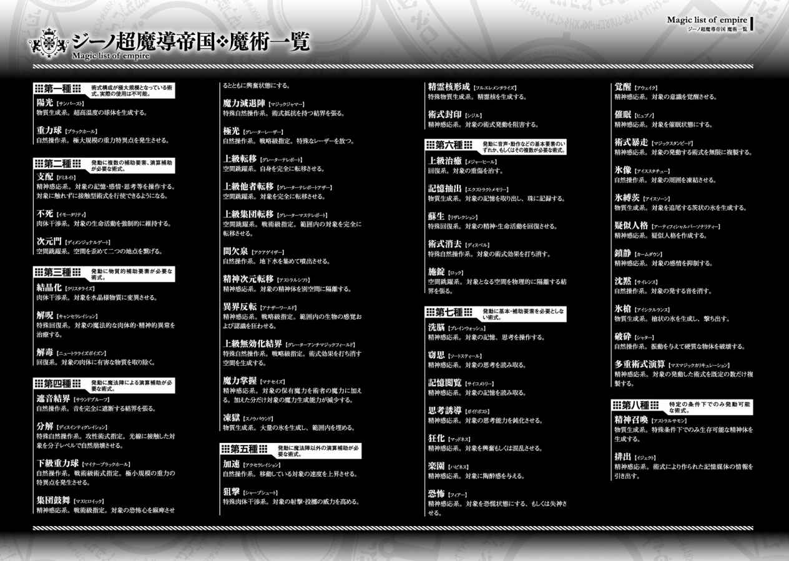

| 異世界魔術師は魔法を唱えない1 異世界魔術師は魔法を唱えないシリーズ | |
| I of異世界魔術師は魔法を唱えない | |
| もち & 218 | |
| キルタイムコミュニケーション (2015) | |
| Rating: | ***** |
| Tags: | Kindle本, ラノベ・BL, ライトノベル |
小説投稿のサイト「小説家になろう」の男性向けサイト「ノクターンノベルズ」からついに書籍化!
突然「勇者」として異世界に召喚された魔術師ヤード。
ヤードのいた世界と比べこの世界の魔術は遅れており、
同じく他の世界から召喚されてきた勇者達も頼りない。
しかも元の世界に戻れないという......。
こんな絶望的な状況でも、ヤードは怪しくほくそ笑む。
「覚悟しておけよ、この世界の人間達。
魔導技術の遅れたこの世界は、俺にとって巨大な玩具箱だ。
好きなように遊ばせてもらおう」
悪漢魔術師ヤードが圧倒的な魔導技術で異世界を蹂躙する──!!
突然「勇者」として異世界に召喚された魔術師ヤード。ヤードにとってこの世界の魔術は遅れており、同じく異世界から召喚された勇者達も頼りない。しかも元の世界に戻れないという...。こんな絶望的な状況でも、ヤードは怪しくほくそ笑む。「覚悟しておけよ、この世界の人間達。魔導技術の遅れたこの世界は、俺にとって巨大な玩具箱だ。好きなように遊ばせてもらおう」悪漢魔術師ヤードが圧倒的な魔導技術で異世界を蹂躙する!「ノクターンノベルズ」のWeb小説『異世界魔術の有用性』書籍化。
※本作品の全部あるいは一部を無断で複製・転載・配信・送信したり、ホームページ上に転載することを禁止します。本作品の内容を無断で改変、改ざん等行うことも禁止します。また、有償・無償にかかわらず本作品を第三者に譲渡することはできません。
※本作品は電子書籍配信用に再編集しております。
「ああっ、四人目の勇者様の召喚も成功しました！」
俺の目の前でそう叫んだのは、金色の髪を腰の辺りまで伸ばし、透き通るような蒼い目が特徴的で、美しい刺繍の施されたドレスを着ているという、まるで中世のお姫様のような姿の美人だ。
俺は現在、どこか別の世界へと来ている。突拍子もない話だが、俺をここへ飛ばした術式のことを考えるとそれしかありえない。
研究室で新しい戦略級術式の開発に没頭していたところに強制召喚型の魔法陣が突然展開され、気付いたときには四方を鎧姿の奴らに取り囲まれていた。そして俺が状況を把握しようとしていた矢先に、ただ一人場違いなドレス姿をしていた正面の女が言ったのが先ほどの台詞だ。
元の世界でも何回かあった報告例から考えるに、おそらくここは魔術依存の文明を築いている中世から近世レベルの世界で、俺は一般的に勇者召喚と呼ばれているらしい、他の世界から設定したスペック以上の能力を持つ人物を呼び出せる強制召喚術式により呼び出されたということなのだろう。
兵士らしき奴らが着ている装飾が派手すぎる時代遅れの鎧を見る限り、俺の推測も間違ってはいないはずだ。
「勇者様、どうかしましたか？」
一通り状況を把握するまでは黙っていようと思ったのだが、何も話さない俺を不思議に思ったのか、ドレスの女が話しかけてきた。華美な刺繍の施された服装は、どう考えても下働きの人間ではない。王女か貴族令嬢というところだろう。
「ああ、済まない。私が召喚されたのは分かるのだが、ここは一体どこなのだろうか？」
「あら、召喚についてはご存知なのですね。それならば話が早いです。ここはアンリエント王国の王宮内で、私はアンリエント王国第一王女ソフィア・ル・アンリエントと申します。勇者様にとある協力をお願いしたく、こうして呼ばせていただきました。ええと、お名前を伺ってもよろしいでしょうか？」
「これはご丁寧に。私はヤード・ウェルナーという者だ。私が呼ばれた理由についてもう少し詳しく聞かせてもらってもいいだろうか？」
「ヤード様の他にも勇者様がいらっしゃいますので、その話に関しましては国王から皆様にお話をさせていただきたいと思っております。どうぞこちらへ」
俺の他にも呼ばれているのか。俺と同じ世界の人間か、それ以上の魔導技術を有している世界の人間がいるといいんだが。
まずは王との謁見があるらしく、彼女は案内役として俺の先を歩いていった。廊下には高価な調度品が置いてあり華やかに見えるが、あまり実用的な構造はしていないようだ。
※
長い廊下や階段を延々と歩き、やっと目的の部屋へ到着した。
おそらく警備役だろう兵士達が扉を開けると、既に部屋の中には大勢の人がいた。部屋の奥に男女が座っているが、おそらくあの二人がこの国の国王と王妃だろう。
その脇には若い男達が立っており、周りにはやたら金が掛かっていそうな服を着た者達と警備役の兵士が立っている。
入り口のすぐ近くには二十代後半ぐらいの男が二人と十代後半ぐらいの女が一人、こいつらが召喚された勇者達だろう。
前に進み三人の隣に立って横目で窺うと、男の片方は明らかにこの国では作れないような、化学繊維でできた迷彩色の服を着ている。もう片方の男は一目見て騎士か何かだと分かる鎧姿だ。女はシンプルな聖職者風の服を着ている。
俺が並んだのを確認して、姫は国王の近くへと行ってしまった。これといった説明もなしにいきなり国王との謁見をするようだが、礼儀作法などは大丈夫なのだろうか。
「勇者達よ、よくぞこのアンリエント王国に参られた。私はアンリエント国国王ヴェルギリウス・ル・アンリエントである。突然のことに戸惑っているとは思うが、そなた達に十分に理解してもらえるまで何度でも説明しよう。しかしその前にまず、そなた達の名を教えてはもらえんか？」
流石は国王、普通に話しているだけでも声に威厳みたいなものが感じられる。俺達は顔を見合わせると、反対側の端にいた騎士風の男が自分を指差した。向かい合って分かったが、赤髪のイケメンだった。ついでに俺より身長が高い。どうやら先に発言してくれるらしい。
「私はナギア帝国蒼天騎士団所属のアレク・ギルフレイアと申します。大精霊より魔王を打ち倒し人々を救えとお告げを受け、ここへと参上しました」
イケメン改めアレクは、どうやら神や精霊といった存在がまだ実在する世界から来たようだ。勇者召喚と呼ばれる強制召喚型の魔法は、概ねその世界の文化や形式にあった形で展開する。
神が実在するような世界では神からの託宣のような形が取られることが多い。奴の世界では大精霊とやらが神の代わりなのだろう。精霊と神の間に大きな違いがあるわけではない。
精霊信仰が文化として存在している上に、託宣を受けるほどにその精霊を信仰しているということは、奴のいた世界はこの世界とあまり文明レベルでは変わらないはずだ。細かいところは違うかもしれないが、大体同じ程度の文明レベルになるはずだ。魔導技術と生活レベルの水準はおよそ比例関係にあるため、おそらく奴の世界では魔術もあまり発達していないに違いない。
アレクが名乗り終わると、次は奴の隣にいた聖職者風の女が前に出た。俺達と並んでもそこまで違和感がないほどに身長が高い。顔は少々幼い感じで、美人というよりも美少女といったほうが合っているような雰囲気だ。召喚された人間の中では一番若いだろう。
「初めまして。聖光教会で司祭位を頂いております、フェアリスと申します。託宣を受けまして、微力ながらもこの世界の人々を助けるべく、召喚陣なるものに導かれて参りました」
綺麗なお辞儀をしながら話すフェアリス。どうやらこいつの世界にも神が存在するらしいが、つまりこいつのいた世界もこの世界と変わらないレベルだということだ。
普通は科学技術や魔導技術のレベルが一定の水準以上になれば神や精霊といった存在は信仰力を失い消滅するはずなので、自分の世界は神から託宣を受けられるような低レベルの世界ですと叫んでいるようなものだ。俺なら間違いなく羞恥心で死んでしまう。無知とは偉大だな。
フェアリスが話し終わると、次はもう一人の男が前に出た。黒の短髪、身長は俺と同じ程度だが、よく鍛えられた身体をしている。元の世界でも戦闘訓練を受けていたのだろう。それに明らかに化学繊維でできた服装からして、この中で俺を除いて唯一近代文明から来ていることが分かる人間だ。
「自分は共和国軍第五特殊工作部所属のサガミ・リョウヘイです。私が飛ばされる際にはお告げのようなものはありませんでしたが、作戦行動中に突然魔法陣が現れ、気がついたときにはこちらの世界に来ていました」
やはりサガミは軍隊所属か。召喚陣のみで飛ばされてきたということは、概念上の存在を信仰していない上に魔術が普遍的に知られている世界から来たということだ。つまり俺の世界でいえば近代かそれ以降の文明がある世界である。こいつとは話が合うかもしれない。
それにしても作戦行動中に飛ばされるとは不運な奴だ。さぞかし自分の部隊がどうなっているか気になっていることだろうが、奴の態度からは不安の色は一切見えない。ポーカーフェイスを貫いているのを見ると、流石は軍人だと思わず感心してしまう。
さて、次は俺の番だ。正直に言えばこういう大勢の前で話すのはあまり得意ではない。他の奴らはこういう情況も慣れているのかもしれないが、研究室で同僚ぐらいとしか会わない俺は、こういう大勢に注目される経験があまりない。内心ドキドキしながら、何とか普通に見えるよう背を伸ばして一歩前に出た。
「私はジーノ超魔導帝国魔導研究室、戦略級術式開発班所属のヤード・ウェルナーだ。研究室にいるところを召喚陣に引っかかり、ここに飛ばされてきた」
周囲の視線が集まっているのが分かる。勇者という存在に期待の眼差しを送っている者や明らかに珍しいものを見る目つきの者など様々である。サガミのときもそうだったが、特に俺の格好に注目している奴が多い。確かに勇者を呼んで魔術師が来るのは想定外だと思うが、いちいち疑うような視線を向けるのは止めて欲しい。人々の視線を気にしないようにしながら後ろへと戻る。
「うむ、そなた達がこちらにやってきた経緯は分かった。では次はこちらから、そなた達をこの国へと呼んだ理由について話そう」
勇者達の自己紹介が終わると、一拍おいて国王が再び話し始めた。
「我が国は現在ダーロ魔帝国と戦争状態であり、国境地帯では何度も激しい戦闘が繰り広げられている。我が国は少数ながらに精鋭が揃っており、今まで魔帝国との間にそこまでの戦力差はなかったのだ。しかし魔帝国は長きに渡る均衡状態に焦れたのか、戦場に強大な魔物を解き放つという掟破りをしおった。我が国の精鋭達が次々と倒されていき、ようやく魔物を退けたときには多くの兵の命が失われていた。このままでは前線の崩壊は必至である。そこで苦肉の策として、そなた達勇者を呼び出さざるを得なかったのだ。そなた達には是非、魔帝国の軍勢を倒して欲しい」
なるほど、前線を維持できるだけの戦力が足りなくなったから俺達を呼び寄せたということか。つまりは都合のいい肉壁役だ。冗談ではない。しかしここでいきなり反抗的な態度を取るのも得策ではない。この世界に俺の味方はまだいないからな。
「一つ質問をしたい」
「よかろう、言ってみよ」
「仮にその魔帝国とやらを撃退した後、元の世界に帰れるのだろうか？」
これは割と重要な問題だ。自分で送還陣を描くことはできるが、その場合色々手間が掛かるし、数年掛かりの作業となる。そしてそんなに仕事を空けたらまず間違いなく研究所をクビになってしまう。
「それは......残念だができぬ。勇者召喚は呼ぶことしかできんのだ」
国王の言葉を聞いて他の勇者達に動揺が走った。
まあ元の世界でも勇者召喚が行われた世界での送還魔法の存在率は約四割と報告があったので、帰れない可能性も少なからずあるだろうと考えていた俺は動じなかった。突然の出来事で無職になった俺の心の中は、もはや悟りの境地に達していた。グッバイ、俺の仕事。
そんなわけで質問をした俺は平然としていたが、他の勇者達は予想外だったのだろう。勇者達の中でもサガミの動揺が酷い。先ほどまでの冷静な態度が崩れ、表情を険しくしている。よく見れば視線も定まっていない。態度には出していなかったが、それほどまでに元の世界に残してきた何かが心配だったのだろうか。
勇者達の動揺を見て周りの奴らは何やらひそひそと話している。ソフィアは何故か不安そうに俺を見つめている。多分俺が一番平然としていたから、この場の収拾をつけて欲しいのだろう。
彼女の期待に応えようか迷っていると、俺が口を開く前に国王が先に動きを見せた。
「そなた達には申し訳なく思う。こちらでの待遇はできる限り便宜を図るので、どうか許して欲しい。情けない話だが、もはやこの国はそなた達だけが頼りなのだ」
「私からもお願いします、勇者様方はこの国の希望なのです。どうかこの国を救って下さい」
率先して引き受けようとは思っていなかったので、国王から話し出してくれてよかったと思っていると、国王達の言葉を聞いたアレクとフェアリスが何かを決意した表情で前に出た。
「お任せ下さい、国王陛下。大精霊と我が剣に誓って、この国の危機を必ずや救ってみせましょう」
「ええ、助けを求める者に手を差し伸べるのは当然の行いです。私自身は非力ゆえ戦うことはできませんが、傷ついた人々を癒すことならできます。私達の力、どうかお使い下さい」
二人の発言に周りの奴らからおおっ、という歓声が上がる。二人に先走られたせいで断りにくくなってしまったではないか。人助けは結構だが、俺まで入れているような発言は止めて欲しい。
隣を窺うとサガミも微妙そうな顔をしているので、どうやら俺だけが否定的な考えをしているわけではなさそうだ。
この国の人間でも何でもないのに、好き好んで戦いたくはないと考えるのは当然のことだ。サガミの場合は、単に帰れないショックからまだ立ち直っていないだけかもしれないが。
「そうか！ そなた達の志、嬉しく思うぞ。我が国を救うべく駆けつけた勇者達に栄光あれ！」
国王の声に合わせ、周りの人間達も栄光あれ、などと叫んでいる。
この流れになるのは半ば決まり事のようなものだが、何とも余計なことをしてくれたものだ。まずはこちらの詳しい待遇や任務達成時の報酬などを話し合うことが必要だったというのに。いや、今からでも遅くはない。最初が肝心なのだ。
同意を得るべくサガミのほうを窺ったが、奴はため息を吐くと何やら吹っ切れたような顔で国王に向かい綺麗な敬礼をした。違う、そうじゃない。お前まで折れたのではもう完全に断れる雰囲気ではなくなってしまったではないか。
待遇も報酬も一切不明の上で戦争に参加するのか。一体何の罰ゲームだと心の中で嘆く俺の存在はこの場の人間達から完全に無視され、俺の顔には全てを諦めた、乾いた笑みが浮かんでいた。
謁見も終わり、俺達はそれぞれ専属のメイドに案内されて自分の部屋の場所に案内された。部屋は広かったが、元の研究室が懐かしくなるほどに何もない部屋だった。
部屋を確認した後はアレクの部屋に集まった。現在この部屋にいるのは勇者四人と何故か参加しているソフィア、そしてアレクの専属のメイドの六人である。
初対面の人間と顔を突き合わせるのは慣れていないのだが、この集まりを断る理由が思い浮かばなかったので、まずは現状把握と友好関係の強化が大事だと自分に言い聞かせ、仕方なく参加している。
「この国の勇者として活動する上で、まずは互いに何ができるのかを確認しよう。まずは私から話をさせてもらうので、その後は順に発言してくれ」
まずはお互いの能力の確認から始めるようだ。自己紹介は先ほど済んだようなものだからな。
「私の武器は魔法剣だ。私は自力で魔法を使うことができないが、この剣に宿る大精霊の加護によって、剣を介してならば魔法を使うことができる。この剣さえあれば魔帝国の兵達が何人来ようとも負けはしないだろう」
アレクは自信ありげな顔で剣を抜いた。確かに普通の魔道具よりは魔力が込められている。どうやら周囲の魔力を少しずつ吸収して溜め込んでいるようだ。これなら魔術行使ができない人間でも剣に記された術式を発動することができるだろう。
少し気になってどんな術式か使えるのか見せてもらうと、剣の周りに電光を走らせていた。奴曰く、五つの属性を持たせることができるそうだが、戦争でこんな対人戦用の能力は必要ない。せめて戦術級術式程度は使って欲しいのだが、所詮は中世レベルの魔術といったところか。
アレク本人には残念な話だが、こいつは戦力にはならないな。ともあれ一通り魔法剣を見せ終わると、奴はフェアリスのほうを向いて次を促し、彼女が頷いて立ち上がった。先ほどの発言と服装から推察するに、おそらくフェアリスは回復系の魔術師だ。
「私は攻撃用の魔法が使えませんが、代わりに癒しの魔法が使えます。生きているのであれば大体の傷を治すことができると思います。戦場では負傷者の治療をしようと思っております」
「その回復魔法とは、たとえば手足が切断されても後遺症なく治せるのか？」
「はい、息がある間ならば大丈夫です」
「神の恩寵である回復魔法を使うことができるなんて......。フェアリス様は聖女だったのですね」
ソフィアがフェアリスの話を聞いて感動している。聞いたところによると、この世界でフェアリス程度の回復系術式が使える人間は、聖人と呼ばれる片手ほどの数の人間しかいないそうだ。
再び訪れた衝撃の真実に、もはや言葉も出ない。まさか優先度の高い回復系術式がここまで発達していないとは。
個人の資質に依らない回復系術式は普通に存在するし、俺も何種類か使うことができる。当然信仰心などの無駄な要素はいらない。
ところが二人の話に上がっている信仰心を元にした回復系術式は、個人の魔力資質に依るところが大きい原始的な術式である。これは使える奴は生まれたときから使える、使えない奴はいつまでも使えないという、才能が全ての分かりやすい術式だ。
勇者の召喚なんて術式を完成させる暇があったのなら、一般人にも使える回復系術式の研究をしろと言いたい。
あまりにも偏ったこの世界の魔導技術のレベルに悪い意味で感動を覚えていると、いつの間にかフェアリスの話も終わっていたようで、サガミが立ち上がった。やはり軍人らしく背筋がビシッと伸びていて好印象だ。
「私の工作魔術は、あまり大きな物は作れないが、武器程度の大きさの物ならば作れる。近接戦闘術も一通り修めているので最前線で戦ってもいいが、私としては諜報や偵察といった任務のほうが合っていると思っている。部隊の振り分けの際には一考してくれると助かる」
サガミの言う工作魔術とは、命令入力と形質変化に特化した術式の総称だ。道具や構築物、ゴーレムなどの作成が主で、初期文明の発展の際に魔術に頼らない進化を遂げ、後に魔導技術体系を確立した世界でときどき見られる、結構レアな術式と言っていい。
少なくともある程度の科学技術と魔導技術の知識があるということで、他の二人よりも使えそうだ。ちなみに集団戦用に機関銃も作れるそうだ。アレクが何人襲ってきても倒せるな。
「それじゃあ、次はヤード様の番ですね」
サガミとならば魔術関係の話が通じるかもしれないなどと考えていると、俺の番が回ってきた。
今までの自慢にもならない話を聞いて、ここは自分の魔術の凄さをアピールするしかないという謎の発想に至った俺は、いかにも自信ありげな感じで立ち上がった。
「基本的な魔術は全て使えると思ってくれていいが、先ほどの名乗りの際に言った通り、第四種戦略級術式と、後は第七種精神感応系術式を得意としている。戦場に出ることがあるならば、前線で戦うよりも後方支援のほうが向いていると思う」
第四種戦略級術式とは、魔法陣を用いた超遠距離広範囲を対象とすることのできる術式の総称で、俺が元の世界の研究室で日夜研究を続けていたのもこれだ。
そして第七種精神感応系術式とは、術式発動の際に発音・動作要素を必要としない、主に脳や神経、記憶に作用する魔法の術式体系のことだ。戦略級の術式の中には精神感応系に分類できるものも混じっているが、これはその術式を作ったのが軍の研究室だからで、特に規則性はない。
ちなみに戦術・戦略級の術式は一応軍事機密だ。
「待て、お前が何を言っているのか分からん。戦略級術式とは大規模な範囲魔法のことなのか？ それにもう一つのほうも詳しく説明してくれ。精神感応系と言われてもテレパシーしか思いつかん」
俺の話が分からなかったのか、サガミがそんなことを言ってくる。他の奴らも頭に疑問符が浮いているようだ。系統別の分類すら知らない奴らはこれだから困る。仕方がないので実演として念話を発動する。
（つまりはこういう魔法だ）
念話は精神感応系術式の基本であり、必須ともいえる重要な術式だ。これができない奴は精神感応系を使いこなすことはできないとまで言われている。
口を動かしていないのに声が聞こえることに驚いたのか、四人は俺のほうを見つめてきた。
（あれ？ ヤード様、今お話しになりました？）
（これは......大精霊のお告げと似ているな）
（私も託宣を受けたような感じがします。貴方が話しかけているのですよね？）
（音を媒介としないで会話することができる魔術か。それに詠唱も道具もなしに使えるとは、素晴らしい魔法の使い手だな）
ソフィアは何をされたか分かってないようだが、勇者達には伝わったのでよしとする。
本当は念話じゃなくて洗脳や窃思のほうが得意なのだが、一般的に受けがいい類の術式ではないので言わないほうがいいだろう。それにそういった術式を使えることが知られれば、面倒な事態に巻き込まれる可能性が高い。
「この魔術は、たとえばここから前線となっている場所まで飛ばすことができるのだろうか？」
「ああ、人物の特定ができていれば大丈夫だ。何かその人物を特定できるような目印を持っていてもらえば、この世界のどこにいてもこの術式を飛ばすことができる」
「な、なるほど......。無線が使えないこの世界では、かなり重要な魔術だ」
サガミがいいことを聞いてきたので答えると、奴はこの術式の素晴らしさに気付いて驚いている。
だがしかし、俺の話にまともな反応を見せたのは奴だけだった。他の奴らはそれがどうしたのか、と表情で語っている。うん、正直奴らの理解力の低さを舐めていた。
一応無詠唱で炎を出してみせたが、そっちのほうが褒められたのがショックだ。
結局戦略級術式は実演できなかったがまあいい。室内では奴らでも分かるような派手な術式は使えないし、魔法陣を描くのも大変だし、それ以前に使用する魔力量が多すぎて無駄撃ちをしたくない。
俺にとって何より重要な情報は、ここまで魔導技術の遅れた世界でこれから生きていかなくてはならないということだ。一見絶望しかないように見えるが、考えようによっては最高の舞台だ。
覚悟しておけよ、この世界の人間達。魔導技術の遅れたこの世界は、俺にとって巨大な玩具箱だ。好きなように遊ばせてもらおう。
「よし、これから四人で力を合わせて魔帝国と戦っていこう。そのためにお互いに信頼し、協力し、助け合っていこうではないか。もちろん毎日の鍛錬を忘れずに行い、この国に早く馴染めるよう努力していくことも大切だ。我々は人々の規範となるべき勇者なのだから、横柄に振る舞うのではなく、そして......」
あまりにも長くなりそうなアレクの話に一瞬で飽きてしまった俺は、真面目に聞いている振りをしながらこれからのことを考えていた。
正直な話、俺はこいつらと違って戦争に参加するなんてお断りなんだ。まだ敵の戦力すら分かっていないのに、誰がわざわざ死ぬ可能性のある戦いに参加しようと思うのか。いざとなったらこの城から逃亡することも視野に入れておこう。
※
あまり発展性のなかった会議の後はソフィア達と一緒に食事を取り、そのまま部屋に帰った。残念ながらこの世界はシャワーも風呂も広まってないらしく、貴族でさえときどき身体をお湯で拭くぐらいしかやっていないそうだ。
俺は意外と綺麗好きなので、一日風呂に入らないだけでもかなりの苦痛だ。だが風呂がないなら仕方がない。せめて身体を拭うぐらいはしようと思い、お湯を持ってきてもらう。
「失礼します、お湯をお持ちしました」
お湯を持ってきたのは専属のメイド、ティアさん。見た目は二十代前半で、烏の濡れ羽のような艶やかな黒髪を肩口までの長さまで伸ばした、非常に可愛らしい顔立ちの女性だ。胸の部分の自己主張が強いのも、俺の好みにばっちり合っている。
「ヤード様、お身体をお拭きします」
「そうか、済まないな」
構いませんよ、と笑いながら返してくるティアさん。研究室にもこういう娘が欲しかった。服を脱ぎ上半身を晒す。意外と筋肉質だった俺の身体に驚いたのか、彼女は目を大きく開いている。戦略級術式は魔力の他にかなりの体力も持っていくので、研究室に篭もっていても毎日の鍛錬は欠かさないのが魔術師のあるべき姿だ。
「よく鍛えられていますね。魔法使いの方々はあまり鍛えていない人が多いので驚きました」
「私の世界では魔術師も己の身体を鍛えるのが普通なのだよ」
しげしげと見つめられたのでちょっと力を入れて筋肉を盛り上がらせてみる。俺の身体を拭きながら、頬を染めているティアさん。この反応は意外と脈があるのではないかと思われる。
我が人生の春が来るのも遠くないな。そう思った瞬間、俺の脳内に警告音が鳴り響いた。
（『第一魔導障壁、貫通されました。第二魔導障壁、防御に成功。攻撃術式の逆探知に成功しました。攻撃術式は至近距離からの第七種物質干渉系術式だと想定されます』）
常時展開されている魔導障壁は五層の障壁でできた、対物理・魔術両用の汎用障壁だ。それが俺に対して掛けられた魔術を防ぐと同時に、俺の頭に先ほどの警告文を流した。
物質干渉系ということは肉体情報を探ろうとしたのか、それとも麻痺でもさせようとしたのだろうか。魔導障壁で防げたのならば細かいことは気にしなくていいのだが、この場合問題なのは、至近距離には現在ティアさんしかいないということだ。他に術式の行使ができる存在がない以上、彼女が俺に対して術式を発動したと見るしかない。微かに魔力を放っている指輪が魔道具なのだろう。
彼女とはまだ知り合って間もない。いきなり襲われるような関係にはなっていなかったと信じているので、今の術式は純粋な興味か何かだろうか。俺に興味があると思えばそれも悪くはないな。
とりあえず真実を探るべく、窃思を発動する。
（おかしい、何故肉体情報が見られないのでしょう？ まさかこちらの意図に気付いて魔法防御用の魔道具を装着しているとか？ でもそれらしい物はありませんし......このままでは公爵様に報告ができない......）
術式が発動して、彼女の真っ黒な心の声が聞こえてきた。
クソ、どうせこんな展開だろうと思ってたよ。術式を発動したのが彼女しかいないんだから、どう考えても彼女が一番怪しかったのだ。ついでに言えば、俺に内緒で術式を発動している時点で何かやましいことがあると、薄々感じていたのだ。
せめて彼女は誰かに脅されてやっていて欲しかった。それならば脅されている彼女を救い出して好感度アップも狙えたのに。
一通り心の中で嘆いた後、まずは公爵が誰なのかを調べないといけないので記憶閲覧を発動した。
彼女の記憶を一通り調べて分かったことは、彼女の思考の中に出てきた公爵はディアン公爵といい、謁見のとき右側のほうにいた男だということだ。まさかそんな国の中枢に近い奴に疑われているとは思わなかった。助けてくれと言っておきながら、こちらのことは信用していなかったということなのか。
勇者として呼ばれたのはいいが、結局は政治の駒として使われるだけなのだ。
せいぜい俺を好きに利用しているがいい。俺も好きにさせてもらう。そうだ、魔導技術の遅れた世界の人間など、弄んでやるくらいでちょうどいい。
「拭き終わりました。また何かありましたら、お気軽に声をお掛け下さい」
「あ、ちょっと待ってくれ」
「はい、何でしょうか？」
俺が色々考えているうちに身体を拭き終わったようで、お湯を持って退出しようとしていた彼女を慌てて呼び止める。俺はこんな扱いをされても黙っているほどお人よしではないので、元凶のディアンという奴にこの仕打ちに対するお礼をしてやる。ティアさんは俺のタイプなので、今回のことは俺の心の内に秘めておくことにしよう。
「この世界でも元の世界と同じ術式が発動するか試したい。協力者が必要なので、済まないが手伝ってもらえないだろうか？」
「あ、はい、大丈夫です。どんな魔法なのですか？」
「特定の人物に遠距離から接触型の術式を飛ばせるようにする術式だ。これが使えるようになれば敵の射程外から前線の兵に回復系術式を飛ばせるようになる」
「っ！ 素晴らしい魔法ですね！ 分かりました、私でよければ協力させて下さい」
俺の術式に興味があるようで、彼女はお湯を床に置いて嬉しそうにこちらにやってくる。先ほどまでの俺ならこの笑顔に癒されていただろうが、彼女の内心を知った今ではこの笑顔が演技だと分かってしまい、嬉しさよりも虚しさと悲しみが湧いてくる。
だが俺の恨みは彼女ではなく、全て彼女にこんな任務を与えたディアンとかいう公爵に向いていた。その公爵は絶対に許すわけにはいかない。
そんな内心はさておき、近寄ってきた彼女に元の世界の硬貨を渡した。偽造防止のために様々な術式が刻んである硬貨を見て、不思議そうに裏返したり指で弾いてみたりしている。指輪型の魔道具で術式の有無を探っているようだが、渡したのはただの硬貨なので何も起こらない。
今必要なのは彼女が俺に所有権のある物を持っていることだ。精神感応系の術式は使われていないので、こちらの思考を読み取られている恐れもない。今から発動する術式に関して嘘は言っていないので、もし彼女が虚偽を見抜く何らかの手段を持っていてもこちらの意図には気付かないだろう。
「その硬貨は持っていてくれ。今から使う魔術はその硬貨を持つ者しか対象に取れないし、そちらの同意も必要だ。魔法抵抗の魔道具などを持っているならそれも外してくれ」
「そういった物は持っていないので大丈夫です。いつでも始めて下さい」
彼女は大丈夫だと言っているが、対精神感応系術式の障壁が展開しているのは既に分かっている。不可視状態なので気付かれていないと思っているようだが、彼女の張っている程度の障壁なら貫通して思考を読めるので嘘なのが丸分かりだ。障壁があってもなくても関係ない。
不信感を与えないように注意しながら、第二種精神感応系術式、支配を発動する。この魔術は術者の所有物を受け取った相手しか対象にできず、さらに相手が術式を使われることに同意している場合か、相手が術者との間に交わした契約を破った場合のみ使うことができる術式だ。
対象の記憶や感情を自由に操作できるようになり、さらにその対象が術者から離れていても一部の接触型の術式を飛ばすことができるようになるという便利な術式だ。加えてこの術式は記憶や感情を一時的に操作するだけの洗脳とは違い、操作した後の記憶や感情を普通の状態として固定してしまうので、解呪などの対抗魔術でも治すことができない。記憶改ざんをするにはうってつけの術式だ。
術式の効果が現れた彼女は記憶を弄られ、精神を変質させる際に術式抵抗の高さから生じる怖気で身体を震わせるが、すぐに落ち着きを取り戻して先ほどとは違った感じの目でこちらを見つめてきた。どうやら問題なく成功のようだ。
「お前の本当のご主人様は誰だ？」
「ヤード様です」
「お前に与えられた任務は？」
「ディアン公爵の部下を装って、奴からできる限りの情報を引き出すことです」
「よし、上出来じゃないか」
これで彼女は俺の忠実な駒となった。先ほどまでの演技とは違い、本当の笑顔でこちらを見つめてくる彼女はとても可愛い。記憶を改ざんするついでに俺に対する好感度も可能な限り上げておいたのだが、この判断は間違っていなかったようだ。
操作された好意を嫌う者もいるかもしれないが、人間の感情自体が所詮は脳内麻薬と電気信号が作り出す錯覚だ。俺としては電子機器のプログラムを弄っているのと大差ないと思っている。
それに何より好みの女性に嫌われているよりは好かれているほうがいい。
ちなみにこの術式を掛けた人間は彼女が初めてである。元の世界でこの術式に掛かるような術式抵抗の低い奴はいなかったし、俺も失敗する可能性は考えていた。これならこの世界の人間で遊ぶのも簡単そうだな。
「よし、公爵についてお前の知っている情報を教えてくれ」
「公爵は反王家グループのリーダーで、魔帝国とも繋がっています。今回私が命じられたのは、ご主人様を含む勇者達の能力を調査し、できるならば隷属の腕輪を着けることでした」
「早速魔帝国か。この分だと既に勇者達の情報は知られてしまったかもしれないな。それで、その公爵は魔帝国に協力したら然るべき地位や金がもらえるとでも言われていたのか？」
「はい、魔帝国に勇者達を引き渡した暁には魔帝国での侯爵位が与えられるという約定を交わしているそうです。現状この王宮内でこの取引を知っているのは、ディアン公爵とクロイツァ伯爵、グートラン伯爵、ニルド男爵と、私を含む勇者様方の専属の者達の八名です」
なるほど、劣勢の王国を見捨てて魔帝国に亡命しようとしていたのか。確かに勇者という外部の者に頼るしかないこの国は、いつ沈んでもおかしくない泥舟のようなものだ。普通に考えれば勝つのは魔帝国だろうから、公爵の判断は決して間違っているとは言いがたい。
ディアン公爵の犯した唯一の失敗は、俺達というか俺を取引の人質にしようとしたことだ。
とてもじゃないが許せるものではない。この恨みはどうやって返してやろうか。
※
そんなことを考えていると、ふと視線を感じた。顔を上げるとティアさん、もうティアでいいか。ティアがもじもじと身体を揺らしながら、何かを欲しそうな目でこちらを見ていた。
そういえば彼女のことを忘れていた。公爵の情報を伝えてくれた褒美を与えてあげなくては。
「ああ、済まないな。褒美をやろう」
ベッドを叩いて横に座るよう促すと、嬉しそうにそこに座り、こちらに寄りかかってくる。服越しでも分かる彼女の柔らかさに、こちらの気分もいい感じに高まってくる。
ベッドに押し倒して唇を奪うと、舌を伸ばし積極的に絡め合おうとしてくる。歯茎を舐め、唾液を送りこみ、彼女の荒い息遣いを聞きながら口の中を存分に堪能する。彼女の口の中は何となく甘いような気がした。彼女も俺とのキスを楽しんでいるようだった。口を離しても名残惜しそうに舌を伸ばしてくるので、唾液を垂らしてやると美味しそうに飲み込んだ。
「どうだ、満足したか？」
「あ、ご主人様......その......」
俺の問い掛けに、彼女は答え難そうに顔を逸らしている。恥ずかしがりながらも股間を押さえて何かを期待するようにちらちらとこちらを見てくる様子は、俺を挑発しているようにしか見えない。
しかし、そこであえて彼女の様子に気付かない振りをして立ち上がり服を整える。主導権を握るのはあくまで俺だ。お預けをされた彼女は悲しそうな顔になってこちらを見つめてきた。
「どうした？ 何か言いたいことがあるなら言ってみろ」
「......ご主人様にもっと奉仕させて下さい。私の身体でご主人様を喜ばせて差し上げたいのです」
「いいだろう。服を脱いで待っていろ」
「っ！ はいっ！」
嬉しそうな声を上げ、彼女はいそいそと服を脱ぎ始める。俺も服を脱いでベッドへと上がる。彼女は着やせするタイプのようで、胸は想像していたよりも大きかった。じっと見つめると、彼女は恥ずかしそうに腕で隠そうとしたが、彼女の胸の大きさを強調しているようにしか見えない。
「まずは私の物を舐めてもらおうか」
彼女の目の前に肉棒を突きつけると、待ちきれなかったように先端に口付けをしてきた。ティアのような女性が舌を伸ばして俺の肉棒を美味しそうに舐め上げているのを見ると、女を支配しているという優越感が湧き上がってきた。フェラは初めてなのかあまり上手ではないが、根元から先端までを丹念に舐めて、口の中で必死にしゃぶっている。彼女の熱心な奉仕のおかげで、俺の肉棒も硬く勃起した。
「んんっ......ごひゅじんひゃま、どうれふか......？」
肉棒に奉仕しながら俺のほうを上目遣いで見てくる彼女を見ていると、急に悪戯心が湧いてきた。彼女の頭を掴んで喉の奥にまで叩き込むように腰を動かすと、喉奥に衝撃を受けたせいで彼女がえずいているが、その反応が心地よい刺激となって俺を感じさせてくれる。彼女が苦しんでいるにもかかわらず何度も腰を叩き込むが、彼女も肉棒を吐き出さず、むしろ必死に舌を動かして俺に快感を与えようとしていた。
「んっ、そろそろ出そうだ、口に出すぞ！」
俺の言葉に頷きながら、彼女はさらに激しく奉仕し始めた。いよいよ出そうになったので、喉の奥まで届くよう思いっきり肉棒を突き入れると、肉棒が勢いよく喉奥に当たった反射で彼女の喉がきゅっと締まり、その刺激を感じながら彼女の喉に俺の精液を大量に注ぎ込んだ。
彼女は戻しそうになりながらも必死に精液を飲もうとしているようだが、飲みきれない分の精液が逆流してきて、口から少し零れていた。零れた精液を拭い取り飲み込むと、こちらに向けて蕩けた笑みを浮かべた。
「はあぁ...お掃除させていただきます......」
中に残った精液を吸い取り、唾液と精液でベトベトになった肉棒を卑猥な音を立てて舐めている。そんな姿を見ていると俺のほうも再び硬くなってきたので、奉仕中の彼女を止めて仰向けに寝かせた。
「そんなに熱心に奉仕されては我慢ができない。今からお前の中に入れるぞ」
「はい！ ご主人様の熱い肉棒で、私の中にご主人様の形を刻みつけて下さい！」
そこまで言われて断れるはずもなく、既に濡れている彼女の膣穴を一気に貫いた。初めてではないのか、膜を破るような抵抗はなかったが、中は処女のようにきつく肉棒に絡みついてくる。彼女のほうも痛みは感じていないようで、積極的に快感を得ようと自ら腰を動かしている。ゆっくりと指が沈みこんでいくような彼女の胸を揉みしだきながら、彼女の言ったように俺の形を覚えさせるべく子宮口にまで届くかのように深く肉棒を叩き込んでいく。
「あぁああっ！ ご主人様ぁ、気持ちいいです！」
「ああ...お前の中も気持ちがいいぞ！ さっき出したばかりだが、またすぐに出てしまいそうだ！」
腕を回し抱きしめてキスをねだってきたので、こちらも強く抱きしめてやる。俺の舌に積極的に絡めてきて、唾液も美味しそうに飲み込んでいく。彼女の膣内は俺の精液を搾り出すようにきゅっときつく締めつけてきて、こちらも存分に彼女の中を味わわせてもらった。
彼女の顔は完全に蕩けきっており、まるで恋人を見るように頬を染めて、腕や足を絡めて肌を密着させてくる。その柔らかい感触を楽しみながら、こちらの余裕もそろそろなくなってきた。
「ティア、中に出すぞ！」
「はいっ！ ご主人様の子種を私の中に注いで下さい！」
「ああ、イクぞっ！」
「っはぁあああん！ ご主人様の子種汁が、私の中に入ってきますぅ！」
勢いよく彼女の奥に腰を打ちつけ射精する。彼女も精液が打ちつける快感で絶頂に達したのか、膣内がきつく締まって精液を搾り出そうとしてくる。
あまりの気持ちよさに今まで出したことのないほど大量の精液が出ているのを感じるが、彼女のほうもそれは同じだったのか、あまりの快感で背を反らしながら絶頂し続けていた。
「はあ......はあ......ありがとうございました、ご主人様」
ティアが落ち着くまで待っていると、彼女は恥ずかしそうに顔を俯かせながらも、嬉しそうな声でそう言ってきた。思わず押し倒して第二戦を始めてしまうほどに、ベッドの上での彼女は可愛かった。
※
その後は結局三回もしてしまった。体力的には少し辛いが、精神的にはこれ以上ないぐらいに絶好調だ。やはり黒髪美人は最高だな。
あの後聞いた話によると、ディアンは魔帝国の軍が攻めてきた際に内側から騒ぎを起こしつつ敵兵を引き入れる任務も受けているそうだ。隷属させた勇者達もそのタイミングで離反させて王国を混乱させようという算段らしい。
まあ勇者達を引き渡す任務は既に達成不可能になっているのだが、そのときまでディアンには知られないようにしておいたほうがいいだろう。ティアは既に俺の味方なのだから、虚偽の報告でもさせておけばいい。
「ティア、今後の予定はどうなっている？」
「まず午前中には第二王女のマルガレーテ様から前線の状況と方針についてお話があります。それが済み次第、午後には早速前線の基地へと出発するそうです」
「第二王女か、この国には王女しかいないのか？」
「いえ、第一王子のロベール様と第二王子のランド様がいらっしゃいます。昨日の謁見のときにも国王陛下の隣にいらっしゃったはずですが......」
「そうか、そういえばあのとき誰かいたな」
謁見の最中はそんな人間にまで気を回す余裕などなかったため、覚えていなくても仕方がない。それにしても昨日の今日で早速前線に行くのか。前線は崩壊寸前だと聞いていたが、これはかなり悪い状況だということなのだろう。いきなり劣勢の戦いに加わるのは嫌だが、引き受けた以上仕方がない。
「まずは俺の立場を安定させることから始めるか」
「どういうことでしょうか？」
「そのままの意味だ。俺がこの世界の人間を気遣う必要などないからな。術式を使ってでも味方を増やす」
ティアのように術式を使ってでも手駒を増やし、この世界で自由に動けるだけの立場と味方を得るのが当面の目標だ。まずは地位の高い者が欲しいところだな。
※
朝食のメンバーは昨日とほぼ同じだった。一つだけ違うのは、昨日はいなかった女が増えていることか。多分あれが第二王女なのだろう。
金髪碧眼なのはソフィアと一緒だが、姉と違って凄い髪型だ。縦ロールという奴だろうか、髪型が貴族っぽい。優しい雰囲気のソフィアとは違い、吊り目気味で気の強そうな印象を受ける。
国王に紹介されたときにはこちらへ軽く頭を下げたが、食事中は一切話さなかった。
食事が終わると第二王女に続いて移動する。移動中に何故かこちらを睨んできたのだが、初めて会った奴に何故睨まれなければいけないのだろうか。
会議室のような部屋に入り、順に座っていく。今回の参加者は勇者達とこの王女だけだ。
「改めてご挨拶申し上げます、第二王女のマルガレーテ・ル・アンリエントと申します。勇者様達の実力は既に聞き及んでいますわ。我が国に力を貸していただけたこと、嬉しく思います」
凛としたよく通る声で自己紹介をするマルガレーテ。ソフィアはお姫様という感じだが、こいつは王女と呼んだほうが似合っているな。高飛車な印象を受ける顔立ちと縦ロールがよく合っている。
間違いなく美人ではあるが、純粋に見た目でいえばソフィアのほうが好みだ。
第一印象からいって、こいつを味方につけようとはあまり思えない。指揮官という立場を持っているのはプラスだが、それを帳消しにするほどに性格が悪そうだ。
「さて、早速ですが現在の状況についてお話させていただきます。現在我が軍と魔帝国軍は両国の国境地帯にあるグルタ要塞付近で膠着状態となっております。すぐさま要塞が落とされるようなことはありませんが、敵は我が軍よりも遥かに多くの人員を使った物量作戦を展開しておりまして、要塞の人員も物資も足りない状態です。もし仮にここの要塞が敵の手に落ちるようなことがあれば、我が国の防衛線は大きく後退することになります」
「つまり我々はその要塞の防衛をすればいいのだろうか？」
「ええ、もちろんそれもお願いしたいのですが、もっと重要なのは要塞に送り届ける物資の護衛です。現在要塞の周辺では魔帝国の軍が物資の運搬を妨害しているのです。このまま篭城させ続け、堪えきれなくなった我が軍が打って出てきたところを叩く算段なのでしょう。逆にここで要塞に冬まで戦えるだけの物資を送り届けることができたならば、冬を越すだけの用意がない魔帝国の軍は撤退せざるを得ないはずですわ」
「なるほど、つまりは持久戦というわけだ」
「篭城というなら、野外で戦うよりも色々とお役に立てると思います」
「はい、勇者様方のお力があれば必ずや我が軍が勝利すると信じておりますわ」
マルガレーテと他の勇者達は和やかな雰囲気で会話をしているが、俺は彼女の言った作戦に疑問を感じていた。要するに物資を補充して相手が撤退するまで篭城する作戦のようだが、相手に大規模魔術を行使できる魔術師がいた場合、逃げ場のない篭城は逆効果だ。
俺がこの世界に召喚された以上、相手にも同じだけの魔術師がいないとは言い切れない。これが俺とこいつらとの魔術に対する意識の違いか。
そもそも現在要塞には七百人ほどの兵士がいるらしいが、敵はその十倍以上の兵力で要塞を攻撃しているそうだ。あまりにも兵力に差がありすぎる。今まで戦線を維持できていたのも奇跡だとしか言えないレベルだ。今ならディアンが魔帝国に寝返ろうとしていた理由も分かる。
「ヤード様。先ほどから何かお考え中のようですが、私の話は聞いていただけましたか？」
先ほどから何の反応もない俺が会議を聞いていないように見えたのか、マルガレーテがこちらに話を振ってきた。この王女は相変わらずこちらを睨んだままなのだが、よくよく見るとこれは俺のことを嫌っているというより侮っている感じの目だ。
侮られるようなことをした記憶はない。可能性として考えられるのはティアとの情事だが、わざわざこいつが聞き耳を立てていたということもないだろう。単に魔術師だから侮っているのか。
まあ仮にそうだとしても、いきなり喧嘩腰なのはどうかと思う。無駄に強がってみても余裕がないように見えて格好悪い。こちらは友好的な態度で接しておくことにしよう。
「ああ、そちらの話は十分に理解できた。私から聞きたいことは特にない」
「......」
「......どうかしたのか？ 私に構わず、どうか話を続けてくれ」
こちらの返事に応えずに睨みつけてくる視線が不快に感じたので、少し嫌味な声色を込めて返してみる。案の定王女は顔を顰めて、軽蔑するような視線を隠しもせずに送ってきた。
「......そうですか。残念ですが私、貴方にはそれほど期待しておりませんの。昨日のことはお姉様から伺いましたが、他の勇者様方は素晴らしい魔法を披露して下さったのに、貴方の魔法は正直期待外れだったと言わざるを得ません。私の話が退屈でしたのなら、退出なさって結構ですわ」
何というか、実に脳筋な考えをしている女だ。確かに昨日実演した念話は見た目こそ地味かもしれないが、鮮度の高い情報という、戦争においては何よりも重要なものを伝令などよりも遥かに早く伝えることができる便利な術式だというのに。
あまりの残念さにむしろ憐憫の情が湧いてくるが、周りの奴らの中で王女の言葉に否定的な態度を見せているのはサガミだけだ。アレクはこの王女の言葉に頷いており、フェアリスも否定はしないのを見ると王女の言葉に同意のようだ。情報戦の大切さも理解してないとは、これだから無教養な人間は嫌いだ。
いくら無知だからといって、こちらの実力も知らないうちから人を侮っているこの王女には苛立ちを覚える。売られた喧嘩は買う主義なので、少し痛い目を見させてやる。
「どうやら私はこの会議に不要のようだ。悪いがここで抜けさせてもらう」
そう言って部屋を後にする。部屋を出ていく俺を見て、王女は勝ち誇った表情を浮かべている。その余裕の表情が崩れるときを楽しみにしてやる。
※
会議室を出て部屋に戻り、ティアに第二王女についての情報を聞く。王妃が産んだ二番目の子で王位継承権的には四番目、つまり一番低い。
継承権争いに参加していないおかげでかなり自由に振る舞っているらしく、騎士団を率いて前線に行き、指揮を執っているようだ。今はグルタ要塞の指揮官として防衛を一任されているらしい。
指揮官としての腕はあるようで、城の兵士達からの評判も高く、今では王子達よりも兵士達から信頼を寄せられているそうだ。しかしながら、今はそんなことはどうでもいい。必要なのは弱点となるような何かだ。
「マルガレーテ様ですか。まず失態や醜聞などは聞いたことがありません。王位継承に関しては元々望みがほとんどないので争いもなく、親子の仲も兄弟姉妹の仲もいいと聞いております。それに文武に優れ、決断力もありますので、男性だけでなく女性の方からも好かれていらっしゃいますね」
「この国ではなかなか有能な人物というわけだ......実は同性愛の気があるとか、何かそういった噂はないのか？」
「そういった話も聞いたことがありません。確かに王妃様やソフィア様には男性の家族よりも親しげに接していらっしゃるそうですが、少々潔癖な方なので、同性愛に限らず夫婦以外の男女の色事に関してもあまり好ましく思われていないとのことです」
「ならば弱みを握るよりも、周りから追いつめるほうがいいか。ティア、お前は何かいい案があるか？」
「そうですね、マルガレーテ様は幼い頃から恵まれた環境で育ってきたので、味方と思われている人間に裏切られた経験はないはずです。多数の人間に醜聞を広めて人々からの信頼をなくしていくのもいいですが、それよりも家族や部下に裏切らせるような策がいいかと思います。ここは彼女が特に信頼しているという第一王女のソフィア様を利用すべきかと」
可愛い顔をして真っ黒な発言をしているティア。彼女はあまり怒らせないようにしよう。
それにしてもなかなか残酷な提案だな。俺としては軽い脅し程度の仕返しでいいんだが。彼女は俺が侮られたのがそれほどまでに悔しいのだろう、マルガレーテの話をしているときの声にも王女への怒りが滲んでいる。
抱き寄せて頭を撫でてやると安心したのか、こちらの胸に顔をすり寄せてくる。よしよし、可愛いメイドのためにも頑張ってやってやるか。
※
ティアの案に乗ることにした俺は、まず一番仲がいいというソフィアを当たってみた。おそらく昨日の話をマルガレーテに伝えたのは彼女だろうから、ついでにそのときの様子も聞いておこう。
内密な話があると先ほど念話で伝えておいたので、部屋に着くと既にソフィアが待っていた。
「済まないな、話があるなどと急に言い出して」
「いえいえ、勇者様の頼みならお話の時間を割く程度は簡単なことですから」
メイドが入ってきて、紅茶を二人分用意して出ていく。一応探知をしてみるが、部屋の周辺に怪しげな人物はいないようだ。念のために遮音結界を張っておき、盗み聞きされる可能性もなくしておく。
「昨日のことは既に第二王女様にも伝えたようだな」
「ええ、勇者様達の魔法のことはちゃんと伝えておきましたよ。マリーは特にサガミ様の魔法が気になったようです。でも、ヤード様の魔法は私が上手く説明できなくて、ちゃんと伝えられたかどうか分かりませんでした。私の知識不足のせいで、済みません」
マリーとはマルガレーテの愛称らしい、だとしたらソフィアはソフィとか呼ばれていそうだ。
上機嫌に話し続ける彼女に気付かれないように窃思を使うと、確かに昨日のことを伝えていたのは分かった。しかしながら、俺の情報はやはり正確に伝わってはいなかったようだ。ソフィアの説明では口を動かさずに会話ができるくらいしか伝わっていないだろう。
俺の次に術式について詳しいだろうサガミですら完璧に理解していないと思うので、ある意味では仕方がないかもしれないが、全員俺の戦略級術式というのを勘違いしている。
戦略級とは攻撃用の術式だけではなく、超遠距離転移や集団意識誘導なども含めての術式なのだ。
そもそも攻撃用の戦略級術式は星間戦争の際にも使われるほど大規模なものだ。大体が敵味方の区別なく、下手をすると国の一つや二つは殲滅してしまうぐらいに大雑把なものしかないから、既に戦端が開かれている場所や自国内での使用は不可能と言っていい。
しかし彼女らの想像の威力は大幅に間違っており、十数名を吹き飛ばせる程度の威力だと思っているらしい。そんなものは戦略級ではなくただの範囲術式程度で、戦術級ですらない。
範囲術式など使える魔術師はそれなりにいるだろうから、俺の頼りない情報を聞いたマルガレーテが俺を侮りたい気持ちは分からなくもない。まあだからといって実際に侮辱された以上、仕返しを止めるつもりはないのだが。
「話の腰を折って済まないが、聞いていただきたいことがある」
「そういえば何かお話があるとのことでしたね。私でいいのでしたら、何でもお話し下さい」
ここで第七種精神感応系術式、思考誘導を使う。これは相手の理性を鈍らせ、こちらの言葉に疑問を持たせなくする術式だ。別に相手の思考を操作できるといった術式ではないが、これも洗脳と違って対抗術式で解呪されない上に、支配と違って条件がないので使い方によってはかなり便利な魔法である。
「実は先ほどの会議でマルガレーテ様と言い争いをしてしまったのだが、どうやら私は足手まといだと思われているらしい」
「それは......大変失礼致しました、妹に代わって謝罪させていただきます。お気分を害されたでしょうが、きっと妹も勘違いをしているだけだと思うのです。悪いのはヤード様の魔法の説明をした私ですから、マリーはどうか寛大な心で許してあげて下さい」
「ああ、大丈夫だ。こちらの態度にも非があったのだから、彼女が悪いと言っているわけではない。恥ずかしながら会議室を飛び出してきてしまったのでな、ただ彼女と和解できるように協力して欲しいのだ」
「そうですか。それなら是非とも私に協力させて下さい」
ニコリと笑っている彼女を見ていると、本当に妹との仲がよさそうなことが分かる。これなら予定通りにいけそうだな。
「ありがたい。貴女と彼女はとても姉妹仲がいいと聞いているので、貴女と私が仲睦まじくしているところを見せたなら、彼女も私と友好的な関係になってくれると思うのだが、どうだろうか？」
「素晴らしい考えですね。私もそれがいいと思います」
既に話がおかしくなっているのだが、彼女は気付いた様子もなく俺の意見に賛同している。マルガレーテの性格を聞いた限りでは、俺とソフィアが仲睦まじくしている姿を見たら発狂しそうだと思うのが普通だと思うが、俺の使った術式のせいでそんな疑問も湧いてこないのだろう。
さて、まだまだ作戦の準備が始まったばかりだ。席を立つと彼女の近くへと行き、きょとんとしている彼女の手を握る。
「実は今までの話、貴方に伝える言葉を言いたいがためでもあったのだ」
彼女の目をしっかりと見つめながら、一呼吸おいてその言葉を告げる。
「ソフィア様、一人の男として貴女を愛している」
言葉と共に無詠唱で術式を発動。第七種精神感応系術式、楽園。効果は脳内麻薬を分泌させ、対象を幸せな気持ちにするだけ。精神感応系術式の中でも最も簡単な部類の術式だ。
ついでに狂化も使っておく。こっちは本来の効果で使えば相手の理性を剥ぎ取り興奮状態にさせるものだが、あえて効果を落として少し興奮する程度にしてある。
先ほど使った思考誘導の効果に上乗せしてこの二つの術式を受けた彼女は、どう考えても唐突で怪しい俺の告白を素直に信じてしまう。一瞬驚きで固まっていたのだが、はっと意識を取り戻すと頬を赤らめて顔を逸らした。
「ご、ご冗談はお止め下さい。私達はまだ出会ったばかりではありませんか......」
「一目惚れという言葉もある通り、愛に時間は関係ない。それとも私のことが嫌いなのだろうか？」
「決して嫌いなどではありません！ あっ、その、いえ......」
恥ずかしがりながらもちらちらとこちらを見ているのは、俺の言葉を嬉しがっていると考えていいのだろう。今彼女は俺の告白と同時に感じた多幸感と興奮で、まるで恋をしたような錯覚に囚われているはずだ。
理性が抑制され上手く働かないので、王族である彼女と俺のような突然呼ばれた得体の知れない人間とはそもそも付き合えないということは思いつきもしないようだ。
俺に対しどう反応していいか迷っている彼女を軽く引き寄せ、鼻が触れそうな位置まで顔を近づけさせる。瞳を潤ませて真っ赤になっている表情はティアほどではないが可愛いと思う。
「ソフィア様、私の愛を受け取ってもらえないだろうか？」
自分で言うのもなんだが、今の自分の姿はかなり気持ち悪いな。ともあれここでダメ押しにもう一発の楽園を発動。再び訪れた多幸感に彼女の身体の緊張が解け、とろんとした表情になる。これはもう大丈夫だな。
「ヤード様。私も貴方のことを愛しております」
とても綺麗な笑顔で返事をしてくるソフィア。お互いに見つめ合い、自然と唇が触れ合う。初めてなので軽くに留めておいて、唇を離す。
「ソフィア......」
「ソフィと呼んで下さい......」
「ソフィ、愛している」
「私も愛しております、ヤード様」
腰を抱いてぎゅっと引き寄せると、彼女もこちらの頬に手を添えてきた。
そのまま二度目の口付けをする。こちらから舌を伸ばし、彼女の可愛らしい唇を押しのけて口の中へと入る。彼女のほうもおずおずと舌を伸ばしてきたので、優しく舐め上げてみる。何度か試すうちに舌を絡めようとしてきたので、お互いの熱さを感じながら舌を絡ませる。
初めてのキスで上手く呼吸ができなかったのだろう、口を離すと下を向き胸に手を当て、少し息を弾ませている彼女。
そんな様子を見ているとまたキスしたくなってしまったので、彼女の頬に手を当ててこちらを振り向かせて口を付ける。まだ息が整っていなかったので、荒い吐息が当たるのを感じながら彼女の口の中を思う存分堪能する。
彼女のほうも俺の口の中まで舌を伸ばしてきた。口の中で舌が触れた場所が何となく気持ちよく感じる。
俺達はお互いの唾液を混ぜ合い、舌の感覚がなくなるかと思うほどに濃厚な口付けを、城の者が昼食の時間を告げるために扉をノックするまで交わし続けた。
よし、これでマルガレーテに仕返しをする準備は整った。
※
昼食の後、兵達が出発の準備で慌しく動き回っている中、ソフィの協力でマルガレーテを呼び出すことにした。ソフィの部屋で二人が来るのを一人待っていると、二人分の足音が聞こえたので、こちらも身なりを整えておく。
「お待たせしましたヤード様。お願いされた通り、マリーを呼んで参りました」
「済まないな。この忙しい中で時間を割いていただいて」
笑顔でこちらに話しかけてくるソフィとは対照的に、マルガレーテのほうはいかにも不本意だと言わんばかりの不機嫌な表情を浮かべている。目が合うと敵意に満ちた視線を送られたのだが、こちらは真面目な顔で受け流す。
二人とも席に着く。俺とマルガレーテは正面で向かい合う形となっている。ソフィは妹を先に座らせると俺の隣に座ってきた。それを見てマルガレーテはさらに顔を顰める。
「お姉様。どうしてその男がここにいるのです？ 出発前に私に話したいことがあると言うから来たのですが」
「ええ、マリー。その話というのは、貴女とヤード様の不仲についてなのです。私が二人の仲を取り持つ機会は、この出発前の僅かな時間しかなかったのですから」
ソフィの言葉にこちらを睨みつけてくるマルガレーテ。どうやら俺が彼女に何か吹き込んだとでも思われているらしい。実際その通りなのだが。
「済まない。私が彼女にお願いして場を用意してもらったのだ。マルガレーテ殿、先ほどのことはこちらの非協力的な態度が貴女の気分を害した原因だと反省している。無礼な態度を取ってしまったことをお詫び申し上げたい」
マルガレーテが何かを言う前に先手を取って謝罪する。予想外だったのか、彼女は目を数回瞬かせてため息を吐いた。再びこちらを見てくるが、先ほどまでの睨みつけるような眼差しは送ってこない。
「いえ、私も言いすぎましたわ。こちらこそ勇者様を侮るような発言をしてしまって申し訳ありませんでした」
根はいい奴だったようで、こちらの謝罪を素直に受け入れてきた。立ち上がり手を伸ばしてきたので、こちらも立ち上がって握手をする。
俺達の様子を見ていたソフィは、安心したようにニッコリと微笑んで俺に寄りかかってくる。姉の突然の行動に、マルガレーテは驚愕の表情を浮かべた。
「お姉様、一体何をなさっているのですか！ 家族以外の殿方にしな垂れ掛かるなど、そんなはしたない真似はお止め下さい！」
「いいのですマリー、私はヤード様をお慕いしているのですから。意中の殿方と寄り添い合いたいと願うのは、女ならば当然の感情なのですよ」
「お、お慕い!? 自分が何を言っているのか分かっているのですか！ とにかく離れて下さい！」
姉の豹変振りに状況の整理が追いつかないマルガレーテは慌てて俺とソフィを引き離そうとするが、ソフィも振り放されまいと俺の腕を掴んで抵抗している。そのおかげで彼女のなかなかに豊かな胸が俺の腕に押しつけられて、その柔らかさを十分に楽しませてもらえた。
流石に力では負けないようで、俺の腕からソフィを引き離すことに成功したマルガレーテは、彼女の腕を引っ張って自分の隣へと座らせた。
「ヤード様、これは一体どういうことなのですか？ お姉様はこのようなことをされる方ではありません。もしや、貴方はお姉様に、何かよからぬことをしたのでは......？」
「いや、私は」
「ヤード様が何をしたというのですか！ いくらマリーが私のためを思っているからといって、この方を疑うなど許しません！」
俺が何か言う前に、ソフィが凄い勢いで妹に食いついた。いやあ、俺愛されてるね。
姉からの怒鳴り声に身を竦ませていたマルガレーテを放って、ソフィはこちらへと抱きつき唇を重ねてきた。ぎゅっとしがみつかれたので、俺も彼女の腰に腕を回し抱きしめた。
お互いの愛情を確かめるような口付けを交わした後、彼女はそっと離れて照れ笑いのような表情を浮かべてこちらを見てきた。既に妹を怒鳴った際の面影はない。
「マリー、私は自らの意思でヤード様を愛しているのです。誰が何と言おうと、この気持ちが変わることはありません」
妹に向かって堂々と宣言するソフィ。マルガレーテは姉の告白を聞くとうろたえて辺りを見回し、縋りつくような目線をこちらに送ってきた。
「貴女に見せつけるようになったのは本意ではないが、私もソフィを愛している。もちろん冗談などではないことは、先ほどの行為で分かっていただけたと思うが」
俺の言葉に決定打を打たれたマルガレーテは、糸が切れたように椅子に倒れこむ。よほどショックだったようだ。そんな様子を見ていると、俺の心も爽快感で溢れてくる。せいぜい俺に喧嘩を売ったことを悔やむがいい。
その後、急に用事を思い出したと言って、マルガレーテは逃げるように退出していった。後に残された俺とソフィは、既に彼女のことを忘れて出発前の最後の口付けを楽しんだ。
補給物資の積み込みも終わり、ついに出発の時間がやってきた。国王をはじめとして、城の多くの者達が見送りに来ている。勇者達には国王や王子達が次々と激励の言葉を述べていく。
他の勇者達の腕にはしっかりと腕輪がはまっていた。あれが例の腕輪か、ということは既に勇者達は操られているということだ。何と情けない奴らだろうか、特にサガミは引っかからないと思っていたので余計にショックだ。
俺はというと涙を流して別れを惜しんでいるソフィの相手をしている。王女を泣かせているということで、周りからの注目が凄い。人目のある場所ではあまり目立つようなことはしないで欲しかったのだが、彼女は俺の心配に気付くことはなかった。
「勇者達よ、どうか我らの国を救ってくれるようお願い申し上げる」
「はい、それでは行って参ります！ 必ずや魔帝国の兵達を撃退してみせましょう！」
アレクが俺達を代表して言ってくれた。馬車が城門を出ていく姿を見送る人々の中にティアの姿を見かけた。彼女は俺についてきたがったのだが、残念ながら今回の輸送任務には入れなかったようだ。出発の準備をしている間、俺に抱きついて離れなかったほどだ。ちょっと好感度上げすぎたかもしれない。
城下の人々も俺達に声援を送ってくるので、手を振って期待に応える。見た目だけは完璧なアレクには黄色い声援が飛んでいるが、地味な服装の俺は周りの人々からその他一般兵とでも思われているのか、全く視線を感じない。このぐらい目立たないほうがありがたいのだが。
※
町を抜けて郊外の森に入った。事態が事態なので急ぎで向かっているのだが、目的の要塞までは早くとも四日は掛かるらしい。それまではいくつかの町や村を通りながら、比較的安全な道を通っていくらしいので、二日は出番がないだろうと言われた。時間が掛かっても、安全ならそれでいい。
一応前方確認をしようとサガミが先頭の馬車に乗っているが、他の勇者は列の中央にいる馬車の中だ。既に勇者達の腕輪に掛けられた術式は解除してある。いきなり襲われるのは御免だからな。
それはともかくとして、馬車の中はかなり混沌としていた。アレクやフェアリスとは話が合わないし、一緒に乗っているマルガレーテは先ほどの件で落ち込んで話しかけるのも躊躇われるような雰囲気なので、現在の馬車の中はとても居心地が悪い。フェアリスは勇敢にも彼女に話しかけているが、健闘虚しく反応はないようだ。
原因を作った張本人の俺が重い空気に耐えられず隅に縮こまっていると、アレクが近くに寄ってきた。こいつはフェアリス以外の勇者とはあまり話さないと思っていたが、この重い空気に耐えられなくなったのだろうか。
「ヤード殿、マルガレーテ様が気を落としている理由を知らないか？ 朝の時点では王族に相応しい気迫を放っているような御仁だったのだが、あそこまで彼女の気を滅入らせるものは一体何なのだろうか？」
「済まないな、私にも分からない」
「そうか、何とかフェアリス殿が立ち直らせてくれればいいのだが......」
諦めろ。元凶の俺がソフィとの関係は嘘だったとでも言わない限り、そう簡単には立ち直らないだろう。フェアリスにもそろそろ諦めろと言ってきたほうがいいのだろうか。
試しにこっそりとマルガレーテに楽園を使ってみると、生気が戻らないままの表情で口元だけはニヤついている。かなり不気味な光景に流石のフェアリスも引いていた。脳内麻薬が作られてしまった後では、術式を解除しても彼女の笑みは消えなかった。試さないほうがよかったな。
「そ、そうです！ ヤード様、お願いがあるのですが！」
とうとうフェアリスもこちらに逃げてきた。間近であれを見たせいか、若干顔が青褪めている。
「お願い？」
「はい。ヤード様は魔法に詳しいとのこと。できれば私に魔法を教えていただきたいのです」
ふむ、確かにこの空気のまま過ごすぐらいなら、術式の講義でもやっていたほうがましだろう。
問題は、俺のコミュニケーション能力ではこいつらにも分かるような講義ができないだろうということである。
「貴女は術式を発動するとき、どういった手順を取るのだろうか？」
「そうですね......神に祈りと魔力を捧げることで身体の中に力が与えられ、それを身体の外に出そうとすることで魔法が発動します。もちろん効力は神への信仰心によって変わります」
分かってはいたが頭が痛い。というか、この女は一体何を言っているんだ。こいつの信じる神とやらはこの世界にいないのに、誰が何を与えてくれているというのか。
そもそも魔法という言い方をしているから駄目なんだ。魔導技術はれっきとした技術なので、万人が同じ術式を使えば同じ効果が出るものだということを分からせないといけない。
「その前提が間違っている。魔術の行使に必要なのは信仰心ではなく魔力と知識だ。基本的な回復系術式は肉体の活性化を利用しているから、そこまで難しい術式構成とはならない。正しい術式の構成ができれば、このように無詠唱でも使える程度のものだ」
腕に傷をつけて下級治癒を発動すると、一瞬で傷は塞がった。驚きの表情で塞がった傷跡を眺めている二人を見て、本当にこの程度の術式も使えないと思われていたと改めて分かった。
「今の術式は回復系術式の中でも簡単なものだ。上級の術式は失った肉体を再構成できるが、自然の摂理に背いた現象なので、術式構成も先ほどのものとは比較にならないほど複雑になる。二人が無詠唱で使うにはさらなる術式への理解が必要だろう」
「ヤード様も回復魔法が使えたのだな。流石は勇者に選ばれる実力を持った魔法使いだ」
「ヤード様もまた敬虔な神の信徒だったのですね。無詠唱の回復ができるのがその証拠です」
「二人とも、今の話を聞いていたか......？」
次の町に着くまで術式の基礎を徹底的に講義したが、結局二人は理解してくれなかった。もうこいつらに術式を教えるのは止めよう。
※
夕方、そろそろ日も暮れてきたという頃、本日最後の町に着いた。今日はこの町の外側で野営をするらしい。
一応俺達は町の宿で泊まれるように手配されていたが、兵達に外で寝させておきながら自分達だけ宿に泊まることなどできない、とご丁寧にアレクが断ってしまった。
せめて見張りは自分達だけで、と兵達に言われたので、現在サガミの張ったテントでゴロゴロしている。もちろんテントは断熱素材でできている。やはり奴はなかなかできる男だ。
しばらくはテント内で寛いでいたが、やはりやることがないと落ち着かない。野営地で暇を潰せるような物など何もないので町に行くことにした。酒でも買ってくることにしよう。小遣いはティアにもらっているので、何とかなるだろう。
そしてしばらく経った後、俺は路地裏で彷徨っていた。
適当に歩いて酒場を探そうとしていたのだが、どの店も看板を出していなかった。最初はそのことに気付かずに民家が多いなと思っており、気付いたときにはもう路地裏で迷子だったのだ。
辺りに人影もなく、こんなことなら店の場所を人に聞けばよかったと思いながら歩いていると、奥のほうで声がするのでそちらに向かってみた。
するとそこには一人の女性を襲っている二人組の男達がいたのだ。何も警戒せずに来たのでもちろん気付かれた。
「お願いします！ 助けて下さい！」
女のほうは服がボロボロになっており、一目で暴行された跡が見受けられた。まだ下着が残っているので犯されてはいないようだ。
男達のほうは全員革鎧を着けているので、流れの傭兵か何かだろう。股間が立っているのが気持ち悪い。
「何だてめぇ？ この女を助けに来たってのか？」
「ぶっ殺されたくなけりゃ、とっとと消えろ！」
急に怒鳴られると驚くじゃないか。別にこの女を助けに来たわけではないが、イラッときたのでノーモーションで恐怖を放つ。術式を受けた男達はぶっ倒れて泡を吹いている。心が壊れそうなほどの恐怖を味わっているはずだ。
女は自分を襲っていた男達が突然倒れたことに驚いていたが、俺がやったと気付いたのか、こちらに顔を向けてきた。
さっきは気付かなかったが、赤髪のなかなか可愛い娘だ。服が破れて下着や肌が見えている。胸も服の上から簡単に分かる程度に大きい。襲っていた二人組の気持ちがよく分かる。
そんな折、ふとある考えに思い至った。先ほどまで彼女を襲っていた男達がいる。目の前には半裸の素敵な女性がこちらを見つめている。周りに人影はない。先ほどの悲鳴に誰も来ていないことを考えると、治安はかなり悪い。多分彼女のように襲われる人間もそこそこいるのだろう。
今のところ目撃者は俺しかいない。つまりここで何が起こっても、彼女の記憶さえ弄れば何も問題ないということだ。慣れない馬車とストレスの溜まる環境で少々性欲を持て余していたところだ、男達の代わりに俺が襲ってあげよう。
「あ、あの、ありがとうございます......」
俺の企みに気付くわけもなく、危ないところを助けられたと思っている彼女はお礼を言ってきたが、それを無視して遮音結界を張る。これで万が一にも叫び声が漏れることはない。
お礼の言葉を無視して謎の作業をしている俺の様子を不思議そうに見ていた彼女を地面に押し倒し、逃げられないよう手首を押さえる。いきなりの出来事に思考が止まっているようだ。
自分を救ってくれたと思っていた男が実は別の強姦魔だっただけだと気付き、慌てて逃げようとするがもう遅い。破れた服の隙間から彼女の白い肌が見えて、俺の興奮を煽ってくる。
「いやっ、止めて！ 放して！」
嫌がる女性の声は、男の支配欲を満たしてくれる。これはいいものであると実感した。
暴れる彼女を押さえながら服を剥ぎ取ると、形のいい胸とちょうどいい大きさの乳首が現れた。胸の大きさはティアには勝てないだろうが、それでもかなりの巨乳である。
待ちきれずに彼女の身体を頂こうとするのだが、彼女の抵抗が予想以上に激しくて面倒だ。
「大人しくしないと奴らのようになるぞ」
男達は気絶しているだけだが、一見すると死んでいるようにも見える。ピクリとも動かない男達の姿が彼女の抵抗心をへし折ったのか身体から力が抜けた。脅しの効果は抜群だったようである。
抵抗を止めた彼女の身体を撫で上げながら最後の下着を取り去ると、陰部には毛が生えていないことが分かった。ティアもそうだったが、この世界の女性は皆剃っているのか。
ガタガタと震えながら怯える目でこちらを見られると、嗜虐心が湧き上がってくる。
「こんないやらしい胸をして、男を誘っていたのだろう？」
「ち、違っ！ ひゃあっ!?」
乳首を指で摘んで弄ってやったが、驚きながらも抵抗するような様子を見せない。普通の女はこういう状況では必死に暴れると思うのだが。彼女は意外と好き者だったようだ。
意外と反応がよかったので、今度はその大きな胸を揉みしだきながら、少しだけ硬くなった乳首を舌で舐め上げる。
喘ぎ声を抑えているのか、荒い呼吸になりながらも必死に口を噤んでいる彼女。舌の感触に慣れてきて少し表情が和らいだ瞬間を狙って乳首を甘噛みする。
「っあぁああ！ それダメぇ！」
「ふぅ、何がダメなんだ？ ちゃんと言ってくれないと分からないな」
「乳首、噛まないで！ お願いします！」
噛まないで、と言われて止めるわけがないので、もう片方の胸を手で弄りながら、乳首に噛みつき、思い切り吸いついた。先ほどまでの余裕がなくなったのか、彼女の喘ぎ声が止まらない。
それにしても、母乳が出ているわけでもないのに、乳首を吸っていると甘いような感じがする。ティアもそうだったが、不思議だ。
「どうした、胸を弄っているだけで感じてしまったのか？」
「違う、感じてないよぉ......」
「そうか、なら調べてやろう」
彼女の股間を無理やり開き、膣穴に指を突っ込んで中の状態を探ってみる。どうやら処女のようだ。処女なのに強姦されそうになって感じているとは、相当な淫乱だとしか思えないな。
「やっ、そこは止めて下さい......」
「感じていないと言ったな。お前の股間は濡れているようだが、これは何だ？」
愛液で濡れた指を見せつけると、恥ずかしがって顔を逸らしてしまった。恥ずかしいなら強がらなければいいのに、馬鹿な女だ。
「ほら、こっちを向け」
頬を引っぱたいてこっちを向けさせる。それでもこちらに顔を向けなかったので、頬を掴んでこちらを向かせた。恐怖で涙が溢れているが、そんなものは俺の嗜虐心をさらに煽るだけだ。
「聞き分けが悪いな、あまり素直にならないなら仕方ない。暴力を使うしかないな」
「すっ、済みませんでした！ ちゃんと言うこと聞くから殴らないで！」
「そうだ、大人しくしているなら手荒な真似はしない。分かったな？」
俺の言葉に頷く彼女。ようやく大人しくなったので、俺も下を脱いで肉棒を取り出す。初めて見たのか顔を逸らしてはいるが、気になるようでちらちらと見ている。
肉棒を膣穴に当てると、覚悟を決めたのか目を閉じた彼女。見たら恐怖が増してしまうからかもしれないが、そんな反応をされるともっと虐めたくなってしまう。
「お前、何という名前だ？」
「え？ み、ミラ、です......」
「そうか、なかなかいい名前だ、淫乱なお前にはお似合いの名前だな」
「は、はい。ありがとうござっ......!?」
会話をして気を逸らした瞬間に一気に彼女の秘裂を貫いてやると、処女膜を破る手ごたえを感じた。痛みで言葉も出ないのか、彼女はぱくぱくと魚のように口を動かしている。
一気に子宮口まで貫いたのだが、中はかなり狭い。ただでさえ処女は締まりがきついというのに、痛みのせいで膣が痙攣を起こしたらしく千切れそうなほどの締めつけで、気持ちいいを通り越して痛い。冗談ではなく、かなり痛い。
「ぐっ、これはヤバイ！」
本当に千切れるかと思うほどに締まってきたので、慌てて彼女に楽園を使う。術式の効果によって感じる多幸感で痛みが和らいだのか、締めつけが緩んでほどよい狭さになった。
しばらく動かないで様子を見ていたが、術式の影響で気持ちよさそうな顔を浮かべていた。しかし、肉棒を動かすとまた痛みが襲ってきたのか、表情を苦痛で歪ませる。構わずにピストン運動を開始すると、彼女は多幸感と痛みを同時に感じてしまい、凄絶な表情を作っていた。
「ちょうどいい締まりだ、その調子で締めていろ！」
「あっ、ありがとっ......ございますっ！ あんっ！」
「はっ、処女のくせに感じているとはっ！ お前はとんでもない淫乱だな！」
「私っ、淫乱じゃ、あんっ！ 何でっ、何で感じるのぉっ!?」
快感と痛みの両方が襲ってきて、顔をぐちゃぐちゃにしながら喘いでいる様子を見ながら、そろそろ俺も限界に近づいていた。
「喜べっ！ お前の中に出してやるぞ！」
「っ！ いやっ、それだけは許してぇっ！」
「そろそろイクぞ！ 俺の精液を受け取れぇっ！」
「ァアアアッ！ 駄目ぇエエエ！ 赤ちゃんできちゃうゥウウウ！」
必死に逃れようとする彼女を押さえつけて、思いっきり奥まで叩き込んで射精する。
精液が膣内に打ちつけられているのが分かるのか、絶望した声を上げながら絶頂する彼女。膣が締めつけてくる快感を覚えながら、彼女の中に残りの精液を全て吐き出す。
肉棒を抜くと、精液が垂れてきて彼女の股間を汚した。動く力すらないのか、俺が離れたというのに逃げ出そうともしない。
「ふぅ......ミラといったな、いい身体だったぞ」
とてもすっきりした。さて、後片付けをしようか。
まだ倒れている彼女に恐怖を発動して昏倒させた後、男達の服を脱がして金を抜き取り、三人に記憶抽出を発動する。これは記憶をオーブのような形の結晶で抜き取る術式だ。
俺と出会った瞬間から今までの記憶を抜き取って三つのオーブを手に入れると、すぐに地面に叩きつける。オーブはガラス玉のように粉々に割れ、欠片は溶けるように消えていった。
最後に彼女の上に男の一人を乗せ、俺が立ち去った後で発動するように時限式の覚醒を掛ける。これでこの男達は自分達が襲ったと思い、後は何とかしてくれるだろう。
遮音結界を解除し、路地裏を後にする。
やはりこの世界ではある程度好き勝手に振る舞っても大丈夫のようだ。俺の術式に抵抗できる奴が見つかるまで、もう少し遊ばせてもらおう。
帰りに酒を買って帰ったのだが、一体誰がどうやったのか、既に立ち直っていたマルガレーテに見つかってしまい、一言も告げずに町へ行くなと説教されて酒も没収されてしまった。
先ほど一発済ませてきて賢者モードだった俺は、眠くなるような彼女の説教を真面目に聞いてやった。酒を没収されたのは残念だったが。
※
「暇だ。何か時間を潰せるような物はないのか」
要塞に向けて出発してから二日。既に危険な魔物や魔帝国の兵達がいるかもしれない地域へと入ったのだが、何の襲撃もない。
出発前には襲撃なんぞ起こって欲しくはないと思っていたのだが、馬車の中で揺られているだけで一日が終わると、せめて何かイベントの一つでも起こって欲しくなる。
「はぁ、魔法使いというのは日々魔法の研鑽に努めている者達と考えておりました。貴方のような自堕落な人に出会ったのは初めてですわ」
「そうだぞ、ヤード殿。己の力を高めるためにも日々の修練は怠ってはいけないのだ。魔法の修練には付き合えないが、身体を鍛えるための訓練ならば私も付き合おう」
馬車の中には鬱陶しいのが二人と、何が楽しいのかずっと祈りを捧げている奴が一人。
術式についての話などできる奴もいないので、自然と何もせずにボーっとしている時間が増えている。
マルガレーテの言う通り、俺もこの世界の人間や術式に関しては調べたいことがあるのだが、資料も検体もないので調べようがない。いっそそこらの人間を襲って手に入れようかと考えてみたりもした。ああ、誰でもいいからとりあえず頭の中を見せてくれ。
そんなことを考えながら馬車に揺られてまた意識が飛びそうになっていたところ、外が騒がしくなってきた。
「敵襲だ！」
その言葉を聞いた瞬間、馬車に乗っていた四人全員が外に飛び出す。
すぐさま辺りを確認するが、どうやら奇襲を受けたようで、既に前のほうの馬車が一台やられている。剣戟の音や魔物の唸り声に混じって銃声が聞こえる。どうやらサガミが交戦中らしい。
「勇者様方、敵は魔帝国の兵十数名と黒狼が二匹だそうです。黒狼は刃を通さないほどの硬さを持つ毛皮が特徴の魔獣です。サガミ様が前方で交戦中とのことなので、急いで向かって下さい」
「了解した！」
マルガレーテの言葉を受けてアレクが走り出す、流石は元騎士だ。奴に遅れて俺も向かう。フェアリスは足手まといになるので襲われた兵士達の治療に向かうようだ。
交戦場所が見えるところまでやってくると、既に何名かの兵士が血を流して倒れている。呻いているので生きてはいるようだ。味方を見捨てるのは後味が悪いので、一応すれ違いざまに上級治癒を掛けていく。一瞬で瀕死の傷が治った兵士達は何が起こったか分からずに呆然としていた。
先頭ではアレクとサガミが巨大な狼二頭と戦っていた。既に帝国兵のほうは片付けたのか、周りに敵兵らしき奴らが転がっている。狼の毛皮で銃弾が止まっているのを見るに、攻撃はあまり効いていないようだ。
「ヤード殿！ 我らはこの魔物を抑えておく！ その間にこの魔物を倒せるような魔法を準備してくれ！」
「了解した」
奴らが狼を抑えてくれるなら、ゆっくり魔法陣を描くことができる。近くの兵士が持っていた剣の鞘を使って地面に魔法陣を刻み始める。傍から見ると地面に落書きをしているようにしか見えないので、何とも締まらない光景に見えることだろう。
ゆっくりと魔法陣を描く俺の様子に、二人は何か言いたげな視線を送ってきたが無視する。そもそもその程度の敵は瞬殺とはいかないまでも、俺の力を借りないで倒すぐらいの実力がないと困る。もちろん俺の労働量を増やさないためにだ。
数分掛けて魔法陣を描き上げたとき、まだ二人は黒狼を一匹も倒せていなかった。確かに剣や銃弾が通じないとはいえ、俺の予想以上に二人は弱いようだ。
「できたぞ。離れてくれ」
俺の言葉を聞いて、二人はすぐに狼と距離を取る。下がった二人に気を取られた、その隙を狙って第四種攻性術式、分解を発動させる。
狼は魔法陣から放たれた光線をかわそうと身を捻るが、僅かに掠ってしまう。その瞬間に掠った部分から急速に身体の崩壊が始まり、狼二頭は塵となって消えた。その様子を二人は驚愕の表情で見ている。
「......驚いた。貴方の魔法は想像以上だったよ、ヤード殿」
「ああ、まさかここまでの魔術を使えるとは」
術式の威力に驚いた二人が俺を褒めているが、元の世界ならあんな術式は使えて当然のものだ。本来この術式は廃棄物の除去用に作られたものだからな。この程度で驚くのは、まだまだ魔術の知識と修練が足りない証拠だ。
まあ別に俺は奴らの師匠ではないので。いちいち奴らにそんなことを言いはしないが。
「皆さん、大丈夫でしたか？」
二匹の黒狼が完全に消え去ったのを確認していると、フェアリスがこちらに走ってきた。戦いの音が消えたのでやってきたのだろう。俺達が無事なのを確認すると、他の負傷兵に治癒を掛け始める。
負傷者の治療はこのままフェアリスに任せておいてもいいだろうから、自分の目的を果たすことにする。
死んだ敵兵の中でも状態のいい者を選んで運んでいく。できれば頭に傷のない、若い魔術師がいいのだが、一見して魔術師のような服装をしている者がいない。仕方ないので鎧を着ていない者を拾っていくことにする。
目についたのは、フードを被った褐色肌の女の死体だ。こいつは魔術師かもしれない。背が低く、肌の露出も多い軽装で戦場に来ているのは、明らかに兵士ではない。
「ヤード様、何をなさっているのですか？」
死体を選んでいると、マルガレーテがこちらのほうへ近づいてきた。まあ後処理に参加もせずに死体を漁っている姿は、どう見ても不審者にしか見えないだろう。
「ああ、貴女の言う通り術式の研鑽をしようと思い、検体用と保存用の人体を確保しているのだ」
「死霊魔法の類でも使うのですか？」
「いや、この二人は微かに脈があるから、生きている間に頭を開いて脳の構造を確認するだけだ。ついでに余裕があれば情報も聞き出しておく」
もう一人、拾った女と同じフード付きのローブを着ている男を拾っていく。北国なのに褐色肌なのは珍しい。移民でもしてきた民族なのだろうか。
「そ、そうですか......」
俺の話に若干顔を青褪めさせるマルガレーテ。この二人は完全に死体なのだが、死者の蘇生ができると知られるのは厄介なので、二人は生きていると嘘を吐いておいた。
「失礼、女性に聞かせる話ではなかったな。今の話は忘れてくれ」
「......脳を云々に関しては聞かなかったことにします。敵兵から聞き出した情報は、こちらにも教えていただけるのでしょうか？」
「ああもちろんだ、それでは」
襲われた馬車の荷物を他の馬車へと移している兵達を避けて、二つの死体を担いで近くの森の中へ入っていく。ここから先は人には見せられないからな。
※
人目につかないところまで移動してから二人を下ろす。二人は褐色の肌をしており、髪に隠れて見えなかったが耳も長い。褐色肌の人間かと思ったが、これは他の種族なのだろうか。まあ他の種族でもサンプルは必要なので、死体を動かないようにきつく縛ってから魔法陣を描き始める。
魔法陣が完成し次第、第六種特殊回復系術式、蘇生を掛ける。脳が無事で死後二十四時間以内なら、どんなに酷い状態でも生き返らせることができる。
意識が戻った二人は周りを見回していたが、男のほうは自分が縛られていることに気付くと暴れ始めた。もちろん解ける様子はないが。ちなみに男と女が一人ずつだ。
「目が覚めたな。どうだ、生き返った気分は？」
「王国兵か！ くそ、殺せ！」
「お前は魔術師か？」
「だったら何だというんだ！ 言っておくが、たとえ拷問されようと何も話す気はない！」
よかった、間違えて持ってきていたら他の死体を取りに戻らないといけないところだった。
男のほうはこちらへ叫ぶ元気があるようだ。女のほうはガタガタと震えているが、これはおそらく死んだ瞬間の光景がフラッシュバックしているのだろう。
男へと近づくと、第二種肉体干渉系術式、不死を掛ける。これでこの男はどんなことをされても死ななくなった。たとえ全身を粉々に切り刻まれても生きていることができる。
男は自分が何をされたのかは分かっていないが、何かされたのは分かっているので、不安と怒りが混じった視線をこちらに向けている。
「ではまずは開頭を行う。安心しろ、死にはしない」
「や、やはり拷問をする気か！ 何をされようとも決して敵になど話さんぞ！」
男は強がってはいるが、動けない相手を恐れる理由はない。光刃を発動し、血を跳ねさせないようにゆっくりと男の頭に切り込みを入れていく。
痛みで叫び声を上げて暴れているが、手元が狂うといけないのでしっかりと押さえつけた。
頭を横に一周するように切り込みを入れ終わると、頭蓋骨ごと頭を持ち上げ、かぱっと開く。生きたままの脳を手に入れるにはこれが一番手っ取り早い。
男は自分の身に何が起こっているのか分からず暴れ続けているが、女のほうは男を見て顔を真っ青にして震えている。
結晶化を使い、脳を生きたまま結晶化すると、男はビクンと一度身体を跳ねさせて動かなくなった。この状態でも術式が切れるまで肉体的に死なないのでちょっと不気味だ。
術式を解除すると、またもやビクンと身体を跳ねさせて今度こそ動かなくなった。脳を失ったので、もはや蘇生でも生き返れない。
「さて、次はこちらか」
女のほうを向くと、涙を流していやいやと首を振っている。自分も同じ目に遭わされると思っているようだ。よく見ると顔立ちは非常に整っている。褐色の肌は彼女の銀色の髪によく合っている。
活発そうな印象を受けるが、今は怯えて縮こまっている。確かに男女別のサンプルも欲しいが、少し面白いことを思いついたので、男のように殺したりはしないつもりだ。
「許して下さい！ 何でもしますから！」
露出過多な服を着ているこの女だと、今の台詞が卑猥な意味に聞こえてしまう。胸以外はまだ少女のような見た目をしているので、少女趣味の変態には人気があるだろう。
とりあえず次の実験を始めるため、彼女の懇願は無視して開頭することにする。
泣き叫ぶ彼女を押さえつけて、同じように頭を開く。自分の頭がどうなっているかは気付いているので、頭が開いた瞬間から動かずに絶望に満ちた表情をして痛みに耐えている。
「いくつか質問をする。まずお前はエルフか？」
「は、はい！ ダークエルフです」
「その状態で何か術式は使えるか？」
「いえ、手を動かせないと......」
「そうか、それならば拘束を解くが、自分の頭がどうなっているかは分かっているな？ 死にたくないなら逃げ出そうとはするなよ」
こくこくと頷いたので拘束を解いてやると、彼女は地面にへたり込んでこちらを見上げてきた。
「何か簡単な術式でいいから使ってみろ」
「は、はい！ 『命の源、流れゆくもの、天から与えられし神の恵みよ、現れたまえ』！」
両手で何かの形を作りながら呪文を唱えると、彼女の目の前に水の球体が現れた。そのときの彼女の脳の動きを記録すると、こんなときのために用意しておいた実験用の針を取り出す。
「動くなよ、手元が狂うと大変なことになる」
「え？ あの、何を......っ！ がっ、゛あ゛あ゛あ゛あぁ！」
不安そうにこちらを見ている彼女の頭を掴むと、何ヶ所かに針を突き刺す。普通の針でこんなことをすれば死んでしまうが、この針にはいくつかの回復系術式が刻まれている。主な用途は脳の改造だ。彼女は脳を直接弄られて、痛みと不快感で白目をむき奇妙な声を上げている。
ちょろちょろという水音が聞こえたので、下を見ると失禁していた。どうやら発狂寸前のようだ。
このままでは続行できないので、時間を置いて彼女を落ち着かせる。しばらくすると瞳に焦点が戻り、呼吸も落ち着いてきた。
「よし、先ほどの術式をもう一回使ってみろ」
「え、あ、はい...」
先ほどと同じ術式を発動させると同じように水球が現れるが、威力精度共に全く変化が見られない。駄目だな、失敗のようだ。久しぶりなんで感覚が上手く掴めない。上級治癒を掛けて脳を元に戻し、また針を突き刺して脳を弄り始める。
「゛あっ、゛やっ、゛やめでぇええええ！ ゛あ゛あ゛あぁ！」
針を突き刺すたびに脳を直接弄られるというありえない感覚に身体を震わせている。手元が狂うので動かないように頭を押さえつけながら処置を施し、彼女が目覚めるまで待つ。これを何回か繰り返した。
幾度目かの施術の後、先ほどと同じ術式を発動させると、先ほどまでとは比べ物にならないぐらい水球が大きくなっている。この結果には彼女も驚きに目を見開いている。
うむ、脳の術式効率化改造は上手くできたようだ。術式を行使する際の彼女の脳の反応も把握したので、次からはもう少し効率的な処置を施すことができるだろう。
自分の済ませたい用事は済んだので、次は彼女の持っている情報を引き出すことにした。彼女を恐怖で昏倒させて頭を元に戻す。傷跡が残らないように上級治癒も掛けた後、記憶抽出を使い、魔帝国に関する情報とここでの出来事を全て抜き出す。
尿で濡れた下を脱がして荷物の中にあった予備の魔導師用のローブを掛け、頬を叩いて覚醒を促すと、彼女はしばらく唸った後に目を覚ました。
「あれ、ここは......？」
「大丈夫か？」
「え？ あ、はい」
「たまたまここでお前が倒れているのに気付いたのだが、どうかしたのか？」
「そうですか......あれ？ 何でこんなところに、何か任務があったような？ とりあえず家に帰らなきゃ。あれ？ 私の家、どこだっけ？」
ああ、魔帝国の情報を全て抜き出したせいで、彼女の故郷の記憶も忘れさせてしまったのか。記憶に齟齬が出て混乱しているようだ。これは誤算だった。別に狙ってやったわけじゃない。
記憶抽出で抜き出した記憶は二度と元に戻せないので、残念ながら彼女の家族や故郷の記憶は戻ることなく一生忘れたままとなった。
このまま帰る場所もなく生きているぐらいなら殺してしまったほうが彼女のためだと思い、せめてもの情けで痛みを感じさせずに殺そうとしたのだが、彼女の顔を見ていると利用価値を思いついた。
彼女は敵兵だから、王国の人間から変な同情心を掛けられる心配があまりない。つまり彼女になら人体実験がし放題ではないか。よし、今からこいつは弟子ということにしよう。
「お前、名は何という？」
「名前ですか？ エルマイア、エルマイア......済みません、家名が思い出せないです」
「いや、いい。ではエルマイア、記憶が戻るまで私についてこないか？ 最低限、命と寝床は保証できると思う」
「......そうですね。行く当てもないので、ご迷惑でなければ連れていって下さい」
※
「まったく、貴方という人は、一体何をお考えになっているのですか！」
敵兵を堂々と連れ帰り、エルマイアの記憶から得た魔帝国の動向を約束通りマルガレーテに伝えた俺は、またしても彼女に説教をもらう羽目になった。彼女の反応は予想できたので、今回も甘んじて受け入れることにする。
「済まないな。しかし、この世界の魔導技術を調べるには多くのサンプルが必要なのだ」
「でしたらもう一人の男のようにすればよかったでしょう！ どうしたら敵兵を弟子として連れ帰ってくるような結論になるのですか！」
「男ならば殺しただろうが、女性にはある程度優しくすべきだというのが私のモットーでな」
「この似非紳士！ そんな無駄な考えはお捨てなさい！」
「まあまあ。いくら敵だったといえども、一度救った命を無闇に奪うのはあまりにも無慈悲な行いですよ。それに彼女は記憶を失っているそうですし、もはや襲撃してきた敵兵とは別人と考えてもよろしいのではないですか？」
「フェアリス様、しかし......」
「何かあったときはヤード様と私で責任を取りますから、この場はこれでお仕舞いにしようではありませんか。彼女も怯えてしまっていますし」
馬鹿みたいなやり取りをしている俺達を見かねたのか、フェアリスが間に入ってきた。流石のマルガレーテも彼女には強気に出られないのか、憮然とした表情で俺を見てくる。
話題の中心であるエルマイアは、王女が自分を殺そうとしていたのを雰囲気で感じ取ったのか、怯えて俺の服を掴んでいる。
「今後はもう少し慎重に行動することにしよう」
「ええ、是非ともお願いしますわ。いつもこのようなことを起こされては、こちらの神経が擦り切れてしまいます」
最後にこちらに嫌味を言うと、ここで話はお仕舞いのようで、彼女はこれ以上この話を続けようとはしなかった。
「それにしても、帝国の魔術師は全員このような容姿をしているのか？」
ちょうど話題を変えたいタイミングだったので、エルマイアことについて尋ねてみる。
「いえ、ダークエルフはそれなりの数はいますが、全員というほどではありません。ダークエルフは魔物の使役と魔法が得意なので、大体は魔法使いになるそうです。何か気になることでも？」
やはり彼女はダークエルフで間違いないようだ。人間以外の種族もサンプルとして欲しかったが、やはりまずは人間のサンプルを手に入れたいところだ。彼女がダークエルフとはこちらも予想外のことだった。
「似たような容姿の者は他の国にはいないのか？」
「帝国にはダークエルフしかいませんが、エルフの仲間は他の国にもいますし、我が国の北方にはエルフの国も存在します。我が国にも少数ですがエルフが住んでおりますわ」
なるほど、知的生命体が人間以外にもいるとなれば是非ともサンプルを入手したい。エルマイアにもまだ試したい施術が残っているし、しばらくの間は暇を潰せそうだ。
ヤード様が連れ帰ってきたダークエルフの女性、エルマイアさんとお話をしてみると、意外とお喋りが好きな方だということが分かりました。
初めて見たときはヤード様の陰に隠れていたので、あまり人付き合いが得意なほうではないのでしょうか、と思っておりましたが、それはマルガレーテ様や他の兵士の方々の言葉が通じなかったためだったようです。
私やヤード様と話すときには特に混乱もなく普通に話をしてくれていたので、記憶喪失のショックはそれほど大きくはないようです。きっと記憶を失う前は明るい方だったのでしょう。しばらく話していると笑顔も見せてくれました。強い方です。
とはいえ自分の記憶がない中で言葉が通じない苦しみはどれほどのものなのでしょうか。私には想像することもできませんが、せめて彼女の力になれるようにできるだけ近くにいてあげようと思います。それが私にできる最善のことですから。
それと話は変わりますが、彼女の服が汚れていたので着替えを手伝ったのですが、そのとき何故か彼女が下着を穿いていなかったので、何か無体なことをされてはいないかと質問をしたところ、どうやら大丈夫だったようです。ヤード様は女性に関しては意外と手が早い方だと思っておりましたのですが、ひとまず安心しました。
普段は落ち着いていて枯れているような印象を受ける方ではありますが、こと女性関係においてはあの方を信用してはいません。そもそも弟子にするのに記憶喪失の女性を連れてくるなんて、何か裏があるとしか思えません。元の世界でも信仰心に欠けた不届き者の神官が、見習いや教徒に手を出すようなこともありました。
私よりも多くの魔法を使うことのできるヤード様はとても敬虔な信徒ではあるのでしょうが、純粋に弟子として見ているだけではないだろうと思っています。
それにヤード様を疑っている理由は他にもあります。専属のメイドの方やソフィア様といった、ヤード様の近くにいる女性の方々がヤード様を見る顔が、恋する乙女のようなものになっていたからです。きっと王宮を出る前に彼女達を口説いていたのでしょう。
私やマルガレーテ様はまだそういったことはされていませんが、気をつけないといけませんね。特にヤード様が自ら連れ帰ってきたエルマイアさんが、ヤード様の毒牙にかからないよう注意して見守ることにしましょう。
エルマイアから奪った記憶には魔帝国の部隊配置の情報があった。一回目の襲撃の後は敵のいる道を避けていくことができたので、予定通り四日目に要塞に着くことができた
待ちに待った支援物資が届いたことで、未だに戦闘状態が続いている要塞の雰囲気は場にそぐわないほど明るかった。俺達勇者が来たことにより、この状況も打破できるのではないかという期待もあるのだろう。
「さて勇者様方、ここまで無事に到着することができたのは幸いです。後は魔帝国が撤退するまで耐えるのみですが、気を抜かず頑張りましょう。とはいっても、皆様も長旅と護衛で疲れていらっしゃるかと思いますので、今日はゆっくりと身体を休めて下さいませ」
今日の仕事は兵達がやってくれるらしいので、お言葉に甘えることにする。
案内された部屋は二人部屋のはずなのに、城の部屋よりもかなり狭く、かつての研究室を思い出させる。妙に落ち着いてしまうのは、俺に引き篭もりの気があるからだろう。
「あの、私、本当にここに泊まらせていただいてもいいのでしょうか？」
「ああ、問題ない」
同室となったエルマイアが恐縮して尋ねてくるので、そう返す。そもそも彼女をこの部屋にしたのは俺の希望だ。
始めは女性二人に反対されたのだが、魔導の秘儀を教えるため、部外者に中を見られるわけにはいかないと説得すると、しぶしぶ引き下がった。
別に秘儀などありはしないが、他の人間に見られると厄介な術式があるのは間違いない。それにこの世界の人間は、身体を弄繰り回すのは禁忌だと思っているらしい。
彼女に俺の魔導技術を教えて、ゆくゆくは俺の代わりに動いてもらおうと思っている。
この世界に来てから割と好き勝手に振る舞ってきたが、これ以上目立つような行動は避けたほうがいい。目立ちすぎると厄介ごとに巻き込まれやすくなるからだ。
他の勇者のほうが有能だと人々に思わせておけば、重要人物として俺の身が狙われるようなことも減ってくるだろう。
しかし、もし俺が動かなくてはいけないような事態が発生した場合、俺の身代わりになってくれる人物は立てておいたほうがいい。そこで彼女を利用するのだ。
まあ、ある程度実力がないと疑われるので、彼女にはこの世界の基準よりは高い能力を持ってもらうことになる。
「最初に言っておくが、この部屋で行われたことは他言無用だ。分かったな？」
「はい、分かりました。決して誰にも言いません」
「よし、では俺は少し用事があるので、お前はこの部屋で待っていろ」
知らない場所で置き去りにされるのは今の彼女には辛いだろうが、すぐに戻ってくるので心配ないと伝えると、素直に頷いたので多分大丈夫だろう。
自分の部屋を後にして、サガミのところへと向かった。ここは一人部屋のようだ。部屋に入ると筋トレをしているサガミと目が合った。休みなのにご苦労なことだ。
「サガミ殿、少し話があるのだがいいか？」
「ああ、大丈夫だ。入ってくれ」
一つしかない椅子に座らせてもらうと、奴はベッドに腰掛けた。筋トレをしていたせいで暑苦しい狭い部屋で男二人とか、早く出たい。
「単刀直入に言わせてもらう、あの王女に諜報活動のような情報の大切さというものを教えてやってくれ」
「理由を聞いてもいいかな？」
「単純な物量で負けている王国では、技術と情報が普通の国の場合よりも大切になってくるのはそちらも分かっているだろう。先日の奇襲も、ここの軍が相手の動きを全く把握していなかった証拠だ。遅くとも冬の間に手を打たなければ、冬が終わった後この国は残っていないだろう」
「ああ、その可能性は十分に考えられる」
「王女もそうだが、この国は場当たり的な対策しかしてこなかったのだろう。追いつめられて私達を呼んだのがいい例だ。だが戦争というものはまず相手の動きを知り、敵より先手を取らなくては勝つことが難しくなる。それなのにこの国にはそういった判断材料が欠けているのだ」
「私も概ね同じ見解だ。次の会議の前にでも王女に進言するつもりだった。しかしヤード殿が訪ねてくるとは思わなかった。私から伝えるようにする理由は何だ？」
「こちらは酷く私的なことだが、私は彼女に嫌われていてな。私から伝えるよりもそちらが伝えたほうが、彼女も素直に聞きいれてくれると思ったからだ」
「......そうか、分かった。彼女には私のほうから伝えておく」
「ああ、よろしく頼む。くれぐれも私のことは話に出さないでくれよ。機嫌を損ねられては困る。それでは私はこれで」
用件が終わったので、急いで会議室を出る。冬が近くなってきたせいか、部屋の外は涼しい。早く自分の部屋に戻ってエルマイアを安心させることにしよう。
一度部屋に戻りエルマイアを連れ出して一緒に食堂で夕食を済ませた。
一応マルガレーテから兵達に伝えておいたとはいえ、やはり敵国の人間は憎いのか、彼女を睨んでくる兵士も少なからずいる。
言葉は分からなくとも歓迎されていない雰囲気は感じるようで、彼女は俺の腕にしがみついていた。
エルマイアには悪いが、部屋に戻る間、腕に当たる彼女の胸の感触を楽しませてもらった。
※
「さて、エルマイア。これからお前に術式を教えようと思う」
「ヤードさん、私のことはエルと呼んで下さい。そんな風に呼ばれていた気がします」
「そうか、では私のことは......そうだな、師匠かマスターと呼んでくれ」
「はい、マスター。よろしくお願いします」
床の上で正座をしようとする彼女を止め、ベッドに座らせる。魔帝国で習った礼儀作法が変に残っているせいでやりにくいが、そのうち忘れるだろう。
「お前には第四種、つまり魔法陣を用いた術式を理解してもらう。そもそも魔法陣とは動作や音声で表すには膨大すぎる情報量を持つ術式を発動する際に使うもので、これを極めれば戦略級の、この世界すら滅ぼせるような術式を使うこともできる」
「えっと、マスター、お話が難しくてよく分かりません」
「ふむ。いいか、魔法陣を覚えれば凄い魔法が使えるようになるんだ」
「はい、よく分かりました」
「まずは一つ第四種の術式を見せてやろう。ついてこい」
エルを引き連れて屋外へと出る。外は既に暗くなっており、遠くの景色は見えにくくなっていた。これならば大丈夫だろう。
「エルフは夜目が利くらしいが、あの遠くにある山は見えるか？」
「はい、ちょっと暗いですが見えます」
「よし、そこから目を離すなよ」
近くに落ちていた木の枝で、地面にぐりぐりと魔法陣を描いていく。十分ほど掛かって、直径五メートル程度の魔法陣が完成したので、早速発動する。
術が発動すると、先ほど示した山の中腹辺りまでがごっそりと消滅する。
これが第四種戦術級術式、下級重力球の効果である。目標の地点に極小規模のブラックホールを生み出すという大雑把な術式だ。
山が突然消えたことに驚き、こちらと山のほうを何度も振り返るエル。こういう感じに何か反応があると教え甲斐があるな。
「ま、マスター！ 山が消えちゃいました！」
「ああ、そうだな。今のは第四種戦術級術式の下級重力珠という術式だ。範囲内の対象選択ができないので使い勝手は悪いが、そこそこ強力な術式だな」
「山が消えたのが、そこそこの術式ですか......？」
「これが魔法陣を使うということだ。後はこの術式のことも秘密にしておけ」
「はっ、はい！」
これで魔法陣の強さを分かってくれたことだろう。後は適当に教えていくだけだ。
エルは先ほどの術式が起こした破壊を見て、声を潜めながらも子供のようにはしゃいでいる。あの術式を使いこなせるようになるのはまだ随分と先になるとは思うが、いつかは彼女にもできてもらわなくては困る。
しかし今日は初めて戦術級を見たことだし、この程度なら誰かに気付かれることもないので、大目に見ておくことにしよう。
※
術式の実演をした後、少しだけ基本的な知識を教えたところで眠気が襲ってきたので、今日はそこで切り上げて眠ることにした。
ベッドの中でウトウトしていると、身体の上に誰かが伸し掛かってくる重さを感じ、急いで跳ね起きる。
するとそこには暗殺者などではなく、エルが乗っていた。彼女はパンツ以外何も身に着けておらず、胸が丸見えとなっている。
舌で唇を湿らし裸身を惜しげもなく晒しながら俺を見つめてくるエルの様子は、暗闇の中で赤く光る瞳も相まって、まだ幼い容姿に似合わないほどの妖艶さを醸し出している。
「エルマイア、一体何をしているんだ......？」
「あ、マスター。起きたんですね」
俺が起きたことに気付くと、彼女は顔を寄せてきた。気のせいか彼女の顔は赤みが差しており、息遣いも荒い。これはもしや発情しているのか？
「マスター。凄く身体鍛えてますよね......」
俺の身体を撫でながらうっとりとした表情を浮かべている彼女は、どう見てもまともな精神状態ではない。しかし彼女が寝る前には発情している様子はなかった。原因に全く心当たりがない。
彼女がこうなった理由を知っているかもしれないと、マルガレーテに念話を送ってみるが、反応がない。寝てはいないようだが、何かに集中でもしているのかもしれない。
仕方ないのでティアに念話を送ってみると繋がった。
（ティア、少し質問をしたいのだが大丈夫か？）
（この声はご主人様ですね！ こちらは大丈夫ですよ。どのような質問でしょうか？）
とりあえずエルを弟子にした経緯について話し、先ほどまでの行動を伝え、発情している原因に心当たりはないか聞いてみる。この間にもエルはこちらの胸に顔を擦りつけている。
（おそらくご主人様の魔法を見たからだと思います。元々エルフは人より遥かに長寿で、繁殖にはあまり積極的ではありません。その代わり、自分よりも強い人型の個体を見ると、子孫を残そうと身体が勝手に発情するそうです）
（そうなのか......いや、分かった。こんな時間に済まないな）
（いえ、いつでもご連絡下さい。お待ちしております）
念話を解除してエルのほうを見る。強い者に発情してしまうのなら、軍隊の中では大変だっただろうに。それとも他の男に発情しないくらい、彼女はかなり実力のある魔術師だったのだろうか？
発情し熱く火照った彼女の身体に密着され、彼女の乳首が硬くなっているのが分かってしまう。ティアやソフィに比べれば小さいが、柔らかい胸の感触を感じることもできた。
普通ここまで迫られたのなら、我慢せずに彼女を抱いてしまったとしてもよかっただろう。
しかし彼女は現在俺の弟子兼実験用素体である。ここで彼女を抱いて余計な情を持ってしまった場合が厄介なので、抱くという選択肢はない。
それに何より、俺は攻められるのが嫌いなんだ。女に攻められるよりも攻めるほうが性に合っている。こうやってエルに好き勝手されては気分も盛り上がらない。
彼女を引き剥がし押さえつけると、俺が何故抵抗しているかが分からないようで、不安げな目でこちらを見てくる。
「今のお前は身体が勝手に反応しているだけに過ぎない。後で後悔するような真似はするな」
「え、そんな、私はマスターのことがちゃんと好きで......」
「そういうことなら、悪いが今のお前と私の関係は師弟関係を超えていない。男女の付き合いをするほど、お前のことを愛してはいないんだ」
彼女は本当に弟子として置いているだけで、特に肉体関係を持とうとは考えていなかった。別に実験対象に性欲は湧かないし、ここで彼女とやったら弱みに付け込んだと思われ、女性陣に吊るし上げられてしまう。そんな面倒は御免だ。
彼女は私に拒絶されたと気付き、顔を真っ青にしながら足元に縋りついてくる。
「違うんです！ 私はただマスターと一緒にいたいだけなんです！ 愛してくれなくてもいいですから！ マスター！」
「落ち着け、お前の気持ちは分かったから......」
何とか彼女を落ち着かせようとする俺の言葉を遮るように、突然ドアが叩かれる。
「申し訳ありません！ 第二王女殿下がお呼びです！ 急ぎの用件とのことですので、どうかご仕度を！」
タイミングがいいのか悪いのか、こんな時間に緊急の呼び出しとは、まさか魔帝国が攻めてきたとでもいうのか。とにかく急いで上着を着て出かけようとすると、エルがしがみついてきた。
「お願いします！ 見捨てないで下さいマスター！」
「分かった、安心しろ。お前は私の弟子なのだから、こんなことで見捨てようなどとは思っていない。先ほどの行いについて何か罰を与えようとも思っていない。記憶がない不安から出た行動とでも思っておく。お前も早く忘れて寝ろ」
「嫌です！ 私も連れていって下さい！ もうこんなことはしませんから！」
「無茶を言わないでくれ。マルガレーテに許可されたとはいえ、今のお前の立場は微妙だ。すぐ戻るから、大人しく部屋で待っていろ」
何を言っても離れてくれないので、呼びに来た兵士にも手伝ってもらい、無理やり彼女を引き剥がす。兵士にはそのまま彼女を押えてもらって、俺は目的の部屋へと走り出す。
後ろではエルが叫び続けている。ここまで俺に執着しているのは記憶がなくなった弊害だろう。やってしまったことに後悔はしないが、これからはこういったことがないように猛省せねば。
※
部屋の中に入ると、他の勇者達とマルガレーテの他に男が二人いた。確か副指揮官と参謀とか名乗っていた気がする。
彼女は遅れた俺を横目で一瞥すると一瞬だけ顔を顰めていたが、またすぐに元の表情に戻った。
「全員集まりましたか。では早速会議を始めましょう」
俺が席に着くと、マルガレーテがそう切り出す。何やら緊張した顔をしている。まさか本当に魔帝国がもう攻めてきたとかではないだろうな。他の奴らも真剣な雰囲気を出している中、俺は走って喉が渇いたので水を飲んでいる。
「何があったのですか？」
「ええ、実は今日の晩、北にあった監視塔が詳細不明の攻撃を受け、山ごと消し飛ばされました。付近に......」
「ぶほぉっ！」
「......何ですか、話の腰を折らないで下さい」
「す、済まない、むせただけだ。続けてくれ」
やばい、それ俺だ。監視塔があるとか全然知らなかった。
まさかの話に思わず飲んでいた水を噴き出し、隣にいたフェアリスが思いっきり水を浴びて、こちらをジト目で睨んでくる。濡れたベールを外している彼女に謝りながら、この状況をどう切り抜けるかで、俺の頭はいっぱいだった。
「......続けます。付近は残骸すら残っておらず、地面ごと何かに抉り取られたような様子だったそうです。私はこれを敵の新魔法による攻撃と考えています」
「クソっ！ このようなときに新たな大規模魔法だと！」
「山を吹き飛ばせる魔法なんて聞いたことがない。敵は魔物使役の他にもこんな恐ろしい切り札を持っていたということか......何か対策は......」
俺以外の全員がその魔法とやらについて議論を交わしている。正直に言ってしまおうか。いや、それでは俺の術式の強さが目立ってしまう。何より監視塔を吹き飛ばして味方に被害を出したのがよくない。どんな苦しい言い訳でもいいから、何とか誤魔化さなくては。
「あー、ちょっといいか？」
「何でしょうか、ヤード様？」
「実はその現象について心当たりがあるのだが......」
俺の言葉を聞き、全員の視線が俺へと向けられたのが分かる。よし、適当だが言い訳は考えた。後は疑われないように堂々とした態度を取っておくだけだ。
「ヤード様、それは本当ですか？」
「ああ、実は先ほどとある気配を感じて、その襲撃されたという場所をたまたま術式で確認していたのだ。それが遅れた理由の一つなのだが、そもそもあれは敵の攻撃ではない」
「そ、それは本当ですか!?」
「ああ、原理は説明が難しいので省かせてもらうが、あれは単なる自然現象だ。最も、仮に何十億年生きたとしてもお目にかかれるかどうか分からない、極めて珍しいものでもある。それに私はあの現象に対処するための術式を知っているので、万が一にもここに被害は出さない」
いかにも胡散臭い説明だが、堂々と説明する俺を見て全員が信じてくれたようだ。先ほどの緊張感が少し緩んでいるのが分かる。
「勇者様、一体あれはどのような現象だったのですかな？」
「多分サガミ殿なら聞いたことがあるだろうが、あれはブラックホールという現象だ。極小規模だが、あらゆる物を吸い込んでしまう特異点だ。普通ならば起こるはずはないのだが、空間の捩れが原因で似たような現象が起こる。何らかの原因で魔力が過剰に溜まっているこの付近に、本来この世界に存在しない私達勇者が近づいたのが今回の原因だろう」
「それではまた同じことが起こってしまうのではないでしょうか？」
「後で空間が歪んだ状態を治す魔道具を渡す。何もしなくても先ほどの現象がまた起こる確率はゼロに近いが、それさえつけていれば絶対に起こらないようになるだろう」
「そうか、魔術の専門家であるヤード殿がそこまで言うのならば大丈夫だろう。それにしてもブラックホールだったのか......まさかそんな現象が起こっていたとは......」
やはりこいつは知っていたようだ。他の奴らはサガミも知っていた現象と分かって、完全に俺の話を信用したようだ。何とか誤魔化せたな。
一応兵士達には明日の朝今回のことを伝えて無駄な動揺をさせないようにすることを決めた後、すぐに会議は終わった。
急いで部屋に戻ると、扉を開けた瞬間にエルが抱きついてきた。どうしても離れてくれないので、今日は仕方なく同じベッドで寝ることになった。明日には元に戻ってくれると嬉しいのだが。
※
要塞に着いてから、既に二週間が経った。
魔帝国はちまちまとした攻撃を続けてはいたが、支援物資が届いた要塞の守りはその程度の攻撃ではびくともしなかった。
そんなわけで勇者が出撃するほど強い敵は来ていないが、ここ二週間、俺達勇者は暇だったわけではない。
アレクは兵士達と共に身体を鍛えていたし、サガミは何人かの兵をマルガレーテから借りて諜報員としての訓練をさせている。フェアリスは負傷者の回復をやっているうちに兵士達から女神のように崇められていた。本人は恥ずかしがって必死に否定していたが。
俺はというと、エルの特訓をしている時間以外は壊れた壁の補修をしていた。元々はなくなった北の監視塔を新しく立て直すだけのつもりだったのだが、おかげで工作兵達からは人気者だ。他の兵からは一番知名度が低い勇者なのだが。
エルの特訓は概ね順調だ。始めのうちはこの世界の常識に囚われていたが、元の魔術の記憶を抜いてやると途端に術式への理解が早まった。既に戦術級術式を発動できるだけの知識は覚えたので、後は魔力量を増やす特訓と魔力操作の精度を上げるだけだ。
そしてあの夜からエルは俺に対してスキンシップが増えた。とはいってもあのときのような過剰なものではなく、腕に抱きついてくる程度だ。あまり拒絶するとどんな反応をするか分からないので、抱きつく程度は許している。
冬が近づいてきたせいで、外は上着を羽織らないと駄目な寒さになっている。今の時期でこれだから、冬に戦闘を行えない理由がよく分かる。あと一月も待てば本格的に冬に入るので、そこまで耐えることができればティアやソフィの待つ城へ帰ることができる。
しかし何事もそう上手くはいかないことは、今までの人生でよく分かっている。こういう場合にはきっと何かが起こるはずだ。そしてその考えは間違っていなかった。
「大変です！ 魔帝国のほうに動きがありました！」
その伝令が伝えられたのは、ちょうど朝食を取っているときだった。
緊急の会議が開かれ、当然ながら俺もそこに呼ばれた。いつかの夜のように緊張感の漂う部屋の中で、兵士が慌しく地図を準備している。
「先ほど北の監視塔から連絡が来ました。ついに魔帝国の軍が進軍してきたそうです。軍の規模からして、冬に入る前に物量作戦で決着をつけようという算段でしょう」
「敵の戦力は前回の襲撃と同じぐらいですか？」
「いえ、確認しただけでも前回の戦力よりも多いことは間違いないとのことです」
「まさか、前回の襲撃では相手にもかなりの痛手を負わせたはず。そんなに兵がいるわけが......」
「兵の数はあまり変わっていないそうですが、従えている魔物の数が前回の襲撃よりも遥かに増えているようです。本気でここを落とすつもりなのでしょう」
会議を聞きながら、俺はどうやって他の勇者達を目立たせようかと考えていた。もちろん俺が注目されるのを避けるためのスケープゴートを作るためである。
今までの勇者達の働きではちょっと弱いので、もっと人々の心を奪わせる物語の英雄のような行動をさせなくてはならない。しかしこいつらの実力では魔物を大量に狩るのは難しい。黒狼二匹すら苦戦する有様なのだ。一体どうしたらいいのか。
「会議の途中失礼します！」
会議中、伝令兵が扉を開けて入ってきた。マルガレーテに近寄り耳打ちをすると、今まで険しい顔をしていた彼女が一気に青褪めた。よほど悪い知らせでも受けたのか。
「な、何てこと...」
どうやらかなり衝撃的な情報のようで、彼女はふらふらと歩いて椅子に座り、頭を押さえてテーブルに突っ伏した。
「奴ら、よりにもよってドラゴンを従えていたらしい、ですわ」
彼女が丁寧な喋り方を忘れるほどにドラゴンは強敵なのか。周りの人間の様子を見ると、彼女の放った言葉に一斉に顔色を悪くして言葉をなくしているので、その見解で間違いなさそうだ。
「しかし、我らには勇者様方がいるではないですか」
一人の指揮官が皆を奮い立たせようとしている。その言葉に他の人間達の表情も幾分かよくなったのだが、マルガレーテだけはその言葉を否定するように青褪めたままだった。
「ただのドラゴンなら大丈夫でしょうが......『紅鱗』だそうです......」
「まさか！ どうやってあの化け物を従わせたというのですか！」
彼女の言葉に勇者達以外の人間があまりにうろたえているので、どんな化け物か聞いてみる。
『紅鱗』とは、名前の通り鮮やかな紅の鱗を持つドラゴンらしい。魔帝国北部の山脈に生息しており、たまに麓まで下りてきて辺りの獲物を襲うのだという。普通のドラゴン一匹でも大きな町を落とせるぐらいの強さらしいが、その『紅鱗』は他のドラゴンを餌にできるほどの強さを持っているのだそうだ。
魔帝国の情報をまるで掴めていない王国でもその名が知れ渡っているドラゴン、どう考えても並の魔物ではないということだ。
もたらされた絶望的な情報に、会議室の雰囲気が最悪になっている。まあ普通はそうなる。
しかし、俺にとって見ればまたとないチャンスだ。ここでその『紅鱗』を倒せば、一気に勇者達の名声を上げられる。ここで英雄になってもらうのはアレクがいいだろう。多分一番調子に乗ってくれるので、いい隠れ蓑になる。
それとフェアリスは既に人気だからいいとして、俺とサガミもそれなりの役割があったほうがいいな。他の魔物の群れでも倒しておこう。
俺は勇者だけで少し話がしたいと言って、三人を会議室から連れ出した。
「ヤード殿、話というのは何だろうか？」
「ああ、私達の力で『紅鱗』というドラゴンを倒そうと思う」
「しかし皆様のお話では、そのドラゴンはとても強大な魔物だということですが......」
困惑した表情で俺を見てくる三人に思考誘導を発動する。術式抵抗すらなく魔術が効いてしまうその有様には悲しくなってくるが、今はそんなことはどうでもいい。そのドラゴンを倒してもらわなければ、俺が困るんだよ。
「私の見立てでは、そのドラゴンを倒すことができそうなのは、アレク殿、貴方だけだ」
「私か？ しかし私一人の力だけでは、そのドラゴンを倒せるとは思わないのだが」
「いや、倒せる。気付いていないかもしれないが、貴方の持つ剣には隠された力が宿っているのが分かる。解放すればそれこそ先日山を消し飛ばしたあの現象以上の力を出せることだろう。私はその力に気付いたからこそ言っているのだ」
「そうなのか!? 確かに大精霊から与えられたこの剣には、私の知らない力がまだいくつも宿っていると聞いていたが、まさか本当に私の剣にそのような力が......」
よし、信じた。いい調子だ。お前なら簡単に信じてくれると、俺は信じていたよ。
ちなみにアレクも剣に未知の力が宿っていると言っているが、あれは本当だ。術式構成から考えて、最終決戦用の自爆術式と言うのが正しいか。剣と使用者の魔力を根こそぎ使って魔力を暴走させる術式だ。
元の世界でも使い捨ての駒扱いだったのか。アレクも哀れな男だ。
「他の魔物には構わずに、一直線に例のドラゴンに向かってくれ。おそらく攻撃した瞬間に秘めたる力が解放されるはずだ。他の魔物の相手は私とサガミ殿がしよう。サガミ殿もそれでいいだろうか？」
「ああ、任せてくれ」
「あの、私は何をすればよろしいのでしょうか......？」
「貴女には後方で兵達の鼓舞と治療をお願いする。おそらく『紅鱗』が倒されるまでは怯えて戦いにもならないだろうが、せめて敵を前にして逃げ出さない程度には勇気付けてやって欲しい。これは兵達に人気のあるフェアリス殿にしかできないことだ」
「分かりました。危険な役割を担っている皆様には及びませんが、精一杯頑張らせていただきます」
俺の話で勇者達がやる気になった。これで準備はできた。後は俺が術式を発動させるタイミングを間違えなければ、アレクは英雄になれるだろう。
※
「全員聞いて欲しい！ 『紅鱗』は私達が必ず倒す！ それまでどうか怯えずに、持てる力を出し切って戦って欲しい！」
現在、出陣前に要塞のほぼ全員が集まっている。既にマルガレーテが作戦についての説明を終えた後で、今はアレクが勇者を代表して演説している。
『紅鱗』が出てきているのは皆知っているようで、既に逃げ出そうとする者がいる程度には兵達の間には動揺が広がっている。俺は横で聞いている振りをしながら拾った杖で地面に魔法陣を描いている。
発動するのは第四種戦術級術式、集団鼓舞。これは範囲内の対象、今回は王国の兵士を指定して、対象の恐怖を和らげて興奮状態にし、精神攻撃に耐性を与える術式だ。術式が発動し、動揺していた兵達の表情が引き締まる。
「よし、皆覚悟はできているな！ 死力を尽くして戦おう！」
アレクの言葉と共に、兵達はそれぞれの持ち場へと向かっていった。俺も他の勇者達に合流しようとしたところで腕を引っ張られる。見るとエルが不安そうな表情をしていた。
「マスター、本当に大丈夫なのですか？」
「ああ、アレクがやる気になっているし、よほどのことがない限りは大丈夫だろう」
「でも、万が一のことがあったら......」
「安心しろ、目立ちたくないから大人しくしているだけで、たとえアレクが倒されても私一人でどうとでもなる戦場だ。何があっても戻ってくると約束しよう。それともお前に心配されるほど、私は弱いと思っているのか？」
「い、いえ！ マスターはとても強いです！」
「ならば大丈夫だ。心配することなど何もない」
頭をぽんぽんと叩き、彼女の傍を離れる。振り返ると、安心したような笑顔の彼女がいたので、軽く手を上げてから勇者達の下に向かった。今のは少し格好よかったと自画自賛しておこう。
※
敵の中に攻城用に使われる魔物が多数存在したので、俺を含む勇者三人とサガミが鍛えた部隊は要塞から離れた高台の上で待機していた。
既に別の場所では戦いの音がしているのが聞き取れる。ここで戦端が開かれるのも時間の問題だ。
すると我が軍の右から敵の部隊が奇襲を仕掛けてきた。足の速い黒狼を中心とした魔物部隊のようだ。突然の出来事に右側の部隊は瞬く間に崩壊していった。
遅れて近くの兵達が援軍に向かい、何とか戦線を維持しているといった状況だ。
右側は当初俺達の部隊が配属される予定だったが、朝になっていきなりマルガレーテが配置を変更した。おそらく王国側に内通者がいて情報が漏れていると考えたのだろうが、その予想は的中してしまったようだ。
魔物の咆哮や敵兵の掛け声が上がっているのを聞いて、アレクや部隊の奴らもそちらに向かおうとしているのを止めておく。
ここで俺達が向かえば作戦は台無しになってしまう。俺の目的はあくまでも敵の本隊と『紅鱗』を倒すことだ。
しかし戦力差は絶望的だ。味方の士気がどん底まで落ち込んでいるのが分かる。これは予定よりも派手な術式で『紅鱗』を瞬殺して、敵の士気を挫くしかないな。
右側の戦闘が始まって少しすると、正面から敵の本隊が見えてきた。
多数の魔物とそれを従えている魔術師達がいて、そいつらの上には紅色のトカゲみたいな生き物が飛んでいた。パッと見ただけで五十メートルぐらいはある。あれが例のドラゴンだろう。
そのドラゴンの姿を見てどん底だと思っていた兵達の士気がもっと落ち込み、敵の本隊が近づいてくるのを見てうろたえ始める。まあ俺もあれは怖い。もし落ちてきたら潰されてしまうだろう。兵達が怯えるのも仕方ないと思う。
怖気づく王国軍に向かって攻撃術式や魔物が放たれた。術式のほうは事前に張っておいた魔力減退陣のおかげでこちらに届く前に消えているが、魔物のほうはどんどんとこちらに迫ってくる。
その中でも恐ろしいのは『紅鱗』だ。あれがこちらに向かってくるのを見て逃げ出さない王国兵はかなり根性がある。もし俺が術式を使えなかったら一目散に逃げ出す自信があるね。
アレクも剣を構えてはいるが、僅かに剣先がブレている。おいおい、土壇場で自信を失くすなよ。ここで止められたら計画が台無しになるだろうが。何とかせねば。
多少は相手を混乱させておこうと思い、試しに『紅鱗』に狂化を掛けると、意外なことに、見事に効いてしまった。突然魔術師達の制御を振り切って暴れだし、周りの兵や魔物を襲い始めるドラゴンに敵の軍は混乱し、魔物達の統率も大きく乱れ始めた。
アレクはこの惨状を見て好機だと思ったのか、大きく息を吐くとこちらのほうを向き頷いた。表情には自信に満ち溢れた様子が見て取れる。自信は取り戻したようだ。
「チャンスだ！ 二人とも、行くぞ！」
「了解！」
掛け声と共に走り出すアレクと、それについていくサガミ。俺は後衛だ。正面突破を図るアレクの前に飛び出してきた敵を、サガミと協力して正確に排除していく。
「ヤード殿、この魔術は素晴らしいな！ 全く歯が立たなかった黒狼の毛皮すら簡単に貫けるぞ！」
以前は黒狼を前に歯が立たなかったサガミだが、俺が奴の銃に掛けてやった加速のおかげで、別人のような戦い振りを見せている。
そしてそんな奴の目を盗んで、俺はこっそりと魔法陣を描き始める。アレクの剣にこっそりつけておいたマーカーを起点に発動するように術式の構成を弄りながら、襲ってくる魔物をついでのように倒しておく。
そうこうしている間にアレクが『紅鱗』の下へとたどり着いた。立ち止まって『紅鱗』と対峙しているアレク。だが『紅鱗』は奴のほうを見ていない、というか気付いてもいないだろう。
「剣よ！ この魔物を倒す力を貸してくれ！」
真実を知ったら確実に黒歴史になるだろう台詞を吐いて切りかかった。『紅鱗』からすれば奴程度の人間が切りかかったところで気にも留めないのだろう、視線すら向けていない。
しかしそれが命取りだ。アレクの剣が当たりそうになった瞬間、描いていた魔法陣を発動する。
剣の先から『紅鱗』を丸ごと包み込めるほどに巨大な光線が発射された。途切れることなくどこまでも伸びていき、地平線の彼方まで一条の光線が走り、それが消えた後に残ったのは一瞬で身体のほぼ全てを抉り取られた『紅鱗』の残骸だった。
これが第四種戦略級術式、極光の威力である。この術式は相手の術式抵抗や耐術式障壁を無効化する特殊な高強度レーザーを放つ。熱や光に耐性があろうが、当たった物を全てプラズマ化するので物理的な防御も不可能である。ちなみに有効射程は大体二千万キロメートルだ。
一瞬で息絶え、飛ぶために必要な魔力を失って地面に叩きつけられたドラゴンの残骸を見て、両軍の兵士達は一体何が起きたのだと驚き固まっている。レーザーに巻き込まれて一瞬で蒸発してしまった敵兵だった物の残骸が転がる中、レーザーの拡散光と熱気で肌や目を焼かれ、のた打ち回っている『紅鱗』の近くにいた敵兵の呻き声だけが響いていた。
「『紅鱗』は倒した！ 王国の兵達よ、我らの後に続け！」
アレクは剣を振り上げると戦場に響き渡るような大声で叫んだ。同時に要塞には俺から念話で奴の手によって『紅鱗』が倒されたことを伝えた。
途端に王国軍は歓声と共に攻撃の勢いを増す。切り札を一瞬で殺された魔帝国の兵達はもはや軍としての形を保てないほどに混乱していたので、次々と王国兵に倒されていった。
後は残党狩りのようなものだ。俺はこっそりと兵達の手には負えないような魔物を狙っていき、最後まで逃げ出さずに戦っていた敵兵も二人の勇者と兵達によって狩りつくされた。
驚くほどあっけない幕引きとなったが、こちらの死者は百名に満たない程度なのに対し、相手のほうは全体の半数にも上った。元々の戦力差が十倍以上なのだから、王国にとってこの勝利は奇跡のようなものだ。
※
要塞に戻ると大きな歓声が出迎えてくれた。少し前まで死にそうな表情を浮かべていた奴らも、今では笑っていた。
アレクは大勢の人に囲まれて賞賛されながら質問攻めに遭っている。全員があのときの光についての質問をしているが、本人すら原理が分かっていない術式を説明するのは無理だろう。今も大精霊の力のおかげとしか言ってない。
俺とサガミのところにもそれなりに多くの人が集まっていたが、人に囲まれるのが苦手な俺はエルの近くに避難することにした。未だにエルが敵の仲間だと思っている奴もいるようで、かなりの数の人間が近寄ってこなくなった。
エルは俺が無事に帰ってきたことですっかりご満悦となり、ニコニコと笑いながら給仕をしてくれている。
「マスター、あちらのほうへ行かなくてもいいのですか？ 他の勇者様達のように歓迎されると思いますが」
「騒がしいのは苦手なのでな」
「......私はここでご一緒させていただいてもいいのでしょうか？」
「何を言っているんだ。お前は私の弟子だろう？ 傍にいても文句など言うはずがない」
「っ！ はい！」
俺の言葉に喜びを隠そうともせずに返事をする。ちょうど酒が切れたので、追加の酒を取ってきてもらう。
「主賓がこんな端にいるとは。ヤード様、皆が貴方の武勇伝も聞きたがっていますよ？」
俺が端にいるのが気になったのか、マルガレーテがこちらにやってきた。わざわざ王女が呼びに来ることもないだろうに。
「本日の主役はアレク殿だろう。私の活躍など彼に比べれば語るほどのことでもないからな」
「あら、ご謙遜を。多くの魔物を倒したことは聞き及んでおりますわ。それに皆と勝利の喜びを分かち合ってみてもよろしいのでは？」
「今回の戦いは結局一時しのぎにしか過ぎないのだ。冬が終わり、寒さが和らげば、魔帝国はさらなる大軍で攻めてくるだろう。魔帝国との戦争が終わるときまで喜ぶのは止めておこう」
「......無粋なお方。たとえそうだとしても、大軍を相手に大勝を得たならば、喜びの言葉の一つも言って然るべきでしょう。兵達もそれを望んでいます」
「私は目立つのが嫌いでね、その役目は貴女に任せるとしよう」
「ふん、やはり私は貴方のことが嫌いですわ」
「そうか、それは残念だ」
俺の返事を待たずに彼女は戻ろうとしたが、少し歩いたところで立ち止まり、こちらに振り返った。
「そうそう、突然ですが勇者様方は一足先に王城へと戻っていただきます。出発は明日なので今夜のうちに準備をしておいて下さい。それとあの娘を連れていっても構いませんが、私が許可できるのはそこまでです。王国に彼女が住むことで起こる厄介事はご自身の手で何とかして下さいね」
「まさかマルガレーテ殿が心配してくれるとはな。意外と嫌われてはいなかったのかな？」
「あ、貴方の傍若無人さが目に余るだけですわ！ 勘違いしないで下さい！」
いつもよりも棘がなかったのが珍しく、少し彼女をからかってみたが、怒らせてしまったようだ。不機嫌そうに眉を顰めながら戻っていった。
明日帰ることができるのはいいのだが、当初の予定では冬まで守り続けるのではなかったのか。いくら敵の大軍を追い返したといっても、安全が確保できるまでは残すのが普通ではないのか。
もしかして城で何か起こっているのだろうか。
そこまで考えて、考えすぎだと思い直す。きっと勝利に気が緩んでいるだけだろう。場所も覚えたことだし、いざとなったらいつでもここに戻ってくることはできる。
むしろこのお祭り騒ぎを明日にまで引きずらないよう努めるほうが大切なことだろうと思い、戻ってきたエルを連れて自室へと引き返した。
帰りの道中は何事もなく進み、予定よりも一日早い三日で城までたどり着いた。城に入ると謁見の間に呼ばれ、国王からお褒めの言葉を頂いた。今回の働きにより、俺達には褒賞が与えられるらしい。
「先日の戦いは実に見事なものであったと聞いておる。その栄誉を称え褒章を送ると共に、我が国のさらなる発展を願い、アレク・ギルフレイアに男爵の爵位を、サガミ・リョウヘイ、ヤード・ウェルナーの二名には準男爵の爵位を与える。フェアリス殿には、教会がアンリエント東部の協働司教の座を与えたいそうだ」
いきなりの展開に驚いているが、何とか顔には出さないように努める。どういった反応をすればいいのか分からなかったので、サガミと同じようにしておく。そしてアレクが代表して前に出た。
「我ら一同国王陛下の臣下となり、この剣を国のため民のために振るうことを誓います」
「うむ、そなたらの力があれば、必ずや憎き魔帝国を打ち倒せると信じておる。これからも我が王国に尽くしてくれることを期待しておるぞ」
周りの人々から拍手が起こる。どうやら受け取りは拒否できないらしい。まあ今回は拒否する理由もないから仕方がない。それに準男爵がどれほどの爵位なのかは知らないが、爵位があったほうがいざという際に役に立つかもしれないからな。
そんな折、ふと視線を感じ周りを見回すと、何やら俺のことを睨んでいる奴がいる。奴の特徴がティアに聞かされていた人物像に一致する。なるほど、あれがディアンか。見るからに悪役面をしている。
きっと奴の予定ではあの要塞は魔帝国に落とされていたのだろうが、俺達の戦力が予想以上だったので計画が崩れたというわけだ。
勇者の中に俺がいなければ奴の計画は成功していたとは思う。奴の唯一の誤算は俺という奴の想定を超えるハイスペックな人間がいたことだ。せいぜい俺に喧嘩を売ったことを後悔するがいい。
※
「ヤード様！」
謁見の間から出て部屋に戻ろうとすると、ソフィがこちらにやってきた。人目があるので抱きついたりはしないが、こちらの手を両手で包み、潤んだ瞳で見つめてくる。
「必ず無事で帰ってきてくれると信じていました」
「ああ、あの程度の敵では私を倒すことはできないよ」
「この後の予定は何もありませんよね？ よろしければ一緒にお茶を頂きたいのですが、どうでしょうか？」
「是非、と言いたいのだが、実はこの後少しやることがあってな......別の日でも構わないか？」
「そうですか、では都合のよいときでいいですから、いつでもお越し下さいね」
少し残念そうにそう言う彼女に謝りながら別れる。ソフィに付き合うのもいいんだが、それよりもティアの優先度のほうが高い。エルはフェアリスの部屋に行かせてあるので、ティアに二人きりで会うため、急いで部屋に向かう。
しかし部屋に入っても彼女の姿はなく、代わりに別のメイドが一人いた。腰まで届く長さの金髪をうなじの部分で一本に縛っている。胸は膨らみすら見えず、実に残念な身体だ。あれは何というんだったか、まな板だったか。
彼女はこちらに気付くとお辞儀をしてきた。
「初めまして、準男爵様。本日より専属となったロザリーと申します」
「代わるとは聞いていなかったが、前の者はどうした？」
「以前の者は外されました。その後どうなったかは聞いておりません」
妙な話だな、爵位授与に際してメイドを代えられることは考えられなくもないが、それにしても一言ぐらいあってもいいのではないか。さらに言えば、このメイドから何かよろしくない雰囲気を感じたので、急いでティアに念話を送る。
（ティア聞こえるか？）
（ご主人様ですか？）
（ああ、今どこにいる？）
（今は......どこかの地下牢だと思います。腕輪の魔法が解除されたのが公爵に知られてしまいまして、任務をこなせなかった元専属の四人全員が懲罰を受けています）
何ということだ、これは完全に俺のミスだ。公爵側が勇者を操るには、先日の戦いはまさに好機だったというわけだ。その際に解除してあったのがばれたのだろう。もっとティアのことを気に掛けなければいけなかったのだ。
早く助け出したいが、このメイドに術式を見られるのも避けたい。
「済まない、身体を拭きたいので湯を持ってきてもらえるか？」
「......はい、少しお待ち下さい」
俺が毎日身体を拭くことはメイド達にも知られているので、訝しげな視線を送りながらもメイドは湯を取りに部屋を出ていった。
そして彼女が部屋を出ていったのを確認すると、俺は急いで魔法陣を描き始めた。メイドが帰ってくる前に事を終わらせなければ。
（以前渡した硬貨は持っているな？）
（はい。......これで何かをするのでしょうか？）
（いや、それを持っているだけでいい）
硬貨の反応を探ると、王宮の外で反応があった。これで場所は把握したので、後はティアを呼ぶだけだ。凄まじいペン速で魔法陣を描き上げ、起動する。
第四種時空間跳躍系術式、上級他者転移。特定の人物や物体を誤差なしで転移させる術式だ。
術式を発動させると同時に魔法陣が輝き、光が収まるとそこにはボロボロの服を着たティアの姿があった。彼女は何が起こったのか分からない様子できょとんとしている。
彼女の綺麗な肌に傷がついているのを見て、公爵への怒りが湧いてきた。大切にしてあった宝物を汚い手で触られた気分だ。
いくら元は奴の手駒であったとしても、今は俺の物なのだ。俺の女に怪我をさせるということがどういうことなのか、奴に分からせてやる必要がある。
しかしまずはティアの身体を治すほうが先だ。血を流してる彼女の姿はこれ以上見たくない。
彼女に抱きつき身体を触る。怪我をしている箇所は上級治癒で傷も残らないよう回復させていく。幻ではないことに気付いた彼女も俺の後ろに腕を回し抱きついてくるが、自分の姿を見ると慌てて俺の腕から逃れて離れる。
「す、済みません。数日牢に入れられて汚れていますので、私を抱きしめられたらご主人様まで汚れてしまいます......」
「そんなことは気にするな。それよりもお前が無事でよかった」
「ご主人様......」
感極まって涙目になる彼女を引き寄せて口付けをする。彼女のほうから舌を入れてきたので、こちらもそれに応え舌を絡ませ合う。久しぶりの彼女との口付けに思わず最後までしたくなる感情を抑えて、ゆっくりと口を離す。唾液が糸を引いているのが何とも淫靡な光景だ。
「ティア、お前の代わりのメイドに湯を取りに行かせているが、そろそろ帰ってくるからどこかに隠れてくれ」
「は、はい」
とはいっても隠れるような場所など机とベッドの下ぐらいしかないので、仕方なくベッドの下に入ってもらう。
※
彼女が隠れた後すぐに、メイドが帰ってきた。かなりギリギリのタイミングだったようだ。
「準男爵様、湯をお持ちしました」
「ああ、そこに置いてくれ。後は私が自分でやる」
「いえ、準男爵様のお身体をお拭きするのも仕事の内です」
「これは命令だ。自分でやるのでお前は部屋を出ていってくれ」
「ですが......」
命令だと言っても何故か食い下がってくるこいつの態度に不信感を覚え、窃思を発動した。
（服を脱ぐなんて、隷属魔法を掛けられるまたとない好機じゃない。ご主人様からもできるだけ早く連れてこいって言われているし、この機会を逃すわけにはいかないわ）
誰か、というかまず間違いなくディアンの回し者だろう。それにしても隷属魔法か。他の勇者達の腕輪に細工を仕掛けていてよかった。こんなこともあろうかと奴らの腕輪に解呪を永続化して掛けておいたのだ。ここで奴らが敵の手に落ちるのは困るからな。
このメイドも公爵の命令にしては随分と積極的に俺を隷属させようなんて思っているようだし、容赦はしなくていいな。好きにやらせてもらおう。
「......そこまで言うなら仕方ない。やはりお前が拭いてくれ」
「はい、分かりました」
（やった、これで魔法を掛けられる。こいつを手に入れたも同然ね。ご主人様に逆らうなんて馬鹿な奴だったけど、ご主人様の役に立つことを喜びなさい）
思考がだだ漏れなので彼女の演技も意味がない。服を脱いで彼女に背を向けるが、身体を拭く振りをしてこっそりと魔道具を取り出しているのはバレバレである。ある程度身体を拭いたところで俺の首に腕を回し、絞め上げながら魔道具である腕輪を着けた。
「『神の桎梏よ、この者を縛り、捉え、この惨めな存在に、主の威光を知らしめよ』！」
彼女が面倒くさい呪文を唱え、術式が発動する。途端に俺の頭の中に警告音が響き渡る。
（『第一魔導障壁、貫通されました。第二魔導障壁、貫通されました。第三魔導障壁、防御に成功。攻撃術式の逆探知に成功しました。至近距離からの第二種精神感応系術式だと想定されます。敵は攻撃を継続中、反撃します。対抗術式を検索。催眠を発動します』）
俺の術式防御に呪文を阻まれ、逆に対抗術式を受けてしまう彼女。術式の効果で意識が飛んで身体の自由を失い、ボーっとした表情になる。
催眠とは文字通りの効果で、相手を催眠状態にできる。効果のほうは完全に支配の劣化型だ。
彼女が動かなくなったのを見て、服を着直し着けられた腕輪を外す。サイズが小さかったせいで腕が赤くなってしまっていた。
「お前は今から俺の言うことを聞くんだ。分かったな？」
「はい」
「よし、俺が手を叩くと普段のお前に戻る。お前が俺に催眠を掛けられたことも覚えている。ただし俺の言うことには逆らえず、その場から一歩も動くことができない。そして俺が再び手を叩くと催眠状態に戻る」
「はい、分かりました」
手を叩くと、目に生気が戻ってくる。自分が催眠を掛けられたことは分かっているので、こちらを睨んできた。
「っ！ な、何であんたが操ってんのよ！」
「説明する必要はないな。それより何故俺を襲ったのか、詳しく聞かせてもらおうか」
「......ご主人様にそう命じられたからよ。あんた達がご主人様の計画を邪魔したせいで、状況が悪くなったって言っていたわ」
「お前の主人は誰だ？ 主人は誰と繋がっているんだ？」
「ディアン公爵様よ。ご主人様が誰と繋がっているか何て知らないわ」
そうだとは思っていたが、やはりディアンか。これは何とかしなければ、このまま放っておくと俺よりも裏切り者と思われるだろうティアが危ない。
それにこいつのこともある。ティアほどディアンには信用されていなかったようだが、奴と繋がっていたことだけでも許しがたい。どんな報復をしてやろうか。
どうしようかと悩んでいると、ベッドの下からごそごそと動いている音を聞いた。もうティアを出しても大丈夫なので呼び出すと、ベッドの下から這い出てきた。いるはずのない彼女の姿を見てメイドの表情が驚愕に歪んだ。
「何であんたがここにいるの？ 懲罰を受けている最中じゃ......？」
「ああ、もしかしたらと思ってはいましたが、やはりロザリーでしたか。ご主人様、彼女はディアン公爵の下で働いており、私の後輩に当たる関係です」
「あんた、公爵様を裏切ったの!? 恥を知りなさいよ！」
「......このように先輩達にも生意気な態度を取っていまして、何とか直そうと努力もしましたが結局このままでした。ここはご主人様に躾けてもらうのがよろしいかと」
「そうか、それでいいのか？」
「はい」
ティアがこんな提案をしてくるとは予想外だ。よほど彼女の態度に対して鬱憤が溜まっていたのだろうか。まあいいか。手を叩いて催眠状態にする。
「俺が止めるように言うまで、お前は俺に反抗的な態度を取り続ける。しかしお前が反抗的な態度を取るたびにお前は発情して身体が疼いてしまい、だがしかし絶頂することも自分で慰めることもできない。今言ったことは目が覚めると覚えていないからな」
「はい」
手を鳴らすと、我に返ってこちらをまた睨みつけてくる。だがそのせいで早速発情したのだろう、股間を押さえて、顔を歪めている。心なしか顔が赤い。
「どうした、股間など押さえて。もしや催したのか？」
「あんたには関係ない......っ!?」
もう立っていられなくなったのか、彼女は股間を押さえてその場に蹲ってしまう。たった二回でもうこれとは、彼女は快感に弱いのか。何だか面白くなってきた。
「何かお願いがあるなら聞いてやらんこともないぞ？」
「い、嫌よっ、んっ......誰があんたになんか、っ!?」
どんどんと墓穴を掘っていく彼女を見ていると実に気分がいい。やはり仕返しというものはこうでなくては。
ティアのほうを見ると無表情に彼女を見下ろしていたが、こちらの視線に気付くと首を振る。どうやらまだ足りないご様子だ。
何回か言葉を投げ掛けたが全て反抗的な態度を取られ、もう限界なのか彼女は目を見開きながら口を閉じることもままならなくなっている。太股の内側までぐっしょりと濡れ、床に小さな水溜まりができている。
そろそろかと思い、もう一度ティアのほうを窺うが、またもや首を振られる。薄々感じていたが、彼女もかなりの鬼畜だな。
「どうした？ 今ならどんなお願いでも聞いてやるぞ？ 隷属魔法を掛けるんだろ？」
「あ......あ......」
とうとう返事もできなくなってしまった。この分だと呼吸も危ないな。流石に殺す気はないのでこの辺にしておこう。
ティアに確認を取るため振り向くと、彼女も仕方がないといった風に頷いた。まだやる気だったのか。
「ああ、もう素直になっていいぞ。ただし自慰はするなよ？」
許可を出すと同時にこちらに飛び掛かり、股間をこちらの物に押し当ててくる。我慢の限界なのだろうが、今まで反抗的な態度を取っていたとは思えないような変化だな。
「お願い、入れて！ このままじゃ気が狂っちゃうのぉ！」
「そうだな、俺の物はまだ硬くなってない。入れて欲しいならまずはここに奉仕してもらおうか」
俺の言葉を聞いた瞬間、彼女は俺の下を脱がして下半身を露出させる。そしてベッドに座る俺の前に跪いて、股間に顔を埋めてくる。
「ん、んぅ......」
よほど俺の肉棒を入れて欲しいのか、喉奥まで咥えこみ、根元から先までを慣れた舌使いで包み込むように舐め上げている。幼い顔をして、中身はとんだ淫乱のようだ。俺の肉棒も彼女の奉仕で硬くなってくる。
「んっ、んんぅ、ふ......んぅ......」
「随分とご執心だな。そんなに俺の物を味わいたければこちらから動かしてやる」
そう言ってこちらからも腰を動かすと、舌を絡ませ頬を痩けさせながら激しくしゃぶってくる。そこまで熱心にやっているのを見ると、早く射精して欲しいと言っているように思えてくる。だがまだ出してやるわけにはいかない。
頭を掴んで彼女の喉をオナホールのように使う。彼女の顔が苦しげに歪むがお構いなしだ。口の端から零れた唾液が飛び散り、彼女の口の周りと俺の股間を濡らしていく。
射精寸前になると彼女を股間から引き剥がし、そのまま彼女の顔に向かって射精する。彼女の顔は精液でベトベトになり、とても卑猥な雰囲気を醸し出している。
こちらが命じるよりも先に、自分から精液を拭い取り口に含んでいく。ご丁寧にも飲み込んだ後こちらに向かって口を開いて、全て飲み込んだのを見せつけてきた。どうしようもなく淫乱な奴だ。
「イッたんだから、これ入れて......お願い......」
あちらはまだイッていないので、股間を押さえながら俺の物を舐めて綺麗にした後、愛液でぐちょぐちょに濡れたマ○コを肉棒に擦りつけてくる。俺も一度イッたぐらいでは萎えないので、連戦でも大丈夫だ。
一応ティアのほうを確認したが、彼女はいつもと変わらぬ笑顔で続きをどうぞと手で示してくる。こちらも大丈夫そうだ。
「後ろを向いて四つん這いで尻を突き出せ」
「あ、うん......」
俺の言葉に素直に従うロザリー。きっと興奮しすぎで俺の言葉に強がって反抗することも忘れているのだろう。
四つん這いになった彼女の膣穴に俺の肉棒を当て、ゆっくりと沈めていく。それだけで軽くイッたようで、膣内が締まってくる。
いい反応を返してくるので、子宮口に届くぐらいに奥深くまで入れる。ゆっくりと入れているのに彼女は少し動くたびにイきまくっている。
彼女は小柄なので俺の肉棒は根元まで埋まらない。子宮口を押し上げながら彼女の中の感触を味わっている。
「どうだ、今子宮口に当たっているのが分かるか？」
「わ、分かるからっ！ 止めっ、あっ！ あ、あ、あ、そこグリグリしないでぇ！」
「止めてと言いながら、俺の物を締めつけてくるのは何故なんだ？」
「きっ、気持ちいいからっ、んぅっ！ 気持ちいいからですぅ！ ふぁああ！」
自分に逆らっていた女を組み敷いて喘がせるのは実に気分がいい。俺が彼女の奥を突くたびに喘ぎ声を上げ、俺の物を締めつけてくる。彼女の身体は男に媚びるための訓練でもしていたのかと思うほど気持ちがいい。胸は実に残念だが。
「最後は一番奥に出してやろう。俺の精液が欲しいか？」
「う、うん、奥で出して！」
「素直になったな、そろそろイクぞ！」
腰を打ちつけ根元まで入れる。先端が子宮口へとめり込んだのを感じながら彼女の子宮内に射精する。
「あぁあああああぁ！ イッちゃうぅううう！」
彼女も俺と同時にイッたようだ。俺の精液が彼女の膣内に注ぎ込まれる。絶頂が続いているのか、膣内がビクビクと波打つように動いている。
彼女の中から肉棒を抜くと、彼女が倒れこんだ。どうやら気絶したようだ。まあ元々ギリギリの状態だったからな。
精液と愛液で濡れた肉棒を拭くため何かないか探していると、ティアが俺の股間に顔を埋め、口で綺麗にしてくれた。しかし綺麗になったはずの肉棒をまだ舐め続けている。どうやら彼女も欲しいようだ。
「ティア、お前も抱いて欲しいか？」
「あ、いえ、私はまだ汚れていますので......」
そういえばそうだった。しかし彼女と久しぶりに会ったせいで、正直俺のほうが彼女を抱きたいと思っている。
「ならば身体を拭いてやろう。服を脱いでくれ」
「はい、ご主人様」
彼女が服を脱いでいる間にロザリーを動けないように縛って転がしておく。邪魔なので喋れないよう猿轡も噛ましておく。こいつの身体もそれなりだったが、お楽しみはこれからだ。
※
ティアに脱げと言っておいて悪いのだが、持ってきてもらった湯が冷めていたので温め直す。
彼女にはベッドの上でシーツに包まってもらっているので、寒さなどは大丈夫のはずだ。
お湯がいい温度になると、こちらに呼ぶ。よく見るとまだ小さな傷がついていたので、傷一つ残さないようもう一度上級治癒で直す。後は拭くだけだ。
最初は自分でやろうとしたのだが、何とか説得して拭かせてもらえることになった。彼女の身体を存分に楽しませてもらおう。
まずは両腕からだ。折れてしまうのではないかと思うほど細い腕だが、ちゃんと柔らかさは感じられる。こう見えて力も結構あるから侮れない。肩、首元と拭いていく。ここまでは彼女も恥ずかしがっているだけだ。
次は背中を拭いていく。自分からは見えない位置であるのに、シミ一つない完璧な肌だ。擦ったりしないようにゆっくりと拭っていく。
「ん......気持ちいいです、ご主人様」
彼女もそんなことを言ってくるが、楽しませてもらっているのは俺も同じだ。脇を拭くとちょっとくすぐったそうに身を竦めるが、綺麗にするのが第一なので構わず拭き続ける。
さて、次はお楽しみの胸だ。この世界の女性の平均よりも明らかに大きいバストをお持ちなので、ここはちゃんと綺麗にしておかないと大変だろう。
胸に触れると適度な弾力を感じさせる。先に上半球を拭いていき、続いて下半球を持ち上げながら拭く。手にはなかなかの重量が掛かってきた。大きい胸を持つのも大変そうだ。
胸の谷間も汗が溜まるので綺麗に拭いておく。左右から掛かる圧力を感じ、ここの間を使いたがる男達の気持ちがよく分かった気がした。
胸の頂点はあえて擦れる程度の強さで拭いてある。触れるたびに身体を硬くさせて、快感に耐えている様子を見ていると、こちらももう少し悪戯をしたくなってくる。
まずは拭き残しのチェックだ。胸をじっくりと見て、さらに揉んで確かめる。支えるように持ち上げ揉みしだくと、柔らかな感触が指を包み込んで、手が埋まっていくような錯覚さえあった。
「ご主人様......どうでしょうか？」
「ふむ、とても綺麗な肌だ。だが一箇所だけ問題があるな。ここだ」
「ひゃう！」
乳首を突っつくと、可愛らしい声を上げる。拭いているだけなのに、乳首を立たせてしまうとは。これはお仕置きだな。乳首を摘み、くりくりと捏ね繰り回す。
「ふぅっ......んんっ......」
眉を顰めて口を押さえているティア。別に声を出したっていいのに。
彼女に声を出させたくなって、乳首を口に含んで舌で転がす。まだ彼女の甘い匂いが残っているような気がした。
「ん、ご主人様、そこはっ......」
彼女も乳首で感じてきたようで、声にも艶が混じっている。
とりあえず先に身体を拭き終わろう。お楽しみはそれからでも遅くない。
腹と尻を拭き、足を片方ずつ拭いていく。指の間まで丁寧に拭くと、あまり触られない場所を触られたので敏感に反応していた。
さて、最後は股を拭かなくては。少し濡れている股間を綺麗に拭き、布を戻す。中は布で拭くと傷がつくかもしれないからな。ティアも分かっているようで、自分で広げている。膣穴がはっきりと見えた。
雌の匂いを漂わせているそこを舌で軽く突くと、膣穴が締まるのが見える。その反応が面白くて何度か繰り返すと、ティアが頭を押さえてきた。
「ご、ご主人様。焦らすなんて酷いです......」
「済まないな。お前の反応が面白くて調子に乗ってしまった」
今度は全体的に舐めてやる。少し尿の匂いがしたが、それすら今の俺には興奮を刺激するものでしかない。
膣穴の中にも舌を入れて、中をねっとりと舐め回す。膣穴が舌を締めつけてくるがお構いなしだ。どんどん愛液が溢れてくるので、俺の口の周りもべたべたになってしまった。
これで身体は拭き終わったな。彼女のほうは既に出来上がっており、俺の肉棒も彼女の身体を拭き終わる前から硬くなっている。
「ティア、俺も我慢ができそうにない。お前を抱いてもいいか？」
「はい、ご主人様。私でよければ」
俺を見て微笑みながらそう返すティアの姿に辛抱堪らず、彼女に飛び掛かった。既に前戯は済ませたので、いきなり彼女の膣穴に挿入する。
彼女の中は熱く、俺の肉棒をやわやわと締めつけてくる。まるで俺の形に合っているかのような絶妙な締めつけを感じると、やはり彼女が一番だと思う。
「あぁっ、ご主人様の肉棒が入っています！」
「久しぶりに抱いたが、やはりお前は素晴らしい。まるで俺のために作られたように相性がいいぞ」
「私もご主人様に使っていただけて、とても嬉しいです」
嬉しさのあまり俺に抱きついてくるティア。こちらも抱き返しながら腰を打ちつける。
「あっ、ん、あんっ！ いい、んっ、いいですぅ！」
「お前の中は最高だ！ もっと俺を感じさせてくれ！」
「は、はいっ！ あ、はぁんっ！」
喘ぎ声を出している彼女に口付けをして口を塞ぐ。舌を絡ませ合い、お互いの口の中を隅々まで舐め回し、唾液を混ぜ合わせる。彼女のほうも積極的に動いてくるので、こちらも負けじといつもより動きが激しくなっている。
しかし、久しぶりの彼女の魅力には敵わないのか、二回目だというのにすぐに射精感が沸き上がってきた。何とか彼女を喜ばせようと、腰を激しく突き入れ、彼女の膣内をかき回したが、とうとう限界が迫ってきた。
「もう出すぞ！」
「はいっ、そのまま中に、んっ！ んぅうううう！」
口付けをしたまま射精する。彼女も出された瞬間同時に絶頂し、俺の物を締めつけてくる。口を塞がれているため声は出ていないが、その代わりにぎゅっと抱きしめられる。
彼女の中に出し終わると、肉棒を引き抜く。膣からは精液が垂れてきた。
「ありがとうございました、ご主人様」
「いや、俺から誘ったのだから、礼を言うのはこちらのほうだ」
※
三回戦目はしなかった。正確にはやろうとしたところで、床でもぞもぞと動いているロザリーの存在に気付いたからである。
途中で起きて暴れていたのだろう。彼女はまたもや発情しており、股間の下の床が濡れてしまっている。掃除の手間を増やすのは感心しないな。
とりあえず彼女の拘束を解き、手を叩いて催眠状態に戻す。催眠状態でも身体を跳ねさせているのは、流石淫乱なだけはある。
「次に手を叩くとお前は普段の状態に戻る。しかし、俺達には危害を加えられないし、手を出そうとする奴がいるならそいつを倒さなくてはならない。俺に反抗すれば発情してしまうのはそのままだ。それと、ご主人様とやらにはここで起こったことは伝えずに、この阿呆が、とでも言っておけ」
「はい」
手を叩くと、彼女の様子は元に戻る。反抗すると発情してしまう身体は戻しようがないが、とりあえず動ける程度にはなっているようだ。彼女は服を整えるとこちらを睨みつけてきた。
「何だ？ 用がないならこの部屋を出ていってくれないか？」
「言われなくても出てってや......!? んんっ！」
「ロザリー、仮にもメイドが仕える者に暴言を吐くなどいけませんよ」
「っ！ 申し訳ありませんでした！」
彼女は扉を乱暴に閉めて出ていった。五月蝿いのが消えたのでやっと二人きりになれる。ティアのほうを向くと何故か困った顔をしていた。
「どうした？」
「ロザリーを帰してよかったのですか？ あのようなことをされては、ますます公爵はご主人様を狙ってくると思います」
「ああ、それが狙いだ。注意を俺に向けさせることで、お前へ加えられる危害を減らす。奴の手駒では俺をどうにかするなどできそうにもないと分かったからな」
「ですが、それでは何も問題が解決していません。ご命令さえ頂ければ、私が公爵を暗殺してきます」
「それこそ問題は解決しない。奴には関係者共々まとめて落ちていってもらわなくては。それに暗殺では公爵に復讐したとは到底言えないからな」
仮にディアンを殺したところで他にも魔帝国と繋がっている奴がいる以上、俺の安全が確保されたとは言えない。ここは逃げられない状況で社会的な制裁を加えて、芋づる式に他の奴らも巻き込んで倒れてもらうほうがいい。
おそらくロザリーがディアンにあの言葉を伝えたら、これ以上手下を送りこんでくるようなことはないだろう。そして二度も計画を妨害された奴は、他の勇者達を手に入れるためにはまず俺をどうにかしなくてはならないと考えるはず。そこを利用させてもらう。
「お前にも手伝ってもらう。奴は近々動き出すだろうから、早めに手を打っておかなくてはな」
「ご主人様は何か考えがあるのですね」
「作戦というほどのものでもないがな。それに失敗しても別の国に逃げればいいだけだ」
俺の返答は得心のいかないものだったようで、少し困った顔をしてこっちを見てきた。彼女にはあのように言ったが、決して勝算がないわけではない。
奴が俺に対して仕掛けてくるのは直接的な暗殺か俺を犯罪者に吊るし上げる奸計といったところだろう。前者は力技でどうとでもできるので、俺が次に対策すべきなのは後者だ。
一番ありえそうなのは魔帝国との内通の疑いだな。ちょうど俺にはエルという弱点がある。ダークエルフという一目で敵国の住人だと分かる姿をしているので、公爵の耳にも既に入っていることだろう。
俺の弟子だということも周りに伝えてあるので、俺と魔帝国との繋がりを主張するにはうってつけの人間だ。ついでに元敵兵だったということも少し調べれば分かるだろう。
まあ俺を犯罪者に仕立て上げるまでは、エルの生存はある程度保証されているだろうから、その他のことは俺の知るところではない。生きてさえいれば彼女が犯されようが構わないのだ。
それよりも先にティアの安全だ。ここはソフィアに協力してもらうついでに、彼女も匿ってもらう。俺の頼みならば多分引き受けてくれるだろう。念話を発動し、頼みたいことがあるから話がしたいと了承を取っておく。俺がいない間、ティアには再び隠れてもらい、一人でソフィの部屋へと向かった。
※
「いらっしゃいませ。今日ヤード様とお茶を飲めるとは思ってもいませんでした」
中に入ると今回もお茶の準備がされており、言われるままに席に着いた。先ほど彼女と話したときには今日は用事があると伝えておきながら頼みたいことがあるとは馬鹿にしたような話だ。それでも彼女のほうはそれを気にした様子はなかった。
こちらに微笑みかけている彼女の様子は、純粋に俺と話ができることを喜んでいるようであったが、残念ながら雑談をするよりも先に話すことがある。
「ソフィ、先ほど念話で伝えたが、今日は頼みがある」
「私にできることであれば喜んでお手伝いさせて下さい。それで、どんな頼みごとなのでしょうか？」
「ああ、実は密かに匿ってもらいたい人間がいる」
俺は彼女にティアのことを話し、続いてディアンのところから脱走して追われていること、ディアンが魔帝国と繋がっている可能性が高いことを話した。
彼女はディアンのことを聞いてだいぶ驚いたようだ。彼女の中でのディアンの印象は、彼女に時折妙な視線を送ってくること以外は、国政にも真面目に参加してくれている優秀な貴族といった感じらしい。特に魔帝国との戦争に関しては様々な協力をしてくれているそうで、戦略会議にも加わっている程度には国王からの信頼も厚いようだ。
まるで別人のような評価だ。だがこちらの情報源も確かなものだ。何といってもその公爵子飼いの部下からの情報だからな。ソフィは俺の話と自分の考えのどちらを信じるのか決めるために、部屋に連れてきて欲しいと頼まれた。
「済みません、ヤード様のことを信用していないわけではないのですが......」
「いや、下手をすれば王国を揺るがしかねない問題だ。慎重になりすぎるぐらいのほうがいい。では早速呼ぼう」
先ほど使った上級他者転移で、ティアをこの部屋に呼び出す。ソフィはいきなり現れた彼女の姿に口元を押さえて驚いているが、二回目だというのにもう転移に慣れた様子のティアは、こちらの姿を見つけると礼をしてくる。
「ご主人様、何か御用でしょうか？」
「ああ、お前をソフィに紹介しようと思ってな。ソフィ、彼女がティアだ。元専属のメイドで現在公爵から逃亡中だ」
「王女殿下に置かれましてはご機嫌麗しく。ただいまご紹介にあずかりましたティアと申します」
「え、ええ。初めまして、私はアンリエント王国第一王女ソフィア・ル・アンリエントと申します。貴女がヤード様のお話しになっていたティアさんですね」
「王女殿下、私のような者に対してそのような言葉遣いをなさらないで下さい」
「いいえ、ヤード様が自らを危険に晒しても助けたいと思う方ならば、私もできる限り助けてあげたいと思うのです。ですから遠慮は無用です、私のことはソフィとでも呼んで下さい」
ソフィとの会話に身体が強張っていたティアも親しみやすさを感じたのか、次第に緊張も緩んで話が弾んでいるようだ。これならば匿ってもらうことになっても大丈夫だろう。
そう思っていると、彼女がふと何かに気付いたようにティアに近づいた。彼女の匂いを嗅いでいるのかと思っていると、途端に困ったような顔になった。
「ティアさんからヤード様の匂いがします......これは一体どういうことなのでしょうか？ もしかして、お二人は既に愛し合っているのでしょうか......？」
ソフィの放った予想外の言葉に思考が停止した。そういえばやった後は軽く拭いただけで、匂いなどは取れなくてもおかしくはない。しかし鼻がよすぎる、何故俺のだと分かるんだ。
何とか言い訳を考えたが、咄嗟に思いつかなかったのでティアに目線で頼んでみる。少し不思議そうに眉を顰めた後、こちらの意図を理解してくれたのか軽く頷いた。頼む、何とか誤魔化してくれ。
「実は身体が汚れていたので拭うために服を脱いだのはいいですが、まだ湯の準備ができていなかったため、先ほどまでご主人様のベッドシーツに包まっていたのです。匂いはそのときについたものかと。決して殿下とご主人様の仲を裂こうとは思っておりません」
「あ、そ、そうなのですか......済みません、お二人の関係を疑ったりして......」
ソフィが彼女から離れる。何とか誤魔化せたか。
俺達の関係を誤解したと思い、恥ずかしそうに赤くなった顔を押さえている。実際はやっているのだが、教えると機嫌を損ねるばかりか、匿ってもらえなくなるかもしれないからな。
「ソフィ、急がせて悪いが結論を聞かせてくれないか？」
「あ、そうでした。ティアさん、一つだけ質問をしたいと思います」
「はい、何でしょうか？」
ソフィがティアに向き直ると彼女のほわほわした雰囲気が急に変わり、マルガレーテと比較しても劣ることのない威厳のようなものが感じられた。やはり彼女は普段は頼りなさそうに見えても王族だということが実感できる。
「貴女はヤード様に対して嘘偽りなく、たとえどんなことがあっても決して彼を裏切らないと誓えますか？」
「はい、たとえ私の命が尽きようとも、ご主人様を裏切るような真似は決してしないと誓います」
「そうですか。では私も貴女の言葉を信じることにしましょう。どうかヤード様のお力になってあげて下さいね」
緊張感のある雰囲気が霧散し、またいつもの優しそうな雰囲気に戻るソフィ。これで一応ティアは安全か、次はエルを確保してこないと。
しかし、ソフィが一緒にお茶の時間を楽しみましょうと強く誘ってきたので、仕方なく付き合ってあげた。給仕はティアにやってもらった。
少し余計に時間が経ってしまったが、流石にそろそろエルを迎えに行かなくてはならないので、少し満足した様子のソフィとティアを置いて部屋を出る。エルはフェアリスの部屋に行っているはずだ。
フェアリスのところへ向かう途中で、何か焦っている様子のフェアリスが向こう側からやってきた。彼女は一人だけで、当然ながらエルの姿はない。俺の姿を見つけると急いでこちらへ近づいてきた。
「や、ヤード様、どこに行っていたのですか！ お部屋にいないので随分探してしまったではないですか！」
「それは済まないことをした。それで、そこまで慌てて俺を探しているということは、エルに何かあったのか？」
「そ、そうなのです！ エルマイアさんがこちらの部屋に来られていたのですが、突然騎士の方々が入ってきまして、エルマイアさんを魔帝国の内通者だと言って連れ去ってしまったのです！ 私も何かの間違いだと止めたのですが、彼らには聞いてもらえなかったようで......」
「事情は分かったが、問題ない。少々早いが予定通りだ」
「予定？ 予定とは何でしょうか？」
俺の言葉が分からないといった風に首を捻っているフェアリス。彼女にしてみれば仲良くしていた相手が無実の罪で連れ去られたので、何とか見つけ出して冤罪を証明したいのだろうが、もう少し待ってもらわなくては。
「この国の腐敗を取り除くため、私達の安全を確保するために彼女は捕まったのだよ。それに報いる働きをするのが彼女への恩返しだ」
「エルマイアさんは私達を何者かから守るために、自分で捕まってみせる必要があったということですか？」
「概ねその解釈で合っている」
違うのはエル自身にはそんな考えなど全くない、ただの被害者だということだが、別に教えてやる必要もない。それよりも今は公爵達を逆に陥れることだ。絶頂からどん底に叩き落とされる公爵をあざ笑ってやるのだ。
抑えきれずニヤリと口を曲げて笑みを浮かべる姿をフェアリスに見られた。そのときの彼女の視線はとても冷たかった。
※
国王に呼び出されたので、この世界に呼ばれたときのことを思い出しながら謁見の際に訪れた部屋へと入る。
前回ここに訪れたときとは状況がだいぶ違うが、最も違うのは俺の手には枷がはめられており、周りを武装した騎士達に囲まれているということだろう。俺の部屋に入ってきた騎士が、俺に枷を着けて連れてきたのはつい先ほどのことだ。どうやら罪人として連れてこられたらしい。
「それではディアン公爵、彼の者の罪状を述べよ。一体いかなる罪で彼の者を裁くというのか？」
国王が正面の玉座に座っており、斜め前に例の公爵がいる。弁護人もいないこの状況は、ひたすら俺に不利な証拠を挙げていくだけの場だ。訝しげな視線を公爵へと注いでいるのを見るに、国王はまだ事態を把握していないというところか。公爵とグルでないなら構わない。
国王の言葉を受けてディアンが前に出た。こちらのほうを向いて意地の悪い笑みを浮かべている。
「それでは申し上げます。今回、罪人ヤード・ウェルナーは国王陛下の信頼を裏切り、あろうことかダーロ魔帝国と繋がりこちらの情報を流していたという罪状があります」
ディアンの発言に周囲からはどよめきが起こる。俺は予想通りの展開なので驚きもしないが、国王も驚いている様子はなかった。周りの人間と同じような反応をすると思っていたのだが、この反応はどう見るべきなのだろうか。
「ふむ、ウェルナー準男爵よ、これは真実であるか？」
「私が密偵の真似事とはなかなか面白い冗談だとは思うが、私は国王陛下や第一王女殿下を見捨てるような真似をした覚えはない。私がこの国を裏切るような真似をしたとありもしない疑いが掛かっているのなら、考えるまでもなく公爵のでっち上げだろう」
「なっ!? 貴様、陛下に対してその言葉は無礼であろう！」
「私は普通に話しているつもりだ。その文句は翻訳術式の設定をした人間に言え。私も好きでこんな言葉を使っているのではない」
ディアンは怒りで顔が真っ赤になっている。はは、タコみたいだな。
他の貴族達も概ね同じ反応のようだ。無礼も何も、勇者召喚のおまけでついてきた、こちらの言語をこの世界の人間に伝わるように翻訳してくれる魔術が発動しているからこんな口調に聞こえるだけだ。俺がこの国の言葉を喋っているのではない。
どうやら敬語に類する言葉はこちらの世界の基準に合わせて翻訳されているようだが、俺の使う言語は文脈で敬意を表すため、直接敬意を示す言葉はない。フェアリス以外の勇者の口調が割と無礼に聞こえるのもそのせいだろう。
「ではそなたはこの件に関しては無実であると、そう申すのだな？」
「その通りだ。私は漏らすような機密情報など持っていないし、仮に持っていたとしてもわざわざ魔帝国に教えようとも思わない。そもそも、何故行ったこともないような国に協力しなければならないのだろうか？」
「何を馬鹿な、貴様が魔帝国と通じていたことを証明する者がいるのだ！ おい、連れてこい！」
扉を開いて入ってきたのは、両腕を拘束された上に猿轡を噛まされているエルだった。何故か捕まる前の服装ではなく、ボロボロの貫頭衣になっている。これはもしかしなくても何かされたようだが、一応洗脳の類には掛かっていないのでよしとする。
こちらを見つけると、青褪めていた彼女の表情に微かに赤みが差した。知り合いを見つけて少し安心したのだろう。だが兵士達に引っ張られ、俺の横を通り過ぎてディアンの前まで運ばれていった。
「陛下、この者がその証拠でございます。準男爵はこの者の師匠と名乗っていると聞き及んでおります。この者は元魔帝国の魔術師だったようで、勇者達により返り討ちにされたところを準男爵に助けられたそうです。そのときよりこうして連れ回っていたそうですが、要塞や王宮の中で敵兵を連れ歩くなど、まさに売国奴の行いではないでしょうか！」
「彼女は記憶を失っていると伝えてあるはずだ。それにもし私がスパイならば、彼女を堂々と連れ歩かずにどこか人目につかない場所に隠しているほうが、疑われなくて済むと思うのだがね」
「そうやって誤魔化そうとしても無駄だ、本当にこの者の記憶が消えている保証がどこにある。覚えていないと言っているのは、どうせ苦し紛れに吐いた言い訳か何かであろう。それにいつかは記憶が戻るかも知れん。神ならぬ身にして、未来のことが分かるわけもない」
エルは必死に首を振って否定しているが、ディアンは彼女のことを意図的に無視している。まあ普通はそうするよな。敵国の人間の証言など、自分に都合のいい部分しか拾わないのは当然だ。
国王は俺達の話に入ってくる様子はなく、黙って一部始終を聞くつもりのようだ。エルのことはあえて無視しているようだが、記憶がなくなっているといっても自分の国民を殺した敵国の人間なので仕方がない。
「記憶が戻らないのは確かだ。彼女の記憶は私の術式により、とあるオーブに抜き出して封じている。それにもしそのオーブを使ったとしても、彼女の失われた分の記憶は元に戻らず、永遠に失われるだけだ」
「何!? そのオーブとやらはどこにある！」
「私の荷物の中にあったはずだが、調べていなかったのか？」
「くっ！ おい、お前達、この者の部屋から荷物を全て持ってこい！」
ディアンの命令で兵士達が俺の部屋から荷物の入った袋を持ってきた。ひっくり返して中身を出すと、要塞からの帰りで買ったお土産や要塞にいる間に集めた魔術用の触媒などがボロボロと零れてくる。
大概は見られても用途が分からないのでよかったのだが、最後に出てきた腕輪を見て何人かが絶句している。
「これは隷属の腕輪ではないか！ どこでこのような物を手に入れた！」
ディアンが腕輪を取って全員に見えるように掲げている。そういえばロザリーに着けられた後、解呪して別の呪文をつけた物を入れておいた。もはや隷属の腕輪ではないのだが、この世界の魔道具は全て同じ形でもしているのだろうか。
「陛下、準男爵はこの腕輪を使って何かを企んでいたに違いありません！ 禁忌とされている隷属魔法を使うなどこの国の人間がすることではないでしょう。この者が魔帝国と繋がりのある確かな証拠ではないでしょうか？」
ディアンの言葉に少しばかり考えて、ため息を吐く国王。おそらくこれは出来すぎだとでも考えているのだろう。この世界に来たばかりの俺が禁忌とされている魔道具をホイホイ手に入れられるはずがないのだ。
「ウェルナー準男爵よ、公爵の言う通り、この腕輪は王国内では製造も使用も禁止された品である。一体どこでこれを手に入れたのであろうか？」
「その腕輪を詳しく調べれば分かることだが、それは既に隷属の腕輪とやらとは別の物だ。解呪という、肉体や精神の変化、呪い、術式の効果による麻痺や眠りなどの状態異常を消す術式を、それをつけた者に常時かけ続ける魔術が付与された腕輪だ」
「何を馬鹿な、この魔道具に刻まれた刻印は確かに隷属魔法だ。それに魔道具というのはそんなに簡単に作れるものではないのだ」
「魔道具とは言っていない。それは元々掛かっていた術式を解除して、解呪をしばらくの間持つように付与しただけだ。魔道具ではないから効果は術式消去で消せる。術式抵抗は消してあるから試してみるといい」
散々迷ったが、結局ディアンは魔術師を呼び出した。そいつが術式消去を唱えると、腕輪に付与された魔力が霧散し、そこからはもう魔力が感じられなくなった。完全に効果が消え去ったようだ。
魔道具の場合、術式消去を受けても機能が一時停止するだけで魔力自体は消えないので、これは既に魔道具として機能していないことが分かる。
魔術師にもそれが分かったようで、ディアンを見ると首を振っていた。ディアンは信じられないものを見るような目で腕輪を見ている。そもそも本当に隷属魔法が掛かっているなら無造作に袋に突っ込んだりはしないし、そんな物が入っている荷物袋を取りに行けとも言うわけがないだろう。
「......なるほど。これはもはや隷属の腕輪ではないとして、一体これをどこで手に入れたのだ？ 今は消えているようだが、元々掛かっていたのは隷属魔法だったはずだ」
「正直に言っていいのなら話すが、私を狙ってきた相手だ。私が確認したところ、要塞へと出発する前には他の勇者達も同じ腕輪を着けられていたので、全ての腕輪に同様の処理をした。誰の差し金なのか分からなかったので、犯人を泳がせるため国王陛下にも黙っていたが、それは謝罪させてもらう」
俺の返答に国王が少し顔を顰める。要塞へ行く前から勇者達は腕輪を持っていたのだ。つまり俺がスパイだというなら、俺にその腕輪を渡した者がこの王宮内にいるということである。
ディアンは悔しそうに舌打ちをした後、当初の目的であるオーブを手に取った。
「これが先ほど言っていた物でいいのだな？」
「そうだ。その中に彼女の失われた記憶が入っている」
ディアンはオーブを手に取ると中を覗き込んだり、振ったりしている。記憶を見るには術式を使わなければいけないのだが、面白いので黙っている。しばらくすると諦めてこちらにやってきた。色々試してみたが全て失敗に終わったらしい。
「このオーブはどうやって中の記憶を見るのだ」
「専用の術式を使う。とはいえ、そこにいる魔術師には使えない代物だ。見たい記憶があるなら取り出すが、どうする？」
「お前が真実を隠し、嘘の情報を見せるような術式を使う可能性もある」
「それはそこにいる魔術師にでも見破ってもらえ。そのような姑息な真似をしなくても、私が無実であることは変わらないからな」
「ふん！ ではそのオーブがそこのダークエルフの物だと分かるような記憶を出せ」
「では彼女が最後に勇者達と戦ったときの記憶でいいな」
排出を発動し、国王とディアンに直接中の情報を送る。一回使った記憶は消えてしまうので、魔帝国軍の情報は既に入っていない。
二人に見せた記憶は国を出発したところから勇者達に出会って倒されるまでの彼女の記憶だ。当然これ以前に俺と彼女が会うことは時間的に不可能と言っていいだろう。国王は情報を確認して納得したのか、こちらを見て頷いてくる。ディアンも悔しそうに睨みつけてくるが、どうやら反論の余地がないようだ。
「これでこの記憶が彼女の物だと分かってもらえただろうか？ 記憶を失った後に彼女と帝国軍との接触がないことは、第二王女殿下も認めてくれるはずだ。保護したのはたまたまだ」
「ふむ、どうやらそなたの言う通りのようだ。そなたが間諜だと言うには証拠が少ないな」
国王は俺の疑いは晴れたとばかりに、俺の発言に同意してくれる。だがディアンはまだ諦めていないようだ。兵士に命じて何かを持ってこさせようとしている。
「記憶がなくとも、手紙の仲介くらいはできてもおかしくない。聞けば要塞では二人部屋で魔法の修行などしていたそうではないか。貴様の弟子の振りをして歩き回り、要塞内の情報を書き留めて周りに知られないよう帝国兵に渡すくらい簡単ではないのか？」
「何が言いたい？」
ディアンは俺に向かって何かの文章を差し出してきた。そこに書かれた筆跡からエルの書いた文字だと分かった。なるほど、エルを監禁していたのはいざというときの証拠をでっち上げるためだったのか。
「これを見ろ。これはあの者が隠し持っていた文書である。見るからに王国の文字ではないし、軍の使用する暗号でもないことは確認済みだ。魔帝国の暗号で書かれているので正確な内容は把握できなかったが、要塞内の軍備に関する情報が書かれていることは調べがついている。彼女が間諜であることはこの手紙が証明してくれる。もちろんそんな人間を引き入れた者も同罪だろう」
「それを何故彼女が書いた物だと決めつけられるのだろうか？」
「筆跡の鑑定をしたからだ。確かに同じ字の癖があったから間違いない」
「......くっ」
「どうした？ やっと真実を話す気になったのか？」
「くっ、はははははっ！ そ、その紙が証拠だと!?」
あまりにも間抜けなのでつい笑いを堪えきれなくなってしまった。俺が突然笑い出したのを呆然と眺めているディアンだったが、馬鹿にされていると気付いて顔を真っ赤にさせて詰め寄ってくる。
「何がおかしい！ お前が手引きをしたということはこの文書が証明しているのだぞ！」
「公爵殿、私を犯人にしたいのは分かるが、その文書を出すのはあまりにも愚かな手だったな」
「何だと！ 罪を逃れようと適当なことを言うな！」
「実に馬鹿馬鹿しいことだが、そこまで言うなら教えてやろう。彼女は帝国の言葉を話すことも、帝国の文字を書くこともできない。もちろん暗号も含めてだ」
「なっ！ 何を根拠に！」
「試しに聞いてみるといい。彼女はここで一度も話をしなかっただろうから分からないかもしれないが、彼女が私達と話している言葉はエルフ語だ。エルフ語には文字が存在しないらしいが、どうやって暗号を書くのだろうか？」
彼女が勇者以外と話をしなかった理由はこれである。彼女がどうしても他の人間と話したがらなかったので無理やり聞いたのだが、要するに王国の人々が何を言っているか分からなかったから、怖がって近寄れなかったのだ。
勇者は召喚された際に、相手の話す言語を理解し、自分の話す言語を相手の話す言語に翻訳する魔術が掛かっているので会話できる。しかし他の人間はエルフ語を喋ることができないため、彼女にとってはいきなり言葉の通じない外国にいるような状況なのだ。
記憶を抜いた後はエルフに会う機会もなく、かといって王国の言葉を覚えるだけの時間もなく、従って会話ができる俺やフェアリスの近くにずっといたわけである。
「しかし、これはあの者が書いた文書だと分かっている！ 王国語でもエルフ語でも帝国語でもないとしても、これが暗号ではないとどうやって証明するのだ！」
「それも簡単だ。そこに書かれているのは確かに彼女の字だが、その紙は機密文書などではなく、文字で構成された一種の魔法陣になっている。文字のみな上に構成が甘いせいで無駄な箇所があるが、魔力を流せば発動するだろう」
「なっ!?」
ディアンは手紙をまじまじと見つめているが、奴にあの文字は読めないだろう。知識のある魔術師ならばもしかすると何の術式が書いてあるかは判断できたかもしれないが、奴の手駒にそこまでの人材はいなかったようである。
「不思議な話だな。何故この紙に書かれた内容を知っているんだ？ この紙に書かれた文字は私の世界の文字で書かれているし、その文字を知っている者は今のところ私と彼女しか知らない。筆跡の鑑定で彼女が書いたということは分かったとしても、内容は分からないはずではないか？」
「それは、暗号解読の者達が調べ上げた結果だ！ 要塞のことが書かれていると報告があった！」
「一つだけ忠告してやるが、この紙に書かれた術式は、これを書いている際の記憶や周囲の状況を記録して再生できるようにする術式だ。これを使えば彼女がこの魔法陣を書いたときの状況が分かると思うのだが、本当に発動してもいいのだな？」
「そ、それは......」
観念したようにガクリと膝を折るディアン。一応魔法陣を起動すると、地下室らしき場所でこの魔法陣を書いている彼女と、彼女を取り囲んだ何人かの人間が映っている立体映像が現れた。その中には当然ながらディアンもいた。
これで言い逃れはできなくなった。今の映像を見て国王もディアンの企みを悟ったようで、奴を見る視線が厳しい物へと変わった。
だがしかし、俺を陥れようとした復讐はこんな程度で終わらせるわけがない。
「ディアン公爵、そなたは勇者であり我が国のために力を貸してくれた恩人であるウェルナー準男爵にあらぬ罪を着せ、彼の者を反逆者として陥れようとした。これは我が国に対する冒涜であることは分かっているのだな？」
「いえ陛下、私はこの国のためを思ってやったのです。敵兵を弟子とし、第一王女殿下を誑かし、果てはこの国を乗っ取らんとする簒奪者に裁きを下してやりたかったのです。決して陛下を欺こうとしたわけではありません！」
ディアンの話を聞き流しながら、念話でソフィに連絡する。そろそろ彼女が到着してもいい頃だと思う。
（ソフィ、探し物は見つかったか？）
（はい、今城に戻りましたので、もう少しお待ち下さいね。そちらはどのような状況でしょうか？）
（ああ、こちらはちょうど公爵が必死に言い訳をしている最中だ）
（そうですか、では急ぎますね）
念話を切ると、ディアンはまだ国王に言い訳を続けていた。二人に近寄っていくと、ようやく気付いたようで、二人ともこちらのほうを向いてきた。
「どうしたのだ？ ああ、手枷ならばすぐに外そう。おい、ウェルナー準男爵の手枷を外してやってくれ。彼の無実は明らかだ」
「ありがたいが、それよりも国王陛下、私はディアン公爵がこのような真似を行った本当の理由を密かに調べていた。どうか聞いてもらえないだろうか？」
「お前、口から出任せをっ！」
「それは真か。よし、話してみよ」
「彼が私を罪人に仕立て上げようとした理由、それは私が公爵の企んでいる計画の妨げになっていたからだ」
「ほう、その計画とは？」
「魔帝国と内通し、勇者達を魔帝国へと引き渡す計画だ。見返りに公爵は魔帝国での地位を約束されていた」
「そのようなことはありません！ 国王陛下、こやつの言うことを信じてはなりません！」
「ディアン公爵、少し黙っておれ」
ディアンが必死に食い下がっているが、既に国王は奴への関心を失っていた。
そのときちょうどいいタイミングで部屋の扉が開き、ソフィ達が入ってきた。
「おお、ソフィアか。一体どうしたのだ？」
「公爵様の行っていた悪事の証拠と、公爵様が勇者様達に隷属魔法を掛けようとしたことを知っている人物を連れて参りました」
彼女がそう言って手で示したのは彼女の後ろについてきたティアだ。国王の前で頭を下げたままとなっているが、僅かに身体が震えているのは緊張しているということだろう。
「そなたがソフィアの言う証人か。面を上げよ」
「はっ！」
「お父様、私から紹介させていただきます。彼女の名はティアといい、私の命でディアン公爵の手駒の一人として潜り込み、単身で公爵の調査をしていました。証拠の在処も彼女の情報で分かったのです」
「そうか、ティアといったな。貴重な情報、感謝する」
「勿体ないお言葉、国のために尽くすのは当然の義務です！」
ソフィが持ってきた魔帝国とのやり取りが書かれた手紙や、ティアの証言と隷属の腕輪から公爵が犯人であることは明らかだった。
奴は地面に手をつきガクガクと震えている。まさか陥れようとしていた相手に自分が陥れられるとは思ってもいなかったのだろう。国王の命令で兵士達が公爵を連れていった。
この後、公爵が自棄になって共犯者を吐いていったおかげで、他に三人の爵位持ちが関係していることが分かり、全員爵位を取り上げられ処分されたそうだ。
公爵の子飼いの者達も全員秘密裏に何らかの処分をされたので、今回の事件の関係者で捕まっていないのはティアだけだ。ロザリーは彼女が処理したそうなのだが、詳しいことは知らない。
しかしこれで俺を狙っていた奴はいなくなった。この世界に来た当時よりは身の安全が確保できているだろう。
俺は大体満足したのでこれ以上公爵達に何かする気はないのだが、協力してくれたソフィとティアはまだ復讐がし足りなかったのか不満そうだった。どうやって彼女達の機嫌を取ろうか、また頭を悩ませることになる。
「屋敷を買おうと思う」
俺の放った突然の言葉に、ティアはどう反応していいか分からなくて目を瞬かせている。
この世界に転移してきて一月が経ったが、未だに俺は城の中で世話になっていた。日常の生活に不自由はないが、できることも限られてくる。そろそろ自分の居場所の一つも持っていいだろう。
本音を言えば、研究室と保管庫が欲しい。今までは荷物袋の中に入れていたが、サンプルを手に入れてきても、それを置いておく場所がないのだ。
「屋敷ですか、それはいい考えですね。貴族の皆様は地方にある屋敷とは別に王都に屋敷を持っていますし、ご主人様も準男爵になられたのだから、屋敷を持っても特に反対はないでしょう」
「ああ、いつまでもこの城で厄介になっているわけにはいかないし、この部屋ではこれ以上物を置いておくこともできないからな。しかし、屋敷を買うのはいいが、そんなに気安く買える物なのか？」
「そうですね、まず貴族の屋敷は貴族街にしか建てられませんし、爵位によって屋敷を建てる場所や屋敷の大きさも決められています。ご主人様の場合は準男爵ですので、屋敷を持てるのは東地区になりますね」
貴族街があるのは聞いていたが、爵位によって住める土地が変わるとは、何とも面倒くさい話だな。まあ貴族とはそういう体裁を大事にする人種だと割り切らないといけないということか。
「それと、屋敷を建てるなら国王様の許可と他の貴族の方の紹介状が必要になります。中古の物件を買うにしても国王様の許可が必要なので、屋敷を買う気がおありならば、お早めに面会を申し込んでいたほうがよろしいかと」
「そうか、やはり簡単には手に入らないのだな。しかし、面会か......今から頼んだとして、いつ頃になるか分かるか？」
「ご主人様の爵位ですと本来ならば一ヶ月程度の期間が掛かりますが、勇者様達は可能な限り優遇せよとのことですので、遅くても二日ほどで面会が叶うと思います」
「そうか、今まであまり恩恵がなかったが、それを聞くと勇者というのはやはり特別なんだという気がするな。まあそもそも勇者はこの世界に召喚される時点で断る選択肢がなかった分、優遇措置を取るのが当然の対応とも言えるがな」
「ご主人様はこの世界がお嫌いになったのでしょうか......？」
俺の言葉を聞いたティアが悲しそうな声でそう尋ねてきた。これは少し失言だった。
「召喚されたこと自体はあまりいい出来事ではないが、そのおかげでお前と出会えたことは幸運だと思っている。だからそんなに悲しそうな顔をしないでくれ」
これは本心だ。元の世界ではあまり人付き合いがいいほうではなかったので、信頼できる友人も少なかった。
「ご主人様......」
感動で目を潤ませながらこちらを見つめてくるティア。そんな姿を眺めているのもいいのだが、先ほどの話が途切れてしまったので続きを促す。
「ご主人様が屋敷を買うつもりならば、そう取り次いでくれるようにお願いしてきますが、どうしますか？」
「そうだな、とりあえずソフィに聞いてから考えることにしよう。もしかすると即時面会も可能になるかもしれんからな」
そう考えてソフィに聞きに行ったところ、面会どころか彼女のほうから国王に許可を取りつけておくから、先に屋敷を選んでおいてくれと言われた。どうやら彼女も俺が屋敷を持っていないのは気になっていたらしい。
他の勇者の分も合わせて許可をもらいに行くから気にしないで欲しいと言われたが、流石に後でお礼を言っておいたほうがいいだろう。
一国の王女を使い走りにするとは、勇者というのはどれだけ偉いのだと思ってしまうが、家が欲しいのも事実なので、ここは素直に彼女の好意に甘えさせてもらう。
※
早速屋敷を選びに行くため城を出る。お供には案内役の人とティアを連れてきた。エルもついてきたがったのだが、彼女が街中を歩き回るのはまだ危険だろうし、貴族の屋敷の知識なども持ち合わせていなかったので、今回は留守番させることにした。
普通の貴族は馬車で移動するらしいが、馬車は乗り心地が最悪なので、妥協案としてあまり得意ではない馬に跨っていくことにした。
東地区は王宮からも見えていたので大まかな位置は知っている。城から歩いて行けないこともないぐらいの距離だ。割と近くに平民街があるので貴族の人気はあまりないらしく、領地を持っていない騎士爵や俺のような準男爵ぐらいしか住んでいる者がいないそうだ。
現地に着くと早速屋敷選びをする。人気がないのは本当のようで、他の地区はもっと活気があったのに、ここはまるで人が住んでいないかのように静かだ。まあ静かなのはありがたいことだが。
東地区に入って少し進んだところにある屋敷の前で止まった。結構新しい印象を受けるが、どうやらここが空き物件のようだ。
「ここはどうでしょうか？ 以前の持ち主が金策に困って売ってしまわれたのですが、建物自体は年月もあまり経っておらず、準男爵様の持てる最大規模の屋敷でもあります」
案内役がこの屋敷の説明をしてくれているのを聞きながら、俺は周囲の建物を観察するが、他も空き物件となっているようだ。人気がないのが分かるが、実に勿体ない話だ。
屋敷はそこまで王宮と離れていないので、いざというときに都合がいいだろう。庭は広いので何かに利用できそうな感じもある。後は屋敷自体がどうなっているかだ。
「地下室はついているか？」
「ええと......はい、地下室もついております。他にも使用人用の部屋の数も十分な数が揃っていますし、準男爵様の仰っていた研究とやらに使えそうな窓なしの部屋もございます」
「そうか、他にこれと同じような条件の物件はないのか？」
「この屋敷が一番の優良物件でして、他の屋敷はこれと比べると一段劣るようなものしかございませんが......」
そうなのか、とティアに尋ねると、彼女の目から見ても確かにここの屋敷はとてもいい物件だそうだ。金額はこの前もらった報酬の半額程度だったので十分に払える額だ。
屋敷の値段は基準が分からないためティアに丸投げ状態だが、彼女も金額的にもお買い得で大丈夫だと言っていたから本当に大丈夫なのだろう。
中も入って一通り見せてもらったが、埃が積もっている以外は特に悪いところもなく、掃除をしたら今にでも住めそうな感じだった。
「よし、ここにしよう」
「そうですか、では後の手続きはこちらでやっておきます。使用人の募集などはもうやっていただいて結構ですよ」
「ご主人様、使用人は私がそれなりの人材を選んでおきますので、町の中など回ってみてはいかがでしょう？」
なるほど、全て他人任せでも何とかなるものだな。それならば町を歩いて回ってくるとしようか。
城の中では買い食いなどできなかったから、久しぶりにやってみようかと思い、ティアに馬を任せ、徒歩で平民街のほうへ向かった。
※
「貴方、ヤード・ウェルナーですわね？」
大通りに出ていた露店で買い食いをしながら町を歩いていると、いきなり一人の女に絡まれた。
着ている服はあまり上等ではないようだが、家事もしたことのないような肌の綺麗さや髪の状態から言って、貴族、それも結構上の身分の者に違いない。間違っても平民ということはないだろう。
金髪碧眼の典型的な貴族の容姿をしているが、顔には心当たりがない。歳は二十歳に満たないくらいだろうか、実に男受けしそうな服を着ている辺り、娼婦か何かに堕ちた貴族の娘だろうか。
ただこんな街中で俺に絡んでくるような人間には心当たりがある。まず間違いなくディアンの関係者だろう。他に恨まれる心当たりはない。
ディアンの件で復讐に来たと考えるのが妥当だ。ただ、それならば声を掛ける前に刺していると思うんだが、一体何なのだろうか？
彼女の言葉を無視して黙っている俺に業を煮やしたのか、こちらに詰め寄ってきた。
「私はディアン公爵の側室だったルーシアといいます。貴方のせいでディアンが幽閉され、爵位も召し上げられてしまいました。実家に戻っても疫病神扱いで、とうとう追い出されてしまいましたわ。貴方にはこの責任を取ってもらいます」
いきなり現れて何を言っているんだ、この女は。ディアンが爵位を取り上げられた切っ掛けを作ったのは俺だが、結局悪いのは奴が魔帝国と内通していたからで、間違っても俺のせいじゃない。何故そんな奴の身内を俺が助けなくてはいけないのだ。
とりあえず通行人の邪魔にならないよう路地のほうへ移動する。この女は追いつめられていて何をしでかすか分かったものではない。人目につくと厄介なことになりそうな予感がしたからだ。
「済まないが、公爵家が取り潰されたことに不満があるなら私ではなく国に言ってくれ。私はディアン元公爵にあらぬ罪を着せられかけた被害者で、彼が爵位を取り上げられた件は自業自得だ」
「それでも貴方さえいなければ、あの人もあんな強硬手段に出ることはありませんでしたわ！」
「話が通じていないのか？ 私に非がない以上、そちらの訴えに耳を貸す理由はどこにもない。そもそも彼は魔帝国と内通するという重罪を犯していた。ディアンが失脚したことで起こった不利益は、彼に直接責任を取ってもらうといい」
これ以上話をするのも面倒なので俺が立ち去ろうとすると、彼女が前に回りこんできた。何て鬱陶しい奴だ、ディアンの側室とは本当らしい。こういうところは奴によく似ている。
「そちらに構っている暇はないのだがな。道を空けてくれないか？」
「私の話を聞いてくれないのであれば、ここで服を脱いで叫びます」
とうとう脅迫までしてきた。本当にやれるのか試してみてもいいのだが、こういう場合は女性の意見が有利になりそうなので止めておく。流石に無実の罪で訴えられるのはもう御免だ。
「私に一体どんな責任を取れと言うのだ？」
「私が不自由のない生活を送れるくらいの金額を都合して下さい。貴方のせいで生活が壊れたのだから、これくらいの誠意は見せて欲しいものですわ」
「そこまでの金が欲しいのなら娼館に身売りでもするのだな。先ほども言ったが、私が貴女の面倒を見る理由がない。被害者面をしているのは勝手だが、こちらにそれを押しつけるのは止めてもらおう」
「しょ、娼館に身売りなどと、よくもそんな外道のようなことが言えますね！」
結局は生活費か。まあ公爵の側室になれるぐらいだからそれなりの家の娘だったんだろうが、おかげで家を追い出されると自分で稼ぐこともできないような、役立たずというわけだ。
容姿は悪くないのだから娼婦になったなら人気も出ると思うのだが、彼女にはその覚悟すらないのだろう。その上、被害者の俺に金を要求してくるという、救いようのない馬鹿である。
立ち去ろうとすると、後ろでごそごそと音がする。振り返ると彼女が服を脱いでいるところだった。まさか本当にやるとは思わなかったせいで少々面食らった。街中で裸になる度胸があるなら、普通に働いていけるだろうと余計なことを考えてしまう。
慌てて彼女を止めると、彼女は半裸のまま抱きついてきた。傍から見ると路地裏で発情しているカップルだが、現実はそんなに甘い状況ではない。
「離してくれ、人が来たら勘違いされるだろう」
「嫌です！ 私を助けてくれると約束するまでは離しませんわ！」
何て面倒くさい女だ。ディアンもよくこいつを側室にしたものだ。少々鬱陶しくなってきたので恐怖を使おうとしたのだが、ふといい案を思いついた。
そうか、責任を取れと言うのならば取ってやろう。メイド兼実験用の素体というところか。ちょうど新しい屋敷を買うことだし、こんな馬鹿でも働き手は多いほうがいいだろう。
「仕方がない、貴女を助けるといっても、私に提案できるのは私の屋敷で働けるようにすることぐらいだ。元のような生活を送れることはないだろうが、それでもいいのか？」
「はい、それでも娼婦に落ちるよりいいです。お願いします」
俺の言葉を聞きいれ、ようやく離してくれた。働くといってもメイドとしてとは誰も言っていない。文字通り身体を使って実験のほうを手伝ってもらうつもりだ。
彼女に服を着せると、金をいくらかと鍵を渡して屋敷の場所を伝え、ティアに挨拶をしておくように言って送り出す。
彼女が立ち去ったのを確認して、俺も城に戻っていった。
※
城に戻りソフィに屋敷の件を伝えると、既に許可は取りつけていたようで、国王からの書状を渡された。
屋敷について聞かれたので場所や覚えている特徴を伝えると、後日遊びに行きたいと言われたが、それは流石にお断りさせてもらった。婚約者でもない独身男性のところに王女が遊びに行くものではない。
次の日には屋敷の手続きが終わったと報告を受けたので、エルを連れて早速向かうことにした。ティアは使用人達の人選が終わったそうで、屋敷で先に待っているとのことだった。
屋敷に着くと、既に屋敷前の掃除が終わっていた。昨日の今日で早いことだと思いながら中に入ると、ティアや使用人らしき男女達が並んで待っていた。その中にはルーシアの姿もあった。
「お帰りなさいませ、ご主人様」
「ああ、使用人はこれで全員か？」
「はい、急ぎで集めたのですが、皆どこかの家で雇われていた者ばかりです。技量は確かなのでご安心下さい。紹介は必要ですか？」
「ああ、頼む」
執事のクルトをはじめ全員の紹介を受けたが、そんなに大勢の名前は覚えられなかった。紹介が終わるとそれぞれの仕事に戻ってもらったが、ルーシアだけ呼び止めた。
「何でしょうか？」
「お前には別の仕事を用意してある。とりあえずついてこい」
訝しがるルーシアとエルを引き連れて地下室に向かう。ここの扉は分厚い金属で、防音もしっかりしている。この屋敷を作った人物がどんな趣味を持っていたのかは知らないが、ちょうどいいものを残しておいてくれた。
地下室には手足を拘束できる台が置いてあり、周りには拷問用の器具が置いてあった。それを見たルーシアは表情を引きつらせて逃げ出そうとしたが、彼女の後ろに立っていたエルに捕まった。
「あ、貴方達、一体私に何をする気なの？」
「安心しろ、別にお前がディアンの側室で憎いから拷問してやるとか、そういう意図はない。ただ実験に協力してもらうだけだ。この部屋を選んだのは、今からすることにちょうどこの台が便利だったからだな。エル、そいつの服を脱がせて台に固定しろ」
エルが指示通りに彼女を固定すると、今回使う道具を取り出す。何の変哲もない術式を描くための術式用インクと筆だ。これで彼女の身体に術式を描いていくのだ。
彼女は取り出された道具を見ても何をするのか分かっていないようだ。まあ分かったところで既にどうにもならないのだが。
「エル、お前は下のほうからやれ。大切な身体だから無茶はするなよ」
「はい、昨日聞いた通りにすればいいんですよね？」
「ああ、多分暴れるから慎重にな」
「ちょっと貴方達、こんな拘束までして、一体何をする気なの？」
彼女の言葉は無視して早速書き始める。まずは手からだな。指の先から肩のほうに向かって魔力を収束させる術式を書き込んでいく。
「熱っ、何をしたんですか!? ねえ、ちょっと答え、あぐっ！」
ちなみに術式用インクは人の魔力と劇的に反応するため、触るとまるで熱湯のように感じられる。さらに皮膚に浸透してしまうため洗っても落ちないし、いくら拭いても滲むことすらない。塗られた部分を切り取るしか、このインクを落とす手段はない。
「マスター、爪のところはどうしますか？」
「爪はいいから他の部分を先に描け。先のほうからだぞ」
「痛い痛い痛い！ 止めて、お願い！」
ルーシアは痛がっているが、もちろん止める気はない。肩まで書き終わったので、次は反対の腕だ。エルのほうはまだ片足の途中だが、気にせず進めることにする。
「あぎゃぁあああああ！ やめでぇえええええ！」
「五月蝿いぞ、少しは静かにしていろ」
エルが太股の部分を書き始めると、激しく暴れて抵抗するので、頬を叩いて大人しくさせる。あまりの痛みで彼女は失禁してしまっている。濡れた部分を拭いて、再びどんどんと書き込んでいった。
「許じで、許じでぇええええ！」
「仕方ないな......エル、お前の分も私が描くから、こいつを押さえておいてくれ」
「はい、マスター」
しばらくは大声で泣き叫んでいた彼女だったが、そのうち彼女も抵抗を止め、ただ時折身体を跳ねさせるぐらいの反応になっていた。描きやすくなったので一気に仕上げていく。
腕と足を終わらせ、今度は顔を描いていく。悲鳴を上げる体力も尽きたのか、口から意味不明の呻き声を発している。胸から腹にかけて書き終わると、エルのほうも下半身を書き終えていた。
ピクリとも動かなくなった彼女を裏返して、同じように書いていく。全く反応がなくなったので死んだかと思い状態を確認したが、心臓が動いているようなので安心して作業を続けた。
※
全身の施術が終わったのは二時間後だった。一回ぐらいショック死するかと思っていたが、少々神経は図太いらしい。これならば次からの実験にも耐えることができるだろう。
肉体的にはいくら死んでもらっても構わないが、精神が壊れると直すのにかなりの時間が掛かる。できれば最期まで壊れないで欲しい。
彼女に体力回復を施して意識が戻るのを待とうとすると、隣から視線を感じた。
視線のほうを振り返れば、エルがこちらを見ているのに気付いた、何か言いたいことがありそうな顔をしている。
よく見るとエルはルーシアの膣内に指を突っ込んでいた。いきなり何をしているのか。俺の困惑した表情から察したのか、すぐに指を抜いてはいたが。
「この女、膣が随分狭いですね」
「まあ身体が小さいから、膣の大きさも相応なのだろうな。それで、一体何が言いたいんだ？」
「マスター、魔石を作る前に抱いてやってはいかがですか？ 膣が広がれば実験にも都合がいいでしょうし」
「だが、本人が気絶している間にやるのはどうかと思うぞ？」
「本人が嫌がっていても実験は強行するつもりでしたよね？ それなら今だってこの女の意思は気にしなくてもいいのではないでしょうか」
「ふむ......」
確かに、魔物とさせる前にまずは人間や近い種族で試そうとは思っていたが、彼女の身体が性交に耐えられるかは考えていなかった。この際エルの提案に乗ってみよう。
「そうだな。実験に支障が出ない範囲でなら、一度抱いてみようか」
「では拘束はもう少しきつくしておきます。マスターは好きなようにして下さい」
エルはそう言いながらルーシアにまだついていた拘束具をきつく締め始めた。意識を失っている状態で犯されることになるとは、彼女も思っていなかったことだろう。
先ほどよりも手や胴体の拘束をきつくしてある状態で、ルーシアの足を掴んで股を広げる。
毛が生えていないのは剃っているからなのか、それとも元から生えていないのか。どちらにせよつるつるとした手触りを返してきた。
「意識のない女とやるのは初めてだな」
割れ目に指を入れてみるが、当然少しも濡れている気配がない。意識がないのは仕方ないが、濡れていなくては挿入もできない。とりあえず彼女の肉芽を指で弾くように刺激してみる。
「んっ......」
刺激に反応して微かに声を上げた。どうやら意識がなくても身体は反応してくれるようだ。
人差し指で彼女の膣口を弄りつつ、親指で肉芽をこね回す。ついでに空いていたもう片方の手で彼女の残念な胸を揉んでやると、無意識に膣を締めてきた。どうやら感じているようだ。
「あっ......うぅん......」
「無意識なのに反応がいい。性交経験もあまりないようなのにな。元から淫乱なのか」
「んぅぅっ！」
乳首を抓り上げると、大きな声を上げながら身体をビクビクと跳ねさせた。膣に入れた指もかなり締めつけられている。膣内では彼女の愛液が溢れるほどに出てきた。痛みでも感じるようだ。
彼女も十分濡れてきたことだし、そろそろ挿入しようと思ったが、拘束が邪魔で彼女の身体を持ち上げることができない。気絶している状態では暴れることもなかったので、拘束は余計だった。
「エル、拘束を外せ」
「はい、マスター」
エルが手早くルーシアにつけられていた拘束を外す間に、俺は服を脱いで台に上がる。そして台に座ったまま、拘束を外されたルーシアの小柄な身体を持ち上げ、彼女の膣口を俺の肉棒に当て、ゆっくりと下ろしていった。
エルの言った通り処女ではなかったが、彼女の膣内はまるで処女のようにきつかった。
どの程度まで入るのか確かめるべく、太股を押して肉棒を無理やり奥まで突きこんでみたが、全て入りきる前に子宮口らしき感触があった。やはり膣が全体的に小さいようだ。
「ふぅ、んっ、あぁああ......」
意識のない状態でも快感はしっかりと得られているようで、彼女は俺の物を受け入れて甘い声を出している。これだけきつければ痛みのほうが強いかと思っていたが、彼女の表情に苦痛の色が見えないところを見ると、杞憂だったようである。
彼女が倒れないよう抱きかかえ、まずは彼女の中に俺の肉棒の大きさを慣らすためにゆっくりと動かしていく。
「あぅ......いい、んっ......あぁ......」
彼女のほうも無意識で肉棒を求めているのか、奥を突くたびに声を漏らして締めつけが強まり、引き抜こうとすると切なそうに吐息を漏らしている。
無意識でも感じている姿に、もっと激しくして彼女の痴態を見たい衝動に襲われるが、もう少しの辛抱だと自制を利かせてゆっくりとした動きを維持する。
しばらくすると、あれほどきつかった彼女の中も次第に緩み、俺の物を無理なく受け入れられる程度にまでなった。
「い、あっ、んんうぅ......はぁん......」
本能的に快感を求めているのか、意識もないのに発情して膣内を締めつけている。元々感じやすい体質なのだろうが、全身の刺青のせいで男を誘う淫魔のように見える。
「まあ感じているならば、そろそろ遠慮はいらないな」
「あ......ふっ！ ひぁああ！」
一度彼女の中から肉棒を抜き、一気に奥まで貫く。今までとは桁違いの衝撃を感じ、意識がないはずの彼女も叫んでいた。この分だとそろそろ目覚めるだろう。
「激しくしても大丈夫か、確かめさせてもらうぞ」
先ほどまでの彼女のことを気遣った動きとはまるで違い、彼女をただの肉便器扱いしているように激しく突きまくった。今までゆっくり動いていたので焦れていたのもあるかもしれない。
小柄な身体を突き上げ、肉棒の先端を子宮口に何度も当てる。意識のない彼女の身体がガクガクと揺さぶられているのが、まるで人形のようにも感じる。
「はぁんっ！ あうぅ！ あぁああっ！ ......あっ、え!?」
「起きたか、寝ていたところを悪いが、始めさせてもらっているぞ」
「え、何っ、ふぁあああ！」
身体に感じる衝撃で流石にルーシアも起きたが、気遣うこともなく同じ調子で彼女を犯し続ける。
「やっ、抜いて！ 抜いて下さっ、ひぁあああ！」
「ほう？ しかし、お前の中は俺の物が抜けないように締めつけてきているぞ？」
「これは違っ、ぅうううん！ 違います！ あ、貴方のせぃ、ぁあああ！」
「まあ抜きたいなら自分で抜いてくれ。拘束もないことだし、それくらいはできるだろう？」
「それならっ、んん！ な、何とか......」
「ついでにサービスだ。もし抜けたら、ここで終わりにしてやろう」
その一言を聞いた彼女は、まだ力が戻っていない腕を支えにして必死に俺の上から腰を上げようとしていた。
その様子から彼女の必死さが伝わってきたので、俺も彼女の中を突く動きを止め、しばらくの間彼女が力を振り絞って肉棒を抜こうとしている様子を眺めていることにした。
「あ、あと少し......んんっ......」
「ああ、そろそろだな」
「え？」
ゆっくりとだったが少しずつ肉棒が抜けていき、もう一息で全部抜けるというところで、俺は彼女の腰を掴んで一気に引き下ろした。
「───っ！ ひぁああああっ!?」
もう少しで助かると信じて気が緩んでいたところに、そこを見計らって今日一番の衝撃を叩き込んでやったのだ。普通に犯すよりも効果は絶大だった。
俺の不意打ちに、彼女は叫び声を上げながら身体をピンと伸ばして絶頂した。中は犯し始めたときのように締まり、潮を噴いて台の上を水浸しにしていた。
「どうした、私が邪魔をしないとは言っていなかったが？」
「あ、あ、あ......」
俺の言葉も聞こえていないのか、目を見開いて壊れたラジオのように意味のない音を繰り返しているだけだ。
「これぐらいで壊れてしまっては困るぞ？」
「も......許して......」
精神的に限界を迎えたのか、涙を流して俺に懇願してきたが、俺の見立てではまだまだ彼女の精神は持つ。先ほどの施術にも耐えたほどの精神力なので、これぐらいで廃人になるようなことはない。
再び彼女の腰を掴んで持ち上げ、もう一度同じように彼女の膣内に俺の物を突き入れる。その衝撃と快感で、彼女は再び叫ぶ。これを繰り返しているうちに、次第に彼女の表情が蕩けてきた。
「んぅうううう！」
「これでも感じるようになったか。随分と淫乱な身体をしているな」
「違います、これは違うんです！」
「違わない。元々お前の身体は快感に素直だったようだが、先ほどの施術で感覚が敏感になっているのだからな」
「ど、どういうことですの？」
「つまりこういうことだ」
「いっ、ぁあああァアアッ！」
勃起した乳首を抓ってやると、面白いくらいに背を逸らして絶頂した。
流石に先ほどの施術で敏感になった肌でも抓っただけではこれほどの反応はしないだろう。
しかし、彼女に刻まれた刻印は魔力の流れを彼女の快感として感じられるようになっているため、魔力を流しながら弄ってやれば極端なほどの反応を見られる。
「ゆ、許してぇ！」
「私もそろそろ出したい。その提案は却下させてもらおう」
言葉を言い終わると同時に、彼女を掴んで先ほどのように激しいピストン運動を行う。乳首を弄ってやるだけで面白いぐらいに中を締めてくるので、こちらの限界も近づいてくる。
「あっっ、ああッ！ あっッ、あっあっ、アアッ！」
「そろそろ限界だ、中に出すぞ！」
「イヤ、あっああッ！ 中ぁッ、中ダメぇっッ！ あ、あぁああァアアアアっッ！」
彼女の腰を掴みながら思い切り奥まで突き、俺の精液を彼女の中に注ぎ込んだ。
膣が狭いため、出した精液が溢れ出している。子宮口に当たるぐらいに突きこんだから、もしかすると子宮内に直接入ってしまったかもしれないと思うほど出た。
俺と同時に再度絶頂したルーシアから肉棒を引き抜くと、俺という支えを失って台の上に倒れてしまい、しばらくの間ビクビクと絶頂の余韻に浸っていた。
※
しばらくして起き上がった彼女は、ようやく自分の身体の変化に気付いて絶句していた。どうやら刺青のように見えるのが問題のようだ。後で知ったことだが、この国では刺青は娼婦や奴隷など下層民のするものらしく、中流階級以上の人間にとっては軽蔑の対象となっているらしい。
「こんな姿では、もう外を歩けませんわ......」
「心配しなくても、お前が街中を歩き回ることはもうないだろう。肌に刻まれたその刻印が術式だと分かる奴に見られたら、俺もお前も少々厄介なことになるからな」
「え、どうして......？」
「どうしても何も、この国では人体実験など許されていないようだし、そういった行為に忌避感を覚えるような人間が大半だ。いくら私がディアンの関係者に恨みがあると言っても、まず間違いなく私は異端者扱いだ」
こいつを屋敷の中で飼い殺しにするのは既に決まっていることだ。本当は彼女を外に出したくない別の理由もあるのだが、それは言わなかった。
魔術の知識がある者にとって、ルーシアの価値は信じられないほどに上がったことは、本人には詳しく教えないほうがいいだろう。
さて、これで彼女に関することは片付いた。後はティア辺りに任せてメイドの仕事でもやらせておけばいい。
この屋敷のことが片付いたら、次はこの国にもいるというエルフに会いに行ってみようか、それとも魔道具について調べてみるほうがいいか、何てことを考える。
ふと横を見ると、もはや自分が貴族として、人として終わったことを悟ったルーシアの絶望した表情と、そんなルーシアを羨ましそうに見ているエルの表情が印象的だった。
※
ルーシアはあの後、メイドとして働いている。家事能力は絶望的だったが、そのうち上達するだろう。
そして現在、俺はようやく手に入れた屋敷の研究室で机に突っ伏して呻いていた。辺りには投げ捨てられた失敗作の魔道具が転がっており、足の踏み場もないぐらいだ。
「付与魔術がここまで難しいとは......」
外では工事の音が響いている。屋敷を買ったのはよかったのだが、肝心なものがなかったのをすっかり忘れていたのだ。
そう、風呂である。
こちらの世界は貴族すら風呂を使っておらず、身体を拭く程度しかしていなかったのである。
この世界の衛生観念は意外と発達していた。トイレや下水道などの設備が揃っていたのは感心したのだが、身体を洗うための場所を作るといった発想は流石に出てこなかったようである。
平民は基本的に水は井戸汲みか川へ汲みにいくかの二択であって、魔道具で水を作るといったことはしていない。魔道具は高すぎるため平民には手が出ないらしい。
城や上級貴族の屋敷では魔道具を使っているらしいが、値段も維持コストもかなり掛かるそうなので、下級貴族、ましてや準男爵程度の俸給で使うことは難しいそうだ。
だがそれは術式の使えない人間の話である。この世界には水を作れる魔道具が存在し、俺は水を作る術式を知っている。ならば後は自分で作ればいいではないかと考え、早速試作品をいくつか作ってみた。
しかし、作ってみたはいいのだが、実用に耐え得る物が一つも作れなかったのだ。
現在躓いている問題は、大量の水を出そうとすると魔道具自体が壊れてしまうという点だ。飲み水程度の量を少しずつ出していくのが関の山で、こんな物では風呂を満たす量など到底賄えるはずがない。
魔道具も術式の一つならば簡単に作ることができるだろうと思ったのだが、結果はご覧の有様である。いくら術式には自信があるからといって、専門でもない分野に無学で挑むのは間違っていた。
だが失敗して分かったこともある。ここはやはり現物の一つでも手に入れて手本にしよう。
幸いにして魔道具を扱っている店は聞き出してある。金は持ち合わせがないが、展示品を見るだけなら無料だろう。これ以上風呂のない生活が耐えられないので、いざというときは強硬手段も辞さない心構えでいく。
※
町の大通りに面した場所に目当ての魔道具店はあった。見た目は他の店とそう変わりはないが、魔力の流れをよく見ると、ご丁寧に防犯用の結界が張ってあった。まさか人力で張っているわけもないだろうから、結界を張る魔道具と、それを使うに値する高価な商品が置いてある店ということだ。
店内に入るとやはり店の看板は伊達ではなく、様々な種類の魔道具が置いてあった。結界を張ることのできる巨大な魔道具や、アクセサリーを兼ねた護身用の魔道具まで揃っている。
これを全部売ったとしたらいくらになるのだろうか。下手をすれば上流貴族よりも金を持っているのではないかと思われるほどの品揃えに感心するばかりである。
ただ今回の目当てはお湯を出す魔道具、では限定的なので、水を出す魔道具と水を温める魔道具の二つだ。それらの品以外には用がない。店内をふらふらと見て回り、お目当ての品を見つけた。
どちらの値段も俺の屋敷と同じぐらいの値段だった。これは高すぎる。安かったら買ってもいいかと思っていたが、この値段は流石にぼったくりなのではないかと疑ってしまう。
俺が魔道具の前で唸っているのを見つけたのか、店員らしき男が近づいてきた。
「ようこそいらっしゃいませ。お目当てはその魔道具ですか？」
「ああ、この魔道具はどれほどの水を作り出せるのだ？」
「その魔道具でしたら、一時間に酒樽二つ分ぐらいの水が出せますね。これほど強力な効果のある物は、他の店では売っていないと思いますよ」
酒樽二つ分ということは、大体千九百リットルか。それぐらい出せればそこそこの広さの風呂ならば大丈夫だろう。しかし今屋敷で作らせているのはそんな小さな規模の風呂ではないので、もっと水を出せる物が欲しい。
「そうか、これ以上に強力な物は作られていないのか？」
「質のよい精霊石が手に入るならば作れると思いますが、そんな精霊石があればもっと人気の魔道具を作るのに使われると思います」
精霊石とは元の世界では魔石と呼ばれていた物で、魔力溜まりと呼ばれる場所で生成される真球の塊だ。名前に石とついているが別に鉱石の類ではなく、高濃度の魔力が結晶となった物である。
魔石はほぼ例外なく空気中の魔力を吸収する性質がある。そのおかげで半永久的な魔力供給源として使うことができる。魔道具などの製作には欠かせない物となっている。
質がいいというのは魔力吸収率のよい魔石のことだ。魔石は大きさによって魔力吸収率が変わるため、質のいい魔石とは大体直径が三センチ以上の物のことを言う。こういった魔石は大体が高出力の魔道具に使われるが、滅多に採れない貴重品だ。
そこまで考えて、ふとこの男が言った言葉が気に留まった。
「ん？ お前がこの魔道具を作っているのか？」
「はい。申し遅れました、私はここの店主のロバートと申します」
店員ではなく店主だった。しかも他の人間が作っていると思いきや、この店はこの男の個人経営だったらしい。
魔道具を作成できるほどの店主が初見の怪しげな客に近づいてくるとは何とも無用心だとは思うが、これはチャンスだ。こいつの記憶を見れば魔道具の作り方も分かるはずだ。早速店主に向かって記憶閲覧を掛けた。
しかし、パキッという術式の干渉し合う音が聞こえ、こちらの術式が防がれた。この世界ではまだお目にかかったことはなかったが、初めて術式抵抗によってこちらの術式が完全に防がれた。
軍属の魔術師すら俺の術式に抵抗できなかったというのに、まさか在野の魔術師が俺の術式を防ぐことができるとは予想もしていなかった。
俺の術式を受けた店主は俺から離れ、こちらを牽制するように懐から出した杖を構えた。術式を防いでからの一瞬の怯みもない動きから、かなり戦闘慣れしているのが分かる。
「一体何の真似でしょうか？ 私も駆け出しの頃は何回か強盗に襲われたことはありましたが、まさか勇者様に攻撃されるとは思いませんでしたよ。事の次第によっては許しませんよ」
無用心な奴だとは思ったが、どうやら俺の顔は割れていたようだ。あまり事を荒立てたくはなかったのだが、こうなってしまっては仕方がない。強硬手段に出させてもらおう。
余裕を見せてはいるが、実は内心ではかなり驚いていた。俺が油断しているのが悪かったのだが、俺の術式を防ぐ奴がいるとは普通考えないだろう。この店主はかなりの魔術師だったようだ。
こういう奴を徴兵すれば軍の戦力も上がるのに、どうして先に外部戦力に頼ってしまったのだろうか。この国はそこまで平民を活躍させたくはないということか。
いや、今はそんなことはどうでもいい。目の前の脅威を排除せねば。
「正直驚いた。そこまでの実力があるならば、魔道具店などやらずに、軍に入って戦功を上げたり、さらなる魔導の研究に励んでみたりしようとは思わなかったのか？」
「私はこうやって魔道具を作っているほうが性に合っているのですよ。軍は平民を重用することもありませんしね。それに、そんな話をしても誤魔化されませんよ。まさか先ほどの魔法は間違いだったと言い出すつもりではありませんよね？」
「言い訳するつもりはない。それほどの実力を腐らせているのは、ただ残念だということを伝えたかっただけだ」
「そうですか、それで満足したのなら大人しく捕まっていただきましょう。外でなら私も勝ち目は薄かったでしょうが、ここは私の店の中です。魔法使いが自分の領域内で負けることは普通ありえないですからね」
「......強気なのは結構だが、お前程度の実力で私に勝てると？ まさかそんな与太話を聞けるとは思ってもいなかったぞ。そんなお前の蛮勇に免じて一つ忠告をしてやる。俺に何か術式を使うつもりなら、止めておいたほうがいい。先ほどの術式が私の実力だと思っているなら、それは大きな勘違いだと教えておいてやろう」
「与太話などではないことを証明して差し上げましょう！ 『天の光よ、神の名の下に、邪悪を貫く灼熱の槍となり、彼の者を討ち滅ぼしたまえ』！」
店主が杖を構え呪文を唱えると、杖の先に光が集まってきた。
いつも思うのだが、こいつらは何で術式を音声要素だけで発動させようとするのか。音声要素はかなり変換効率の悪い要素だ。こういう戦闘で使うのなら物質要素のほうが手っ取り早く発動できると思うのだが。
奴の術式構成を見るに、発動するのはレーザー系の術式だ。店の中だというのに何とも大胆なことだ。下手をすれば火事になるが、自分の術式制御に自信があるのだろう。それだけの実力は持っているのは分かる。ただこちらの忠告を無視したのは間違いだったな。
「っ！ ぐあ......っ！」
店主が突然苦しみ始め、杖を取り落とす。今店主は想像を絶するような激痛が頭の中に起こっているはずだ。店主が無駄な会話をしている間にこっそりと発動しておいた第七種精神感応系術式、術式暴走のせいである。
この術式は、対象が術式を発動しようとする場合、それを無数に複製し、強制展開させる効果がある。今店主が苦しんでいるのは、自身の能力を遥かに超える術式を強制展開されているため、その負荷が術者の脳に凄まじい激痛となって現れているからだ。少なくない確率で廃人になるぐらいだから、今もかなりの負荷が掛かっていることが分かる。
さらに全ての術式に均等に魔力が注がれてしまうため、当然ながら発動に必要な魔力も足らなくなる。結果的に発動しようとしていた術式は失敗し、術者の魔力も根こそぎ奪われて霧散する。
結果的に激痛で精神的にも肉体的にも疲労し、魔力も枯渇した廃人目前の魔術師が一人出来上がるというわけだ。一応忠告はしておいたのに、その忠告を全く聞かずに発動する奴が悪い。
「がっ、ぐぅううう......！」
痛みでのた打ち回っている店主にまた記憶閲覧を使う。魔力がなくなったことで先ほどまでの術式防御も消えているので、問題なく魔道具の制作方法を読み取っていくことができた。
欲しい情報が集まったところで術式を解除する。術式の暴走が収まって痛みが引いてきたのだろう、今にも倒れそうになりながらも立ち上がった。
「こんなことをして......ただで済むと、思っているのですか......？ このことは、国に伝えますよ......」
「好きにしろ。ただし俺を倒してここから逃げられたらの話だが」
この世界の人間は狡賢さが足りないというか、変に素直な部分があるな。せめて俺が立ち去った後に立ち上がればよかったのに。まあ素直に伝えに行かせるわけにもいかないので、起き上がろうが倒れていようが関係ないのだが。
「くっ！ その余裕が命取りになることを」
「そこまでだ」
「っ！ ぎゃあああああ!?」
店主を恐怖で気絶させ、記憶抽出を使い、ここでの記憶を抜き取る。これで今回の目的は達したので、大人しく帰ることにした。
その後、店主から読み取った魔道具の知識により、例の魔道具は問題なく完成した。どうやら出力を操作するために色々手を加えていたのがよくなかったようだ。
※
数日後、待ちに待った風呂ができたというので、早速見に行った。
出来上がった風呂はちょっとした温泉ぐらいの広さがあった。土地は余っているのでこのぐらいの広さでも全然構わないが、残念なことに床に傾斜がないので水はけが悪そうだ。溝でも掘るか。
ちなみに屋外ではない。移動のたびに外に出るのが嫌なので、屋敷に無理やり増設させた。露天風呂にしてもよかったのだが、この辺は冬が長く、川が凍りつくほど寒くなるそうなので止めておいた。
最後に、無事に完成させた魔道具をいくつか取りつける。これで風呂の完成だ。早速起動してみると、問題なくお湯が出てきた。これでようやく風呂に入ることができるな。
風呂にお湯が入っていく様を見ていると、エルがやってきた。どうやらお湯の流れ込む音が気になったらしい。彼女も風呂は見たことがないのか、物珍しそうな顔で中を見回している。
「凄いですね、マスター。温泉を作ったのですか？」
「いや、これは風呂という人工的に作ったもので、温泉とは似て非なるものだ」
どうやら温泉はあるようだ。
「それにしてもこんなに大量の水をどうやって出しているのですか？ もしかして川から転移でもさせているんでしょうか？」
「一時はその方法も考えたが、水質の浄化が面倒だからな。これは水を直接精製している」
「マスター、その方法だと転移と浄化よりも魔力消費が激しいと思うのですが......」
「風呂の安全性を確保するためには仕方がないことだ。それにしても温泉があるのだな。なのに何故誰も風呂を作ろうとしないのだろうか？」
「マスター、普通の人はこんなに大量の水を使う魔道具なんか手に入りません。これについている魔石を売ったなら、普通の人は一生生活に困らないどころか、二、三回人生やり直せるぐらいです」
「そうか、それならば素直に魔石を売った金で......いや、それだとどこで魔石を手に入れたのか聞かれるだろうし......」
俺が魔石を売れるかどうか悩んでいる隣では、エルがお湯に手を伸ばしたり引っ込めたりしている。どうやら記憶の中の温泉と同じぐらいの温度だと思っているようで、中に手を突っ込んでいいのかどうか迷っているようだ。
俺が手を突っ込んでみせると、最初はエルも恐る恐る手を中に入れ、意外と熱くなかったことに驚いていたが、しばらくすると川で水遊びをするかのようにはしゃぎ始めた。
「マスター、これが風呂なのは分かりました。しかしこれは何に使うのですか？」
「身体を洗った後、その中に浸かって日々の疲れを癒すための物だ」
「身体を拭くのにこんなに大量の水を使ってしまうのですか？ 何だか勿体ない気がします......」
「拭くためじゃない、中に入るんだ」
「え？ でも汚れたまま中に入ったら、水が汚れちゃいますよ？」
「まずは身体を洗うと言っただろう。それでも汚れは出るが、そのために新しい湯を出し続けているんだろうが」
エルは風呂に入るということがあまり理解できないようだ。
「仕方がないな、一度入ってみろ。そうすれば分かる」
「分かりました」
俺の言葉を聞き、いきなりその場で脱ぎだした。
「服は脱衣所で脱げ。ここに入ってくる前にあっただろう？」
「ああ、棚がいっぱいあって不思議だったのですが、服を置く場所だったのですね」
脱衣所で服を脱がせてから、改めて風呂に入らせる。ちなみに俺はエルが風呂に入っている間は外に出ていた。もちろん覗いたりもしていない。
気の抜けたような声が風呂の中から響いてきて、しばらくすると着替え終わったエルが出てきた。
「凄いです、マスター！ 何だか気持ちよかったです！」
「ああ、ここで身体を洗えば布で拭くよりも清潔に保てるだろう。基本的には私が入るために作ったのだが、時間を決めて使用人達にも解放しようと思っている」
「それはいい考えですね。きっと皆気に入ってくれると思います」
ちなみにエルが既に敵国の人間でないことは使用人達に伝えてある。心の中ではどう思っているのか知らないが、表面上は俺の身内として接しているようだ。
使用人達は実際に魔帝国と戦っていないのもあるだろうが、それ以上にエルのことを気にしていないのは彼女よりも嫌われている存在がいるからだろう。そう、ルーシアのことだ。
現在この屋敷で最も嫌われているのはルーシアだった。顔にまで書き込んである術式刻印が他の人間からは刺青にしか見えないらしく、さらに元々コネで働きに入ったと思われていたのもあって、他の使用人からは軽蔑されている。
彼女を嫌っていないのは事情を知っている俺とエルだけだ。ティアは彼女の家事能力の低さを嫌っているし、他に彼女の味方となってくれる者はいない。
使用人達に虐められるよりはましだと思ったのだろうが、嫌われる原因となった俺とエルを頼ってくる彼女の姿はとても滑稽だとしか言いようがない。
俺としても大いに利用価値のある彼女を見放すようなことはしないが、境遇を改善してやろうと思うこともない。嫌われているほうが俺にとって都合がいいからだ。
そもそも俺に雇われたことからして、彼女の見通しの甘さは残念なレベルだと言うしかない。出合い頭でいきなりあんな態度では、そう遠くない内に娼婦になっていたことだろうからな。
「ご主人様、夕食の準備ができました」
話をしていると、ルーシアが俺達を呼びに来た。髪で隠そうとはしているが、頬にまで書き込まれた刻印は誤魔化せそうにもない。もはや彼女が以前の暮らしを取り戻すのは不可能だろう。
「夕食ですって。マスター、行きましょう」
「ああ。ルーシアも呼びに来てくれて済まないな」
頭を撫でてやると、彼女は嬉しいような悔しいような、そんな顔をした。俺のことは憎いが、使用人達から嫌われている分、優しさに飢えているのだろう。元々公爵の側室として周りからちやほやされていただろうからな。
まあ彼女の境遇がどうであれ、俺の下から逃げ出さないのなら別にいい。何と言ったって今の彼女はまさに金の卵を産む鶏だ。
それに大人しくしている分には可愛げがある。元々公爵の側室に入れるだけの美しさは持っているのだ。集られるのは遠慮したいが、頼られる分には悪い気はしない。
ティアが一番なのは変わらないが、エルとルーシアは他の奴らより優遇しておこうと思っている。
俺の手を振り払えずに大人しくしている彼女には、今後もこの逆境の中で頑張ってもらうとしよう。
ちなみに後日、他の勇者達に風呂を作ったことを教えたところ、サガミが是非とも入ってみたいと言ってきたので招待した。奴の世界にも風呂の文化があったらしい。
念願の風呂も手に入り、最近ではこの世界に来てよかったと思い始めている自分がいた。元の世界に未練がないわけではない。しかしそれ以上にこの世界の生活に馴染んできているのだ。
何より素晴らしいのは、一日の大半の時間を自分の好きなように使えることだ。元の世界では上からの命令でやりたくもない術式の研究をさせられることもあったが、ここでは自分の好きな実験をやりたいだけやることができる。ノルマもない。まさに天国だ。
というわけで、屋敷を手に入れてからはほとんど毎日のように研究室で術式開発をしていたのだが、冬季に入って寒さが本格的に厳しくなってくる中で、久しぶりに城からの呼び出しがあった。
行ってみるとフェアリスを除く他の勇者達も呼ばれていたようだが、皆呼ばれた理由については心当たりがないそうだ。
フェアリスはともかくとしても戦闘能力くらいしか取り柄がない勇者達を呼んだということは、またどこかで魔帝国と揉めているのだろうか。冬の間は魔帝国も一時的に動きを止めているという話だったが。
「勇者達よ、よく来てくれた。そなた達に是非ともやってもらいたい仕事がある」
「仕事ですか、一体何でしょうか？」
「うむ、実はこの国の北西にあるレシアーナに赴き、エルフ達との同盟を結んで欲しいのだ」
レシアーナか、話には聞いている。確かエルフしかいない国だったな。
レシアーナというのは本来ならエルフ達の国があるレシアーナ大森林地帯のことだ。エルフ達の国に正式な名称はないらしい。便宜上呼びやすくするために他の国からは土地の名前を借りてレシアーナと呼ばれている。
レシアーナのエルフ達はそれぞれが人間よりも強い魔力を持っているが、基本的に他の種族と係わり合いになろうとしない。それどころか森の奥へ入ろうとするエルフ以外の者は容赦なく殺してしまうらしい。
住んでいるのはウッドエルフとハイエルフで、その中で人に姿を見せるのはウッドエルフだけだそうだ。ハイエルフは決して人に姿を見せないらしい。
どうして見たこともないエルフを知っているかといえば、この国のエルフが交易を行っているらしく、そこから情報が漏れたのだ。
「しかし、何故今になって同盟を結ぼうと考えたのでしょうか？ 魔帝国の脅威に備えるというのであれば、もっと早い時期から同盟を打診すべきと思うのですが」
「それには事情があってな、レシアーナのエルフ達はエルフ語しか話さないのだ。エルフ達はエルフ語が人間に知られるのを嫌っているため、エルフ語が話せる人間が見つからなかったのだよ」
「勇者として翻訳能力を持った私達ならば会話ができるから、というわけか」
「話が早くて助かるの。冬が終わったならば魔帝国は再び我が国を攻めるであろう。そなた達の力は信頼しているが、それでも戦力が足らん。魔帝国の進撃が始まるまでに、何としてもエルフ達の協力を得なくてはならんのだ」
「分かりました、陛下。エルフ達も魔帝国の行いを知ればこちらに協力してくれることでしょう。どうか我らにその役目を引き受けさせていただきたい」
「うむ、そう言ってくれると信じていたぞ。他の二人もアレク殿と協力し、エルフとの同盟を結べるよう力を貸してくれ」
「御意に」
レシアーナか、今まで魔帝国と王国の戦争を見ながらも戦いには参加していなかったのだから、どう考えても手を組んでくれるとは思えないのだがな。
交易ができているのならば王国語を話せるエルフがいるだろう。会話ができないから同盟を組めなかったなんてことはありえない。
まあ交渉は失敗しそうだが、色々なエルフを見る機会だと思えばそれほど悪くはないな。欲を言えばいくつかサンプルとして持ち帰りたいぐらいだが、そんなことをしてエルフ達の怒りを買えば交渉失敗レベルの問題ではなくなるので、今回は止めておこう。
レシアーナへ出発するのは三日後と決まった。色々とエルフの事情について調べておいたほうが交渉も捗るだろうという判断だ。俺は歴史よりも現地についてからの調査に興味があるんだがな。
二人は書庫で調べ物をすると言うので、俺はエルに話を聞いてくると二人に断って一足先に自宅へと帰らせてもらうことにした。
※
「ヤード様！」
廊下を歩いていると、ソフィがぱたぱたと彼女にしては凄い勢いで走ってきた。そのままの勢いで飛び込んできたので慌てて受け止めると、予想以上の勢いで少し身体が仰け反った。最近運動を休みがちになっていたからだろう。反省せねば。
彼女は息を切らせてこちらに抱きついてくる。他の奴が見てないか辺りを見回し、誰もいないことに安堵しつつ、彼女をそっと引き離した。
「どうしたのだ、ソフィ？ そこまで急いでいたということは、何か深刻な話があるのか？」
「ヤード様が今度はレシアーナへ行かれると聞きました......まだこちらに帰ってきて一月も経っていないのに、またヤード様と離れ離れにならなくてはいけないなんて......」
どうやら俺達がレシアーナに行く話は既に聞いていたようだ。断ることはありえなかったが、こちらに確認を取る前から決まっていたのには少々腹が立つ。
「ソフィ、これは国王の命なのだ。私も決して君と離れたくて行くのではない」
「それでも私は寂しいのです......」
再びこちらに抱きついてきたのだが、ここで振りほどいてもいいものかどうか迷ってしまう。思考誘導は支配と違って無理やり従わせることができない以上、ここで嫌われてしまえば関係修復のために無駄な労力を割かなくてはいけなくなる。
仕方なく彼女を抱きしめ返すと、彼女はこちらに寄りかかり、身体を預けてきた。傍から見ると恋人同士にしか見えないな。誰かに見られていないことを祈るしかない。
「ヤード様......」
彼女が潤んだ目でこちらを見つめてきたかと思うと、目を閉じて顔を寄せてきた。どう見ても口付けを待っているので、そっと唇を重ね、すぐに離す。廊下で長々とするのは危険だ。
彼女もそれは分かっているようで、文句を言うこともなく俺から離れて微笑みを浮かべた。
「ヤード様、続きは私の部屋で......」
「貴様！ そこで何をしているんだ！」
唐突に彼女の言葉に割り込んできた声に振り向くと、そこには一人の若い男がいた。こいつも金髪碧眼の典型的な貴族だが、またもや知らない顔だ。
ソフィはこいつが誰か知っているようで、少し困ったような顔をして男のほうを見ている。
男はこちらに近づいてくると、俺を無視してソフィと向き合い爽やかな笑顔を浮かべた。
「ソフィア様、このような場所でお会いできるとは思ってもいませんでした」
「あの、トーマス様もお元気そうで何よりです」
ソフィは若干引き気味に応えていた。そんな様子を気にすることもなく、彼女と話したい雰囲気が全身から溢れているような男だったが、彼女の助けを求めるような視線が俺のほうへと向けられているのに気付くと、不快感を隠そうともしない表情で詰め寄ってきた。
「貴様、勇者の一人の......ええと、何だったか......まあいい」
男はソフィを俺の視線から隠すように立ち、こちらに指を指してきた。
「貴様、ソフィア様は私と結ばれるべきお方なのだ！ 貴様のような下賎な者が触れていい相手ではない！」
「あ、あの、ヤード様、これは違......」
「国王陛下の許しもないのに婚約者のようなことを言うのは不敬だと思うが」
ソフィの否定にも気付いていないのか、男は聞かれてもいないソフィと自分との関係について話し始めた。
こいつはトーマス・バークフィールドという名前で、バークフィールド伯爵の長子だそうだ。何でも社交界デビューした舞踏会で出会ったソフィに一目惚れしたそうで、以来ずっと彼女に求愛しているのだという。
それだけやって断られているなら脈は全くないのだろうと思うのだが、こいつは自分が伯爵を継ぐのを待ってくれていると都合よく解釈しているらしい。
「それなのに、嫌がるソフィア様に無理やり抱きつき、あまつさえ口付けを迫るなどと......貴様も貴族ならば恥を知りたまえ！ いや、貴様が謝ろうとも彼女を傷つけた事実は変わらないし、彼女が許そうとも私が絶対に許さない！」
「ならどうすればいいんだ......」
「決闘だ！ 貴様が負けたのならば彼女にしたことを悔い改め、二度と近づかないと誓うがいい！」
「トーマス様、勝手なことを仰らないで下さい！」
「いえ、いいのです、ソフィア様。貴女の気持ちは十分に理解しております。必ずやこの愚か者を倒してみせましょう」
どうやらこいつは人の話を聞かないタイプの人間のようだ。きっとこいつの頭の中では、彼女の言葉も自分を心配しての発言だと、都合よく解釈されているに違いない。
ソフィのほうは完全に嫌がっているのだが、奴には彼女の表情が不安がっているようにでも見えたのか、安心するように言っている。ついでに彼女を抱き寄せようとしたが避けられている。
「済まないが私は調べ物があるので、決闘などに割いている時間はない」
「明日だ！ 明日の早朝より、この城の訓練場で待っているぞ！ もし約束を違えたならば、王族を侮辱した罪で国王陛下に裁いていただく！ さあ、ソフィア様。このような者と一緒にいるなど害しかありません。私が部屋までお送り致しましょう」
「や、止めて下さい！ 私はヤード様とお話を......」
奴はそう言い残すと、ソフィを連れて足早にこの場を去っていった。何だか嵐のような奴だった。
生け贄となった彼女には悪いが、エルにレシアーナのエルフについて話を聞きに行くとするか。
※
「あんなところに行っても仕方がないと思いますよ？」
レシアーナのことについて尋ねると、エルはそう応えた。
レシアーナのエルフ達は大の人間嫌いで、人間達の傍で暮らしているエルフ達すら軽蔑の対象なのだそうだ。この国と交易をしていると聞いたときもかなり驚きだったそうだ。
ハイエルフのことについて聞くと、彼らは森の中心にある魔力溜まりに住んでおり、他のエルフよりも遥かに強い魔力を持っているらしい。一部のウッドエルフしか会うことができず、詳しいことは彼女も分からないそうだ。
「そうか、それは同盟を組むなんて不可能にしか思えないな......」
「あ、そういえばハイエルフについては色々と面白い噂がありますよ。魔法は彼らが作り出したとか、森から出ると死んでしまうから出てこないのだとか。後は他のエルフと違って物凄く短命だとかですね」
「それが役に立つ情報とは思えんな。もっと交渉の切っ掛けになりそうな情報はないのか？」
「済みません、これ以上は知らないです......」
これ以上は聞き出せそうもないので、次は彼女の記憶を抜き出したオーブのほうを見てみる。しかし分かったことは、魔帝国が彼らに接触を図ろうとしていることだけだった。もしかしたら既に魔帝国側になっているかもしれないな。
「そういえば、マスター。帰ってきたとき不機嫌そうでしたが、何かありました？」
「ああ、馬鹿に絡まれてな。色々と面倒ごとに巻き込まれてしまったわけだ」
次々と厄介事が舞い込んでくるな。勘弁して欲しいものだ。
この鬱憤は今晩ティアを可愛がることで解消しよう。
※
次の日、約束通りに訓練場に行くと、既にトーマスが待っていた。他にも何人かの姿が見えるが、これは見届け役と観客ということか。今回の騒動の中心人物であるソフィの姿もある。
トーマスは騎士鎧を着て訓練用の剣を持っている。話を聞いたところによると、彼は一応剣術大会で入賞できるほどの腕前だそうだ。
「よく逃げずに来たな。まあ尻尾を巻いて逃げ出すよりはソフィア様の心証がいいとでも考えたのだろうが、あまり大差はない。私が相手だったことを悔やむがいい」
「御託はいいから早く始めてくれ。こちらはこんなことに時間を使うのも勿体ないぐらいだと思っているのだが」
「その余裕いつまで続くかな？」
見届け役の一人がこちらに剣を一振り渡してくる。まさか俺が剣を使うことになるとは思いもしなかったが、念のために昨日ティアに決闘の作法を聞いておいだのだ。
術式の発動は原則禁止で、魔道具の使用も不可。寸止めが基本だが、別に打ち込んでも反則ではない。事前に決められた武器、今回は剣以外の使用は不可。もちろん素手も不可。相手が参ったと言うか、武器を弾き飛ばすなどして戦闘不能にさせたら勝ちとなる。誤って殺してしまった場合も反則にはならない。
魔術師がやるようなルールではないが、そもそも決闘は騎士だけに認められていると思っているからか、その辺のルールも騎士に合わせたものとなっているらしい。
剣を振ってみるが、やはり訓練用とはいえ重い。これが命中したら骨折ぐらいはしそうだな。
「貴様、早く鎧を着けろ」
「いや、鎧は着けなくていい。早く始めようか」
「貴様、鎧を着けなければ私が手加減するとでも思ったら大間違いだぞ！」
二人が構えたのを見て、立会人も前に出る。両者の間に緊張が走っているように見えた周囲の人間は、固唾を飲んで見守っている。
「ではこれよりトーマス・バークフィールドとヤード・アル・ウェルナーの決闘を開始する。両者共に悔いのないよう全力を尽くせ......始めっ！」
「もらったぁあああ！」
審判の合図と同時に突っ込んでくるトーマスに、俺は躊躇いなく剣を投げつけた。その行為に観客はもちろんのこと、立会人や対戦相手のトーマスまで驚き固まった。
人間が投げたとは思えない速度で飛んでいった剣は、鎧を砕いてトーマスの腹に直撃し、奴ごと訓練場の壁まで飛んでいった。訓練用の剣でよかったな。真剣なら鎧ごと貫通して死んでいたぞ。
今の投擲はここに来る前に掛けておいた狙撃の効果だ。対象の射撃や投擲の精度と威力を大幅に上昇させる術式だ。本来は狙撃用の術式なのだが、近距離で使えば必殺の威力を出すこともできる。
投げた剣で人を吹き飛ばすというありえない光景に、疑いの目が集まっているのが分かる。まさか俺が本当に正々堂々とやるとでも思っていたのか。魔術師の俺が力と技術だけで奴と戦っても勝てないのは分かっていただろうに。
ズルズルと崩れ落ちるトーマス。一撃で動かなくなった奴の下に立会人が近寄り、意識がないことを確認している。
「トーマス・バークフィールドは戦闘続行不能と判断し、ヤード・アル・ウェルナーを勝者とする！」
立会人がそう告げると、何人かの人間が慌ててトーマスの下へ駆け寄った。頬を叩いたり揺さぶったりして意識を戻そうとしているが、そんなことをしても激痛でまた気絶してしまうんではないか？
近づいてみると、口から血を流しており、腹の辺りが奇妙に凹んでいる。どうやら内臓が破れたらしいので、上級治癒を掛けて元通りに直してやる。言い掛かりとはいえ、正面から決闘を挑んできたわけだし、見殺しにするほどの害は受けていなかったからな。
「ヤード様！」
奴から離れるとソフィが駆け寄ってきた。流石に大勢の人の前なので抱きついたりはしていないが、こちらに熱い視線を送っているのが分かる。
「必ず勝って下さると信じていました。私のために、ありがとうございます......」
「気にしなくていい。元々奴が勝手に巻き込んだだけなのだからな」
今にも抱きついてきそうな様子のソフィをどうしようかと悩んでいると、トーマスの意識が戻ったようだ。腹を押さえながら立ち上がると、こちらのほうへとおぼつかない足取りで詰め寄ってきた。
「貴様、魔法を使ったな。神聖な決闘で無粋な真似をするとは、恥を知れ！」
「言い掛かりは止めてくれ。私が魔術を使っていたのなら、そこで試合が止められているだろう。不服なら立会人に抗議してくれ」
トーマスは立会人を睨みつけたが、立会人は慌てて首を振った。不正はなかったということだ。
当然だが、俺は試合中に術式を発動していない。持続時間のある身体強化の術式を掛けていっただけだからな。立会人も困惑してはいたが、証拠がない以上追及は難しいと判断したのだろう。
「貴様、これで勝ったとは思うなよ。騎士の誇りである剣を投げるなど、神聖な決闘を侮辱する行為だ。この報いは必ず受けさせてやる」
「トーマス様！ 決闘の結果を侮辱するのは恥ずべき行いですよ！」
ソフィが怒っているのが分かったのか、悔しそうに口を噤んでこちらを睨みつけてくるトーマス。
反則をしていない俺を咎められる理由が他に思いつかないのか、舌打ちをして訓練場を出ていこうとしていたが、まだ話は終わっていない。
「待て、まだ私が勝利したときの報酬を決めていない」
「はっ、何かと思えばそんなことか。いいだろう、言ってみろ」
「では今後ソフィア王女に近づくことを禁じる。ついでに私に対して行った侮辱の数々を謝罪してもらおうか」
「っ!? 貴様っ！」
「そちらが出した条件と大して変わらないはずだが、何か文句でもあるのか？」
「......くっ、これまでの非礼、済まなかった。この通り謝罪させてもらう」
悔しげに歪められた表情を隠しもせずに、棒読みのような口調で謝罪してくるトーマス。どう見ても反省しているようには見えないが、予想通りの反応だったので仕方ないと思うことにする。
奴は顔を上げるとこちらを睨みつけ、そのまま立ち去っていった。
去り際の態度を見るに、何かやらかしそうな気配がする。身内を狙われるのは厄介なので、一応念のために屋敷の結界を強化しておくか。
訓練場から出るときに、ソフィに屋敷を見てみたいと言われたが、丁重にお断りした。あんな決闘の後で連れていったらどんな噂が立つか分かったものではない。
彼女が悲しそうな表情をしているのを横目に見ながら、また機嫌取りに付き合わなければいけないと思うと、頭が痛くなってくる気がした。
※
訓練場での一幕の後、レシアーナのエルフについての情報を一度交換するため、俺含む男勇者三人は書庫に集まった。
書物が大量に置いてあり、かつての研究室を思い出させる。あの頃はこんな世界に飛ばされるとは思っていなかったのに、人生何が起こるか分からないとはよく言ったものである。
「どうだ、あの娘から何か情報は掴めたのか？」
「いや、それらしい情報は何も知らなかった。ハイエルフにはちょっとした都市伝説並の噂があるということぐらいか」
「そうか、こちらも書庫の中にそれらしい記述のある書物は見つからなかった......」
俺と同様にアレクも何の情報も掴めていなかったようだ。これはサガミのほうも期待できないなと思いながらそちらのほうを向くと、何やら真面目な顔つきで俺達二人に頷いてきた。
「実は森の中の様子を知っているエルフと接触することができてな」
「何！ それは本当か！」
「ああ、彼らの生活やルールについて教えてもらった。流石にハイエルフのことは教えてもらえないようだったが」
サガミが聞いた情報を俺達に伝えていく。生活は狩猟と採集が中心で、農業はしないらしい。
ルールは、エルフ語以外の言語は使ってはいけないということ。交易に行く者以外のエルフは原則として外に出てはいけないこと。森の木を無闇に切ってはいけないこと。ハイエルフに関する話を他の種族にしてはいけないこと。
色々と面倒くさそうな話ばかりだが、特にハイエルフに関するルールが気になった。ハイエルフとはレシアーナのエルフ達にとって、そんなにも重要な存在なのだろうか。
「あと、先ほどの情報とは別口だが、ハイエルフは非常に短命だと聞いた。このことは本来ならば秘密にしなければならないらしいから、口外無用だ」
「短命とはどれぐらいだ？ エルフで短命だから百年ぐらいか？」
「二十年も持たないらしい」
「......それは本当にエルフなのか？ ハーフでさえ百年以上は平気で生きているのがエルフという種族だぞ？ それともエルフとは名ばかりの動物か何かなのか？」
「そこまでは分からん。実際に見てみないことにはな」
ハイエルフがエルフと似たような身体をしていると仮定すれば、どうやらハイエルフとは身体構造的に欠陥のある種族のようだ。でなければ二十年で死ぬなどありえない。
そもそも二十年も生きられないのに、どうやって種を保っているのかすら分からない。レシアーナの魔力溜まりと何か関係があるのだろうか。
「その情報を提供してくれた者には会えないのか？」
「ああ、私に話したことは今回の件以外には使わないでくれと言っていた。私も、もうこの件で彼に近づかないように約束をした」
「そうか、それなら仕方ないな」
結局それ以上の情報もないので、今日のところは解散となった。二人とも引き続き調査をすると言っていたが、正直これ以上の情報が出るとは思わないので、俺は先に帰らせてもらった。
※
家に帰ると招待状が届いていた。差出人はサイモン・レイ・バークフィールド、バークフィールド家の当主で、つまりトーマスの父親だ。
息子との決闘の件で何かお怒りなのだろうか？ 他に思い当たる節もなく、どう考えても決闘のことしか思い当たらないので行きたくないのだが、残念ながら爵位が上の者の誘いを断るのはマナー違反で村八分らしい。
仕方ないので夕食はいらないとティアに告げ、馬に乗って西地区のバークフィールド邸にまで向かった。
西地区に入って少し進んだところに伯爵の屋敷はあった。流石に伯爵の屋敷は俺の屋敷とは大きさが全然違った。まず屋敷だけで二倍以上はある。庭を含めると、もっとあるかもしれない。
門のところで感心しながら屋敷を見ていると、使用人らしき男がやってきた。
男に促されついていくと、食事の準備がされたテーブルに、既にバークフィールド伯爵が座っていた。元は騎士らしいので、かなりいい身体つきをしていた。
「おお、よく来てくれましたな。さあ、どうぞ座って下さい」
席に座ると、料理が運ばれてくる。家で食べているのよりも高級そうな料理の数々だが、食事にさして興味のない俺は、いきなり招待してきた伯爵にずっと注意を向けている。
一通り料理を楽しんだ後、伯爵は満足そうな顔をしながらこちらに話しかけてきた。
「今日のことは済みませんでしたな。息子のトーマスは昔からソフィア王女殿下に夢中でして」
「いや、こちらにも非があったと思っている。しばらくしたら約束も撤回するつもりだった」
「そうですか。いやいや、よかった。私もこんなことでトーマスとソフィア王女殿下の仲が悪くなるのを心配していたのですよ。二人とも昔から仲睦まじい様子でしたので」
「ふむ、あの二人はそこまで仲がよかったのだな」
適当にお世辞を返しているが、少々親馬鹿がすぎるな。あれで仲がいいと言ったら、世界中のストーカー被害者が抗議してくることだろう。
それよりもトーマスが一向に姿を現さないのが気になる。奴のことだからこっそり料理に毒でも盛ってくるのかと思って、わざわざ解毒用の術式の準備もしてきたのに。
それともこれは帰り道に襲ってくるパターンだろうか。相手の出方が分からないので、状況を推察すべく探りを入れてみることにする。
「そういえばトーマス殿はどうしたのだ？ 先ほどから一度も姿を見ていないのだが」
「おお、トーマスは何やら用事があるということで、今は屋敷におりません」
「用事というのは？」
「さて、そこまでは聞いておりませんでしたので......」
こいつも怪しいな。夕食の時間にいなくなるなどありえないだろう。電灯もないこの世界では、夜間は本当に真っ暗になってしまう。そんな中でやらなくてはいけないことなど、本当に急ぎの用か、秘密にしたいような後ろめたいことぐらいだ。
そしてようやく状況を把握した。こいつが俺を食事に招待したのは足止めだろう。そうなるとトーマスの狙いはソフィのほうか。
（トーマスめ、今頃上手くやっておるかな？ こんな気味の悪い奴を足止めしろなどと無茶なことを言いおってからに......）
伯爵に窃思を発動すると、やはり思っていた通りのようだ。屋敷には結界が張ってあるので、万が一そちらが襲われても問題ない。それよりソフィだ。
「伯爵殿、済まないが急な用を思い出したので、帰らせてもらう」
「もう少しゆっくりしてもらってもいいのですがな。急ぎの用とやらはそれほど大切な用事なのですか？」
「ああ、これ以上ないぐらいにな」
喋っている合間に完成した魔法陣を起動する。魔法陣の放つ光に驚いている伯爵の顔を横目に見ながら、第四種空間跳躍系術式、上級転移が発動し、指定した座標、ソフィの部屋へと転移する。
※
転移した先で俺が見たのは、ベッドに座っているトーマスと、奴に抱きかかえられているソフィの姿だった。
トーマスはいきなり現れた俺に驚いているが、自分が有利な状況にいることですぐに落ち着きを取り戻すと、こちらに向かって不敵な笑みを浮かべてくる。
「これはこれは、ウェルナー準男爵。こんな時間に王女の部屋に侵入するとは、不敬にもほどがあると思うぞ？」
「それはこちらの台詞だ、トーマス。こんな時間に王族の部屋に入っているとは、命知らずの愚か者か、そうでなければただの馬鹿だな。一体どうやってこの部屋に忍び込んだ？」
「忍び込んだとは心外だな。メイドも兵士も快く通してくれたに決まっているではないか」
「......こんな奴に買収されるとは、この国の警備体制は最悪だな」
「何を言っているんだ。私はソフィアに誘われてここにいるのだ。そうだろう、ソフィア？」
「あぅ......あ、んんっ......はぃ、あっんぅ......」
話を振られたソフィは、焦点の合っていない目でこちらを見ている。彼女は既に裸身を晒していて、股間からは愛液が滴っている。
奴が彼女の胸やクリトリスに指を這わせると、そのたびに彼女は気持ちよさそうな声を上げている。どうやら薬か何か盛られたようだ。
「見ろ、彼女も私の愛撫を受け入れて気持ちよさそうに喘いでいるではないか！ こうして乱入者が来るのは予想外だったが、折角だから今からお前に私達が結ばれるところを見せてやろう！ おい、ソフィア、ここに欲しいのだろう！」
「あ......ほ、欲しぃ......ですぅ......」
ああ、そうか。こんなにも怒りが込み上げてくるのだな、馬鹿に見下されるというのは。
ソフィが薬を盛られて、奴の言いなりになっているのは仕方がない。まだ謝れば許してやる程度の問題だ。だがこんな低脳な奴に出し抜かれて侮辱されているのは許しがたい。
俺の怒りに気付かず、奴は優越感に浸りたいのか、こちらのほうに見せつけるようにしながら自身の肉棒を彼女の股間に擦りつけている。その様子に愛情は感じられない。所詮は奴も王女という自分のステータスになる何かが欲しかっただけのようだ。
こんな奴に容赦はいらないだろう。協力した父親共々社会的に抹殺してやる。
「......決闘の約束は守られなかったようだな」
「はっ、お前のような者との約束など、いくらでも破ってやる。所詮準男爵でしかないお前の言葉など取るに足らない戯言だよ！」
今までの鬱憤を晴らすべく俺を罵ってくるトーマスだが、それは自身の破滅を意味する行為だ。奴は魔術師と約束を交わすということの重大さが微塵も理解できていない。
魔術師が己の名を懸けて交わす約束は、もはや一種の術式といえる。破った者は破られた相手の術式に抵抗することができなくなる。魔術の知識がない奴は簡単に考えているようだが、少しでも魔導を学んだことがある者ならば、それがどういう結果をもたらすのかが容易に理解できる。
「そうか、それでは仕方ない。代わりにこれを受け取ってくれないか？」
奴に向かって硬貨を放り投げると、律儀にそれを受け取った。奴は受け取った硬貨を裏返して確かめているが、何の変哲もない硬貨だと分かると、こちらに顔を向けて笑った。
「何だ、これは？ 餞別のつもりなら受け取ってやってもいいが」
「恨むなら私との約束を破った自分の愚かさを恨んでくれ」
「ん？ 何を言っているんだ？」
奴は俺の言葉に眉を顰めたが、その手から硬貨を捨てられる前に支配を発動。即座に奴は魂の抜けたような表情になったが、すぐに元の顔に戻ると、こちらに視線を向けてきた。
「......ん？ 何故私はこんなところにいるのだろうか？」
「気にするな。それより彼女を離してやれ。お前に抱えられていては落ち着いて休めないだろう」
「ん？ ああ、済まない」
彼女をそっとベッドに横たえると、奴は全裸のまま立ち上がった。正直奴の裸など見たくもないのだが、せめて視線を下に向けないように気をつける。
「よし、お前はもう帰っていいぞ。彼女に構っているよりも大切な用事があるのだろう？」
「ああ、そうだった！ 待っていて下さい、今行きます！」
全裸のまま叫びながら部屋を飛び出していくトーマス。明日の朝には城中で人気者になっているに違いない。どこへ行ったかはもちろん言わないほうがいいだろう。
それよりもソフィだ。彼女に近づいて様子を窺うが、身体の疼きが収まらないのか、勝手に自慰を始めていた。胸や股間を触りながら虚ろな目で笑っている。
妹に続いて姉の幽鬼のような表情を見てしまうとは、運がいいのか悪いのか分からないな。
準備しておいたが使うことのなかった解毒を発動するが、彼女に使われた薬が思いの外強力だったようで、身体の疼きが完全には止まっていないようだ。まあ意識が回復できるぐらいには効いたのでよしとする。
少ししてソフィが目を覚ました。寝ぼけているようで、可愛く欠伸をしながら辺りを見回している。
「......ふぇ？ ヤード様......？」
「こんばんは、ソフィ」
「こんばんは......」
俺がいることに気付いたソフィはお辞儀をした後ボーっと俺のほうを見ていたが、やがて意識が覚醒してくると、今自分の置かれている状況に気付いた。
慌ててシーツで身体を隠し、目から上だけを出してこちらの様子を窺ってくる。叫び声を上げないところは流石彼女も王族だと思った。
「あ、あの、どうしてこの部屋にヤード様が......？」
「ああ、バークフィールド伯爵の屋敷に招待されたのだがトーマスがいなかったので、これはソフィの身が危ないと思ってな」
「トーマス様ですか？ ......あ......っ!?」
先ほどの痴態を思い出したのか、こちらに背を向けて頭からシーツを被ってしまう。何と声を掛けたらいいか迷っていると、彼女のすすり泣く声が聞こえてきた。
こういった状況は非常に苦手だ。俺の人生経験からすると、ここは黙って彼女の話を聞くのがいいと思うのだが、果たして本当にそれで合っているのか分からない。
「ヤード様、私はもう貴方に合わせる顔がありません......あんな人に弄られたのに感じてしまい、自分から求めるような言葉を吐いて......」
やはり間に合わなかったのは痛手だった。犯されていないからまだ大丈夫だと思っていたが、彼女の心は大いに傷ついているようだ。
ここはひとまず彼女を安心させたほうがいいな。安易に彼女の言葉を肯定してはいけないことは分かっている。今掛けてやるのは何が起こっても彼女を信じるという言葉だ。
こんなところで彼女の心が壊れてしまっては、色々な意味で困る。
「ソフィ、こちらを向いてくれ」
「嫌です......お願いですから......」
「ソフィ！」
俺の声にビクッと身体を跳ねさせ、恐る恐るこちらを向いた。そんな彼女の顎を掴み、こちらから強引に口付けをする。驚き固まった彼女だが、すぐに状況を理解して暴れ始めた。
始めのうちは彼女も離れようと抵抗していたのだが、それでも離さないよう身体を抱きしめ口付けを続けている間に、とうとう彼女のほうが折れて舌を伸ばしてきた。そのまま二人で舌を絡ませ、彼女が安心して身体を預けてくるまで続けた。
「ヤード様......」
「ソフィ、これだけは言っておこう。どんなことがあろうとも、私は君を愛している」
「あ......！ わ、私も愛しています！ どんなことがあっても、ヤード様を愛し続けます！」
彼女が感極まって抱きついてくる。シーツが落ちて彼女の裸身が晒されるが、そんなことはお構いなしにこちらに肌を擦りつけている。落ち着いてよく見ると、彼女の肌は赤くなっていて、薬の効果がまだ残っていることが分かる。
彼女のほうもそれが分かっているようで、こちらの足を太股で挟みこんで、股間で擦ってくる。熱いため息を吐きながらこちらを見つめてくる彼女の姿は、いつもの清楚な彼女とはまた違い妖艶さがある。
しかし彼女はまだ処女だ。ここで彼女と最後までしてしまったら、物理的に誤魔化すことができなくなる。
そのままソフィとの結婚へ向かってしまうか、不敬罪で捕まるかの二択だ。どちらの場合も俺の望む生活から遠ざかってしまうので、彼女の誘惑には乗らないよう努めようとした折、ふとある考えを思いついた。
前は駄目でも後ろなら大丈夫じゃないか？
そう考えると、目の前で俺を誘ってくる彼女を拒絶しなくてもいいような気がする。むしろ歓迎したい。そうと決まれば行動あるのみだ。
「ソフィ、先ほどのことは忘れよう。まずは君の身体を綺麗にするために私の屋敷へ行こう」
「ヤード様の屋敷ですか？ でも、こんな時間に外出はできませんよ？」
「それは大丈夫だ」
魔法陣を一瞬で描き上げる。第四種戦術級術式、上級集団転移を発動し、我が家へと戻った。
※
俺の部屋に転移すると、部屋にはティアがいたようで、いきなり現れた俺達に目を瞬かせている。それでもすぐに我に返って対応できるところは彼女の冷静さがなせる業である。
「お帰りなさいませ、ご主人様。それに......ソフィア様ですね。一体どうなされたのですか？」
シーツで身体を隠しているだけのソフィを見て、瞬時に状況は察してくれたようだ。彼女の格好には何も触れずに、俺のほうを窺ってくる。
「説明はなしだ。とりあえず彼女の着る服と、あと風呂を沸かしてくれ」
「畏まりました」
ティアが出ていくのを確認して、ソフィのほうを見る。彼女はメイドに身体を見られるのは慣れているのか、ティアに見られたことには何の反応もなかったが、こちらの視線に気がつくとシーツで身体を隠した。何となく悪い気がしたので、ローブを掛けておいた。
しばらくしてティアが予備のメイド服を持ってきたので、それに着替えたソフィを連れて風呂へと向かう。
「ヤード様、風呂とはどういう場所なのでしょう？」
「温泉は分かるか？」
「いえ、分かりません」
「そうか、風呂はとてもいい物だぞ。簡単に言えば人肌より少し高いぐらいの温度の水を張った入れ物がある部屋だ。身体を休め、清めるのにはちょうどいい」
俺の漠然とした説明では風呂というものが全く理解できなかったようで、不思議そうな顔をしてこちらを見てくる。まあ説明するよりも実際に見たほうが早いので、他の者に見られないよう多少急ぎ足になりながらも風呂へと向かった。
※
「広いですね、これが風呂というものですか......」
全裸のソフィがお湯の張った浴槽を覗き込んで呟いている。こうしてみると彼女と風呂は非常にミスマッチだな。彼女のいかにも貴族然とした姿がこの風呂の雰囲気と合わない。
まあそんなことはどうでもいいとして、まずは彼女を洗ってやることにする。手招きをすると、滑りやすい足元に注意しながらこちらに近寄ってきた。もちろん腕で胸や股間を隠しているが、片腕だけでは彼女の胸は収まらないので、谷間が丸見えだ。
「何でしょうか？」
「身体を洗ってやるから、ここに座ってくれ」
主にティアのために作った石鹸で、彼女の身体を洗っていく。くすぐったそうにしているが、こちらに身体を押しつけてくるのでこちらもお返しに抱きしめたりしている。
この世界の人間は皆毛を剃っていたが、彼女もそうだったようで見事にパイパンだ。身体を洗う習慣がないためにやっているのだろうが、こちらとしては整えている程度のほうがよかったりもする。
とりあえず身体を洗い終わると、彼女は準備ができたみたいで、こちらを見つめてきた。
「ヤード様、ヤード様のお情けを私に下さいませんか......？」
「ソフィ、それについて少し話がある」
「何でしょう？」
「いくら私達が愛し合っているからといって、私は準男爵で、君は王族だ。私達がよくとも周りが騒ぎたて、引き離されてしまうのは目に見えている。だから君と結ばれるのは、私が君を娶ることのできる身分になるまで待ってもらえないだろうか？」
「......そうですね、ヤード様の言う通りです。今日は諦めます......」
その言葉に凄く落ち込んだ表情になってしまったソフィの頭を撫でる。彼女も期待していたようだが、流石に王族の処女を奪うのはハードルが高すぎる。しかし、俺の本題はここからだ。
「しかし、ソフィ、私も君と一緒になりたいのだ。だからここを使おうと思う」
「ひゃっ!? そ、そこは不浄の......」
「愛し合っている者達の中にはここを使っている者もいるそうだから、何も問題はない」
「そ、そうでしょうか？ いえ、ヤード様が言うならば、問題はないのでしょう、ね？」
ソフィの菊蕾の周りを指で触ると、敏感な反応を見せてくる。まだトーマスに盛られた薬の効果が残っているのもあるだろうが、元々彼女は敏感なのだろう。
菊蕾を指で突くと、きゅっと締まっている。何度も繰り返すと、次第に彼女の息が上がってくる。初めてにしてはいい反応だ。
「さあ、ソフィ。まずは中を綺麗にしようか」
「ふぇ......？」
ソフィを四つん這いの体勢にすると、ティアとのプレイ用に作っておいた浣腸器を用意する。設備なしで一から作るのは大変だったが、その辺の苦労が報われると分かっていたから作ることができたようなものだ。
「今から中に浣腸液を流し込むが、動くなよ？」
「は、はい......」
彼女の菊蕾に浣腸器を挿しこみ、ゆっくりと浣腸液を注いでいく。
腹の中に液体が流れ込む感覚に少し身体を揺らしているが、大丈夫そうなのでどんどんと流し込んでいく。
彼女のスタイルのよい腹が少し膨らんでくるぐらいになると、彼女のほうも少しずつ息が荒くなってきた。そろそろ便意が襲ってきている頃だろう。
「や、ヤード様、まだ終わらないのでしょうか？」
「ああ、もう少しだ。頑張ってくれ」
何回か注ぎ足して、彼女の腹がぽっこりと膨れるぐらいにまで注いだ。彼女もそろそろ限界のようで、汗を垂らしながら何とか出さないように踏ん張っている。
「これでいい。ソフィ、もう出してもいいぞ」
「そ、それはどこに......？」
「ああ、あそこの穴だ」
指差したのは排水用に作った穴だ。もちろんただの穴ではない。次元門の術式を常時展開しておく魔道具を仕込んでいるおかげで、どこか別の空間に飛ばされるようになっている。
彼女は仕切りがないことに戸惑っているようだ。見られるのが恥ずかしいのだろう。
しかし風呂の中なので、当然ながら身体を隠してくれるような壁などは一切ない。彼女は排泄欲求に耐えるのと羞恥心のどちらかを天秤にかけ、排泄欲求のほうが勝ったようだ。
ぐるぐると腹を下したような音を鳴らしながらも、必死に排水口にまでたどり着いた。
「ヤード様、み、見ないで下さい......」
「何を見ないで欲しいのだ？」
「そ、それは......っ！ だ、ダメ、もう出ます！」
ぷすっ、と気の抜けた音が出た後、彼女は一気に中に溜まった液体を出した。液体が彼女の菊蕾から勢いよく出ている姿は、何と言うか、圧巻だ。
「あぁああああ！ 見ないで下さい！ お願い、見ないでぇえええ！」
彼女は必死な声で訴えているが、彼女の痴態を見たいという欲求のほうが上回っていたので、彼女の言葉を無視して眺め続けた。
しばらくして液体だけでなく塊も排出し、彼女の排泄は終了したようだ。
よほど恥ずかしかったのだろう、ソフィは顔を真っ赤にしている。排泄のせいで少し開き気味になっている菊蕾がひくひくと動いているのが見える。
「うう、こんな姿を見られては、もうヤード様にお嫁にもらっていただくしかありません......」
彼女にお湯を掛けて綺麗にしてやると、そのまま後ろから抱きしめる。以前なら身体を隠しているところだが、彼女も一回恥ずかしい姿を見られたおかげで、羞恥心が減っているようだ。
「では、ソフィ、もう一度しようか。一度だけでは綺麗にならないからな」
「え......？」
追加で二回ほど浣腸をしたが、綺麗な液体しか出なくなったので準備は完了した。ソフィは何度も浣腸をされたおかげで羞恥心がだいぶ薄れ、俺が菊蕾に触ると恥ずかしがりながらも気持ちのよさそうな声を上げるまでになっていた。
「ソフィ、そろそろいいだろう」
「は、はい。ヤード様、お願いします......」
四つん這いになり、こちらに尻を掲げてくるソフィ。彼女の菊蕾に指を一本だけゆっくりと入れていく。何度もした浣腸のせいで緩くなっていたそこは、俺の指を簡単に飲み込んでいく。
「あ、あぁあああ......指が入ってくるのが、分かります......んっ......」
「初めてなのにこんなに簡単に咥え込むとは......ソフィのここは意外と貪欲なのだな」
「いやぁ......言わないで下さい......」
彼女の中は熱く、時折こちらの指を締めつけてくる。膣とは違った感触に感動し、指を動かして中の具合を確かめようとすると、彼女は苦しそうな声を上げた。
「や、ヤード様......んっ、かき回さないでぇ......あっ、んんっ......」
「そんなことを言っても、ソフィのここは締めつけてくるのだがな」
指で中をかき回すと、彼女も段々と慣れてきたのか、苦しそうな声の中に喘ぎ声が混ざり始める。彼女も指の動きに合わせて少しずつ腰を動かし始めているので、なかなかアナルの才能があるようだ。
「これならば二本入るかもしれないな」
「え、待って下さ......っ！ ああっ！」
指を引き抜くと、切なそうな叫び声を上げて身体を震わせている。どうやら軽くイッてしまったようだ。これは大丈夫そうだな。
荒い息をついている彼女に、今度は二本の指を差し込む。先ほどよりも勢いよく入れたのだが、彼女の菊蕾は少しきついが二本とも飲み込んでいった。
「これ、凄いっ......お腹の中が圧迫されてっ......っ！」
「こちらでもこれだけ感じられるのならば、そろそろ入れてもいいのかもしれないな」
二本の指を少し激しく出し入れしてみるが、彼女は痛がるどころか、むしろ快感を覚えているようだ。こちらの指に合わせて自ら腰を振っている彼女を見ていると、そろそろ我慢ができなくなってきた。
「そろそろ、一回イかせてやろう。ほら、これでどうだ」
「あ、ダメっ、何か来ちゃうぅ！ あぁああああっ！」
指を激しく出し入れし、思い切り中をかき回した。彼女は背を反らして甲高い声を上げながら絶頂した。絶頂の際に菊蕾が閉まり指を締めつけてくる。
倒れこんだ彼女から指を抜くと、ぽっかりと穴が開いた状態になっている。ひくひくと物欲しそうに動いている様子は何とも卑猥だ。
俺は彼女を抱きかかえ、向かい合うように上に座らせた。彼女の菊蕾に俺の肉棒を当てると、彼女もこちらを期待の目で見てきた。
「ソフィ、入れるぞ」
「はい......ん、んんんんんっ！」
ソフィの腰をゆっくりと下ろしていくと、彼女の中に俺の肉棒がどんどんと入っていくのが分かる。初めてなのに肉棒を根元まで飲み込むと、彼女は熱い息を漏らしながら締めつけてきた。
「ソフィ、君の中はとても熱いな。こんなにも感じてくれているとは嬉しいぞ」
「わ、私も、ヤード様と一つになれて......嬉しいです......」
やはり指とは違うのか、少し苦しそうな表情をしていたので、動かずに彼女が落ち着くのを待つ。そうしていると彼女が舌を伸ばしてきた。それに応えてやると、彼女も嬉しそうにしている。
少し経って彼女の息が落ち着いてきたので、少しだけ腰を動かしてみる。彼女のほうも俺の肉棒の大きさに慣れてきたようで、舌を絡ませながらも甘い息が漏れ始める。
少しずつ腰を動かす速さを上げていくと、彼女の息もまた段々と荒くなっていき、余裕がなくなって口を離して喘ぎ始める。
「ヤード様の物がっ、んっ、奥まで、届いてっ、あ、あんっ！」
「ソフィの中も具合がいいぞっ、私の物を締めつけてくるっ、くっ！」
膣とはまた違う感触だが、特に入り口の辺りの締まりが強く、中も激しく動いているので気持ちがいい。彼女も締めつけることにより、強く快感を味わっているようだ。
抑えが利かなくなって激しく出し入れしているにもかかわらず、彼女はもう快感しか覚えていないようだった。口を半開きにして喘ぎ声を漏らしており、自分からももっと快感を得ようと腰を動かしている。
「ヤード様っ！ も、もうダメです！ 何か来ちゃいまっ、ああんっ！」
「いいぞ、私もそろそろイッてしまいそうだ！」
「あ、ダメっ！ き、来ちゃ、あぁああああぁあああ！」
「くっ、出るぞっ！」
彼女が絶頂したのか中がきつく締まり、こちらも我慢できずに中に出してしまう。精液が中で出ているのが分かるのか、こちらの射精に合わせてまた締めつけてくる。彼女の表情は蕩けきっており、普段の清楚な印象とは違う艶がある。
全て彼女の中に出し終わり肉棒を抜くと、力が入らないのかこちらにもたれ掛かってきた。彼女の菊蕾からは今出したばかりの精液が流れ出てくる。どうやら色々あって疲れていたらしく、そのまま寝てしまった。
そんな彼女の様子を見て、これ以上は無理だと判断し、お湯で綺麗に汚れを流して風呂を出た。彼女の着替えはティアに手伝ってもらった。
その後、上級集団転移で彼女を城へ送り届けた。屋敷に泊まらせると色々問題が出てくるからな。
※
そんな出来事もあったが、次の日も変わらず勇者三人で集まっていた。
昨日以上の情報は出てこなかったということで、すぐに解散となった。これ以上無駄に情報を探るよりも、後は出発に向けて色々準備をしておけということらしい。
時間が空いたのであの後の様子を窺いにソフィのところへ行く。幸い彼女も暇だったようで、部屋を訪ねると快く迎えてくれた。
「ヤード様、昨日はありがとうございました。あのままトーマス様に襲われていたら、どうなっていたことか......」
「昨日のことは忘れたほうがいい。もうこんなことは起こさせないようにしたからな」
彼女は自分の言葉に身震いしている。まあ彼女にしてみたら、奴の行為は恐怖しか感じられないような行いだったからな。
あの後、トーマスは全裸で城を駆け抜けていった姿を何人かの人間に見られ、城内を騒がせ国を侮辱した行為だと処分を受けた。バークフィールド伯爵は子爵に降格し、本人は城への出禁を言い渡された。
バークフィールド子爵は錯乱している息子に恐怖し、トーマスを心神喪失状態だとして地方へと戻したようだ。あのようなことを起こした以上、もう奴は跡継ぎにもなれないだろう。
「......そうですね。昨日のことは悪い夢だったと思うことにします。それにあの後はヤード様と一つになることができたのですから」
頬を押さえて恥ずかしそうにしているが、それ以上に嬉しそうな声で話している彼女。しかし、誰かに話を聞かれるかもしれないので、これ以上話さないように手振りで伝える。
彼女も慌てて口を噤み、周りの人に聞かれていないか確かめている。既に買収された人間達は解雇済みで、新しい使用人に変わっていた。昨日の今日で仕事が早いことだ。
「そういえばヤード様のお屋敷はかなりの数の魔道具が使われていましたね。屋敷を買った後にあれほどの魔道具を買うお金もあったのでしょうか」
「あれは買ったのではない。買うと高すぎるので、全て自作した」
「自作ですか、それは凄いですね！」
どうやら魔道具を作れる人間はほんの僅かしかいないらしく、王都では俺が行った店の他にあと一件しかないそうだ。完全に需要に供給が追いついていないせいで、あそこまで法外な値段になってしまうというわけだ。
さらに言えば魔道具の核である魔石自体も王国では珍しい物で、直径二センチ程度の魔石を買おうとしても、平民なら一生遊んで暮らせるぐらいの金が掛かるそうだ。
今屋敷の研究室にはその程度の大きさの魔石ならゴロゴロ転がっているのだが、どうやらこの国ではそんなクズ魔石でも莫大な金になってしまうらしい。
「それにしてもヤード様はあれほどの精霊石をどうやって手に入れたのでしょうか？」
「済まないな、それに関しては魔導の深淵を理解しようとする者にしか教えられない」
「そうですか......あ、盗掘は駄目ですよ？」
「そこは大丈夫だ。この国の管理する採掘場に手を出したわけではない」
そもそもこの国のどこで魔石が採れるかなんて知らない。採れたとしても極僅かな量しか取れないのだろう。普通の魔力溜まりですら自然発生する魔石というのは少ないのだ。
俺も元の世界では人工魔石を使っていた。そちらのほうが魔力吸収率もいいし貯蔵魔力量も多いので、天然物などはゴミ扱いの代物だった。
「それはそうと、魔道具の話題繋がりなのだが、受け取って欲しい物がある」
懐から指輪型の魔道具を取り出し、ソフィに渡す。残念ながら金や白金などの材料も美術への造詣もないので、銀製の台座に術式を彫りこんで魔石をくっつけただけの、何とも地味な指輪だ。
それでも彼女からしてみれば十分に驚くべきものだったらしい。嬉しそうに指輪を受け取ると、手に着けて眺めている。
「ヤード様、この指輪は一体？」
「その指輪は解呪と毒探知を常時発動できる魔道具だ。それを着けていれば昨日のような事態も防げるだろう。あまり見た目のいい指輪ではないが、着けておけばある程度の安全は確保できる」
「そんな凄い魔道具を頂いてもいいのでしょうか？」
「ああ、君の安全が守れるというのなら、その程度の魔道具は惜しくない」
「そんな、私のためを思って......ヤード様......」
それにその魔道具はティアや他の者にも渡している。彼女の機嫌を損ねるかもしれないので、そんなことは伝えないが。
レシアーナに行けばまたいつ帰ってこられるか分からないので、この程度の保険でも掛けておくほうがいい。元凶のトーマスがあの状態になったので、ソフィが襲われることはもうないだろうが、父親のほうが俺の屋敷の人間を襲うことはあるかもしれないからな。
さて明日はとうとうレシアーナに出発か。今日のうちに準備を整えておかなくてはいけないな。
レシアーナへの出発は、まだ日も昇っていない早朝からだった。
今回は見送りの人間はあまりいない。まあ身内だけというのも気楽でいい。それよりも昨日の夜のほうが大変だった。
今回連れていくのはエルだけにしようと思ったのだが、念のためにルーシアも連れていくことにした。本人も自分の味方が一人もいなくなる状況が続くのは耐えられなかったのだろう、連れていくことを伝えると素直に頷いていた。
しかしルーシアを連れていくことにティアが反対し始めたのだ。どうやら新参者を連れていくのに自分が留守番なのが許せないようだった。俺としては留守にする屋敷には一番信頼できるティアを置いておきたかったのだが、どうしても意見を変える様子がなかった。
結局彼女が折れるまでベッドの上で攻め続けたのだが、おかげで今日は寝不足だ。
前回と違い、今回のメンバーは男勇者三人、エルとルーシア、アレクについてくるメイド、後は案内役兼御者の七人だ。あまり目立たないようにするため、一つの馬車に全員詰めこんでいる。そのおかげでかなり狭い。
護衛の騎士も付けたほうがいいと言われたのだが、あまり大人数で行くと相手に威圧感を与えてしまう可能性があることと、そもそも勇者よりも弱い護衛を連れていったところで大した役には立たないことを告げて、今回は遠慮してもらった。
相手が魔術師の場合、多人数は有利に働かない。範囲攻撃をされた場合に中心にいる奴らが逃げられないからである。そして俺達を襲ってくるような実力の魔術師は大体が範囲の術式を使うことができるので、護衛は邪魔でしかないということだ。
俺の術式が相手に効かない場合も想定している。大勢でエルフのところに行って向こうが敵対的だった場合、俺の力で全員無事に逃がせる保証はない。準備なしでいきなり襲われても逃がせるのは二十人ぐらいが限界だ。
レシアーナのエルフ達が魔帝国側についていないことを祈るばかりである。
「マスター、今日泊まる予定の町が見えてきましたよ」
前方の景色を見ていたエルがそう報告してくるが、俺は興味がないので適当に手を振って返しておく。今日泊まる町は村に毛が生えた程度の規模しかないらしいので、あまり宿の質にも期待できそうにない。
※
予想の通り宿は寂れており、粗末なベッドがついているだけのサービスもクソもないような殺風景極まりない部屋である。ついでに何故か窓も塞がれているせいで暗い。
仕方ないので酒か何か買ってこようと一人で町に向かったのだが、まだ昼間だというのに何故か酒屋が閉まっている。よく見ると他の店も同じように閉まっているのがほとんどである。
これは何か厄介事が起こっている予感がする。巻き込まれる前に部屋の中で大人しくしていようと宿に戻ろうとした俺に、一人の老人が近づいてきた。
「旅のお方。その服装、もしかして魔法使いの方ですかな？」
老人は俺の格好から魔術師であることを見抜いて話しかけてきたようだ。こんなことなら平民のような服でも着ていればよかったと思う。
「ああ、そうだが、私に何か用か？」
「おお、やはりそうでしたか！ 神よ、この出会いに感謝します！」
俺の返答に嬉しそうな表情を浮かべて神に祈り始めた老人を見て、またいつものパターンかと内心ため息をつきながら次の言葉を待った。
正直なところ、こんな人間は放っておいて逃げ出したいのだが、既に王都以外の人間にも顔が割れていることが判明しているので迂闊な行動ができない。誰にも見られていないならばこの老人の記憶を消せばいいだけなのだが、この状況ではどこで誰が見ているかも分からないからな。
「魔法使い様、どうかこの町を救って下され！」
「......とりあえず話を聞こうか」
「ありがとうございます。以前よりこの町はたびたび盗賊団に襲われていました。それでもこれまでは町の者総出で追い返すことのできる程度の集団だったので、襲われているといってもあまり大きな被害は出ていませんでした。ですが最近盗賊団に新しく魔法使いが入り、面妖な魔法を使われて町の者では勝てないほどに強くなってしまったのです」
「つまりそいつがいるから盗賊団に勝てなくなったというわけか？ それなら町の外から別の魔術師を雇ってくればいいのではないか？」
「そう思い町の者を何人か王都まで向かわせましたが、騎士団も傭兵も一向にやってこないのです。どうやら使いに出した者達は途中で襲われたらしく......」
「なるほど、だから偶然やってきた私に声を掛けたというわけか。それで、盗賊団の拠点がある場所は分かっているのか？」
「いえ、それは分かっておりません。南の方角からやってくることぐらいしか......」
「......残念だが、私は今別の仕事を引き受けている。片手間に終わらせられないような仕事は引き受けられない。他を当たってくれ」
「そんな！ そんなことを仰らず、どうかお願いします！ 報酬ならいくらでもお払いしますから！」
老人は額が割れてしまうのではないかと思うほどに地面に何度も叩きつけてお願いをしてくる。これを断ったら外道認定されそうだ。念のため周りを確認すると、何人かの人間がこちらを見ている。どうやら先ほどの話は全て見られていたらしい。最悪だ、これは逃げられそうもない。
「......ご老人、顔を上げてくれ」
「ま、魔法使い様......」
「そこまで頼まれては仕方ない。その頼みは引き受けよう」
「本当ですか！ よかった、これでこの町も救われる！」
俺達の様子を見ていた周囲の人間も、老人の言葉を聞いて喜んでいる。報酬も聞いていないのだが、これは報酬の額が割に合わないと断るわけにもいかなくなった感じだ。
いつもこんな騒動に巻き込まれてしまうのはもはや呪いか何かなのか、そう思わずにはいられなかった。
ちなみに報酬は予想通りに雀の涙ほどの額を提示された。もう少し上げさせようとしたのだが、老人がまた額を打ちつけて泣き叫ぶので、泣く泣くその額で引き受けることとなった。
※
「そうだな、道中の脅威を排除して治安を守るのも我々の務めだろう。そこまで時間に追われているわけでもない。その老人の依頼をこなすだけの余裕はあると思うが」
宿に帰ってアレク達に盗賊の討伐の件を話したところ、サガミは賛成のようだ。
「待ってくれ、レシアーナとの同盟はこの国にとって重要な任務だ。この町一つと比べること自体が間違っていると思う。ここはこの町よりも王命を優先するべきだ。そもそもヤード殿は何故そんな依頼を引き受けてしまったんだ。少し気が緩んでいるのではないか？」
サガミとは違って、アレクは反対のようだ。俺が引き受けてしまったことにも難色を示していることからして、どうしても手伝ってはくれなさそうだな。
仕方なく奴のフォローとルーシアの護衛をサガミに任せ、エルと共に森へ向かった。
※
薄暗く道もない森の中は歩きにくく、予想以上の体力を消耗したが、エルはまるで平地でも歩いているかのように軽い足取りで進んでいた。改めてエルがエルフであることを認識させられる。
「マスター、人が通った跡を見つけました」
前を行くエルがそう言って示した場所を確認するが、人の足跡どころか、一体何故分かったのかと言いたくなるほどに周りの景色と変わりがなかった。
その跡を追っていくエルについていきながら、連れてきて正解だったと何度も思う。先ほどから獣の気配を察知したり、危なそうな場所を避けて歩いたりとまるでこの森を知りつくしたような動きを見せてくれる。これもエルフの能力なのだろうか。
エルの後に続いてしばらくすると、洞窟らしき場所が見えてきた。周りにはいかにも盗賊といった格好の男が立っている。あれはどうやら見張りのようだ。
「どうしますか、マスター？」
「入り口を塞いでしまえば終わりなのだが、一応中を確認しないと他にも拠点があるかもしれないからな......」
「あの入り口の奴を捕まえて、残りは生き埋めでいいのでは？」
「過激だな......だが中に捕まっている者がいるかもしれない。その案は却下だ」
なかなかいい案が思い浮かばず、その場でもたもたしていると、俺達がこそこそ会話しているのに見張りの男が気付いたようだ。洞窟の中に向かって何かを叫んだ後、こちらに向かってきた。
「仕方ない、実践訓練だ。エル、お前が全員やれ」
「はい、マスター」
エルは杖を取って地面に魔法陣を描き始めた。それと同時に牽制用の氷像を放ち、先頭の何人かを氷の中に閉じ込めた。
盗賊達は相手が魔術師だと分かり、何人かは逃げ出し、また何人かは洞窟の中へ入っていった。おそらく例の魔術師を呼んでくるつもりなのだろう。
半数程度に減った盗賊達は恐れずに突っ込んできたが、前の氷が邪魔をして思うように進めていない。その間にエルの魔法陣が完成したようだ。
エルが魔法陣を発動すると、途端に盗賊達の足元が揺れ、地面から夥しい量の水が噴き上げてきた。揺れで動けなかった盗賊達は全員直撃したようで、一人残らず天高く飛ばされている。あれでは万に一つも助からないだろう。
エルが発動したのは第四種自然操作系術式、間欠泉だ。地下水脈を根こそぎ引っ張って擬似的に間欠泉を再現するこの術式は、大量の水が噴き出すのに加え、地盤沈下という二次被害まで出してしまう。
地面が激しく揺れ、水が噴出した辺りの地面から急速に沈んでいく。洞窟の入り口は崩れていないが、中は一部が崩れてしまっただろう。崩すなと言ったのに、言いつけを守らない奴だ、あれではもし人質がいても無事に済んでいるか分からない。後で説教だな。
その後大量の水と共に、飛ばされていた盗賊達が落ちてきた。そのまま地面に激突し、皆見るも無残な姿になってしまっている。思わず同情してしまうほどだ。息のある者は一人もいなかったが、当然の結果だろう。
※
「誰だ！ 私の家を襲っている奴は！」
怒鳴り声と共に、中から女が一人飛び出してきた。盗賊達とは違い、土にまみれた三角帽子と魔術師用のローブを身につけている。おそらくあれが老人の言っていた魔術師なのだろう。顔立ちが人間よりも若干細長いのを見ると、どうやら彼女はエルフらしい。
「お前達か！ よくもやってくれたな。死んで詫びろ！ 『風よ、切り裂け』！」
彼女はこちらに気付き、すぐに術式を発動した。
術式構成を見る限りでは風の刃を飛ばす術式のようだ。目には見えないが、おそらく術式通りの物が飛んできているのだろう。エルは慌てて回避したが、後ろに俺がいることは完全に忘れているようで、全弾俺に命中した。
（『第一魔導障壁、防御に成功。攻撃術式の逆探知に成功しました。近距離からの第一種自然操作系だと想定されます』）
全て最初の障壁で無効化されたので無傷だったが、エルにはもう少し周りを見て戦うように注意しなくては。
それにしてもあの魔術師、意外と優秀なようだ。短縮詠唱を使える奴には初めて会った。無詠唱ではないのが残念だが、そもそも無詠唱ができる奴は俺とエルぐらいしか知らないので仕方がない。
その女魔術師は俺が無傷なことに驚いていたが、すぐに元の表情に戻った。
「お前達、さては北の町の奴らに雇われた魔法使いだね？ 私が竜殺しの魔法使いアドリアナなのは知っているだろうに、全く馬鹿な奴らもいたもんだよ」
アドリアナと名乗っている女魔術師には悪いが、全く知らなかった。名前すら聞いたことがない。エルは言葉が分からないので何の反応もしていない。俺達が何も喋らないのを、自分を恐れているのだと勘違いした彼女は、高笑いをしている。
「あの、貴女が北の町を襲った魔術師なんですよね？」
「エルフ語......。なんだ、お前ダークエルフか。そうだよ、あの町の人間ときたら、こっちが金目の物を全て寄越せといったのに歯向かってきやがったんだ。お返しに何人か殺したら皆黙りこくっちまったけどね」
「そうですか。よく分かりました」
エルが警告もなしに氷像を発動し、油断していたアドリアナはそれを避けられずに直撃した。腕が少し凍っただけだったので、どうやら術式抵抗は高いらしい。
「何て奴だ！ まだ勝負を始めてもいないだろ！」
「これは勝負ではなく駆除です。油断するほうが悪いのです」
「小賢しい！ これだからダークエルフは！ 正々堂々と戦う度胸もないくせに、言い訳ばかりしやがって！」
「盗賊に言われるとは思いませんでした。では、今から始めです」
「っ！ 『風よ、押し潰せ』！」
エルが氷像を何発も叩き込む。流石に抵抗を抜いたのか、アドリアナの片腕は凍りつき、使い物にならなくなっている。
ただアドリアナも黙って受けていただけではない。エルの真上から突風が巻き起こり、彼女は地面に叩きつけられた。どうやら術式の強度は相手のほうが上らしい。見た目は二十歳にもなっていないように見えるが、かなりの修練を積み重ねているのだろう。
急いで立ち上がろうとしたエルに、多分追撃の風の刃が飛んできた。多分なのは俺には見えないからだ。無理な体勢のまま地面を転がり回避すると、エルのいた地面が大きく爆ぜる。何故あんな攻撃が来るのが分かるのだろうか。
「『風よ、切り裂け』！ ほらほら、どうしたんだい！」
「くっ！ ワイルドエルフの分際で！」
どうやらアドリアナはワイルドエルフとかいうエルフらしい。見た目と実力が合っていない理由は分かった。名前からして荒野に住んでいるエルフだろうか。でもここ森の中だよな。
そんなくだらないことを考えていると、いつの間にかアドリアナの動きが止まっていた。彼女の足元には氷でできた茨が巻きついている。どうやらエルが氷縛茨で足を凍らせたようだ。どんどんと身体を這い上がり、あっという間に腰のところまで来ている。
アドリアナは足を抜こうと引っ張っているが、そんな程度で抜ける術式ではない。エルのほうもようやく風の刃が止まったおかげで立ち上がり、服についた土を払っている。
「いやらしい術を使いやがって、これだからダークエルフは嫌なんだよ！」
「単純に風をぶつけてくるだけの貴女には言われたくないです」
頭を残して身体が凍ってしまったアドリアナは、悔しそうにエルを睨みつけている。
エルのほうは相手の動きを封じたので余裕を見せている。しかし、エルはまだまだ詰めが甘い。魔術師の戦いにおいて身体を封じただけでは全く安心できない。あれも後で説教だな。
案の定アドリアナは一つの罠を作っていたが、エルは気付いていない。あの様子では直撃だな。
「馬鹿が、引っかかったな！ 『烈風よ、彼の者に裁きを』！」
近づいてくるエルを見て、悔しげな表情から一転してニヤリと笑ったアドリアナは、風の刃で地面に彫られた魔法陣を発動させた。
エルは慌てて回避を試みるが、少しばかり遅かった。足元から発生した竜巻に巻き込まれ、あっという間に姿が見えなくなった。おそらく中では風の刃が彼女を切り刻んでいるのだろう。
少しして竜巻が消えると、そこには全身をズタズタに切り裂かれ、夥しい量の血を流しているエルの姿があった。
「す、済みませ......マス......タ......」
エルは最期の力を振り絞りこちらを向いてそう呟くと、地面に倒れた。流れ出る血の量は、彼女の命が尽きたことを如実に語っていた。
「馬鹿が、ダークエルフの分際でこの私に楯突いた報いだよ。さて、次はお前の番だね」
エルを一瞥し、こちらを向いてくるアドリアナ。先ほどから俺が加勢をしなかったことで、俺のほうが足手まといだと思っているのか、余裕の表情を浮かべている。どうやら先ほど彼女の術式を無効化した件は忘れているらしいな。
「アドリアナといったか。余裕を見せるのは結構だが、私の弟子を殺したぐらいでいい気になられては困る」
「はん！ あんたこいつの師匠だったのか！ それじゃこいつが弱いのはあんたのせいだったってわけだね！」
「確かに彼女はまだ修行中の身だったからな。実践不足なのが足を引っ張っていたようだ」
「あんたなら勝てるってのか？ 馬鹿を言うんじゃないよ！ 『風よ、切り裂け』！」
俺に向かって風の刃を飛ばしてきた。警告が来るので何かが障壁に当たっているのは分かるが、やはり風は見えない。音声要素しか使っていないのがネックだが、あの術式は意外と便利だな。
「ちっ！ どうやらあいつより強いのは本当らしいね。ならこれでどうだ！ 『風よ、押し潰せ』！」
俺を中心に足元の草が一斉に吹き飛ばされた。だが肝心の俺が全く動いていないのを見て、アドリアナは苦虫を噛み潰したような表情を見せている。
いくつもの攻撃を放ってきたが、全て俺の障壁に無効化されている。大技を撃てるように先ほどからこちらの攻撃は控えているのだが、エルに放ったような術式を使ってこない。
それにしてももう少し術式の種類が豊富だと思っていたが、どうやらあまり多くの術式は使えないらしいな。この様子だとそろそろこちらの番だろうか。
「さっきから動かないようだけど、守ることしかできないのか！」
「何だ、もう動いていいのか？」
予想よりも少し早かったが、問題ない。それではこちらも攻めさせてもらうことにしよう。
手早く地面に魔法陣を描き、即座に起動する。アドリアナが俺の術式に身構える隙すら与えず、第四種精神感応系術式、精神次元転移が発動した。
※
俺と彼女は一面が白の空間に転移した。他には何もなく、この場に存在するのは俺とアドリアナだけだ。
「これは......？ お前、一体何をしたんだ！」
「ここは元の世界とは少し位相がずれた世界だ。私は精神世界と呼んでいる。肉体は元の世界に残して、精神と魔力だけをここに持ってきている。ここでの肉体的な死は存在しないが、精神の死は存在するぞ。つまりここで死んだら元の世界では廃人になる」
「馬鹿な、空間跳躍は精神体のみに限定しても不可能と証明されているはずだ！」
「お前の常識で考えられても困るんだが。実際できているのだから、少しは現実を直視したほうがいいと思うがな。ああ、ここでも元の世界と同じように術式を発動できるから、その点は安心しろ」
「っ！ 馬鹿にしやがって！ 『風よ、切り裂け』！」
風の刃が飛んでくるが、魔導障壁も元の世界と同じなので、問題なく全て無効化した。いい加減実力の差が分かってきたのか、汗を垂らしながら真剣な表情でこちらを睨みつけてくる。
「そう邪険にするな。私はお前のことが割と気に入った。色々と試させてもらうことにするが、その勝負に全て勝てばここから出してやるし、お前のことを襲わないと約束しよう」
「それは本当か？」
「ああ、魔術師の交わす約束だ。お前にも分かるだろう？」
「分かった。それで、ルールは何だ？」
彼女がこちらの提案に乗ってきたので、まずは上級治癒で彼女を回復させる。こちらの行動を訝しがっている彼女だが、回復には素直に応じてきた。
こちらとしても彼女の状態が悪いとあまり楽しめないという理由からの施しである。弱った状態の相手を倒しても何の面白みもないからな。
「さて、今からやってもらうのは簡単なことだ。私が召喚する魔物を全て倒してくれ。全部で二回召喚を行うが、一回目と二回目の間には回復もしてやる。敗北の条件はそちらが死んでしまうことだ」
「分かった。早速始めてくれ」
さて、彼女も準備ができたようだし、精神世界限定の術式を使うことにする。第八種物質生成系術式、精神召喚。発動と共に十数匹の黒狼が現れる。
黒狼の召喚に驚きの表情を隠せない彼女。本来召喚は呼び出す対象と契約を交わさないといけないのだが、この術式は召喚とは名ばかりの、呼び出すのではなく作り出す術式なので問題ない。
呼び出された瞬間からアドリアナに向かって飛び掛かっていく黒狼達に、彼女は咄嗟に反応し風の刃を飛ばしている。
普通の魔術師ならば一体でも辛い敵のはずだが、それを十数匹相手にしても一歩も引いていない。流石は竜殺しといったところか。
四方から襲い掛かる黒狼に風の刃を当てつつ、危ないときは自分を中心に突風を吹き上げることで、極稀に掠る程度にしか黒狼の接近を許さない。
的確に一匹ずつ倒していき、とうとう最後の一匹が倒された。彼女もそれなりに魔力と体力を使ったようなので、復元で失った魔力と体力を完全回復させる。俺の魔力がほとんど減っていないのを見ると、彼女の魔力量もあまりたいしたことがないようだ。
「まず一回目はクリアだな。おめでとうと言っておこうか」
「御託はいいから、次のを早く出せ！」
「慌てるな、次はお前の大好きなドラゴンでも出してやろう」
「はっ、私にドラゴンとは。どれだけ来てもさっきの黒狼と変わらないよ！ 勝ちが見えてるんじゃないのか？」
「大した自信だな。それではその実力を見せてもらおうか」
先ほどの魔法陣とほぼ同じ物を描き、起動する。精神召喚が発動し、二匹のドラゴンが現れる。どちらも同じ個体だが、それを見たアドリアナの表情が恐怖で引きつった。
俺が出したドラゴンは以前見たことのある『紅鱗』だ。一匹だけでも他のドラゴンとは格が違うらしいが、それが二匹。彼女の表情が引きつってしまうのも無理はない。
二匹のドラゴンは黒狼と同じように出てきた瞬間から彼女に襲い掛かった。慌てて風の刃で応戦するが、並のドラゴンの鱗は切り裂けても、『紅鱗』の鱗は切り裂くことができなかった。
二匹は彼女に向かって炎を吐き、爪や尾で彼女を切り裂き、叩き伏せようと猛攻を加えており、彼女は善戦虚しく必死に避けるだけとなっている。
「無理だ！ いくら私でも『紅鱗』二匹なんて勝てない！ 負けを認めるから許してくれ！」
「情けないことを言うな。勇者はこいつを一撃で倒したんだ。お前ももうちょっと頑張れば、傷ぐらい与えられるかもしれんぞ？」
「お願い、何でもするから許して！ このままじゃ本当に死んじまう！」
「魔術師が何でもするなんて軽々しく口にするな。こいつらと死ぬまで戦えと言ったっていいんだが？」
「クソ、この悪魔め！ 死んじまえ！」
二匹の攻撃を避けながら、器用にもこちらに攻撃を飛ばしてくるアドリアナ。
まさかこの二匹を作り出した俺がこいつらよりも弱いとでも思っているのだろうか。彼女の攻撃は全て無効化され、俺に傷一つ与えられない。
あまりに絶望的な状況に、彼女の顔は色々な液体でぐちゃぐちゃになっている。
見栄を張らなければ一匹で済ましてやろうと思ったのだが、あんな台詞を吐かれたのではついつい二匹にしてしまうのも仕方がない。彼女の自業自得だ。
それにしても最初の強気な態度からして、もう少しは頑張ってくれるかと思ったのだが。
まるで子供のように泣き叫んでいる彼女の態度に、一瞬で興が醒めた。もう十分だな。
「......っ！ しまっ！」
それなりに長い戦いの末、一瞬だけ彼女の気が緩んだ。そこを二匹のドラゴンが見逃すはずもなく、二匹の爪により彼女の身体はバラバラに引き裂かれ四散した。元の世界の肉体は死にはしないが、精神は消え去って廃人となってしまった。
この世界で出会った中では一番強いと思われた彼女でも『紅鱗』二匹には勝てなかった。この世界の住人はやはりまだまだ弱いようだ。エルにはこいつらを瞬殺できるぐらいの実力はつけようと思う。
※
勝敗が決まったので精神次元転移を解除し、元の世界へと戻る。そこには先ほどまでの戦いの痕が残っており、エルの死体もちゃんと残っている。
エルに近づき蘇生を発動する。どうやら頭部はちゃんと守っていたようで、呻き声を上げながらも起き上がった。
「......済みませんでした、マスター」
「ああ、後で説教だ。覚悟しておけ」
彼女は大丈夫なようだったので、次は呆けたような表情で涎を垂らしているアドリアナのほうへ向かう。エルフは総じて人間よりも美形なのだが、こうなってしまうと元が美人なだけにかなり残念な姿だ。
一応彼女の目の前で手を振ってみるが、やはり反応はない。残念ながら完全に廃人となってしまったようだ。これでここの盗賊は全滅だな。一応他の盗賊がいないか確かめるために記憶抽出を使ったが、どうやらこれで全員だったようだ。
討伐の証拠として彼女を連れ帰るため、第七種精神感応系術式、擬似人格を発動し、彼女に擬似人格を植えつける。ほとんど機械的な応答しかできないが、廃人よりはいいだろう。
「さて、俺の言葉が聞こえるか？」
「はい」
「お前の名前は？」
「名前はまだ設定されていません。設定をお願いします」
「アドリアナ。お前の名前はアドリアナだ」
「アドリアナ、記憶しました。私の名前はアドリアナです」
大体がこの調子なので面倒だ。アドリアナはエルに任せて、俺は洞窟の中を調べることにした。
※
中はエルの発動した術式のせいでガタガタになっており、天井や床があちこち崩れている。奴の記憶では何人か捕まえてある者がいるらしいので、そちらのほうへ向かった。
牢屋のような場所に着くと、そこには鎖に繋がれた裸の人間達と一人のエルフが気を失っていた。人間のほうはほとんどが女で、男は一人しかいない。彼女達の身体には暴行を受けた跡が見える。男達は殺されたか売られたかのどちらかだろう。
ただ一人の男を叩いてみると気がついた。最初はこちらを睨みつけていたが、助けに来たと名乗った瞬間に態度を一変させた。
「助けに来てくれたんですね！ 感謝します！」
「女達は酷い有様だが、お前は無事なのだな」
「いえ、そうではないのですが......」
男が鎖に繋がれた手で後ろを押さえているのを見て、何が言いたいのかを悟った。この話題はこれ以上出さないようにしよう。
部屋の外にあった鍵で鎖を外してやると、男は久しぶりに自由に動くことができて、身体を伸ばしている。
「よし、お前も鎖を外すのを手伝ってくれ」
「分かりました！」
女達の鎖も外していく。彼女達はしばらく目が覚めなかったが、こいつのように頑丈ではなかったということだろう。
やがて何人かの意識が戻ってくるのを呻き声で確認したので、一応今の状況を説明しようと近づいた瞬間、何人かの女達に飛び掛かられた。俺の服を脱がせようと手を掛ける者や、我慢できずに服の上から舐めようとしている者もいた。
「私のオマ○コ、ぐちゃぐちゃにかき回してぇ！」
「ダメよ！ 私が先にいっぱいザーメン中出ししてもらうんだからぁ！」
「んぅ......早くオチ○ポ様を清めさせて下さい......」
彼女達は既に正気を失っているようだ。無理やり引き剥がして彼女達から離れる。隣を見ると、あの男も同じ目に遭っていたのだが、奴は嬉しそうな表情で襲ってくる女達と遊んでいた。
正気を保っている女はいないかと探したが、どうやらエルフ以外全滅らしい。そのエルフも生気の抜けた顔をしている。麻薬の毒で意識が薄れているのだろう。
ここまで彼女達の正気を失わせるのは、それこそかなり強い麻薬でも使わない限り不可能だろう。
残念ながら解毒用の準備は一人分しかないので、全員は治せない。とりあえず唯一話のできそうなエルフに解毒を使う。
術式の効果で麻薬の成分が消え、彼女は正気を取り戻した。あちこちに張り付いた精液が、彼女がここでされたことを雄弁に語っているが、悲鳴すら上げないのは立派なものだ。
体力が戻っていないのにふらつく足で立ち上がり、俺を警戒して下がっている。意志の強そうな青い瞳でこちらを睨んでいる彼女の顔は、精液に汚れてはいても元の美しさが一目で分かる。
ここまで犯されていても抵抗の意志を失っていない様子にはエルフの精神力の強さを感じる。
彼女を屈服させるのはさぞ気持ちよかっただろう。精液まみれの姿ではそんな気も起きないが。
「安心しろ。ここの盗賊は全て倒した。私はお前達を助けに来た者だ」
「貴方、人間なのにエルフ語が話せるの......？」
「エルフ語が話せるわけではないのだが、エルフ語も理解できると思ってくれ」
「何かの魔法かしら？ 便利なものね......」
俺の言葉が通じたので、警戒をしながらも話しかけてくる。どうやら彼女はあまり王国語が話せないようだ。ということは、彼女はレシアーナのエルフなのかもしれない。
体についていた精液を流してやると、彼女は捕まっていたせいで固くなった身体を解し始めた。
女達が群がってくるのを全て男に押しつけ彼女と向き合うと、スタイルのいい裸身が目に入ってくるが、彼女のほうはそれを気にした様子はない。
エルも露出度高めの服を着ているし、恥じらいを見せていないのはエルフの性格なのだろうか。
「人間に助けられるとは思わなかったけど......感謝するわ」
「気にするな、助けたのはついでだ。お前達はレシアーナのエルフか？」
「ええ、夫もいたはずなんだけど、彼がどこにいるのか知らない？」
「エルフが他にもいたのか。残念ながら、この洞窟には他に捕まっている者はいない」
「そう......」
アドリアナの記憶によると、彼女以外のエルフは全て売り払うか殺してしまったようだ。売られた奴らの所持品が残っていればまだ探す方法もあるのだが、何もないのでは手の打ちようがない。
気丈に振る舞っているが、よく見ると肩が震えている。自分が悲惨な目に遭い、夫もどうなったのか分からないのだ。さぞかし悔しいだろうが、悲しみを堪えている様子の彼女に慰めの言葉を掛けるのは間違っているだろう。
「とりあえずここを早く出たい。一人で帰るのが無理ならレシアーナまで送っていくが、どうする？」
「そこまで私に便宜を図ってくれる理由は？」
「元々レシアーナには行く予定だったから、ついでにどうかと誘っているだけだ」
「......そうね、よかったら一緒に連れていってもらえないかしら？」
彼女は色々と考えを巡らせていたようだが、一人で帰るのは危険だと判断したようだ。盗賊に捕まったせいで、一人で森へと帰ることが怖かったのだろう。言葉では強がっているが、表情を見るとほっとしている。
「そうか、それでは短い間だがよろしく。私の名前はヤード・アル・ウェルナーだ」
「私はナタリアよ、よろしく」
そういえばレシアーナのエルフ達は大の人間嫌いだと言っていたが、ナタリアの反応は人間を嫌っているようには見えない。彼女が変わっているのだろうか。
彼女に着ていたローブを渡し、未だに犯され続けている男を蹴り上げ叩き起こし、女達を引き連れて外に出る。アドリアナのほうも一通り設定が終わったようで、エルと共に俺が出てくるのを待っていた。
「っ！ まだこいつがいたの!?」
ナタリアはアドリアナの姿を目にした瞬間、俺達から離れて戦闘態勢を取った。そういえば説明するのを忘れていた。
「そこまで警戒しなくていい。そこのアドリアナは廃人となっている。今は彼女の肉体に仮の人格を入れて操っているに過ぎない」
「っ！ あのアドリアナを倒したっていうの？ てっきり彼女の隙を狙って助けに来たのだと思っていたけど、まさか彼女を倒していたなんて......」
「そこのウッドエルフ、マスターをこの程度の雑魚と比べるとは、無礼にもほどがあります」
「エル、喧嘩腰になるのは止めろ。彼女達は助かったばかりで憔悴しているのだからな」
「分かりました、マスター」
エルの態度を見て驚いた表情で俺のほうを見てくるナタリア。そうか、ダークエルフが人間を師匠扱いしていることに驚いているのか。
他の奴らは大丈夫かと後ろを振り返ると、あの男は女達に抱きつかれてそれどころではないらしい。だらしなく顔を歪ませながら、彼女達のなすがままになっている。こちらのことはあまり気にしていないようだ。
その様子が少々癇に触ったので、尻を蹴飛ばしておいた。尻を押さえて悶絶している様子を見て溜飲が下がった。
さて、この人数を連れて森を歩くのはかなり危険なので、ここは素直に術式を使うことにする。魔術師らしき存在はナタリア一人なので、いくらでも誤魔化せる。
地面に魔法陣を描き、魔法陣の中に皆を入れて起動する。上級集団転移の効果で、一瞬にして町に着いた。
他の連中もこれには驚きだったようで、きょろきょろと辺りを見回している。俺達が帰ってきたことに気付いた町の人々がこちらへと駆け寄ってくるのも見えた。どうやら俺達の中に彼らの知り合いがいたようだ。
ナタリアはエルに任せて、先に宿のほうに行ってもらった。宿泊客が一人増えるぐらい何とかなるだろう。
アドリアナを連れて例の老人を探したところ、何と奴はこの町の町長だったらしい。まあそんな気はしていたが、わざわざあんな芝居をしてまで俺に頼んできたお返しに、報酬の額を上乗せさせてやった。
現在、アドリアナは町の中央で手足を縛られている。これから行われるのは私刑だ。彼女や盗賊達に殺された人間の家族が寄って集って彼女に石を投げつけている。彼女は避けることもできないまま、色々なところに石が当たって血を流している。
主に石を投げているのは家族を殺された子供や老人、それも女達が多い。男達のほうは憎憎しげに彼女を睨みつけているが、石を投げつけている者の他に、彼女を下心に満ちた目で見ている者もいる。
あの様子だと、この後彼女は男達に犯されるな。彼女もエルフなので、普通の人間女性よりも遥かに整った美しい顔をしているし、割とスレンダーなエルフに似合わず、グラマラスな身体つきをしているから、男達の気持ちも分からないではない。
まあ人がやっている現場を見ようとも思わないので、連れ帰ってきた他の人間のことは町長に任せ、俺は早々にその場を立ち去った。
※
宿に帰ってきたのはそろそろ夜になろうかという時間帯だった。既に眠気が頂点に達していたので、晩飯を食べた後は自分の部屋に戻りベッドに倒れこんだ。
しかしこのまま寝ようと思っているところ、不意に部屋のドアが叩かれた。人が眠ろうとしているのに邪魔をする奴は誰だと思いながら扉を開けると、そこにはナタリアがいた。
彼女は何やら困ったような表情を浮かべている。顔を逸らしているのだが、時折ちらちらとこちらの表情を窺ってくる。
「何か用か？」
「......寝ているところを起こしてごめんなさい。でも貴方に頼みがあって......」
「ん？ すぐに終わる用事なら聞いてもいいが......」
俺の言葉が終わる前に抱きついてきた。こちらに自分の身体を擦りつけながら熱っぽい息を吐いている。頬を紅潮させて擦り寄ってくる様子は、どう見ても発情しているようにしか見えない。
先ほどの麻薬は完全に抜いたので、発情しているのは例のエルフの習性だろう。どこかで見たような状況だな、と思いながら呆れた目で彼女を見ると、こちらの視線に気付いて熱っぽい視線で見つめ返してきた。
「頼みというのは、私を抱いて欲しいの。お願い、身体が疼いてしまって......」
「残念だが、今日はかなり疲れている。今日のところはお引き取り願おう」
彼女を引き剥がし、扉を閉めて施錠を掛ける。外ではまだ彼女が何やら言っているが、流石に寝不足で彼女の相手をしているような体力はない。
エルフ達が強い異性に発情するのは完全に忘れていたが、夫がいるはずのナタリアまでお構いなしに発情してしまうとは。これでは不倫が後を絶たないと思うのだが、少しは夫に悪いと思ったりはしないのだろうか。
しばらくするとナタリアを引き取りに来たエルが彼女と口論を始めた。外が五月蝿いので遮音結界を張り、静かになったところで今度こそ眠りについた。
ちなみに翌朝、出発前にアドリアナの様子を見に行ってみると、そこには身体中を血と精液で汚しながら息絶えた彼女の姿があった。
盗賊団などやらずに魔術師として軍に入ればよかったのだろうが、人に恨まれるようなことをして調子に乗った結果がこれだ。あまりにも惨めな姿だが、全て彼女による行為の報いなので同情はしなかった。
ヤード・ウェルナーという人物を一言で評価するのは難しい。
最初は冷静でプライドの高い人物という印象を受けた。元の世界へ帰れないことが分かったときも、ただ一人落ち着いて王の言葉を聞いていたのを見て、格好悪く取り乱した自分を恥じたものだ。
ただその後、マルガレーテ殿と子供のような口論を始めたり、町に繰り出して酒を買ってきたりと、初めに受けた印象とはまるで違う、自制の利かない面も見える。
ただ一つ確かなのは、彼が意外と人情に溢れている人物だということか。
エルマイアという敵国のダークエルフを弟子として迎えいれたときは、何かに利用するのかと疑っていたが、その後は本当に弟子として教育を施していただけだった。
そして今回の件、たまたま訪れただけの町で、ほんの僅かな謝礼しかもらえないことも分かった上で、それでも盗賊退治を引き受けてきた。アレク殿が難色を示すと、弟子と二人だけでも依頼を果たすと言ってきたのだ。
そして彼はその言葉通り、たった一日で盗賊団を壊滅させて戻ってきた。全員無事とはいかなかったが、捕まった人間達も家族達のところへと戻ることができた。
結局生け捕りにした盗賊団の女性は私刑で殺されたが、彼も流石にそれを止めることはできなかったのだろう、無残に汚された彼女の遺体を見る彼の目は、命の喪失を惜しむような輝きが見てとれた。
ところで話が変わるが、彼が連れ帰ってきた人々の中に一人だけエルフが混じっていた。ナタリアという名前らしいが、レシアーナの情報をくれたエルフにその名前の妻がいると言っていた記憶がある。
盗賊に捕まって行方不明となっているらしいが、もしや彼女がその人物なのかもしれない。
ヤード殿の腕に捕まって陶酔したような表情を浮かべていた彼女の姿を思うと、これから修羅場が巻き起こってしまうのかもしれないな。
せめてそういう事態になってしまう前に、折を見てヤード殿には忠告をしておこう。
盗賊団を倒してからレシアーナ大森林地帯に着くまでの三日間、延々と続く道を狭い馬車の中で過ごす間、非常に居心地の悪い思いをしていた。馬車の中には七人も乗っていたのだが、その内の四人は俺の関係者なので、狭い空間の半分以上を占めていたわけである。
しかもナタリアは俺以外の人間を警戒しており、エルは俺に近づいているナタリアを睨んでいたり、ルーシアは勇者三人以外の者達に冷たい目で見られて俺の陰に隠れていたり、とにかく殺伐とした人間関係が馬車の雰囲気を最悪なものにしていた。
一時は御者の隣に避難しようと思ったほどだ。
「そういえば、レシアーナに着いた後はどうするのですか？」
「知らん。今まで誰も出てきた人間がいないから、その場で対応していくしかないだろう」
「国の使者だというのに、何とも適当な話ですね......」
エルがため息混じりに呟くと、他の人間達、特にアレクの気に障ったようだ。イライラとした表情を露にしている。そういうことは場を考えて言ってくれ。
俺は既にナタリアというウッドエルフを見ているので、目的の半分は達成していると言ってもいいのだが、アレクは本気で国王の命令を遂行しようとしているからな。
俺もハイエルフを見てみたい気持ちはあるからレシアーナに行くのは賛成だ。エルフを名乗っているのに短命な理由を調べてみるのも面白そうだ。
それにレシアーナには周辺の地脈が全て集まっているので、おそらく相当な規模になっているはずの魔力溜まりも一度見てみたい。ハイエルフとも関係があるに違いないだろうし。
「レシアーナでは人間は歓迎されないと思うけど、気を悪くしないでね？」
ナタリアは馬車の殺伐とした空気を感じていないのか、一人笑みを浮かべながら俺に引っ付いている。服の生地が薄いため、彼女の胸の感触もしっかりと感じられてしまう。おかげでエルの機嫌も悪化している。
「人間は殺されると噂に聞いているが、実際はどうなのだろうか？」
「勝手に入った人間はそうなるけど、正規の入り口から入れば殺されることはないわ。ただ人間の町のように宿があるわけではないから、そこだけは注意してね？ もし野宿が嫌だったら、貴方だけでも家に泊まるといいわ」
ナタリアは嬉しそうな声で俺に提案してくる。しかし俺だけで彼女の家に泊まったら、確実に彼女に襲われるだろう。せめてエルだけでも入れたいが、険悪な雰囲気を出している彼女を泊めて問題でも起こされたら、それこそ任務に差し障りが出る。
「......考えておこう」
「ええ、貴方なら大歓迎よ」
夫が生きているかもしれないのに、人妻が軽々しく男を誘うなよ。内心でそう突っ込みを入れる。
昨日お預けをされたせいで、彼女はやたら引っ付いてくる。もし本当に彼女の部屋に泊まることになったらどうしようか。
※
レシアーナの手前で馬車を止めた。ここからは馬車が入れないため、歩きで進んでいくしかない。御者は近くの町で俺達の帰りを待っていてくれるそうだ。
馬車が去っていくのを見送ると、早速レシアーナの中へ入ろうと進み始めるが、ナタリアに手を掴まれて立ち止まった。
「待って、そこから入ると攻撃されるわ。入り口はこっちよ、来て」
ナタリアに引っ張られるままに歩き、しばらくして彼女が止まった。どうやらここが入り口のようだが、それらしきものは何もない。
「ここが入り口よ。まずは私の住んでいる集落まで案内するから、後からついてきてね。道を外れたりしては駄目よ？」
入り口と言われても、先ほどの場所とどう違うのかが分からない。こういうのはサガミなら分かるかもしれないと思い、そちらのほうを見てみるが、奴も首を振っている。他の人間も同じ反応をしている。
困惑する俺達には構わずにナタリアが森の中に入っていき、その後をエルがついていった。彼女を見失わないように慌てて追いかけるが、道がないので歩きにくいことこの上ない。エルフ達は普通の道を歩くようにすいすい進んでいるのに、こちらは追いつくのが精一杯だ。
「マスター、大丈夫ですか？」
「大丈夫ではない。何故こんな場所を平然と歩いていられるのだ......」
「何故と言われても......エルフは足場の状態が多少悪くても、普通に歩けますから」
「何とも羨ましい能力だな......」
後ろに下がり俺のペースに合わせて並んで歩いているエルを見ていると、その平然とした様子に少し苛立ちを感じる。エルフは色々と便利すぎるだろう。
ふと後ろを見ると、ルーシアがかなり遅れていた。お嬢様育ちの彼女には、足場の悪い森の中は厳しかったようだ。このままだと目的地に到着する前に倒れてしまうと思い、彼女の傍に行く。
「かなり辛いだろうが、大丈夫そうか？」
「は、はい......大丈夫です......はぁっ、はぁっ......」
どう見ても大丈夫には見えないが、ここで彼女だけ帰らせるわけにもいかない。まだ彼女には大いに利用価値があるからな。
仕方ないので、俺が彼女を背中に担ぐことにする。いくら彼女の体重が軽いほうだといっても、人間一人分の体重はかなり辛い。大量の汗を垂らしながら、必死の思いで何とか進んでいった。
森の中をハイペースで進み続け、しばらくすると森が少し開けた場所に出た。どうやらここが集落らしい。そこには木で作られた小屋が何件かあり、何人かのエルフの姿も見える。
俺達が現れたのを見て、エルフ達は警戒を露にしている。いきなり襲ってくるようなことはなかったが、こちらを憎んでいるかのように睨みつけてくる。何とも近寄りがたい雰囲気だ。
微妙な緊張感の漂う中、ナタリアが彼らのほうへと走っていく。エルフ達は予想外の人物が現れたことに驚いていたが、すぐに喜びの声を上げて彼女を迎え入れた。
「皆、ただいま」
「ナタリア！ よかった、無事だったのか！」
「他の者はどうした？」
「分からないわ。私の捕まっていた場所にはもう誰もいなかったから......」
「そうか......そういえば、レヴィンはどうした？」
「それも分からないの。売られたのかもしれないし、死んでしまったかもしれないわ......」
エルフ達は色々と情報を交換している。こちらに聞こえてくる話をまとめると、どうやらナタリアと夫のレヴィン、他数人のエルフは交易の隊商に参加していたのだが、そこでアドリアナ達に襲われて、全員捕まってしまったらしい。
そのせいで人間への敵愾心が高まり、交易を現在中止しているらしい。入り口から入ってきた俺達を即座に殺すようなことはしなかったが、いつでも殺せるように何人かのエルフが森に入ったときからついてきていたらしい。
見張りには全く気付かなかったが、森の中であそこまで身軽に動けたなら、隠密行動も簡単にできるだろうな。もう少し警戒しておこう。
エルフ達の話が終わったようで、彼らの何人かがこちらに近づいてきた。全員武器を構えているのは、もしものときの用心だと思いたい。
アレクやサガミもいざというときに備え、自分の得物に手を掛けている。
「待って、あの人間達は私をここまで運んできてくれたの。それにあの魔術師はアドリアナを倒して私を救ってくれた恩人なの。彼らは私達に危害を加えに来たわけじゃないわ」
ナタリアの言葉を聞いて、エルフ達は武器を下ろした。まだ警戒はしているようだが、話を聞いてくれる程度にはなったようだ。
「済まない、挨拶もまだしていなかったな。私はアンリエント王国で男爵位を受け賜ったアレク・ロイ・ギルフレイアという者だ。後ろにいる者達は私の仲間だ。ここに住むエルフ達と同盟を結びに、ここレシアーナにやってきた」
「人間と我らが同盟だと？ あまり馬鹿な夢は見ないほうがいいと思うがな」
エルフの物言いにアレクの表情が強張る。ちょっと気が短すぎるだろう。元々歓迎されていない立場なんだから、今の発言くらい受け流しておけ。
「魔帝国に勝つためならば、夢のような話でも実現してみせる。この森を治めている者と話がしたいのだが、案内してはくれないだろうか？」
「そちらが勝手に来たのだ。探すのも自分達でやればいいだろう。ただし揉め事は起こさないでくれよ」
アレクの頼みを断ったエルフ達は、そのまま離れていった。どうやら戦いにはならなかったようだが、ここのエルフ達には決定的に嫌われてしまったらしい。
アレクは手を剣の柄に掛けてカチャカチャと音を立てている。切りかからなかっただけでもよしとしよう。
エルフ達が立ち去る際に記憶閲覧をこっそり使ってみたが、何とこの中の誰もハイエルフの居場所を知らなかった。一応他の集落の場所は記憶しておいたので、知っているエルフを手当たり次第に探っていくしかない。
※
そろそろ日が暮れるので寝床を確保しなくてはいけないが、俺達を泊めてくれそうなエルフがいない。この森の夜はかなり冷え込むらしいので、結局ナタリアに泊めてもらえるように交渉した。
「寝室は私が使う一つしかないけど、居間に二人と炊事場に一人は寝られると思うわ。あとは倉庫ね。嫌なら野宿しなさい」
「それなら私とサガミ殿とヤード殿が居間と炊事場を使い、他の者には倉庫を使ってもらうというのでどうだろうか？」
「貴方、何馬鹿なことを言っているの？ 男なら男らしく倉庫に入ってなさいよ。家の中は女の子達に譲りなさい」
「理不尽な......」
「まあ、アレク殿。ここは婦女子に譲ってやるのが紳士の行いだと思うぞ。それに寝床があるだけでもありがたい」
結局メイドとエルが居間に、ルーシアが炊事場に、残りは倉庫ということになった。アレクは納得のいかない顔をしているが、サガミは倉庫でいいようだ。
夕食はナタリアがご馳走してくれた。しかし調味料がほとんど使われていないせいか、味がしなかった。まるで生の野菜を齧っているかのような料理を平らげて、倉庫へと向かった。
倉庫といっても扉は閉められるので、寒さはかなり和らげられている。ただ、毛布がない。藁を敷いて、藁に包まって寝るしかないのだが、そのせいでアレクの機嫌は最高に悪化している。
サガミはこんな事態にも慣れているのか、藁で器用に寝床を作っている。やはり軍人はこういったところがスマートだな。
俺も寝床を作ろうとすると、ナタリアが呼びに来た。
「ヤード、貴方はこっちじゃないわよ？」
「ん？ どういう意味だ？」
「どういう意味って......まあいいわ、ちょっと来て」
「いや、私はここでいいのだが」
「ここは私の家よ？ いいからついてきてよ」
ここで意地を張っても彼女は引かないだろうと判断し、大人しく彼女に続いて家の中に入る。女性陣は毛布を一枚提供されているので、倉庫よりも数段暖かそうだった。
彼女達の部屋を横切って寝室に入る。中にはベッドが一つ置いてあるだけで、他に寝床はなかった。扉を閉めた彼女は、既に興奮して頬を紅く染めている。こちらの胸に手を添えて、そっとしな垂れ掛かってきた。
「ふふ、ここまで来てくれたってことは、期待してもいいのよね......？」
「いや、ついてこいと言ったのはそちらだろう？」
気分的にはここで彼女の誘いに乗ってもいいのだが、今彼女としてしまうとエルや勇者二人の心象が悪くなる気がする。特にエルは駄目そうだ。馬車の中で引っ付いていただけでもかなり機嫌を損ねていたのに、彼女とやったらどうなるか分かったものではない。
それに彼女の夫の生死が分かるまで不貞は止めたほうがいいだろう。人の恨みとは恐ろしいものだからな。いつ刺されるか分かないようなリスクを背負ってまで手を出すほどの価値は、残念ながら彼女にはない。
まあその二つは建前だ。本音を言えば、ナタリアのようにしつこい女を抱くのが面倒だ。もっと気兼ねなく抱けるような女のほうがいい。彼女のようなタイプの女は、一度抱いただけで女房のように振る舞ってくるから厄介だ。
「お前は夫がいる身だろう。私を誘っているのも一時の感情に流されているだけだ」
「そんなこと言わないで、私を抱いて」
「悪いが、私も遊びでここに来たわけではない。無駄なリスクを背負うような真似はしたくない」
「......そう、分かったわ」
俺からすっと離れると、そのままベッドのほうへと倒れこむ。顔を押しつけているため表情は分からないが、肩が震えている様子からすると泣いているようだ。
「ごめんなさい、顔を見られたくないから出ていって......」
彼女の言葉に頷き、寝室を出る。扉を閉めるとやっと我慢するのを止めたのか、彼女の泣き声が聞こえてきた。
彼女が泣くのも予想通りだ。ここで引き返してしまうのが彼女の狙いなので、聞こえない振りをして扉の前から離れる。
もし彼女の夫が生きていたらかなりの修羅場になりそうだな。まだ見ぬその男には悪いが、生きていないことを願う。
ふと視線を感じてそちらのほうを見ると、エルとメイドがこちらのほうをまじまじと見つめていた。俺が入ってすぐ出てきたと思ったら、今度はナタリアの泣き声が聞こえたので、彼女が振られたと思っているようだ。
メイドの俺を見る目は、まるで女の敵を見るような軽蔑に満ちた視線だったが、エルのほうは何となく嬉しそうな視線だ。俺が彼女の誘いに乗らないと信じていたのだろうか。
二人の視線に晒された俺は、逃げるように倉庫へと向かった。俺が帰ってきたのに気付いたアレクが俺に同情するような視線を向けてきたので、心外だと言わんばかりに不機嫌な顔を見せ、作りかけだった寝床に横になった。
※
次の日、早朝から出発することになったのだが、何とナタリアも一緒に行くと言い出した。
彼女の顔には涙の跡が残っていない。やはり演技だったか。
「私がついていったほうが、他のエルフ達に誤解されなくていいと思うの」
「何を言っているんだナタリア！ 人間達に便宜を図る必要がどこにある！」
「そうだナタリア。こんな奴らと一緒に行くなど許されることではない！」
「レヴィンに悪いとは思わないのか！」
案の定他のエルフ達には大反対を喰らっているが、彼女はどこ吹く風で彼らの言葉を聞き流している。
こちらとしては来てもらったほうが何かと都合がいい気がするのだが、若干名彼女の同行に反対している者もいる。エルは当然反対してくるとは思っていたが、何とサガミも反対らしい。
別に彼女を嫌っているとかそういう素振りは全く見えなかったのだが、何か都合の悪いことでもあったのだろうかと思い、こっそりとサガミに話しかけた。
「何故反対なのだ？ 彼女がいたほうがこの森では安全だ。当然賛成してくれるものだと思っていたのだが」
「ふむ、当事者のヤード殿には教えておこう。私が反対している理由は、そちらと彼女の仲を疑っているからだ」
「......そのことか。確かに彼女に誘われたが、あれはエルフの習性のようなものだ。それに私は今回の任務中、彼女とそういった仲になることはないと伝えている」
「そちらがよくても彼女のほうが問題なのだ。エルフの習性は知っているが、理性で抑えることが難しいほどだと聞いている。何かあってからでは遅いとは思わないか？ 彼女の夫は、おそらくまだ生きている」
「......何だと？」
「このことは他の者にも伝えないようにしてくれ。私がレシアーナのことについて話を聞いたエルフの名前だが、彼女の夫と同じくレヴィンという名前だった。どうして王都にいたのかは知らないが、生きている可能性がある以上、不貞を働くのを黙って見過ごすわけにもいかない」
「確かに。売られたエルフの中に彼女の夫がいてもおかしくはないな」
何という偶然だ。もし本当に彼女の夫だとしたら、俺は不倫一歩手前のところまで行っていたのか。やはりその場の雰囲気に流されなくてよかった。
しかしこうなると、彼女を連れていくのは色々と問題があるな。俺から手を出す気は完全になくなっているが、いつかのエルのように寝込みを襲われては抵抗できないかもしれない。他の人間もいるからなどという貞操観念に期待できるとも思えない。
「命の恩人を見捨てるなんて私にはできないわ！ いいから私のことは放っておいて！」
サガミと話している間に、あちらのほうでも変化があったようだ。
ナタリアは大声を上げた後、森の中へと走り去ってしまった。何人かのエルフ達が追いかけていったが、ナタリアの足の速さに追いつけていないようだ。そのうち逃げ切られてしまうだろう。
俺達は彼女が戻ってくる前に出発することにした。彼女には悪いが、サガミの話を聞いた後では俺も彼女がついてくることには反対だ。エルフの精神力は人間よりも強いが、こと発情中に関しては全く信用できないからな。
※
俺達はナタリアの集落を出た後も色々な集落を回ったが、どこにもハイエルフの居場所を知っているエルフはいなかった。それどころかこちらに協力的なエルフ自体いなかったのだ。
そんなわけで、現在森の中で野宿中である。
あれから集落を見つけるたびに泊めてくれるよう交渉をしたのだが、泊めてくれるどころか門前払いにされ、集落に入ろうとしただけで攻撃されたこともあった。
最初の集落の反応はナタリアがいたおかげだということがよく分かったが、彼女を置いていくように出発したので今更どうしようもない。
迂闊に寝たら死んでしまうかもしれない寒さの中で、エルと交互に防寒用の結界を張っているのだが、おかげで満足に睡眠も取れない。一度焚き火で暖を取ろうとしたら火気に怒ったエルフ達が襲ってきたので、当然火も使えない。
他の連中が寝ている姿を見て、殴ってしまいそうになるのを必死に堪えながら、交代の時間が来たのでエルを起こす。
「あ......交代ですね......」
エルも連日の疲れで目に隈ができている。どう考えても睡眠時間が足りていない。あと二、三日探してもハイエルフの場所が分からなかったら、こいつらを置いて三人で帰ってやろうか。
エルは今にも倒れそうな表情で結界を張ろうとしているが、上手く張れていないようだ。俺の結界は既に解除してあるので、先ほどから外の寒さが吹き込んできている。他の連中も寒そうにしているが、そんなことは気にしない。
「ご主人様、これをどうぞ」
俺と共に起きていたルーシアが水と保存食を渡してくる。火が使えないので術式で直接水を温めているのだが、睡眠が足りないので魔力が回復していないのと、結界を張り続けるための魔力消費が馬鹿にならないので、あまり術式を使うこともできない。
「疲れが溜まっているようですが、大丈夫ですか？」
「あまり大丈夫ではないな。流石に二人だけで結界を張り続けるのは辛い」
「そういった魔道具を作ればいいのではないですか？」
「魔石があっても他の素材がないから作れないんだ」
「そうですか......」
残念そうな表情を浮かべているルーシアを見ていると、最初に会ったときとは別人のような印象を受ける。最初からこういう態度を取っていればよかったのにと思ってしまう。
そもそも大人しくしている分には育ちのよさが分かるお嬢様だったのだ。今では全身に刺青を入れた、どこかの部族だと思ってしまうような姿になってしまったが。
「マスター、ちょっといいですか？」
エルが俺を呼んでいるので、そちらへ近づく。先ほどから結界の制御が上手くいっていないようだが、何か問題でも起こったのだろうか。
「どうした、魔力が切れそうなのか？」
「いえ、魔力はいいのですが、さっきから結界を張ろうとしても上手くいかなくて......」
困った顔でこちらを見てくるエル。顔立ちはいいのだが、隈のせいでかなり歳を取ったように見える。
しかし結界が上手く張れないのか。原因は三つ考えられる。
まず魔力不足の場合。これは結界を維持するのに必要な魔力が足りなくて、結界に穴ができたり、消滅してしまったりする。
次に他の術式の干渉を受けた場合。これは発動自体が失敗するので違う。
そこまで考えて、彼女が結界を上手く張れない理由に思い当たる。最後の一つ、空間に漂う魔力が多すぎて、術式の制御が不安定になっている場合だ。
俺のような魔術師になると、その辺の制御は息をするようにできるので分からないが、エルぐらいの魔術師は、術式が空間に漂う魔力にまで干渉してしまい、上手く制御ができなくなってしまうのだという。
つまりは近くにかなりの魔力を発する何かがあるということだ。誰かが馬鹿みたいに大量の魔力を放出しているのではないならば、近くに魔力溜まりがあるということだ。
ルーシアをよくよく観察してみると、彼女の頬が少し紅くなっている。彼女にした術式刻印は、空間に漂う魔力を胎内に吸収し溜め込むというものだ。一応オンオフはできるのだが、普段は勝手に切らないように言ってあるおかげでここの魔力を吸収しすぎたらしい。
ちなみに大量の魔力が術式刻印を流れると快感を覚えてしまうので、彼女の様子からしてもここの空間に大量の魔力があることが分かる。
やっとハイエルフの居場所らしき場所に近づいているのだろう。これは明日にも会えるかもしれない。
「あの、ご主人様......」
ルーシアがこちらの腕を軽く引っ張ってきた。どうやら彼女もそろそろ限界らしい。
「ああ、分かった。もう吸収のほうは止めておけ。エル、一度結界を解除してくれ」
「はい、そろそろですね」
エルもルーシアの事情が分かっているので、ナタリアのときのような反応はせず、素直に結界を解除してくれる。
エル達から見えない場所までルーシアを連れていく。寝ていると分かっていても、いつ起きるかは分からないからな。彼女も人に見られるのは嫌だろう。
完全に見えない場所まで来ると、彼女は少し躊躇いながらもスカートを持ち上げた。既に興奮しているようで、下着の股間に当たっている部分が湿っている。
「ご主人様、お願いします......」
顔を背け恥ずかしがりながら言う姿はなかなか可愛げがある。彼女の処理ができるのは俺しかいないので、嫌々ながらでも俺に頼むしかないのだ。別に俺も趣味のためにやっているのではなく、あくまで実験のためなのだが、彼女にはそんなことは関係ないだろう。
彼女の下着をずらし、膣穴に指を入れる。既に濡れているそこは、俺の指を難なく飲み込んでいく。
「んっ......んぅ......」
片手で口を押さえて声が漏れないようにしているが、俺の指に反応して締めつけてくる。本人の意思とは関係なく感じてしまうのだろう。
手が入ってしまうぐらいにかなり深くまで指を突っ込み、彼女の子宮口に指を届かせて、彼女に掛けた封印の解除を行う。その後は指を抜き、足を震わせながら立っている彼女を見る。
「もう出していいぞ」
「はい、ふっ......んんっ......」
彼女が下腹部に力を込めると、少しして丸い珠が落ちてくる。これは彼女の胎内で生成された人工魔石だ。封印はこれが一定の大きさになるまで落ちないようにするためのものである。
今回出てきた魔石は直径三センチ程度の物だ。こちら基準で言えばかなり上質な魔石だと言っていい。これを店で売ればかなりの金になるのだ。この世界はまだまだ魔導技術が未熟な証拠だ。
「ルーシア、もういいぞ」
「は、はい......」
いそいそと服装を整えるルーシアを見る。元々は魔物や他種族の子を孕ませてみようと思っていたのだが、まさかの資金源になったので今のままで放置している。実験がしたくなったなら彼女以外に都合のいい人間を手に入れればいいだけだ。
彼女に情が湧いたと言われれば、そうなのかもしれない。ただそれはティアやソフィに向けている感情とは別物だ。彼女達は傷ついて欲しくはないと思うが、エルやルーシアはあくまで実験対象なのだ。
「ありがとうございました、ご主人様」
「気にするな。またできたら言ってくれ」
「......はい」
彼女のほうもそれが分かっているのか、俺に見られていても素直に従うようになった。ただ彼女の自尊心は傷つけられているようで、魔石を取り出す際にいつも悔しそうな顔をしている。
ちなみに俺とエル以外の者は今の彼女の身体を見たことがないが、多分見たら彼女を悪魔か何かだと思うだろう。普通刺青は背中や身体の一部に入れるだけで、彼女のように全身に広がるようなものは物語の中の悪魔ぐらいしかしていないそうだ。
エル達がいる場所へと戻り、次の交代時間が来るまで眠ることにした。結局エルは結界を上手く張れないままで、俺が交代する頃には結界内がかなり冷えてしまっていた。
※
次の日、近くに魔力溜まりがありそうなことを皆に告げ、付近の探索を開始する。広範囲を探索するため何組かに分け、それぞれに決めた方角を調べ始めた。俺はルーシアと、アレクはメイドと、後の二人は単独行動だ。自分の身は一人で守れるからな。
皆別の方向に進んでいったのだが、しばらくすると俺達の方向にサガミがやってきた。奴は俺達とは正反対の方向に行ったはずなのだが。
「サガミ殿、何故こちらに来ているのだ？」
「いや、私は真っ直ぐに進んでいたはずなのだが......」
ふむ、サガミはこういった森の中での行動も慣れているはずなので、まさか方角を間違えたりはしないだろう。ということは奴でも気付かなかった仕掛けがあるに違いない。
奴が本来行くはずだった方向に進んでいく。少し歩いていても特に何の変化もないと思っていたが、不意に頭の中で警告音が響いた。
（『第一魔導障壁、貫通されました。第二魔導障壁、貫通されました。第三魔導障壁、貫通されました。第四魔導障壁、貫通されました。最終魔導障壁、抵抗に成功。術式効果を減少させました。攻撃術式の逆探知に失敗。撤退を推奨します』）
障壁が全て突破されたようだ。まさかの事態に少し焦る。
俺の魔導障壁を全て突破するなら、戦略級の術式程度の威力が必要なはずだ。つまりはそれほどの術式を使える奴がこの辺りにいるということでもある。急いで戦闘用の強化障壁に切り替えたが、既に通してしまった術式には効果がない。
後ろに下がろうとするが、何故か真っ直ぐ後ろに下がることができない。それどころか正面を向いているはずなのに、まるで横を向いているかのような感覚に襲われる。どうやら方向感覚や場所の認識を狂わせる術式のようだ。
この術式には心当たりがある。第四種戦略級術式、異界反転だ。大体星一つ分ぐらいにまで範囲を広げられる術式だが、範囲を狭めれば狭めるほど効果が上がる。
今回は魔力溜まりの周辺だけのようだから、その効果は計り知れない強さとなっているはずだ。俺の魔導障壁が抜かれるのも頷ける。これは油断していた。
すぐさまこちらも魔法陣を描く。第四種戦略級術式、上級無効化結界を発動する。これも範囲を狭めれば効果が劇的に上昇する術式だ。術者以外が使った全ての術式効果を無効化する。
範囲を俺の周辺のみにすることで、異界反転を無効化することができた。ふと他の二人を見ると、それぞれ別の方向に進んでいる。近寄って止めると自分が全く見当外れの方向に進んでいたことが分かったようだ。
「まさかこれほどの範囲を対象にできる魔法があるとは......私には見当もつかなかった」
「凄い魔法ですね、ご主人様は掛からなかったのでしょうか？」
「いや、私も危なかった。今後はもっと用心しなくてはな」
魔力溜まりの周囲にこれほどの術式が掛かっているのを見ると、どうやらハイエルフがいるのはここで間違いないようだ。俺の術式はそこまで時間が持たないので、早く皆を連れて向かったほうがよさそうだ。
他の人間も呼び寄せて、俺の結界の効果範囲に入れて先ほどの方角へ向かう。木だけしかなかった森の景色は少しずつ変化し、発光している謎の浮遊物体や、ときどき地面に落ちている魔石など、魔力溜まりで見られるような景色へと変わっている。
魔力溜まりでは空間内の魔力が多すぎて、普通の生物は長く生きていられないのだ。一時間もすれば普通の人間は魔力に当てられて発狂死するだろう。魔道具店の店主やアドリアナのような常人より遥かに耐性のあるはずの魔術師でも、ここでは一週間もいられないだろう。
今は俺の結界のおかげで異界反転の効果と一緒に魔力も消えているが、もしこの結界を解いたら、まずアレクとメイドが倒れるだろう。刻印を起動させていない今のルーシアも危ない。サガミは一時間ほど持つだろう。
こんな場所に住んでいるハイエルフという生き物は、本当にエルフなのだろうか？
※
しばらく歩いていくと、正面に神殿のような建物が見えた。どうやらあそこがハイエルフの住処のようだ。
門番もいないので勝手に中に入らせてもらう。中には広い空間があり、奥に通路がいくつかある。奥に入っていってもいいのだろうかと考えていると、正面の通路から一人のエルフが歩いてきた。
「本当にここへたどり着けるとは思いませんでしたが、ようこそいらっしゃいました。我が主がお待ちですので、こちらへどうぞ」
「ああ、私達は王国の......」
「そちらの事情は全て分かっております、アレク様。同盟に関しては、まずは我が主の話をお聞き下さい」
「っ！ ......分かった。早速案内してくれ」
こちらの事情も知られている。どこかで監視でもされていたのか？
こちらのことを知っている件といい、先ほどの術式といい、どうも主人とやらはこの世界の魔導技術水準を遥かに上回っている術式を使えるようだ。同盟を組めればかなりの戦力になることが期待できるが、果たしてそんな奴が王国に協力してくれるだろうか。
「どうぞ、こちらの部屋です」
ある部屋の前で止まると、俺達に中に入るよう促してくる。アレクから順に入っていくと、長い机を挟んだ奥に一人の人物が座っており、それを見た全員が絶句した。
そこにはエルフよりも整った美しい容姿をした女の姿があった。
白い肌に白金色の髪、服も全体的に白いので、幻想的で浮世離れした印象を受ける。顔の造形はもはや人形といっていいほどに完璧だ。俺が今まで会った女性の中でも一番の美人だろう。アレク達も息をするのも忘れて見入っている。
「ようこそ、お客人方。私がこの屋敷の主人、エレインです」
「あ、ああ、私はアンリエント王国の、アレク・ロイ・ギルフレイアと申します。この度はこのレシアーナに住むエルフと同盟を結ぶべく参上しました」
「ええ、存じておりますよ、アレク様。ですが、貴方の望む応えは得られないでしょう」
「......ということは、我らと手を取り合うのは不可能だということでしょうか？」
「レシアーナに住む者達は争いを望んでいません。攻めてくる者がいるならば武器を取り戦うのも理解できますが、自らの力で守れない者は滅びるべきなのではないでしょうか？」
「魔帝国という脅威がありながら、黙って見過ごすのは道義に反する行いではないのですか？」
「魔帝国も王国も同じことです。相手が仕掛けてきたわけでもないのに、わざわざレシアーナが他国に攻め入る理由はないと思いますよ」
「こちらと組めば魔帝国が攻めてきてもレシアーナの安全は保証する、と言ってもでしょうか？」
「それこそ無意味な提案でしょう。レシアーナのエルフ達が森を守るために他者の力など借りるとは思えません」
どうやらエレインは全く譲る気がないようだ。まああれほどの術式を使えたのなら、魔帝国に滅ぼされるようなことは起こらないか。
「ではそちらが同盟を結んでもいいと思う条件を教えていただけませんか？」
「......ありませんね。レシアーナのエルフは平穏を最も好みます。誰も好きこのんで戦渦に巻き込まれようとは思わないでしょう」
「そうですか......」
一瞬だが彼女の言葉が詰まった。つまりは何か望みがあるが、それは言えないということだ。ここで記憶閲覧を使いたいが、彼女に抵抗される可能性があるので却下だ。
しかし、先ほどからの話を聞いて一つ思い当たることがある。もし俺の予想が当たっていれば、ハイエルフ達の心を動かせるかもしれない。
アレクには悪いが、こいつの説得では同盟を組んでくれるとは思えないので、ここからは俺が代わりに交渉しよう。
「済まないが、これ以上結界を張り続けるのは厳しい。魔力溜まりの外で話をしたいのだが」
「そうですか、しかしそちらの都合は私に関係がありません。ここから出ていきたいのであれば彼に送らせますが、どうしますか？」
エレインは俺達を案内してきたエルフを指してそう言った。そういえばこいつもこの中で平然と動いているな。かなりの実力者のようだ。
「アレク殿、後の交渉は私に任せてくれないか？ 手柄はそちらのものにして構わない」
「......そうか、一度ここは大人しく出ていこう。後は頼んだぞ」
俺を残して他の奴らは退出していった。去り際アレクが俺に何かを語りかけるような視線を送ってきた。心配しなくても手柄なんぞくれてやる。
後に残った俺とエレインが対峙する。さあ、交渉はこれからだ。
「さて、次の交渉役は貴方ということでよろしいのでしょうか？」
「ああ、私の名も既にご存知だろうが、ヤード・アル・ウェルナーという」
「ええ、存じております。アレク様ほどではありませんが、なかなかお強い方とお聞きしています」
「そう言われるほど大したことはしていない」
エレインはどうやら俺がやったことについてはあまり知らないようだ。この分だと術式で直接見ていたわけではなさそうだな。森の外のエルフから話を聞いたのかもしれない。
ともかくこちらのことをあまり知らないのは好都合だ。こちらを侮って油断してくれる。
「さて、話を始める前に一つだけ言っておきたいことがある」
「何でしょうか？」
「王国はレシアーナと同盟を結ぶつもりでいるが、私としてはウッドエルフと同盟関係にならなくても構わないと思っている」
「......仰っている意味が分かりかねます。王国はレシアーナのエルフ達と同盟を結ぼうとしているのではありませんでしたか？」
「アレク殿はそうだったが、私個人の考えでそれは違うと判断した。王国はレシアーナに住んでいるエルフをまとめて一つの勢力だと考えているが、私にはハイエルフとウッドエルフ達が共存しているようには見えない」
先ほど俺が感じた他人事のような彼女の態度と、ウッドエルフの誰一人としてハイエルフの詳しい居場所を知らなかったということを考えると、ハイエルフがウッドエルフを治めているようには見えない。
むしろウッドエルフが一方的にハイエルフを慕っているだけでハイエルフは彼らのことなどどうでもいいように見える。
「なるほど、面白い考えですね。続けて下さい」
「外にあった高度な結界や先ほどからの他人事のような態度。ハイエルフはウッドエルフ達を率いているわけではないということだ。それにもかかわらずウッドエルフ達がハイエルフの秘密を守り続けているように、何故かウッドエルフはハイエルフに便宜を図っている」
「......」
「ハイエルフとウッドエルフの関係は共存でも支配でもない、ウッドエルフからの一方的な関係だ。神とその信者のような関係が近いか。交易をしている者達が盗賊に襲われたのに、報復も抗議もなかったということは、ハイエルフは彼らを治めている存在ではないということだ」
「そんなことはありませんよ。彼らも大切な森の一部です」
「森の一部とは枝葉が折れた程度の感覚なのだろう？ ハイエルフを指導者とした一つの国として考えるなら、国民たるエルフが襲われているのに静観するなど考えられないことだ。その事実こそ彼らのことを気に掛けていない証拠ではないか？」
「......」
「私の推測が正しいのであれば、まずはハイエルフとだけ同盟を結びたい。ウッドエルフ達の協力が得られなくても構わない。おそらくハイエルフ達がこちらにつけば、彼らは何も言わずにハイエルフの側についてくれるだろう」
彼女は顔色一つ変えずに俺の話を最後まで聞いていた。失敗だったかと思い、少し訂正しようとしたが、それより早く彼女がため息をついたので、ギリギリで実行には移さなかった。
「とりあえず合格といったところでしょうか。確かに我々はこの森の統治者ではありません。何度か外敵から森を守ったので、我々を森の守護神だとでも思っているのでしょう。しかし、それが分かったところで今度はどんな条件を提示してくれるのでしょうか？」
「それならば随分と楽になる。ウッドエルフに妙な保護意識でも持たれているのであれば交渉も難しかっただろうが、ハイエルフの望みを満たせばいいだけならば、これほど簡単なこともない」
「既に私達の望みが分かっていると？ 自信がおありのようですが、ならばお聞かせ願いましょう」
「ああ、貴女のような存在が最も欲しているものなど大体同じだ。永遠の生、朽ちることのない身体、不滅の精神。つまりは神に等しい存在になることだ」
「......何故私達がそんな夢物語のようなことを望んでいると言えるのです？ それに貴方が仰ったことは、生物ならば誰しも一度は望むことではないでしょうか？」
「強がらなくてもいい。既にそちらの正体は察しがついている。核を持たない出来損ないの精霊、魔力溜まりに極稀に現れる存在だ。そして彼らは何よりも核を欲する。完全な存在になるためにな」
「っ！」
俺の言葉に初めて彼女の表情が揺らいだ。ばれていないとでも思っていたのだろうが、こんな場所に住んでいる連中が生身を持つ生物であるはずがない。
考えられるのは霊体か精霊かのどちらかなのだが、霊体が魔力溜まりに入ればまず間違いなく消し飛ぶ。つまり消去法で精霊のほうだ。
ハイエルフなどと名乗ってはいたが、彼女は生物ではなく魔力体、つまり神や精霊といった類の存在で、それも不完全な状態で生き続けているという出来損ないの存在だろう。
普通の精霊は核があり、身体を維持している魔力が流出しないようにしているのだが、彼女のような存在は、核がないため魔力が常に拡散し続ける。寿命が短いのも、魔力溜まりから出ないのも、全てはこのためだ。
魔力溜まりでは空間に存在する魔力が他の場所より遥かに多いので、魔力が拡散しにくくなる。それでも完全に止めることはできないが、普通の状態では長くても一年も持たないことを考えると、遥かに長時間の生存が可能になる。
だが所詮は出来損ないだ。完全な状態ならばこんな魔力溜まりの中でひっそりと暮らしていなくても大丈夫なのだ。魔力の拡散による死の恐怖とは無縁の存在なのが本来の精霊なのである。
俺の提案が予想外だったのか、先ほどまで全く変化のなかった表情が崩れ、うろたえている。
「......よく私達の正体が分かりましたね。確かに私達は貴方の語った通りの存在です」
「魔導の道を極めようとする者なら、これぐらいは分かって当然だろう」
「しかしこちらの望みが分かったところで、永遠の生など手に入るはずもありません。かつての私達も核を得ようと色々と試しましたが、結局全て失敗に終わりました」
「できないのならば条件になど出さない。精霊に核を入れる術式など、遥か昔に開発済みだ」
「っ！ それは本当なのでしょうか！」
先ほどまでの冷静な態度が一変している。よほど俺の提示した対価に惹かれているようだ。こちらの返事を待ちきれないようにそわそわと身体を揺らしている姿は、先ほどと同じ人物とは思えない。
こちらとしても、不完全とはいえ精霊という珍しい存在と会えただけで十分面白いものが見られたので、もう少し条件を上乗せしても大丈夫だと思っていた。先ほど言った術式も、論文に載っていただけで使う機会が全くなかった術式だ。出し惜しみするようなものでもない。
「無論だ。もし同盟を組むというのなら、ハイエルフ全員にその術式を施してもいい」
「是非お願いします！ その条件ならば、貴方の言った同盟の件は引き受けましょう」
「それはありがたい。ここまでやってきた意味もあったというものだ」
「でもその前に一つ確かめさせて下さい。貴方が本当にその術式を使えるのかどうかを」
「術式に必要な物は先ほど私の弟子が持って帰った荷物の中に入っている。証明は明日でいいか？」
「ええ、そちらの都合のいいときで構いません」
一応術式に必要な魔石の数を知っておかないといけないので、ハイエルフの人数を聞いたところ、全員で七名だそうだ。
こうしてひとまずの交渉は終わった。明日また持ってくるとして、今日は帰ることにする。連日の睡眠不足のせいでそろそろ魔力も切れそうだしな。
無事に交渉も終わって皆のいる場所に戻ってくると、そこには先日走り去ったはずのナタリアがいた。逃げ出してから見ていなかったのだが、どうやらあの後すぐに俺達の後を追っていたらしい。
エルは話し相手が勇者しかいなかったので、同性の彼女とは表面上は仲良さそうに話していた。何事もなかったかのように他の連中に混じって話しているが、彼女を見ると先日の件を思い出して微妙な気分になる。
「今日泊まる場所に困っていると思ったから、私がちょうどいい小屋を借りておいたわ。私の家よりも広いから、皆の分の部屋はあるわよ」
「そうか、それはありがたいな」
ナタリアに案内された小屋は彼女の家よりも大きく、確かに全員泊まれるだけの広さはあった。これでもう野宿をしなくてもいい。
ちなみに皆を送ってくれたエルフはもういなかった。話を聞くと、彼は神官のような立場だそうだ。神官と言ってもハイエルフは実際に存在しているので、仕事は主にハイエルフの世話係だそうだが。
アレク達には今日の話を伝え、明日また行くことを伝えておいた。まだ正式には決まっていないがほぼ確実だということを知り、奴らもほっとしている。
「しかし、陛下の命ではレシアーナ全体と同盟を結べとのことだったが、本当にいいのだろうか？」
「問題ないだろう。ハイエルフがこちら側についたのなら、まず間違いなくウッドエルフもこちら側についてくれる。人間で言えば、信仰している神が王国についたようなものだからな」
「そうか、それならば大丈夫だろう」
味気のない夕食を済ませ、魔力を回復させるために今日はさっさと寝ることにする。一応防犯用に敵意を感知する魔道具を起動しておくと、ベッドに飛び込んでそのまま眠りに落ちていった。
※
微睡みの中で不意に口に何かが当たったような気がした。それは俺の唇をこじ開けるように俺の口腔内へと入ってくる。甘ったるい匂いと味に舌を伸ばし舐めると、それはこちらの動きに合わせて絡まってきた。
目を少し開けると、ぼんやりとした視界いっぱいにナタリアの顔があった。俺の舌と絡み合っていたのは彼女の舌だったらしい。
彼女も俺が起きたことに気付き、嬉しそうに目を細めるとこちらに液体を送ってきた。それは何故か甘く、本能のままにそれをすすり、彼女の口腔内に舌を入れて、中の物も全て舐めつくすようにする。
やがてお互いに口を離すと、発情して頬を染めた彼女の顔が目に入った。どうしてこんないい女を抱かなかったのだろうか、以前の俺はとんでもない愚か者だったようだ。
「ふふ、どうだった？ もっとしたくなっちゃったでしょ？」
淫靡に微笑む彼女を見ていると、彼女を俺の物にしたいという征服欲が湧きあがってくる。そうだ、彼女から誘っているのだから、望み通りに彼女を抱いてやるのが男の義務だろう。
そう考えて彼女を抱き寄せようとしたとき、自動発動に設定しておいた術式、覚醒が発動した。その瞬間頭の中に掛かった靄がすっきりと消え去り、現状を正しく認識できるようになった。
どうやら俺は何かをされて発情し、彼女を抱こうとしていたようだ。流石に寝ぼけているからといって女を襲ったりするような悪癖は持っていない。まず間違いなく彼女に何かされたのだろう。
俺の目に理性が戻ったことが分かったナタリアは少し驚きを見せたが、すぐにニッコリと笑ってこちらの上に伸し掛かってきた。
「おい、ナタリア。一体何をした？」
「ヤードが悪いのよ？ 貴方が抱いてくれなかったから、その気になるような薬を使ったの。まさか人間が理性を保っていられるとは思わなかったけど、これなら一緒に楽しめるわ」
「薬だと......？」
「エルフの媚薬よ。本当は性欲の少ないエルフ向けの薬でね、異性の匂いを嗅ぐと発情状態のエルフと同じような状態になるの。普通の人間なら理性をなくして襲ってくるような代物よ？」
つまりこの激しい身体の疼きは媚薬のせいだということか。こんな状態でも一応理性が保てるとは、エルフの精神力は化け物級だな。
彼女は俺の股間の肉棒を擦りながら、こちらに身体を押しつけてくる。間近に迫った彼女の匂いに身体が反応している。既に俺の肉棒は臨戦態勢だ。
上手く意識が集中できないが、何とか催眠を発動させる。これでナタリアの動きを止められると思ったが、その瞬間、何故か彼女に解呪の効果が発動し、一瞬で無効化されてしまった。
彼女も少し驚いた表情をしているが、こちらはもっと驚きだ。何故解呪が発動したのかと思いよく見ると、彼女の腕には見たことのある腕輪がはまっている。勇者達の腕に着けさせた物だ。
彼女も俺の視線に気付いたようで、腕輪をこちらから隠すようにした。
「そんな状態でいきなり魔法を使ってくるなんて、ちょっとびっくりしちゃった」
「お前、その腕輪は......」
「これは借りてきたの。親切な人に効果も教えてもらったわ」
誰かと言われても、詳しい効果を知っているのはエルと勇者しかいない。話をしたタイミングは俺がハイエルフのところから帰ってきたあのときか。誰かは知らないが、何故喋ってしまったんだ。
術式消去で解除しようとしても、視界に入っていない対象を選ぶことができないので、どうすることもできない。
「くっ、こんなことをして、どうなっても知らんぞ......」
「大丈夫よ、後悔なんてしないから」
俺の物が硬くなったのに気付いた彼女は、下半身を曝け出し、俺の服を脱がせてしまった。少しでも抵抗しようとしたのだが、発情中の彼女から感じられる雌の匂いを嗅ぐと、抵抗する意思を奪われてしまう。
下着を脱がされると、硬くなり反り返っている俺の肉棒が見える。俺の上に跨った彼女は、それを自分の秘部に押し当て、ゆっくりと擦り始めた。滑らかな彼女の肌は、愛液のおかげで滑りやすくなっており、挿入するのとはまた違った快感を与えてくれる。
「どう、ヤード？ 入れたくなってきた？」
「止めろ、今ならまだ間に合う......」
「もう、まだその気になってないの？ しょうがないなぁ......」
彼女は媚薬らしき液体を口に含むと、こちらに口移しをしてきた。口を閉じようとしたが、あの甘い匂いに当てられて、彼女の舌を拒むことができない。そのまま彼女から送られてくる媚薬を飲んでしまう。
再び意識が朦朧としてくるが、それよりも身体の疼きが我慢できないほどになってきた。こちらに口をつけたままのナタリアの腰を持ち上げ、膣穴に肉棒を突き入れた。
「んっ！ んんっ、んぅ！」
こちらと口付けをしているため叫べない彼女が、口の中で声を出しながらもこちらと舌を絡めてくる。上と下を同時に犯しているという事実に興奮を抑えられなかったので、もっと彼女を喘がせようと腰を動かす。
少し無理のある体勢だが、構わずに彼女の中を激しくかき回す。彼女も媚薬のせいで興奮しているためか、膣内はまるで溶けてしまうのではないかと思うほどに熱かった。こちらも媚薬のためにいつもよりも遥かに興奮しているのが分かる。
もはや理性の利かない状態で彼女を犯し、媚薬で高まった興奮のせいで、すぐに彼女の中に出してしまった。
肉棒を引き抜くと彼女の中から漏れ出てくる精液が見える。何とも卑猥な様子に、また俺の肉棒が反応して勃ってくる。
「精液が出てる......これで貴方の子供ができるのね......」
一発ではまだできないかもしれないが、そんなことよりも今はこの性欲を何とかしなくては。まだまだ身体の疼きも収まっていないので、彼女には頑張ってもらわないといけない。早速彼女を持ち上げると、少し驚いたような顔をした。
「え、もうするの？ ちょっと休ませて......」
「休んでいる暇があると思うか？ 俺に薬を盛った責任は取ってもらおう」
俺の上から降りた彼女を持ち上げ、四つん這いの姿勢にする。そしてまだ精液が残っている彼女の膣穴に、後ろから一気に肉棒を突きこむ。
「あぁああああ！ 入ってくる！」
「今からお前の中をかき回して、孕むまで中出ししてやる」
「嬉しい、私のオマ○コもっと突いて！ ヤードのオチ○ポで滅茶苦茶にかき回して孕ませて！」
彼女を孕ませようと、奥まで抉りこむように腰を叩き込むと、彼女もこちらの動きに合わせて腰を振ってくる。
これも薬の効果か、彼女の身体は子を孕む準備が整っているかのように子宮が降りてきており、子宮口に先端が当たっているのが分かる。
「夫のいる身で他の男を誘うなど、お前はどうしようもない淫売だな！」
「だってあの人よりもヤードのほうがいい！ 貴方の子供産みたくなっちゃったの！」
「絶対に孕ませてやるから、覚悟しておけよ！」
「嬉しい！ 貴方の子供産ませて！」
言葉のやり取りだけでも興奮してくるが、彼女の中は一回目よりも具合がよくなっているような気がする。こちらの肉棒に絡みつくような、やわやわと締めつけてくるような感覚に、早くも二回目の射精が近づいてくるのを感じる。
「ナタリア、また中に出すぞ！」
「来て、私の中にいっぱい注ぎ込んでぇ！」
その言葉を聞いていよいよ我慢できなくなり、子宮口に先端を押し当てて勢いよく射精する。二回目だというのに、どこにこんな量の精液があったのだと思うほど大量の精液が出ているのを感じる。
肉棒を引き抜くと、まだ残っていた精液が彼女の背中や尻にかかる。紅潮した肌に精液がついているのは、何とも艶かしく見える。俺の肉棒もまだまだやれるというように硬さを保っている。
※
その後、媚薬の効果が切れるまで彼女を何回も抱き、ようやく疲労で倒れたのは、そろそろ夜も明けてくるという時間帯だった。
ナタリアも疲労困憊の様子で、俺の腕を枕にして一緒に寝てしまったのだが、俺を起こしに来たエルにナタリアと寝ている俺の姿をばっちりと見られた。
おかげでエルの機嫌を直すのに苦労する羽目になってしまった。
※
次の日、当然ながら昨日のことを誤魔化せるはずもなく、サガミに呼ばれて俺とナタリアの三人で話をすることとなった。
奴はこうなるかもしれないことを警戒していたが、見事に言う通りの結果になってしまったわけだ。俺も薬まで使われるとは思っていなかったので、警戒が足りなかったと反省している。
「まったく、こんなことにならないよう警告したのだが、どうやら無駄だったようだ」
ナタリアはサガミの忠告もどこ吹く風といった様子で、俺に寄りかかってニコニコとしている。昨日の出来事はそれほどまでに嬉しかったらしい。
「あ、そうそう。借りてたこれ、返すわ」
ナタリアが腕輪を渡すと、微妙に顔を顰めながら受け取るサガミ。腕輪は奴の物だったようだが、この様子だとどうやったのかは知らないが、ナタリアが勝手に持ち出したようだな。
「......何故か見つからないと思っていたが、ナタリア殿が盗んでいたとはな」
「盗むなんて失礼ね。ちょっと借りてただけよ。それに、その腕輪のおかげでヤードと最後までできたわ。ありがとね」
「サガミ殿、何故腕輪を彼女に取られたのだ。それにその腕輪の効果も話したのか？」
「そう言われてもな。腕輪の効果を話したのも私ではない」
「腕輪の効果はエルから聞いたのよ」
エルか。あいつも大概口が軽い奴だ。俺との約束も守らないし、一度教育的指導が必要か。
「それよりナタリア殿、今の話を聞いていたのか？ 元はと言えば、貴女がヤード殿を誘惑しなければ、こんなことにもならなかったのだ」
腕輪をはめながらため息混じりに呟くサガミだが、ナタリアは全く反省の色を見せていない。最初に会ったときはもっとまともな性格だと思っていたのだが、俺の勘違いだったようだ。
「強い者に惹かれてしまうのがエルフの習性よ？ それにヤードだって結局私のことを受け入れてくれたんだから、もう貴方には関係ない話じゃない」
「エルフならば本能に流されないほどの精神力を持っているだろうに。それに夫のレヴィン殿には申し訳ないと思わないのか？ 賊に襲われ生死も分からない状態だというのに、妻がこんな不貞を働いていると知ったら、彼はどう思うだろうか」
「あの人とは別れるわ。襲われたときも私を置いて逃げ出そうとした程度の男なのよ。そんな人よりもヤードのほうが何倍も魅力のある男性なんだから、もうあの人なんてどうでもいいの」
俺は二人が言い争っているのを他人のような気分で眺めているだけだった。
そもそも俺はナタリアの暴走に巻き込まれただけで、彼女としたのは不可抗力だ。夫と別れろとも言ってないし、彼女を自分の意思で寝取ろうとした記憶もない。
ここは身を潜めて二人の争いが終わるのを待っていよう。そう思っていたのだが、こちらのほうにも話が飛んできた。
「ヤード殿は今後どうするつもりなのだ？ 不可抗力とはいえ彼女としてしまったのなら、それなりの責任を負うのが筋というものだ」
「そうね、あんなにされたらきっとヤードの子供もできちゃってるだろうし、ここはもうヤードに私を娶ってもらうしかないわね」
「......待ってくれ。確かにやってしまったのは事実だ。しかしあれは薬のせいで、俺自身望んだことではない。責任を取るにしても、娶ろうという意思もないのにそんなことを言われても困る」
サガミは俺の言葉を聞いて顔を顰めた。こいつの基準では責任を取ってしかるべきとでも思っているのだろうが、巻き込まれたほうの身にもなってくれ。
そしてナタリアは俺の言葉を聞き、泣きそうな顔になって俺にしがみついてきた。
「そんな！ あんなに激しく愛し合ったのに、あれは間違いだったって言うの！」
「落ち着け、ナタリア。どう考えてもあれは君の仕業だったろう？」
「ヤードだって、子供産んで欲しいって言ってたじゃない！」
ナタリアは俺の言葉に涙声で返してくる。サガミは始末に負えないといった感じで首を振り、さっさと出ていってしまった。どうせこんな痴話喧嘩に巻き込まれたくないからだろうが、自分が集めておいてそれはないんじゃないかと思う。
それにしても面倒なことになった。既に他の連中にも昨日のことが伝わっているらしいので、ナタリアの記憶を消せばいいという問題ではなくなった。仕方ないので覚悟を決め、ナタリアに思考誘導を掛ける。
「ナタリア、聞いてくれ。別に君にしたことを否定しようとか、そういうわけで言ったのではない」
「なら、どういう意味で言ったの？」
「君にしたことについてはいつか責任を取る。だから少しの間待っていてくれないか？ 昨日の今日では流石に私も混乱している」
「本当に？ 絶対に責任を取ってくれるの？」
「ああ、必ず」
「......分かったわ」
とりあえずナタリアに関しては保留だ。もしかしたら有耶無耶にできるかもしれないが、ナタリアの執着心もかなり強いので、その可能性は低そうだ。
彼女が落ち着いた後、自分の部屋に戻ってハイエルフ達に使う魔石を準備する。今回使用するのはいざというときのために用意した、直径七センチほどの巨大な物だ。天然の魔石は一センチ大きくなるのにも数百年から数千年の時が必要になる。なので、これほどの大きさの天然物を見つけるのはほぼ不可能である。
この世界では国宝になるぐらいの逸品であるが、人工魔石で作ろうと思ったら数時間で作れる代物なので、俺としては全くありがたみがない。魔石自体よりも、むしろそれを作っているルーシアのほうが遥かに重要だ。
ハイエルフの人数は七人だそうだが、一応ここには十個の魔石がある。減った分はまたルーシアに作ってもらうことになりそうだ。
これを一つ作るだけで彼女にはかなりの負担が掛かるので、あまり量産ができないのだが仕方ない。彼女の負担を軽減するために、そろそろ他の人間も用意しないといけないか。
「マスター、皆さん準備ができたそうです」
魔石を準備し終えたところでエルが俺を呼びに来た。皆さんといっても行くのは勇者三人とエルだけである。エルがついてくるのは俺がハイエルフに術式を使っている間、結界の維持を担当してもらうためだ。
正直アレクがいなければ連れていく必要もないのだが、これでも一応代表だから正式な契約を結ぶ際にいなくてはいけない。何とも面倒なことだ。
「分かった、すぐ向かうから待っていてくれ」
「分かりました」
エルは俺の部屋に入ってくると、ベッドに座った。既にシーツは取り替えられているので、昨日の痕跡はもう残っていないと思うが、彼女はどうも気に入らないようである。
「マスター、ナタリアさんについてなのですが......」
「どうした？」
「ここでの任務が終わった後、彼女を王都の屋敷に連れ帰るのですか？」
どうしようか。全く考えていなかったわけではないが、このまま連れ帰るのもどうなのだろうか。一応旦那が生きている可能性が高いわけだし、王都まで来てもらうのも一つの案なのだが。
「とりあえず彼女の件は保留だ。あまり皆に言いふらすなよ」
「心配しなくても、私はエルフの人としか話せませんよ」
心配するなと言われても、前科があるので信用できない。
答えは保留だったが、彼女のほうもこの場はそれで収めてくれるようだ。いざとなったら記憶を弄ることも考えている。別にナタリアに恨みはないが、俺も厄介事はなるべく少ないほうがいいからな。
※
「本日もようこそ。お待ちしておりました」
神殿の入り口で俺達を出迎えたのは、昨日のエルフではなくエレイン本人だった。本人はいたって無表情でいつもと変わらない様子だが、どれだけ待ち遠しかったのかがすぐに分かってしまう。
いつでもいいと言ったくせに、翌日からここの主人自らが入り口で俺達を待っているのだ。これで期待していないといったら嘘になるだろう。
昨日と同じ部屋に案内された俺達は、エル以外が席に着いている。出してくれた飲み物を飲んでみたが、あまり美味しいものではない。レシアーナの食卓事情はあまりよくないようだ。
「エレイン殿、我らとの同盟を結んでくれるそうですね。感謝します」
「ええ、ヤード様の出した条件が本当だったならの話ですが、彼が嘘を言っているとも思えませんからね」
「そうですか。ではヤード殿、頼んだぞ」
アレクが俺に話を振ってきたので、椅子にもたれ掛かっていた身体を起こし、真面目に見える表情を作った。寝不足で疲れているのだが、一応正式な使者なので、態度はそれ相応によくしておこう。
「条件に関してなのだが、この場でやるには少し都合が悪い」
「何故だ？ 何か隠さなくてはいけない技術でも使うのだろうか？」
「いや、ただ肌を露出させなくてはいけないからな。エレイン殿もここで身体を晒すようなことはしたくないだろう」
「そ、そうなのですか......肌を......」
「ふむ、そんな事情があるのなら仕方がないな」
エレインは無表情ながらも恥じらいを見せている。核を入れるのだから、胸部を何かで覆われていては話にならない。昨日話したと思っていたのだが、どうやら俺の思い違いだったようだ。
「別にやましい気持ちはない。私に肌を見られるのが嫌だというのなら、私の弟子が術式を使えるようになるまで待ってもらうことになる。大体半年ぐらいでできるようになるだろう」
「いえ、大丈夫です。それが必要な手順なのであれば仕方ありませんから」
「そうか、では他の部屋に移ろうか」
「はい、参りましょう」
※
エルにアレク達の結界維持を代わってもらい、俺とエレインは近くの部屋に移動した。先ほどの部屋と同じような構造だ。
彼女は部屋に着くと早速服を脱ごうとした。それはいいのだが、脱いでもらう必要があるのは上半身だけなのに、下まで脱ぎ始めた彼女は何か勘違いをしているようだ。
偶然視界に入ってしまったものは仕方がない。彼女が勘違いしているのをいいことに、故意に黙っていたわけではない。とりあえず素晴らしいものだったとだけ言っておく。
「エレイン殿、胸の部分だけ脱いでもらえれば結構だ。下は脱ぐ必要がない」
「そ、そうなのですか。私としたことが勘違いを......」
彼女はほんの僅かに顔を赤らめながら、一度服を戻して改めて上を脱ぎ始めた。彼女の上半身が露になると、そこには見事というしかないほど素晴らしいバランスの胸があった。
絶世の美女が目の前で胸を晒している状況に、俺は理性を抑えるので精一杯だ。もし俺が国の使節として来ているのでなければ、躊躇いなく襲い掛かっているところだろう。
意味はないが彼女の心臓のある辺りを手で触る。いかにも必要な作業をしているかのように振る舞っているが、その実彼女の胸に触りたい衝動を抑えきれなかっただけだ。エレインは僅かだが恥じらうように頬を染めているが、特に疑問を抱いていないようだったので助かった。
触診の振りをして彼女の胸の感触を堪能した後は、用意しておいた魔石を取り出して先ほど触った位置に魔石を押し当てる。彼女は使われる魔石の大きさに目を奪われていた。
こんな物を使っていいのか、と彼女の目が雄弁に語っているが、こちらとしてはただでいくらでも手に入る物なので、少しも惜しくはない。
むしろ彼女の胸を触ることができたので、いくらでも持っていって欲しいくらいの気分だ。
「この魔石を核の基礎として入れるわけだが、身体に馴染むまで最長で十分ほど痛む可能性がある。死にはしないと思うが、覚悟しておいてくれ」
「はい、お願いします」
核化と適応を組み合わせた第五種特殊物質生成系術式、精霊核形成を発動する。
彼女の肌にどんどんと魔石が沈んでいき、完全に身体の中に入った。途端に彼女の無表情な顔が崩れ、床に膝をついた。
今は核を作り出す際の激しい痛みが彼女を襲っているはずだ。これは個人差があって、早い者なら数十秒で終わるが、遅い者は先ほど言ったように十数分掛かる場合もある。彼女の場合は二分ほどで終わったようだ。
彼女の身体を襲っていた痛みが消え、身体の調子も元に戻ったようだ。立ち上がって身体に不具合がないかどうかを確かめている。
その姿を見ながら、チャンスがあればハイエルフもいつか手に入れようと心に決めた。サイズこそティアに負けてはいたが、総合的には彼女すら超える素晴らしい胸だった。
まあこの話はこれくらいにしておく。
これで彼女も核を得た完全な精霊となったわけだ。普通に立っているだけでも先ほどとはまるで違う存在感がある。出来損ないと完全な精霊は、その存在からして人形と人間ぐらいの差があるので、今の彼女から感じる強大な存在感も当然だろう。
「どうだ、核を得た感想は？」
「......素晴らしいです。どうしても止められなかった魔力の流出が完全に止まっています。それどころか、周りから少しずつ魔力を吸収している感じがしますね」
「精霊だからな。信者からの魔力が流れ込んでいるのだろう」
「これが......我々はこんなにも彼らに慕われていたのですね......」
本来神や精霊は信者が祈る際に出る魔力を吸収することができるが、出来損ないの状態では魔力も吸収できなかったはずなので、信者の祈りなどそこら辺の石程度の価値しかなかったのだろう。
信者の祈りでも彼女は魔力を得ることができないどころか、流出も止められなかったのだからな。
「他のハイエルフ達については、また明日施術することにしようと思うが、どうだろうか？」
「それで構いません。我らの悲願が叶うのです。一日程度待つことは何の問題もありません」
「ふむ。これで私の条件が真実だと証明されただろう。後のことはこちらの代表と話してくれ」
「その前に、ヤード様にもお礼を......」
服を着替える前に部屋から出ようとしていた俺を引きとめるように、エレインが抱きついてきた。
「エレイン殿、一体何を？」
「ヤード様は私の身体に興奮なさっていたようですから」
俺の下心はとっくに知られていたようだ。確かに胸を触ったのは不自然だったが。
彼女と密着しているおかげで、服越しに彼女の乳が押し潰される柔らかい感触が伝わってくる。手で触ったときもそうだが、こうやって彼女のほうから押しつけてくるのもまた違うよさがあるな。
だが何故彼女がこんな行動に出ているのか。俺が興奮したからというのは理由になっていない。
「何故こんなことを？」
「こういった趣向はお嫌いでしたか？」
「そういうわけではないが、いきなりこういったことをされても、何か裏があるとしか思えない」
「裏などありません。ただ感謝の気持ちを伝えたいのですよ。それに......」
そう言ってエレインは俺の手を取って自分の胸に押し当てた。先ほどと同じ感触が手のひらに伝わってくるが、それ以外にも僅かにだが鼓動が速くなっているのを感じる。興奮しているのか。
「私も、会議中我慢できるか分かりませんから」
先ほどまで無表情だった彼女の瞳も、今は僅かにだが濡れたように光っている。そんな表情をしながら切なそうな声で囁かれると、俺の自制心も一瞬で崩れてしまった。
「そういうことなら遠慮はしないぞ？」
「はい。あっ......ふ......」
彼女に背中を向けさせ、後ろから抱きしめるような体勢で胸に手を伸ばした。既に硬くなっている乳首を摘んでやると、顔を僅かに顰めて熱い吐息を吐いた。
「自分で弄ったことは？」
「んんっ、ありませ、ん......」
性経験ゼロの身体でもしっかりと感じているようだ。彼女が敏感なのかもしれないが、これは他の理由も考えられる。今の彼女は、エルやナタリアのときと同じような反応をしているからだ。
本当はエルフではないが、精霊もより強い存在に従う性質がある。それと身体を見られた羞恥心が変に作用した結果なのかもしれない。
まあ細かいことはどうでもいいか。エレインという絶世の美女が俺を求めてきているのだ。
「なるほど、ではこちらもまだ使ったことはないのだな」
「っ！ や、ヤード様、そこは、あっ、んんっ」
「既に濡れているな。エレイン殿はこういったことは好まない性格だと思っていたが、私の目がふし穴だったようだ」
精霊であるエレインの身体は本来ならば子作りを必要としないため、割れ目はあっても膣穴自体が存在しない可能性もあったが、どうやらそういった心配はないようだ。つまり単純に快感を得るためだけの穴というわけだな。
彼女の股間へと片手を伸ばし、まだ経験がないはずの膣穴に指を入れてみると、少々抵抗はあったが、彼女の膣内は俺の指を飲み込んでいった。
「こ、こんな気持ちになったのは、あっ、んっ、ヤード様が、初めてっ、ですっ」
指を少し動かしてやったが、初めてなのに痛がりもしない。むしろこちらの指を締めつけて快感を覚えているようだ。やはり人間とは少々違うな。処女とやるのは面倒なので、俺としてはありがたいのだが。
「ヤード様、ゆ、指ばかりでは、あっ」
「何だ、もう俺の物が欲しいのか？」
「はいっ、お、お願いしまっ、すぅっ、んんっ」
「いいだろう。ただ俺の物はまだ完全に勃ってはいないからな。エレイン殿にも手伝ってもらおう」
一旦彼女の身体から手を離し、顔が俺の股間の位置に来るように彼女を膝立ちにさせる。
既にズボンを押し上げている俺の物を見ながら、彼女はズボンを下ろしていき、肉棒を取り出した。ただ彼女は取り出したそれをじっと見つめているだけで、どうしていいのか分からないらしい。俺のほうに少し困惑した視線を向けてきた。
「あの、この後はどうすれば？」
「それを口に咥えて、舌や唇を使って刺激してくれ」
「はい」
肉棒に恐る恐る口を近づけて舌を伸ばして軽く触れ、そして口付けをするかのように唇を軽く当てている。初めての行為で力加減を間違えないように配慮しているのだろう。
「はぁ、ここはこんな匂いがするのですね」
彼女は初めて嗅ぐ匂いに驚いているようだ。昨日ナタリアとやった後、身体を洗う暇もなく濡れた布で拭いただけなので、もしかしたらそのときの匂いがまだ残っているかもしれない。
「臭いか？」
「いえ、嫌いではないです」
俺の問いに答えた後、今度は先端を咥えて舌で亀頭の辺りを刺激し始めた。慣れていないせいで舌使いは上手とは言えないが、エレインほどの美女が俺の物を舐めているという光景を見ているだけで視覚的に興奮を覚えることができる。
「......ぷは、硬くなってきましたね」
「ああ、だがまだ十分ではないな」
「はい。んっ......」
再び俺の股間に顔を埋めるエレイン。しばらくはそうやって彼女に奉仕をさせていたのだが、次第に状況に慣れてしまったのか、俺の物もそれ以上硬くならない。彼女の舌使いの拙さもあるのだろう。刺激が足りないのだ。
彼女もそれが分かっているのか、先ほどよりは積極的に舌を使っているし、唇での刺激も加えてきているのだが、やはり技術のない者では厳しいか。仕方ないので、ここは俺が動くことにする。
「エレイン殿、少々苦しいかもしれないが我慢してくれ」
「ん？ ......゛ん゛んっ!?」
彼女の頭を手で押さえ、喉の奥を突くように思い切り肉棒を突きこむ。喉の奥に触れている感触を覚えたのと同時に、彼女も予想外の衝撃が喉に加わったことでくぐもった声を漏らした。
だが喉奥を突かれてもえずくようなことはなく、動く俺の肉棒に舌を当てて刺激を与えてきた。流石はハイエルフといったところか。
「もう少し激しくするぞ」
「ん......」
頭を押さえられ口も塞がっているので、彼女は視線で了承の意を示してきた。それを見た俺は彼女の頭を動かしながら腰を叩きつけるように動かして、彼女の口腔を再び犯し始めた。
「゛んっ、゛ん゛んっ！ ゛ん────っ！」
流石に苦しいのか、くぐもった叫びを上げているが、舌での奉仕は止めようとしない。それどころか次第に慣れてきたようで、彼女のほうから頭を動かして積極的に俺の物を飲み込んでいる。
まるで人形のような彼女の口の中は、俺が思っていたよりも熱く、拙いながらも舌での熱心な奉仕も加わって俺の肉棒を温かく包み込むような感覚がした。
昨日ナタリアと寝たばかりで時間が掛かると思っていたが、予想外に早く射精欲が高まってきているのを感じた。このままでは彼女の口の中で果ててしまう。そろそろだな。
「くっ、もういいだろう」
「んっ、はぁ......そうですか」
俺の物もほぼ硬さを取り戻した。これ以上やったら彼女に入れる前に出してしまうかもしれない。
彼女は自分の唾液で濡れた肉棒を興味深そうに触りながら、その硬さを確かめているようだ。
「壁に手をついて尻をこちらに突き出してくれ」
「はい......こうでしょうか？」
掛かっていた服を捲ってやると、白磁のように白く艶やかな肌を持った臀部が現れた。秘部は既に濡れており、太股にも愛液が伝っている。そわそわと尻を振っているのが何とも卑猥だ。
「待ちきれないようだな」
「はい、早くヤード様の物を入れて欲しくて......」
「そうだな、折角だからとびきり卑猥な言葉と態度でねだってもらおうか」
「え？ その......」
「嫌ならここで止めるだけだが？」
俺の要求に戸惑っている彼女だったが、羞恥心や自尊心よりも肉欲のほうが勝ったのだろう。こちらに見せつけるように自分の指で割れ目を開いた。
「お願いします。ヤード様のオチ○ポの形を、私のオマ○コに覚えさせて下さい」
「経験がない割に、誘い方は知っているようだ。エレイン殿は耳年増だったようだな」
「は、早くお願いしますっ」
「ああ、入れさせてもらうぞ」
「はい、んっ......」
俺の言葉に恥ずかしがるように頬を染めた彼女の膣穴に、少しずつ俺の物を入れていく。彼女の唾液と愛液のおかげで、それほど抵抗もなく肉棒が彼女の中へと沈みこんでいった。
「あ......ヤード様の物を感じます......」
「そうか、どんな感覚だ？」
「熱くて、私の中を押し広げていて......時折脈を打つように跳ねています」
「そちらも俺の物を美味しそうに咥えこんでいるぞ。よほどこれが欲しかったようだ」
「んんっ、そ、そうですっ」
初めてだというのに俺の物を飲み込んで快感を得ている。発情しているとはいえ、流石の貪欲さには俺も思わず感心してしまう。
腰を掴んでゆっくりと動かすと、肉棒の形を確かめるようにほどよい力加減で締めつけてきて、俺の物を刺激してくる。彼女の膣は人妻のナタリアと同じぐらいに具合がよく、処女膜がなかっただけに、本当に初めてなのかと疑いたくなるような身体だ。
「もう少し激しくしてもいいか？」
「はい、おっ、お願いしまっ、んんっ！」
根元まで入るように肉棒を叩き込んでみるが、どうやら大丈夫なようだ。表情は見えないが、僅かに蕩けたような声が出ているのを聞くに、こんなことをしても快感を覚えているのは確かだろう。
彼女も大丈夫そうな様子なので、そのまま先ほどよりも激しく腰を動かしてやる。結合部からは卑猥な音が漏れ、激しくかき混ぜられた愛液も泡立っている。こちらからはあまり見えないが、腰の動きに合わせて彼女の巨乳も揺れていることだろう。
もはや昨日会ったときのような淑女然とした彼女のイメージは崩れ去ったが、このように積極的に俺の物を欲しがってくるエレインの姿も悪くはない。ナタリアに手玉に取られた分の苛立ちもあり、鬱憤を晴らすかのように彼女の膣に俺の物を突きこんでいく。
「初体験でもうこのような状態とは、ハイエルフとは淫乱な種族なのか！」
「ち、違っ、んんんっ！ ヤード様の、ですからっ！」
「つまりエレイン殿が特別淫乱というわけだな！」
「そのようなことっ、はっ、くぅん！ お、仰らないで！」
次第に息も上がっていき、興奮のためかエレインの語調も強くなっている。無表情で冷静な印象を与えていた彼女をここまで乱れさせていることに、俺の征服欲が満たされていく。
「や、ヤード様！ そろそろ、んっ！」
「そ、そうかっ」
俺も限界に近かったのだが、彼女の言葉を聞いて動きを止めた。その突然の行動に彼女も困惑した表情でこちらを振り返ってきた。
「これ以上を望むならば、私の女になってもらおう」
「っ！ 今までの態度で示したことにはならないのでしょうか？」
「曖昧にしか聞いていないからな。はっきりと自分で宣言してもらおう。嫌なら止めてもいいぞ」
「......酷いお方。ここまできて止められるはずもないでしょう？」
エレインは一度息を吐き、決意した表情をこちらに向けてきた。
「貴方の子種汁を注ぎ込んで、私を貴方の女にして下さい」
「いいだろう、今からお前は私の女だ！」
「は、はい！ あっ、んんんんんんっ！」
彼女の宣言が終わると同時に再び腰を動かし、ほとんど限界だった彼女はその刺激で絶頂したようだ。そして俺も我慢の限界だったので、絶頂で俺の物を締めつけてくる膣の刺激を感じながら、彼女の中で勢いよく射精した。
肉棒を抜くと精液と愛液の混じった液体が溢れ、彼女の太股を伝っている。壁に手をついて荒い息を吐きながら精液の混じった愛液を垂れ流す彼女の姿には、非常に圧倒的な美しさがあった。
※
「ありがとうございました」
情事の後、服を着替えている途中のエレインがそんなことを言ってきた。既に顔は普段の無表情なものに戻っており、肌を合わせる前の泰然自若とした雰囲気を取り戻していた。その変わりようには驚かされるが、情事の際の彼女の姿を人に知られるよりはいいかと思い直すことにした。
「感謝は必要ない、もうお前は俺の女なのだからな。それよりも早く戻るぞ。あまりに遅いと様子を窺いに来るかもしれないからな」
「そうでしたね、早速戻りましょう」
最後にエレインを抱き寄せて口付けをしてやる。恥ずかしそうにしている彼女を見るのはいいものだ。彼女の反応を堪能した後はアレク達のいる部屋に戻った。彼女と奴らが同盟の条件を細かく決めているのを見ながら、俺は寝不足のために襲ってくる睡魔を堪えるのが精一杯だった。
無事に同盟を結んだので、やっと王都へと帰ることができる。早速ルーシア達の待っている小屋に向かうと、そこには二人のダークエルフがいた。どちらも魔術師風のローブに身を包んでいることから、ここに住むエルフではないことが分かる。
彼らは俺達を珍しそうに見ていたが、エルを見かけると驚いたように目を見開き、こちらに近寄ってきた。
「エルマイア、生きていたのか。襲撃が失敗して殺されたとばかり思っていたよ」
「本当によかった！ あの後レシアーナに逃げられたのね」
親しげな様子でエルに話しかけてくる男女の二人組。どうやらエルの仲間だった奴ららしい。魔帝国の記憶が一切ないエルは、二人が話しかけてくるのを困った顔で聞いていた。意味が分かっていないところからすると、どうやら魔帝国の言葉で話しかけられているらしい。
「なんだ、お前達は。いきなり近づいてきて挨拶もなしとは。それにその格好、魔帝国の人間か」
「ん？ その言葉、魔帝国の者ではないな。しかしエルフ語とも違う」
「王国の勇者ね？ 確か翻訳能力があったはずよ」
アレクが話しかけたせいで、一瞬でこちらの身元が割れてしまった。勇者だと分かっているのにこの余裕に満ちた態度は、こちらなど簡単に倒せるという自信の表れなのだろうか。
アレクとサガミは既に一歩下がって武器を取り出している。こちらはやる気のようだ。だが相手は勇者と分かった上でなお余裕の態度を見せている。何か秘策があるかもしれないな。無闇に戦闘を仕掛けるのは間違いだろう。
「王国の者は野蛮ね。敵を見たらすぐに切りかかろうとするんだから」
「それが普通の反応だ。敵を見て構えもしないお前達が腰抜けなだけではないか？」
お互い一触即発の雰囲気を醸し出しているが、俺は離れたところで見ていることにしよう。こんなところで戦ったらエルフ達が飛び掛かってくるに決まっている。今も気配は感じないが、見えない場所から俺達のことを見張っているはずだからな。
「おい、そこのお前！ 仲間が戦おうとしているのに、何故逃げようとしているんだ！」
「少しは考えろ。私はお前達と戦いに来たわけではない。無駄な戦闘をして何になる？」
「そちらに戦う気がなくても、こちらとしては勇者を倒せればこれ以上の収穫はないわ。この二人を倒したら、次は貴方よ」
ああそうか、最近勇者らしいことをしていなかったから、自分達の重要性をいまいち理解していなかった。要塞での戦闘でかなりの活躍を見せたアレクは、ここで倒しておきたい相手なのだろう。
すると男のほうがいきなり俺に切りかかってきた。残念ながら戦闘用に張ってある障壁に阻まれて攻撃は届かなかったが、ちょっと驚いた。おかげで眠気が覚めたが、寝不足のせいで急速に苛立ちが募ってくる。
「エル、やれ」
「はい、マスター」
俺の合図でエルが氷像を発動した。エルは彼らの背後にいたので、攻撃するには最高の位置だった。まさか仲間だと思っていた人物から攻撃されるとは思っていなかったようで、二人は全く避けられずに氷の中に閉じ込められた。
一瞬で無力化された二人を見てアレクは呆然としている。サガミは少し驚いていたが、すぐに状況を把握して武装を構え直した。まだ終わっていないことが分かっているのだろう。
「無力化しました」
「いや、動けなくても使える術式はある。この前の失敗で学ばなかったのか？」
予想通り少しずつ氷が薄くなっている。中で氷を溶かすような術式でも発動したのだろう。氷の表面に罅が入り、中から氷を突き破って二人が出てくる。
「エルマイア！ どうしてそんな奴の言うことを聞いているんだ！」
「待って、さっきもエルは私達の話が分かっていない様子だったわ。多分王国の奴らに洗脳か何かされてしまったのよ」
「彼女を連れ帰ったときには既に以前の記憶はなかったので、私の弟子にしただけだ」
記憶を消したのも俺だが、そこまで伝える必要はない。俺の言葉ですぐにエルの状態を把握した二人は、俺をまず倒そうとしているのか、こちらに向けて術式を発動しようとしている。こいつらも無詠唱はできないようだ。アドリアナをあの町で引き渡してしまったのは勿体なかったか。
「『神よ、浄化の炎で、目の前の敵を、焼きつくしたまえ』！」
「『神よ、我が手の中に、咎人を滅す断罪の刃を、与えたまえ』！」
二人の術式が発動した。こちらに向けて炎の塊を飛ばしてくる男と、光の剣を出して切りかかってくる女。しかし俺に攻撃が届く前に、二人の身体を何本もの矢が貫いた。
矢の飛んできたほうを見ると、弓を構えたエルフが何人かいた。やはり俺達を見張っていたようだ。彼らは倒れた二人を一瞥すると、再び森の中に消えていった。
「まさかまだエルフ達が近くで見張っていたとは......」
「この森で火を使うのは、やはり危険なようだな」
アレクとサガミも突然の出来事に対応できず、呆気に取られている。エルフ達は去っていったが、その後の処理はどうするつもりだ。まさかここに放置する気なのだろうか。
ふと倒れた二人を見ると、胸の辺りが動いている。どうやら二人とも生きているようだ。全身を射抜かれているが、それでも死んでいないのは貫かれた場所がよかったからだろう。
もし狙ってやっているとしたら、レシアーナのエルフ達は凄腕の射手だらけだな。
とんだ幕引きだったが、ひとまずこいつらがこの森に来た理由を調べようと思う。
立ち上がれないほどの痛みで呻く二人を気絶させ、小屋の隣にある倉庫に移すことにした。
※
小屋に着くと、ダークエルフの二人を縛り、術式封印を使って術式の発動を不可能にする。ついでに術式暴走も掛けておいたので、万が一封印が破られても安心だ。
「魔法封印の処置は終わったのだろうか？ 彼らの情報を聞き出したいのだが」
「それは私がやる。そういったことに対しては自信があるからな」
「そうか、では任せたぞ」
二人とも奴らから情報を聞きたがっていたが、奴らを使ってちょっと試したいことがあるので任せてもらった。ついでに情報も取り出しておくので嘘は言っていないし。
アレクとサガミが出ていったのを確認した後、遮音結界を張って周りから聞かれないようにし、覚醒で彼らを起こす。
多重展開はそれなりに疲れるが仕方ない。
術式の効果で二人はすぐに意識が戻ったが、自分達が縛られていることに気付くと、すぐさま振りほどこうと暴れ始めた。
「貴方、これを解きなさいよ！」
「こんなことをして、どうなるのか分かっているのか？」
「捕まっているというのに強気な態度だな。まずは立場の差を分からせてやってもいいのだが？」
「殺されようとも情報は吐かんぞ」
男の言葉を聞いた俺は、躊躇いなく女のほうの腹を蹴り上げた。水の詰まった皮袋を蹴ったような鈍い音がして、女は壁に叩きつけられた。
全く予想していなかったのか、無防備な腹に直撃したので、女は口から血を吐きながら、ビクンビクンと身体を跳ねさせている。
「貴様、何故リリーを蹴った！ 狙うのならば私だろう！」
「お前を蹴って何になる？ いいか、こちらの質問に答えなければ、そのたびに彼女が代わりに蹴られる。助けたいなら早く答えることだな」
「ジャ、ジャスパー......私なら大丈夫だから......こいつの言うことなんか、聞いては駄目よ......」
女はリリーで、男はジャスパーか。まあ明日には忘れているな。彼女は一発蹴られただけでグロッキーな状態だが、精一杯の強がりを言っている。だがそれでは駄目だ。男に死ぬ覚悟を決めてもらっては駄目なのだ。
「ジャスパーと言ったか、正直に全てを話せば彼女だけ解放してやろう。もちろん言わなければこのまま続けるだけだが、どうする？」
「......断る。そのような脅しに屈するぐらいならば、死んだほうがいいと彼女も思うだろう」
「そうか」
女を仰向けに転がし、胸を思い切り踏み潰す。ボグッという鈍い音が鳴り、骨の折れる手ごたえがした。折れた胸骨が肺に刺さったのだろう。口から血が溢れ、声も出せずバタバタと暴れながら血を吐き出している。
男は俺の行動を呆気に取られた表情で見ている。まさかいきなり殺してしまうとは思っていなかったのだろう。
少しして動かなくなった彼女は、激痛で目を見開いた苦悶の表情で絶命した。それを見た男も我に返り、こちらを睨みつけ、縛られて思うように動けない身体で必死にもがいていた。
「貴様、何ということを！」
「死んでもいいと言ったのはお前なのだが」
「だからといって、いきなり殺すことはないだろう！」
男が見えるように女に蘇生を掛ける。壊れた身体も元通りになってすぐに意識を取り戻した彼女は、口に残っていた血を吐き出し、信じられないような目でこちらを見ていた。
男のほうも死んだと思った彼女が突然起き上がったことに驚き、言葉も出せない様子だ。
「......貴方、一体私に何をしたの？」
「死んだから生き返らせた。それだけだ」
「っ！」
「馬鹿な、そんな魔法が存在するわけがない！」
俺の答えに二人とも予想通りの反応を返してくれる。死ねば情報を吐かなくても済むと思っていた二人だが、死んで逃げることが不可能となったことに絶望の表情を浮かべている。
殺される覚悟はしていたようだが、死ぬ以上に辛い目に遭う覚悟はしているはずもない。
実は情報はここに運び込んだ際、記憶閲覧で既に入手済みなので、別にこいつらに吐かせる必要はないのだ。今やっているのは先ほどのお礼とストレス発散を兼ねたものだ。
「そう思うのなら好きにしろ。どの道お前達には選択の自由などない」
「......教えれば、彼女だけでも逃がしてくれるのか？」
「ジャスパー!?」
「っ！ 済まないリリー。混乱していた」
どうやら男のほうは意外とメンタルが弱いようだ。それに女に対する態度を見ていると、こいつらがただの同僚とは思えない。もう一度男の記憶を見てみると、実は恋人であることが判明した。
この情報をどう活用しようか考えている間、二人は何やら目で会話をしている。お互いを信頼し合った二人の態度に、何かが閃きそうな気がする。
そしてふと俺の心に悪魔が囁いた。この二人の仲を裂いてみたら面白いのではないか？
「おい、リリーとか言ったな。こちらを向け」
「何？ むぐっ!?」
彼女がこちらに振り向いた瞬間、彼女の口の中にナタリアから没収した媚薬を入れる。
反射的に飲み込んでしまった彼女はそれを吐き出そうとしているが、俺の実体験では口に入った時点で手遅れだ。俺が飲まされた量の数倍は入った気がする。
「な、何を飲ませたの！」
「毒ではないから安心しろ。それよりも気が変わった、私の言うことに従ってもらう」
「何を馬鹿な......」
「まあそう言うとは思っていた。一つ賭けをしよう」
「何の賭けっ!? んぅっ！」
「今お前が飲んだのは媚薬だ。私は今からここを出るが、その間はそこの男と好きにしろ。私が戻ったときにもう一度お前の考えを聞こう。もちろん中で何をしてもいいが、男の拘束を解いたり、ここから脱出しようとしたりすればお前の負けだ」
「あ、悪趣味ね。んっ......いいわ、乗るしか、ないんでしょう......？」
「話が早くて助かる。では頑張ってくれ」
早くも媚薬の効果が出始めたようだ。適量を遥かにオーバーしていたが、一体どうなることやら。人間なら確実に発狂してしまう量だが、エルフの精神力の強さに期待しておこう。
部屋を出る前に男に鎮静を掛ける。効果は単純で、どんな状態でも興奮したりパニックになったりせず、冷静な状態を保てるようになる術式である。
部屋を魔術師幽閉用の強化結界で隔離し、扉にも施錠を掛ける。これで奴らは出られなくなった。あとはしばらく経ってからもう一度来ればいいだけだ。
男から読み取った情報では、どうやらあの二人はレシアーナと同盟を組みに来たらしい。交渉が失敗したら武力で攻め落とす算段もあったようだ。二人が戻らなかった場合、明日の朝に魔帝国が雇った冒険者達が攻める予定になっている。
冒険者達は二百人程度だが、竜殺しと呼ばれている者が何人か混じっているようだ。これはエルの修行に使えるな。今晩こっそり野営地を襲いに行くことにしよう。
※
アレク達に伝える前に、エレインに念話で確認を取ってみる。
（エレイン、聞こえるか？）
（あら、ヤード様ですか？ お帰りになったと思っていたのですが、どちらにいらっしゃるのでしょう？）
（これは遠距離から声を使わずに話す術式だ。それよりお前に一つ伝えなくてはならないことができた）
（はい、何でしょうか？）
（実は魔帝国が雇った冒険者が二百人ほど、森の近くに集まっているらしい。先ほど魔帝国の使者を捕らえたのだが、どうやら彼らも同盟を結びに来たようで、従わない場合はその冒険者達を使いこの森を襲うつもりだったらしい）
（そうですか、貴重な情報をありがとうございます。ですがレシアーナのエルフは冒険者達にも引けを取らないと思いますよ。力を貸していただかずとも撃退できる相手だと思うのですが）
（竜殺しが何人かいるらしい。流石にそれを相手にしては、ウッドエルフ達も分が悪いだろう）
（なるほど。ならばここは私が出ましょう。こちらが魔帝国の人間達よりも強いということを見せておいたほうが、王国側としても安心でしょうから）
（それはありがたい申し出だが、こちらからも一人出すぞ。弟子の修行にはちょうどいい相手なのでな）
（分かりました。冒険者達の場所は分かっているのですか？）
（それは大丈夫だ。今夜襲撃をかけようと思うのだがどうだろうか？）
（ええ、それで構いません。では夜になりましたらまたいらっしゃって下さい）
（了解した。捕まえた者達に関してはどうしようか？）
（魔帝国からの使者が来たことなど聞いていませんでしたから、そちらのお好きなようになさるといいでしょう）
（そうか、では今夜また）
念話を切り、エルの下へ向かう。今夜のことを伝えなくては。アレク達には黙っておくことにしよう。どうせ聞いた途端に冒険者達のところへ行ってしまうだろうからな。
エルは小屋の外で無詠唱の訓練をしていたようだ。どうやらアドリアナに負けたのがよほど悔しかったらしい。
俺から見れば別に彼女はアドリアナに劣っているとは思わない。単純に経験の差と油断のせいで負けたのだと思っている。
訓練をしている彼女を呼び、今夜のことを伝える。汚名返上の機会を得たとばかりに喜び、俺の誘いに乗ってきた。その喜ぶ様を見ているとまた油断しそうだと思うが、今回はエレインもいるから大丈夫だろう。
「マスター、氷槍の多重発動術式を作ってみたのですが、どこか術式がおかしいようで上手くできません。どこが悪いんでしょうか？」
「多重発動か。対多人数なら範囲術式のほうが単体術式よりも効率がいいと思うぞ」
「でも範囲では細かい制御ができませんから、撃ち洩らしが出ることもあります。単体用術式を多重発動したほうが確実なんです」
「範囲術式の制御ぐらいは普通にできるようになってもらわなくては困るのだが。まあいい、お前の期待に添えるような術式は一つあるが、必要魔力が足りていない。今のままでは一発で倒れるかもしれないぞ」
「そうですか、どうしたら魔力を上げられますか？」
「そんな簡単に上げられるものではないが、一時的にという条件でならできなくもない。偶然だが必要な物が揃っているから、特別に教えてやろう。夕食後に倉庫に来い」
「本当ですか！ ありがとうございます」
※
その後はエルの作った術式を見ながらしばらく暇を潰した。
頃合いを見計らい倉庫の中を盗み見ると、そこには男の肉棒を必死に舐めながら自慰をしている女の姿があった。どちらも下半身を露出しており、女のほうは既に濡れているのが見て分かる。
媚薬のせいで身体が疼いて仕方ないのだろうが、入れようにも男のほうは全く勃っていない。何とか勃たせようと男の物を口に咥え舐め回しているが、俺の掛けた術式のせいで全く反応せず、男は悲しそうな表情で女を見ているだけだ。
「待たせたな、答えのほうは準備ができたか？」
扉を開け放ち、二人に言葉を投げながら中に入る。男はこちらが入ってくるなり睨みつけてきたが、女のほうは俺の下半身に一瞬目を向け、慌てて顔を逸らした。二人の反応の違いに笑みを浮かべつつ、男を無視して女のほうだけを見る。
「どうした、まだ答えを決めかねているのか？」
「......」
「リリー、早くこいつに言ってやるんだ。お前のような下種はお断りだと」
彼女は顔を合わせようともせず、こちらの視線を避けるように俯いている。身体を腕で抱くように隠し、足もぴったりと閉じて見られないようにしているが、身体の疼きは抑えられないようで股をすり合わせている。
俺から離れようとする彼女を無理やり抱き寄せ、彼女の顔が俺の胸に当たるようにする。彼女の荒い鼻息が胸に当たっているのを感じつつ、俺を振りほどこうとはしない彼女の背中をつつっと撫で上げると、プルプルと身体を震わせている。
「おい、リリーを放せ」
「どうした、力は入れていないから簡単に振りほどけると思うぞ。それとも私に抱かれるのが嫌ではないのか？」
「だ、誰が貴方になんか......」
強がっている彼女だが、もはや媚薬のせいで少しの余裕もないはずだ。彼女の背中に回って後ろから抱きついたが、全く抵抗しないことから見ても、彼女の考えていることは明らかだ。
服の中に手を入れ、片手で胸を揉みつつ、もう片手で彼女の割れ目を弄る。先ほどまで自慰をしていたそこは、俺の指に敏感な反応を見せた。口では嫌がりながらも愛撫を止めようとしない彼女の様子に、俺の肉棒も滾ってくる。
「お前のここは随分と見境がないな。敵である私の指で感じているとは」
「感じてなんか......んんぅ......」
「おい、彼女に触るな。汚らわしい王国の狗が」
「どうだ、そろそろ入れて欲しくなってきただろう。お前の態度次第では、私の物を入れてやってもいいのだが？」
俺も肉棒を取り出し、彼女の尻に当てる。少し嫌がるような素振りは見せるが、身体が俺の物を求めているので、本気で逃げようとはしない。
ここで彼女に思考誘導を使い、男には沈黙を掛けて邪魔をされないようにしておく。
「本当は分かっているのだろう？ お前の身体はこれを欲しているということが」
「違......私は、そんな......ひうっ！」
彼女の言葉を最後まで言わせずに、クリトリスを摘んで捏ね繰り回した。少し悲鳴が漏れたが、口を噤んで必死に快感を堪えている。
だが先ほどまでお預け状態だったせいで、彼女の精神力も弱まっているようだ。自由に動けるはずなのに、俺の手を払い退けようとしない。彼女の手を取り、俺の肉棒を掴ませる。
「ああ、熱い......」
「これを入れて欲しいのだろう？ 我慢しなくてもいい。お前は女の一人すら満足させられない男と一緒にいながらも十分堪えたのだ。少しぐらいなら入れても許されるに違いない」
「駄目よ......許されるわけが......」
「ならば素股ならばどうだ？ 入れていないから大丈夫だろう」
「そ、そうなのかな......？ それなら......」
彼女の閉じた足の間に肉棒を突き入れる。太股まで愛液で濡れているため、あまり抵抗なく入れることができた。流石に鍛えてあるので足の肉付きはよく、まるで本当に挿入しているかのような感じがする。
割れ目を擦り上げているため、彼女のほうもかなりの快感を味わっているようだ。まだこちらに屈服したという意識はないだろうが、身体のほうは既に俺の愛撫を受け入れて従順になっている。
こうやって少しずつ女を堕としていくのは何とも言えないほどに素晴らしい征服感を覚える。
「やっ......これ、変になる......っ！」
「お前が奉仕しても勃たなかったあの男とは違うだろう？」
「......んっ」
男を気遣っているようだが、内心では彼女も男に失望していたのだろう。確かに自分の恋人が求めているのに勃たない男など、不能と思われても仕方がないからな。俺がそうしたのだが、あの媚薬で頭が働いていない彼女には、裏切りのように思えたことだろう。
彼女が油断している隙に、少しだけ肉棒を彼女の中に挿入した。彼女も慌てて手で股間を押さえるが、掴まれる前にこちらのほうから引き抜く。俺の行いに対し、彼女は何か言いたそうな視線を送ってきた。
「済まない、勢い余って入ってしまった。偶然だ」
「そ、そう......偶然なら、仕方ないわね......」
「だが気持ちよかっただろう？ もうあんな男に義理立てするのは止めておけ。彼女がこんな状態なのに、怒るどころか勃ってもいないような奴だぞ？」
俺の言葉に彼女も男のほうを見た。奴はこちらを睨みつけてはいたが、術式の効果で言葉を出せず、縛られているので暴れることもできない。これも術式の効果で先ほどからの彼女の痴態を見ても、股間の物は全く反応を見せていなかった。
彼女が男を見て失望したような表情を浮かべたのを、俺は見逃さなかった。再び男への視線を外させると、膣穴に肉棒を当てる。
「分かっただろう、あの男が彼女一人満足させることができないような腑抜けだと。もう我慢せずに俺に身体を預けてはどうだ？」
「でも......」
「大丈夫だ、お前は十分に耐えた。もう我慢しなくていい、誰もお前を咎めたりしない」
彼女を急かすように少しだけ入れては抜くという行為を繰り返し、彼女を肉体的に高ぶらせていく。これまでは直接の刺激がなかったために理性を保っていられたのだろうが、ここで一気に追いつめていく。
彼女も我慢の限界だったようで、俺の物を受け入れているのに全く抵抗をせず、それどころか切なそうなため息を吐いて、こちらを見つめてきた。
「ではもう一度聞こう。私に従うか？」
「......はい」
「いい返事だ」
とうとう彼女の心が折れた。返事と共に思い切り腰を叩きつけ、肉棒で彼女の膣内を一気に貫いた。今までの態度が嘘のように、声にならない叫び声を上げて俺の動きに合わせて腰を振り出した。
「あぁああっ、気持ちいぃよぉ！」
「やっと素直になったな。ご褒美でもくれてやろう」
「いい、イィのぉ！ あぁあアアァっ！」
快楽を貪っている彼女に、男のことを気にしている様子はもうなかった。媚薬を与えすぎたのが原因だろうが、もはやセックス以外のことは考えられなくなっていることだろう。
彼女の太股辺りを掴んで持ち上げ、男の前へと行く。結合部を見せつけるように近づけると、男は呆然とした表情でそれを見ている。鎮静を解除してやると、一瞬で肉棒が滾り、触ってもないのに果ててしまった。
彼女の痴態をじっと見つめている男に理性の光はもうない。今まで感情が抑えられていたのが一気に解放されたのだろう。絶叫しているのかもしれないが、まだ沈黙は効いているので分からない。
彼女も男のことは全く気にも掛けず、貪欲なまでに腰を振って快楽を味わっている。何度絶頂してもまだ足りないのか、動きを止める様子がない。
絶頂時の締めつけで、俺のほうも耐えられなくなり、彼女の中に精を吐き出す。ぼたぼたと愛液混じりの精液が流れ出て、男の顔を汚していった。
身動き一つ取らずにいる男を見て、どうやら気絶したということを悟った。
その後は時間が許す限り、彼女に中出しを続けた。気を失った彼女の満足そうな顔を見ていると、ここまで壊してやったという達成感を覚えた。彼女達で遊ぶのもこれぐらいでいいだろう。
気絶している彼女をまた拘束し、術式封印を掛け直してその場を去った。
※
夕食後、エルと共に倉庫へと向かった。中は先ほどのままの状態なので性臭が残っており、拘束された裸の男女が倒れている。意識を失って動かない彼らの周りには、先ほどの精液や愛液が飛び散っていた。
エルは嫌なものを見るように顔を顰めながらも中に入ってきた。なるべく足元に気をつけながら歩いている。俺は靴が汚れる程度は気にしないので普通に歩いているが、彼女はどうしても踏みたくないようだ。
「マスター、ここで一体何をするつもりなんですか？」
「先ほど言っただろう。お前の魔力を一時的に引き上げる。こいつらを使ってな」
視線で男女を示す。既に俺に喧嘩を売ってきた報いは受けさせたし、エレインにも好きにしろと言われたので、その通りにさせてもらうのだ。
エルに今から使う術式を説明する。この世界に来て初めて使う術式だが、難易度はそこまで高くないので多分大丈夫だろう。エルも理解したようで頷いている。
エルは倒れている二人に近づき魔法陣を描き上げると、二人の頭に手を当てて術式を発動した。第四種精神感応術式、魔力掌握が発動し、その効果により、彼らの持っている魔力が全てエルのほうへと移っていく。
奪った魔力の分だけ術者の保有魔力量とその最大値を一時的に増やせるのがこの術式の特徴だが、効果時間は一日ほどで、さらに魔力を奪われた側の人間は、奪われた分だけ永久に魔力が失われる。
彼らも魔帝国ではそれなりに強い魔術師だったかもしれないが、エルに魔力を奪われてしまった以上はもう魔術師としては生きていけなくなった。任務中に俺達に絡んできたのが悪いのだが、相手が悪かったことには同情してやろう。
「マスター、全て取り終わりました」
どうやら終わったようだ。二人を見ても見た目に変化はないが、起きたときに自分の魔力が全てなくなっていることに気付いて絶望するだろう。俺だったら自殺する。
「凄いですね、魔力が倍以上になってます」
「お前の保有魔力の最大値がまだ少ない証拠だ。これからも訓練を怠るなよ」
「はい、マスター」
もはや二人は魔法が使えないので術式封印も解除した。結界と施錠だけしておけばいいだろう。野暮用が済んだのでエルを連れてエレインの下へ向かった。
※
日も落ちて辺りが暗くなった頃、エルを連れてエレインの待つ神殿へと着いた。既に出撃の用意をしていた彼女は、こちらに向けて微笑みを浮かべている。随分と表情が豊かになったものだ。
エルに知られるような素振りは全く見せていないのも、彼女の自制心の高さの表れだろう。ナタリアならば有無を言わさずに飛び掛かってきただろうからな。
「お待ちしておりました。早速ですが冒険者達のところへ行きましょうか」
「それはいいが、今から向かっても夜が明けるぞ」
「その点は心配ありません」
そう言ったエレインは、無詠唱で術式を発動した。目の前に空間の亀裂が走り、向こう側には別の景色が覗いていた。これは俺の次元門と同じような術式か。
無詠唱にも驚いたが、何よりこの世界の魔導技術では不可能だと思っていた空間歪曲をやってみせたことに驚いた。こんなことができるとは、流石は精霊だな。
俺が驚いているのをどう思ったのか、エレインはパタパタと手を振って否定してきた。
「空間に魔力が満ちていないと駄目ですから、レシアーナの範囲くらいまでしか使えませんよ」
「いや、流石はハイエルフだ。それだけでも想像以上だ」
率直な感想を伝えながら、早速亀裂を通って向こう側に出る。すぐ近くからは集団で騒いでいるような声が聞こえる。十中八九魔帝国の冒険者達だろう。
火を囲んで騒いでいる奴らを見ていると、近くに一人ウッドエルフがいることに気がついた。大方彼らが森の中に入ろうとしたら撃つつもりだったのだろうが、一人だというのに勇敢なことである。
エレインはエルフに下がるよう指示を出した。ハイエルフなど見たこともないだろうに、彼女がハイエルフだと一発で気付いた彼は、指示に従って森の奥へと去っていった。
「どうしましょうか？」
「マスター、私に任せてもらってもいいでしょうか？」
エルがやる気に満ちた表情で言ってきた。先ほどの多重発動の問題は解決したのだろうか。本番で失敗されても困るので、今回は俺も少し手伝ってやることにする。
第七種精神感応系術式、多重術式演算を使ってやる。これは術式暴走と似たような効果で、術式を発動した際に設定した数まで術式を複製し強制発動する。これにより多重発動にかかる術式制御がいらなくなるというものだ。
そもそも術式暴走は、これを作っている際にできた失敗作だったのだが、無力化用の術式としては思いの外出来がよかったので、ついでに術式として最適化したものだ。
「マスター、これはどういう効果なのでしょうか？」
「単体魔術を一発だけ撃ってみろ。今回は二百に設定してあるから、百九十九発分の術式が複製される」
「......こんな便利な術式があるなら、先に教えてくれてもよかったのではないでしょうか」
「この術式は自分に掛けられないから、言ったとしても意味がなかっただろうな」
「お二方、お話に割り込んで申し訳ありませんが、そろそろ動かれてはどうでしょうか？」
エレインが会話をしている横から話しかけてきたので、そろそろ動くことにする。エルを見ると彼女も頷き返し、少しだけ冒険者達のほうに近づいて術式を発動させた。
瞬間、冒険者達は凍りつき、さらに氷が震え始めて一斉に砕けた。あれは氷像と破砕を合成した術式だな。ほとんどの冒険者は今の攻撃で死んだはずだ。
だが冒険者達の中にも完全に凍らなかった術式抵抗の高い奴らも残っていた。だがそいつらもほとんどは腕や足が砕けて動けないようだ。立ち上がることができたのは僅かに三人だけである。
「そこの奴、隠れてないで出てこい！」
どうやら居場所がばれたらしい。エルに掛けた術式を解除して森の中から出る。剣士らしい姿の男が二人と魔術師のローブを着た者が一人だ。アドリアナさえ凍らせたエルの氷像が全く効いていないのが二人、どうやらこいつらが竜殺しらしい。
「いきなり襲ってくるとは驚いた。レシアーナの者は随分と卑劣な考えをお持ちのようだな」
「冒険者ならいつ死んでもいい覚悟ぐらいしているだろう。それに私も今の攻撃をした者もレシアーナの人間ではない」
「ということは王国の人間か。レシアーナが既に王国側だったとは、魔帝国にとっては残念な知らせだろうな。せめて手土産にハイエルフと王国の者の首でも持ち帰るとしよう」
「冒険者三人でレシアーナを落とせるとでも思っているのか？ 随分と自信があるな」
相手は帝国語で話しているのか、エルもエレインも黙って相手を見ているだけである。締まらない光景だが、相手は竜殺しなので油断は禁物だろう。
「エレイン殿、そちらには今話している男を任せる。エル、お前は残りの二人だ」
「ええ、分かりました」
「はい、マスター」
男がまだ何か言っているが、無視して攻撃を開始する二人。流石に二対一は厳しいので、一人目を倒し終わるまでは、もう片方は俺が止めておくことにする。
エルは魔術師風の奴に突っ込んでいった。観戦していたいが、残りの一人がこっちに向かってきたので仕方なくそいつと向き合う。どうやら軽戦士タイプのようで、革鎧を着けていた。
「俺の相手はお前らしいな。魔術師風情が、よくも俺達の前に立ちふさがったものだ」
「何だ、魔術師相手には自信でもあるのか？」
「ああ、魔術師など、たとえどんなに早く詠唱をしようとも、俺の剣速の前では唱えきる前に真っ二つにされる。つまり近づいた時点でお前に勝ち目はないということだ！」
「自己紹介は結構だ。やるなら早くやってみたらどうだ？」
こいつが色々喋っている間に幻惑を発動する。途端に男は呆然とした表情になって立ち尽くす。これでエルの観戦をしても大丈夫だろう。
一応先にエレインのほうを見ると、既に相手は何本もの木の根に貫かれて絶命していた。彼女は涼しい顔をしているが、隔絶した実力差の為せる業だ。
エルのほうを見ると相手が少し善戦していた。魔術師は主に火を使うようで、律儀に森を守っているエルは攻撃を避けずに相殺しているため、攻撃の手数が多少減っているせいだろう。
しかし相手はアドリアナのように戦闘経験が豊富なわけではなさそうだ。エルと術式の数で真っ向勝負を挑んでいるようだが、無詠唱でない奴がエルに手数で挑むのは間違っている。大人しく森のほうを狙っていればよかったのに。案の定どんどんと押されていき、最期は氷の槍に貫かれて死んだ。
「エル、次はこいつだ」
彼女が休む暇も与えずに次の相手を示す。息が多少上がっているが、まあ大丈夫だろう。エルが近づいてきたので、男から離れて術式を解く。我に返った男はきょろきょろと周りを見回し俺の姿を探しているが、エルが来たのを見るとそちらのほうへ構える。
「先ほどの男は口だけだったようだな。まさか戦わずに逃げ出すとは」
「......何を言っているのか分かりません」
「お前ダークエルフか。何故王国側にいるのかは知らんが、恥を知れ」
「分からないと言っているんですが。仕方がないですね」
エルが話しかけてくる男にいきなり氷槍を放つと、男は予想以上に速い動きでこれを回避した。そのままエルへ突っ込んで、切りかかっている。エルはこれを氷の壁を作って防ぐと、お返しに氷像を発動していた。
いい勝負なのだが、エルのほうが一枚上手のようだ。相手が回避するのを前提で術式を撃ち込んで、地面に魔法陣を描いている。アドリアナの真似をしているようだ。
描いている術式を眺めていると、何の術式を使おうとしているかが分かった。どうやらエルは戦闘中は周りが見えなくなるタイプらしい。使おうとしているのは広範囲で無差別の術式だ。
急いでエレインの手を取って森の中に避難する。いきなり引っ張られているのに何も言わず、僅かに不思議そうな顔を浮かべるだけで大人しくついてきてくれた。
そして俺達が森の中に避難した瞬間、エルの魔法陣が完成し、即座にこれを起動した。第四種物質生成系術式、凍獄が発動し、魔法陣から周囲一面を覆うように激しい吹雪が発生する。周りにあった死体ごと男を覆いつくした雪は、即座に固まって動きを封じた。やがて吹雪が収まると、全身を雪と氷に覆われた男のオブジェが出来上がっていた。
感心した様子で彼女を見ているエレインだが、俺としては何故一人に対してこんな範囲術式を使うのか理解できなかった。集団相手でも単体術式の多重発動がいいと言っていた割に、時折こういう広範囲術式を撃ちたくなる癖でもあるのだろうか。
破砕を使い、男のオブジェを粉々に砕いたエルがこちらへと走ってきた。
「どうでしたか？ 前よりも上手に戦えたと思うのですが」
「もう少し周りの被害を考えろ。あのまま見ていたら私達まで巻き込まれていた」
「......済みませんでした」
反省はしているようだが、教訓として生かしてもらわなくては意味がない。とりあえずは今後に期待しよう。
冒険者を一掃したことでここでの用事も済んだことだし、後始末は様子を見に来たエルフ達に任せて、俺とエルは小屋に戻ることにした。
レシアーナとかいうエルフの国との同盟は、はっきり言えば乗り気ではなかった。
王からの命令を受けた手前、断るという選択肢はなかったのだが、それでも私の力だけでは王国を守れないと暗に言われているようで、内心では屈辱で身が焼かれていた。
そう、勇者の役目は先陣を切って敵に討ち入ることだろう。交渉など他の人間に任せておけばいいのだ。このような地味な任務は決して勇者がやるようなことではない。
さらに道中ではヤードが勝手に別の依頼を引き受けてきた。それにサガミが乗り気だったのも腹立たしい。奴らは私のおまけなのだから、大人しくつき従っていればよかったのだ。
そしてレシアーナへと到着したのだが、ここのエルフの態度はかなり野蛮なものだった。一国の使者に対して取るようなものではない。身分の礼儀もなっていない者を相手にするのは非常に苛立ちが募るが、これも交渉が終わるまでと耐えていた。
それなのにいざ交渉に入ってみると、散々なものだった。エレイン、あのレシアーナの代表は私の提案に聞く耳を持たず、言葉は丁寧だがまるで私を馬鹿にしたような話し振りだった。やはり身分制度もないような未開人を相手に同盟を組もうとするのは無理があったようだ。
私に何ら落ち度はなかったが、王命を果たせず帰ることになるのは忍びなかった。そう思っていた矢先、ヤードが交渉役を譲れと言ってきたのだ。最初のうちは何様だと思って話を聞いていたが、どうやら手柄は全て私に譲るということらしい。
この男はよく話が分かる人間だ。要塞にいたときも私の剣に秘められた力を見出し、それを私に伝えて活躍の場を作り出したのだ。卑怯な人間ならばここで黙っていただろうが、奴は自分の立場というものが分かっている。それが他の二人とは違うところか。
そしてどうやったのかは知らないが、奴は同盟を取りつけた。他に何か法外な条件をつけられたのだろうかとも思ったが、そういったものが何もない、対等な条件の同盟だということだ。
私達を追い出したことから、個人的な取引があったことは確実だろう。おそらくは肉体関係だ。奴とあのハイエルフは何度か二人きりになる時間があった。未開人には分かりやすく直接的な利益のほうがよかったということか。私に人外を抱く趣味はないので、そういった交渉は不可能だが。
任務を果たした以上はそういったことは不問にしておく。自分の立場を理解している奴は大いに利用価値がある。多少は甘やかしてやっていいだろう。これからも私に利益をもたらしてくれることを期待している。
翌朝、何事もなく起床できた俺は、皆が起きる前にエルを起こした。先に倉庫の女、リリーといったか、彼女と共に転移で屋敷へと戻ってもらうためである。他の奴らには適当な理由でも言っておけばいい。
倉庫を開けると、昨日とほとんど変わらない状態で二人が倒れていた。違うのは、昨日は重なって倒れていた二人が、今日は離れていることだろうか。元凶である俺が言うのも何だが、どうやら仲違いしたようだ。
「では、この女はルーシアと同じ処置をしておけばいいのですね？」
「ああ、終わったら地下倉庫にでも放り込んでおいてくれ。彼女のことはティアにだけは伝えていいが、他の奴には言いふらさないように。ティアならば上手くやってくれるだろう」
手短に彼女の扱いを伝えると、魔法陣を起動する。転移が終わり彼女達の姿が消えると、転移時の光で目が覚めた男がこちらを見ていた。昨日までの反抗的な視線は鳴りを潜めている。
「......彼女をどうするつもりだ」
「よくて実験用の母体だな。敵に負けた魔術師の扱いなんてこんなものだろう」
「......」
「まあしばらくすれば、彼女もお前と同じ場所に逝くだろう。それまで待っていることだ」
話しながら描いていた魔法陣を起動させ、男は分解で塵となって消えた。男の精液ぐらいは採取しておけばよかったと今になって考えたが、ダークエルフなど後でいくらでも手に入るだろう。
そういえば早く王都に戻って、ナタリアの旦那を探し出さねば。そのことを考えると胃が痛くなってくる。最近では厄介事に巻き込まれすぎているな。
倉庫を片付けて出る頃には、男の塵も飛ばされてなくなっていた。
※
魔石を揃えてエレインのところへ行き、残っていた他のハイエルフ達にも核を入れてやった。美形揃いのハイエルフ達に囲まれているのはある種の威圧感があったが、彼女達の裸体を見れたのでよしとする。
ハイエルフは精霊なので、生物のように子供を作るのではなく、株分けのように一つの個体から似たような個体を魔力で作り出す。それ故彼女達もエレインと同じ女性型しかいなかった。元々全て一つの個体から生み出されたので当然といえば当然だ。
施術が終わったことでレシアーナでの用事も全て終わった。アレクなどは王都での暮らしが恋しいのか、帰れることに喜びを隠せないようだ。貴族暮らしに慣れている奴には、ここでの暮らしはさぞかし辛かったのだろうが、こいつは結局また何もしていなかったな。
出発前、ハイエルフが総出で見送りに来てくれた。突然の出来事に他のエルフ達は遠くから見守るだけになっていた。それにしても彼女達の姿など見たことがないのに、何故エルフ達はすぐに彼女達がハイエルフだと分かるのだろうか。やはり雰囲気のせいなのか。
ここまでは順調に準備も進んでいたのだが、ここでナタリアがまたも俺達についていくと言い出した。そんな気はしていたのだが、やはりこの森に残ってはくれないらしい。
「絶対一緒に行かせてもらうわ。あれだけ私を求めてくれたんだから、置いていくなんてそんな酷いことしないわよね？」
「......エレイン殿、ここのエルフが森を出るのは掟破りではないのか？」
「そうですね、その掟も私達が決めたものではありませんが、貴方と一緒ということなら大丈夫でしょう。私達を敵に回してまで秘密を喋るとは思えませんし。彼女のことは任せましたよ」
「......ああ、分かったよ」
「そう言ってくれると思ってたわ！ ヤードの屋敷、どんな感じか楽しみね」
俺の気苦労も知らずに笑顔で言ってくれるナタリア。エレインが断ってくれたならよかったのだが、どうやら彼女は俺達の仲を勘違いしているようだ。ここは嫉妬心からナタリアを妨害しておくところだろうに。最後の希望も消えたので、諦めてナタリアを連れ帰ることにした。
昼食を食べた後に最寄りの町へと出発した。わざわざエレインが町の近くまでの道を開けてくれたので、すぐに到着することができた。
その後は御者と合流し、のんびりと揺られながら王都へと帰ってきた。
※
王都に帰るとすぐに謁見があった。そこで後日改めて褒美を出すということで国王への報告も終わり、アレク達と別れてルーシアとナタリアを連れて城を出た。
色々あったが久しぶりに風呂に入れることを楽しみにしつつ屋敷に戻ると、何故か我が家では俺が無類のエルフ好きということになっていた。わざわざエルを弟子にし、リリーを送ってきたことに続き、ナタリアまで連れ帰ってきたせいだ。
ティアなどはエルフの真似をして長いつけ耳を着けていたので、止めるように言っておいた。全くの誤解なので否定しておいたのだが、本人が言っても説得力がなかったのか、噂はどんどんと広がってしまった。
ソフィにもその噂のことを涙目で聞かれた。勘弁して欲しい。
そして次の日、改めて王に呼ばれた俺達は、報酬の金貨をもらった。要塞のときの報酬よりも多いのはやはり国王も同盟が結べるとは思っていなかったからなのか。
「よくやってくれた。そなた達の働きで、王国も魔帝国の脅威に怯えるばかりではなくなるだろう」
「勿体ないお言葉です」
「うむ、出発前に伝えられなかったが、そなた達にはレシアーナへと向かう際に、新たな爵位を与えようと考えていたのだ。それに加えて同盟を無事に結んだ事実を踏まえて、ギルフレイア男爵には伯爵位を、ウェルナー準男爵には子爵位を、サガミ準男爵は男爵位を与えるものとする」
「はっ、アンリエント王国と陛下に、変わらぬ忠誠を捧げましょう」
「期待しておるぞ」
一応の体裁として俺達が出発する前に爵位をもらったことになっている。これは同盟を結びにいった代表のアレクが男爵では、相手を侮っていると取られかねないと思ったからだろう。確かに伯爵ならばかろうじて国の大使として面目が立つ。
しかし俺が二つも爵位を上げられたのは何故だろうか。今回の交渉の手柄は全てアレクに譲るようにエレインにも頼んでおいたのだが。
「おお、ウェルナー子爵。そなたには別の件でレシアーナ代表のハイエルフから感謝状が届いておる。何でもレシアーナを襲おうとした魔帝国の冒険者を倒したとか。これで早速あちらに貸しができた。よくぞやってくれた」
あれは主に俺とエルのためだったのだが、相手が感謝してくる分は素直に受け取っておく。しかし一気に二つも爵位が上がると、屋敷なども変える必要があるのだろうか。後で聞いておくことにする。
※
国王との謁見も終わり、今はナタリアを連れてとある店へと向かっている。素性がばれるのを防ぐため、今回は二人とも変装をしていた。
サガミから聞き出した情報を元に、目的の場所に到着する。そこは誰がどう見ても娼館だった。現在は昼なので営業はしていないが、それでも女を連れて入るのには抵抗がある。
しかしここに彼女の夫らしきエルフがいると聞いて来たので、会わずに帰ることもできない。仕方なく扉を叩く。
少しして、中から男が一人出てきた。それなりに身なりのいい格好からして、ただの従業員ではなさそうだ。ここの支配人とかオーナーだろうか。
「済みません、ただいま営業時間外なんですよ」
「分かっている。ここにレヴィンとかいうエルフがいると聞いてやってきたのだが」
「......ああ、奴ですか。てことは、この前来た男の知り合いで？」
「まあそのようなものだ。レヴィンには会わせてもらえるか？」
「はあ、まあいいですが。寝てる奴もいるんであんまり騒がないで下さいよ」
俺とナタリアを見て、一瞬で痴話喧嘩の類だと見抜いた男は、うんざりした顔で返してきた。他にもこう言って殴りこんでくる奴がいるのだろう。
ともあれ許可は得たので、ナタリアを連れて娼館の中に入った。このような店には入ったことがない彼女は、珍しそうにきょろきょろと周りを見回している。
営業時間ではないので、中には掃除をしている者がいるぐらいだった。目が合うと訝しげな表情をされた後に、同情されたような視線が来る。時間外に女連れで来ている奴の目的など普通は痴話喧嘩ぐらいしか考えられないから、当然の反応な気もする。
レヴィンの部屋を尋ね、教えてもらった部屋へと行く。ノックはしなくていいということなので、ナタリアを部屋の外に待たせてそのまま入ると、一人部屋だった室内にエルフが一人寝ていた。
一人部屋とは人気なのだろうか。一瞬頭の中を嫌なイメージがよぎったので、それ以上考えるのは止めた。
「起きろ」
「......ん、まだ休憩時間中だと思うんだけど」
男は寝ぼけながら起き上がった。少しやつれてはいるが、エルフだけあって今でも十分に美形だった。こいつがナタリアの夫らしい。
「それは済まなかったな。お前にナタリアのことで話があるのだが」
「ナタリア？ もしかして彼女の知り合い？」
「ああ、先日盗賊に捕まっていた彼女を助けた。今は普通に暮らしている」
「それ本当？ あぁ、もう少し早く助けに来てくれたら俺も助かったのになぁ。何でもっと早く来てくれなかったんだよ」
「盗賊を倒したのは偶然だ。本当ならば通り過ぎる予定だったのだからな」
「じゃあ彼女に伝えてよ。俺はここにいるから助けてくれってさ」
何だこいつは。予想外の軽さというか、まるで俺のことを舐めているような態度だ。ナタリアがどうしてこんな奴と結婚する気になったのか気になる。
「まあその話は伝えておこう。だが今日来たのは別の用件だ」
「何？」
「実は夫がいることを知っていながら、彼女と一晩寝てしまった。申し訳ない」
頭を下げながら謝罪の言葉を伝える。一発殴られるぐらいなら覚悟しておこうと思ったのだが、全く動きがないことに疑問を覚えて顔を上げると、奴は先ほどと変わらない顔で俺を見ていた。
「そう、じゃああんたが彼女の代わりに俺の身請け金を払ってくれよ。それでチャラってことで」
「......それでいいのか？ 彼女の夫だろう？」
「いいよ、元々彼女とはあんまり上手くいってなかったしね。他の男に抱かれるかもしれないとは思っていたよ。でも不倫されたなら、やっぱりそれなりの金をもらわないと納得できないし」
人のことはあまり言えないが、こいつはかなりのクズだ。まあ金で解決できるならそれに越したことはないのだが。
奴への慰謝料として用意してきた金を取り出そうとすると、扉を勢いよく開けてナタリアが入ってきた。彼女は怒りに満ちた表情で奴を見ている。どうやら扉の傍で聞き耳を立てていたらしい。
奴も彼女が突然入ってきたことに驚き慌てふためいて、俺と彼女の顔を交互に見比べて何とか事態を把握しようとしていた。
「レヴィン！ 貴方がそこまで下種な奴だったとは思いもしなかったわ！」
「や、やあ、ナタリア。今の話はちょっと誤解があると思うんだ。ちゃんと話し合おう」
「話すことなんか何もないわ！ 最低！ 貴方とは、もう離婚よ！」
「待ってくれ、そう、君のことは心配していたんだ。でもこんな生活を続けていたから、ちょっと魔が差して......」
「五月蝿い、このクズ！ ヤード、行きましょ！ こんな奴、一生ここで働いていればいいんだわ！」
ナタリアはそのまま部屋を飛び出していった。人のことを放っておいて飛び出していくのは、彼女の癖か何かなのだろうか。後に残った俺は、呆然とする奴のほうを見て、肩を叩いた。
「とりあえずここから出るための金は払おう。彼女の件はそれから......」
「え、本当にくれるの？ ありがとう！ 代わりに、彼女のことは君に任せるよ！」
「......そんな適当に決めていいことではないと思うのだが」
「いいって、それよりここではエルフってだけでレシアーナよりもモテるからさ、ナタリアに構ってる暇はあんまりないんだよ」
なるほど、下種とはまさにこういう奴を言うんだろうな。まあ奴が納得しているならそれでいい。ナタリアはこいつと仲直りをするつもりもなさそうだし、この件はこれでお仕舞いだろう。
帰り際に先ほどの支配人らしき男に身請けの金を払い、レヴィンを解放してやるように言っておいた。予想していたよりもあっけない幕切れだったが、まあいい。
※
ナタリアを探したが見つからなかったので、先に屋敷へと帰ることにした。家の前まで来ると、門の前に見知った顔がいるのが見える。フェアリスだ。俺を見る表情に何やら不安のような色が混じっている。
「フェアリス殿、何か用か？」
「ああ、探しました。ヤード様、近頃流れている噂は本当でしょうか？」
「噂？」
「ええ、何でもヤード様は何人ものエルフを囲って遊び惚けているという......」
「全くの誤解だ。そのような信憑性のない噂に踊らされないほうがいいぞ」
「しかし......教会の方が、ヤード様を異端の罪で裁くという話が出ていまして......」
まさかの話に頭痛がしてくる。エルフの知り合いが多いのは事実だが、別にエルフが好きなわけじゃない。好みの度合で言えば、ナタリアよりもティアのほうがいいに決まっている。
もう少し詳しく話を聞くと、最近その噂を聞いた教会の誰かが俺を異端だと言い始めたらしい。そもそも教会に入信した記憶はないのだが、この世界では優秀な魔術師ほど敬虔な神の信徒であると信じられているので、教会の連中からすれば、俺はとても敬虔な信徒であるらしい。
それにしてもまだナタリアを連れ帰って間もないのに、どうして噂が広まるのがここまで早いのか。屋敷の人間が情報を洩らしているだけが理由とは思えない。
「済みません。エルマイアさんとずっと一緒にいても手を出さなかったので、ヤード様はそんな無節操な人ではないと私も抗議したのですが......」
「いや、レシアーナから帰ってきたときには既に噂が流れ始めていた。誰かが私を陥れようとしているのかもしれない。何とか教会の人物に話をつけることはできないだろうか？」
「今日明日で会うことはできないと思います。皆さん忙しそうですから」
「そうか、それまではどこかで身を隠していようか......」
この件は早急に調べたほうがいいな。フェアリスと別れ、ティアにこの件についての情報を集めてくるように頼んだ。本気で俺を異端扱いしている可能性もないわけではないが、噂の広まる速度が速すぎることを考えると、おそらく教会の手引きがあったと見るのが妥当だろう。
ふとナタリアのことが気になった。もしかすると、教会が彼女にも手を伸ばしているかもしれない。そう考え来た道を引き返した。
※
通りには彼女を見た人間がいなかったので路地裏のほうを探しているが、昼間だというのに何やら怪しげな人間が多く、あまり雰囲気はよくない。王都だというのにこんな治安が悪い場所が存在しているのは問題だと思うがな。
遠くのほうで聞き覚えのある叫び声が聞こえた。急いでそちらに向かうと、ナタリアと男達が争っていた。普通の冒険者以上には戦える彼女だが、大して広くもない路地で複数人に襲われては流石に敵わなかったらしい。地面に組み伏せられた彼女の顔は、既に殴られたような痕がある。
恐怖で男達を昏倒させて彼女の下に近寄ると、俺が来たことに気付いた彼女は全身ボロボロになった状態でも立ち上がった。顔だけでなく全身を暴行されたようだ。
急いで彼女に上級治癒を掛ける。徐々に血色がよくなり全身の傷跡も消えて、服以外は元通りになった。俺が着ていたローブを掛けてやると、彼女は嬉しそうに俺に抱きついて頬に口付けをしてきた。
「ヤード、貴方ならきっと来てくれるって信じてたわ」
「済まないな、すぐに探しに来るべきだった。それよりこの連中に心当たりはあるか？」
「心当たりはないわ。歩いていたら突然襲ってきたんだもの」
こいつらは彼女を襲っているときも、まるで暗殺者を警戒しているように注意深く周囲の様子を窺っていた。ただのごろつきでないことは確かなので、記憶抽出で記憶を抜き出す。
結果分かったことは、こいつらは教会の回し者だということと、命令を出したのは司教のフィルポットという男だということだ。何故俺を狙っているのかは分からなかった。
「つまりこいつらは、私とヤードが結婚するのが気に食わないのね？」
「おい、ちょっと待ってくれ。まだ一度も結婚するなんて言っていないだろう」
「責任取ってくれるって言ったじゃない」
「そもそもレヴィンの対応が予想以上に酷かったのだ、あんなに簡単に別れるとは思っていなかった......」
「あんな奴とヤードを比べるなんてとんでもないわ。貴方は私が襲われているときにはいつも颯爽と現れて助けてくれるじゃない」
彼女は俺と結婚するつもりのようだが、どうせ結婚するならティアとしたい。しかしソフィにもそれらしいことを言ってしまったので、もし彼女達を娶ることになったら、まずソフィを正妻に選ばなくてはいけないだろう。王族を差し置いてメイドやエルフが第一夫人などまずありえない。
ナタリアを妻にするにしても第三婦人がいいところだろう。第二婦人は当然ティアだ。
襲われたことはもうどうでもいいのか、勝手に妄想の世界へと入り込んだナタリアを連れて屋敷に戻った。
※
屋敷に戻ると、まだフェアリスがいた。エルが招き入れたらしいが、人の家で勝手をするなと言いたい。まあ彼女には聞きたいことがあったので、今回は大目に見よう。
「あら、ヤード様、お邪魔しています。それにそちらはナタリアさんですね。初めまして、教会のほうでお世話になっています、フェアリスと申します」
「ナタリア、彼女も勇者の一人だ」
「......ああ、貴女も勇者なのね。ナタリアよ、よろしく」
ナタリアはいきなり話しかけてきたフェアリスに警戒しているようだったが、俺の知り合いと分かると警戒を解いた。
フェアリスには話があるので、エル達には席を外してもらった。ナタリアと話しながら立ち去っていくエルを見送った後、フェアリスと向き合う形で席に着く。
「フェアリス殿、いきなりで悪いのだが、フィルポットという男を知っているか？」
「ええと、司教のフィルポット様のことですか？ 彼は確か、ヤード殿が異端だという噂には否定的だったはずです。あの方がどうかしましたか？」
「つい最近名前を聞いたので、ついでに尋ねさせてもらっただけだ」
「そうですか。あの方なら、ヤード様の無実を証明する手助けをしてくれるかもしれませんね。一度訪ねてみてはどうでしょうか？」
フェアリスの提案は割といい案だと思う。彼女の考えとは違うだろうが、今回の目的を直接調べたほうが早いだろう。人を襲っておいて例の噂には否定的な立場を取っているなど、どう考えても裏がある。
「そうだな、フェアリス殿から頼んでくれないか？ 噂の当事者だと教会に入れるかどうかかさえも分からないからな」
「いいですよ。では私のほうから伝えておきますので、面会の日付が決まったらお知らせしますね」
「済まないな」
「いえ。それでは長居をしてしまいましたので、この辺りでお暇させてもらいますね」
フェアリスは席から立ち上がり、メイドに案内されて部屋を出ていった。それを確認すると、ティアを呼んだ。
「何か御用でしょうか」
「フィルポット司教とやらについて、何か知っている情報はあるか？」
「フィルポット司教ですか。フェアリス様が協働司教を務めている教会の司教をしている男です。元は異端審問官などもやっていたそうですし、周りからは誠実な人物と評価されています」
「何か以前に失敗したとか、担当する地域で事件が起こっていたりとかはないのか？」
「司教自身にも、担当する教会や教区にも悪い噂はありません。町の人々の話では他の地域より治安も比較的よく、敬虔な教徒が多いと言われてるようです」
思っていたよりも真面目な人物だった。では何故俺達を襲ってきたのか。襲撃者達が、雇い主とフィルポットとを勘違いしていた可能性もあるが、そうなると首謀者が誰か分からなくなるな。
こんなことなら襲撃者の一人でも連れてくるべきだった。雇い主の名前が簡単に出たことで油断していたようだ。
「フィルポット司教の周りには、誰か怪しい人物が近づいていたりしないのか？」
「そこまでは分かりません。すぐに調査してきます」
「調査か、別に必要ない気も......いや、やっておいてくれ」
「分かりました。では明日までには調べて参ります」
ティアが部屋を出ていくのを見送りつつ、今後の予定を考える。とりあえずはほとぼりが冷めるまで庭に秘密の地下室でも作っておこうか。あまり居心地がよさそうではないが、まあ仕方ない。
早速庭に出て適当な広さの場所を選んで地下室を作った。強度は魔道具で無理やり高めているので、地震が来ても崩れるような心配はない。家具を持ち込むと秘密基地のようで、子供の頃に戻ったようにテンションが上がってきた。
そんな子供じみたことをやっていた俺に、また事態を悪化させる知らせが届いた。
フェアリスが異端者に便宜を図っているという罪で幽閉されたらしい。これはまた面倒な展開になってきた。
初めての方、初めまして。著者のもちと申します。
ウェブ版から読んで下さっている方、ありがとうございます。
初めての方もそうでない方も、この本を手に取っていただき、まことにありがとうございます。
まだ投稿の仕方すら分からなかったノクターン初心者のころに書き始めたこの小説、書籍化できるとは夢にも思っていませんでした。いや、ちょっとだけ夢には見ていました。済みません。
既にウェブ版を読んでいる方も楽しめるよう、加筆修正に加えて新たにルーシアとエレインのエッチシーンがあります。さらにおまけとして本編で出てきた魔術のリストのようなものも加えさせていただきました。本編と合わせてお楽しみ下さい。
書籍化のお誘いをして下さった担当様、この作品に声を掛けていただいてありがとうございます。
素晴らしく可愛いイラストでこの作品に色と形を与えて下さった２１８先生。密かにエルフ好きの著者にとって、エレインのデザインを見たときは感動ものでした。感謝の言葉が尽きません。
そしてウェブ版のときから応援を下さった皆様。この作品が書籍化することができたのも皆様のおかげと言っても過言ではありません。ただただ感謝です。そしてよろしければ、今後も応援いただければ幸いです。
それではここまで読んでいただき、ありがとうございました。

近畿在住の炭水化物。趣味のTRPGからしばらく引き離された反動で、突然小説を書き始めた。ファンタジーが好きだがサイバーパンクも大好きで現代物も好き。つまり面白ければ何でもいい。
ひきこもりインターネットお絵かきマンの２１８と申します。毎日おおきなおっぱいとちいさなおっぱいに思いを馳せながら享楽的に生きているのですが、最近危機感を感じるようになりました。いつかココイチでトッピングに躊躇しない年収が欲しいです。好きな食べ物はオリジン弁当の梅おにぎりです。
ビギニングノベルズ
異世界魔術師は魔法を唱えない１
小説 もち
イラスト 218
発行 株式会社キルタイムコミュニケーション
〒104-0041 東京都中央区新富1-3-7ヨドコウビル1Ｆ
編集部 TEL 03-3551-6147／FAX 03-3551-6146
販売部 TEL 03-3555-3431／FAX 03-3551-1208
URL http://ktcom.jp/
©mochi 2015
本書は小説投稿サイト「ノクターンノベルズ」（http://noc.syosetu.com/)に掲載されていたものを、加筆の上書籍化したものです。
※本作品の全部あるいは一部を無断で複製・転載・配信・送信したり、ホームページ上に転載することを禁止します。本作品の内容を無断で改変、改ざん等行うことも禁止します。また、有償・無償にかかわらず本作品を第三者に譲渡することはできません。
※本作品は電子書籍配信用に再編集しております。